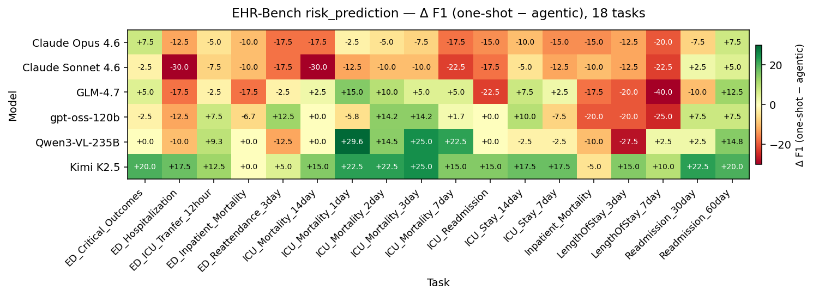
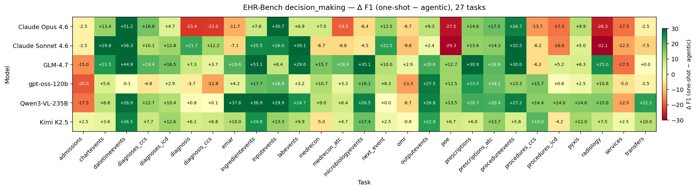
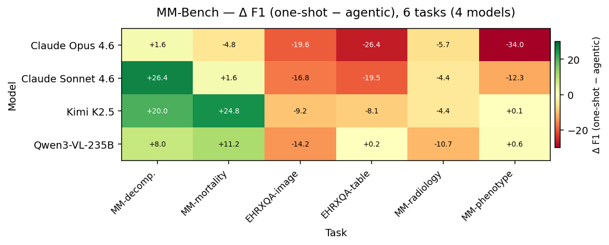

Generated 2026-04-27. Benchmarks: EHR-Bench (text-only, 1,800 rows, 45 sub-tasks) and MM-Bench (multimodal, 2,703 rows, 6 tasks). Models compared: Claude Opus 4.6, Claude Sonnet 4.6, Qwen3-VL-235B, Kimi K2.5, GLM-4.7, gpt-oss-120b. MiniMax M2.5 excluded from this pass — a new re-run is in progress.
| Model | Agentic F1 | One-shot F1 | Δ (OS − Ag) | |Δ| |
|---|---|---|---|---|
| Claude Opus 4.6 | 63.2 | 60.0 | -3.2 | 3.2 |
| Claude Sonnet 4.6 | 57.5 | 56.6 | -0.9 | 0.9 |
| GLM-4.7 | 43.9 | 51.3 | +7.4 | 7.4 |
| gpt-oss-120b | 40.1 | 43.0 | +2.9 | 2.9 |
| Qwen3-VL-235B | 38.6 | 48.4 | +9.8 | 9.8 |
| Kimi K2.5 | 37.9 | 49.2 | +11.4 | 11.4 |
| Model | risk_prediction F1 | decision_making F1 | ||||
|---|---|---|---|---|---|---|
| Agent. | OS | Δ | Agent. | OS | Δ | |
| Claude Opus 4.6 | 90.7 | 81.0 | -9.7 | 44.8 | 45.9 | +1.1 |
| Claude Sonnet 4.6 | 90.0 | 77.5 | -12.5 | 35.9 | 42.6 | +6.8 |
| GLM-4.7 | 75.1 | 70.4 | -4.7 | 23.1 | 38.6 | +15.5 |
| gpt-oss-120b | 75.4 | 74.0 | -1.4 | 16.6 | 22.3 | +5.7 |
| Qwen3-VL-235B | 67.9 | 71.0 | +3.1 | 19.1 | 33.4 | +14.3 |
| Kimi K2.5 | 65.0 | 79.9 | +14.9 | 19.8 | 28.8 | +9.1 |


| Model | Agentic F1 | One-shot F1 | Δ (OS − Ag) |
|---|---|---|---|
| Claude Opus 4.6 | 64.2 | 41.9 | -22.3 |
| Claude Sonnet 4.6 | 58.6 | 43.6 | -14.9 |
| Kimi K2.5 | 45.2 | 40.3 | -4.9 |
| Qwen3-VL-235B | 38.3 | 36.2 | -2.1 |

20 samples total, 5 per quadrant. Click on each to expand the trajectory summary.
gold: no
['no']['yes']Why: Agentic wins by running 20 ehr.get_*/run_sql_query calls to gather labs and vitals beyond what the one-shot <ehr_context> snapshot (latest-80 rows) contains. One-shot guessed ['yes'] from the truncated timeline.
<task_instruction>
Please predict whether the patient will die during hospitalization or will be transferred to the ICU within 12 hours after the emergency room.
Analyze the patient's EHR records up to the current time to make your prediction.
Do not assume any unseen future events beyond the current time.
When you need medical knowledge or clinical information, use the `browser.search` tool to find authoritative medical information from reliable sources.
Submit your final answer through `ehr.finish`. Your answer must be chosen only from the candidate list below.
</task_instruction>
<patient_info>
Current Time: 2111-12-19 03:00:01
Patient Subject ID: 10603830
</patient_info>
<candidate_answers>
["yes", "no"]
</candidate_answers>
ehr.load_ehr, ehr.get_table_names, ehr.get_latest_records, ehr.get_latest_records, ehr.get_latest_records, ehr.get_latest_records, ehr.get_latest_records, ehr.get_latest_records, ehr.get_latest_records, ehr.run_sql_query, ehr.run_sql_query, ehr.run_sql_query, ehr.run_sql_query, ehr.run_sql_query, ehr.run_sql_query, ehr.run_sql_query, ehr.run_sql_query, ehr.run_sql_query, ehr.run_sql_query, ehr.run_sql_query, ehr.run_sql_query, ehr.think, ehr.finish
(none)
<task_instruction>
Given the sequence of events that have occurred in a hospital, please predict whether the patient will die during hospitalization or will be transferred to the ICU within 12 hours after the emergency room.
All patient events needed for this task are already included below.
The current time is 2111-12-19 03:00:01, which is exactly one second after the latest observed event at 2111-12-19 03:00:00.
Use only the provided patient timeline.
Do not assume any unseen future events beyond the current time.
No EHR database lookup is needed for this record because the full timeline is embedded in the prompt.
Return only the final answer text as a single line. If candidate answers are provided, choose only from that candidate list.
</task_instruction>
<patient_info>
Current Time: 2111-12-19 03:00:01
</patient_info>
<patient_timeline>
## Patient Demographics [None]
- Anchor_Age: 21
- Gender: M
## EDstays [2111-12-18 23:03:00]
- Gender: M
- Race: WHITE
## Triage [2111-12-18 23:03:01]
- Temperature: nan
- Heartrate: 40.0
- Resprate: 18.0
- O2Sat: 100.0
- Sbp: 140.0
- Dbp: 58.0
- Pain: 13
- Acuity: 2.0
- Chiefcomplaint: IPH
## Labotary Test Events [2111-12-18 23:30:00]
| Item_Name | Valuenum | Valueuom | Ref_Range_Lower | Ref_Range_Upper | Flag | Comments |
| ------ | ------ | ------ | ------ | ------ | ------ | ------ |
| Light Green Top Hold | nan | nan | nan | nan | nan | HOLD. |
| Acetaminophen | nan | ug/mL | 10.0 | 30.0 | nan | NEG. |
| Anion Gap | 19.0 | mEq/L | 8.0 | 20.0 | nan | nan |
| Barbiturate Screen | nan | nan | nan | nan | nan | nan |
| Benzodiazepine Screen | nan | nan | nan | nan | nan | BENZODIAZEPINE IMMUNOASSAY SCREEN DOES NOT RELIABLY DETECT SOME DRUGS,;INCLUDING LORAZEPAM, CLONAZEPAM, AND FLUNITRAZEPAM. |
| Bicarbonate | 24.0 | mEq/L | 22.0 | 32.0 | nan | nan |
| Calcium, Total | 10.0 | mg/dL | 8.4 | 10.3 | nan | nan |
| Chloride | 97.0 | mEq/L | 96.0 | 108.0 | nan | nan |
| Creatinine | 0.7 | mg/dL | 0.5 | 1.2 | nan | nan |
| Estimated GFR (MDRD equation) | nan | nan | nan | nan | nan | Using this patient's age, gender, and serum creatinine value of 0.7,. Estimated GFR = >75 if non African-American (mL/min/1.73 m2). Estimated GFR = >75 if African-American (mL/min/1.73 m2). For comparison, mean GFR for age group 20-29 is 116 (mL/min/1.73 m2). GFR<60 = Chronic Kidney Disease, GFR<15 = Kidney Failure. |
| Ethanol | nan | mg/dL | 10.0 | 10.0 | nan | NEG. 80 (THESE UNITS) = 0.08 (% BY WEIGHT). |
| Glucose | 116.0 | mg/dL | 70.0 | 100.0 | abnormal | IF FASTING, 70-100 NORMAL, >125 PROVISIONAL DIABETES. |
| Magnesium | 1.8 | mg/dL | 1.6 | 2.6 | nan | nan |
| Phosphate | 3.8 | mg/dL | 2.7 | 4.5 | nan | nan |
| Potassium | 4.3 | mEq/L | 3.3 | 5.1 | nan | nan |
| Salicylate | nan | mg/dL | 2.0 | 25.0 | nan | NEG. |
| Sodium | 136.0 | mEq/L | 133.0 | 145.0 | nan | nan |
| Tricyclic Antidepressant Screen | nan | nan | nan | nan | nan | POSITIVE TRICYCLIC RESULTS REPRESENT POTENTIALLY TOXIC LEVELS;THERAPEUTIC TRICYCLIC LEVELS WILL TYPICALLY HAVE NEGATIVE RESULTS. |
| Urea Nitrogen | 12.0 | mg/dL | 6.0 | 20.0 | nan | nan |
| INR(PT) | 1.0 | nan | 0.9 | 1.1 | nan | nan |
| PT | 10.8 | sec | 9.4 | 12.5 | nan | nan |
| PTT | 29.3 | sec | 25.0 | 36.5 | nan | nan |
| Basophils | 0.1 | % | 0.0 | 2.0 | nan | nan |
| Eosinophils | 0.0 | % | 0.0 | 4.0 | nan | nan |
| Hematocrit | 43.4 | % | 40.0 | 52.0 | nan | nan |
| Hemoglobin | 14.7 | g/dL | 14.0 | 18.0 | nan | nan |
| Lymphocytes | 4.1 | % | 18.0 | 42.0 | abnormal | nan |
| MCH | 30.7 | pg | 27.0 | 32.0 | nan | nan |
| MCHC | 33.9 | % | 31.0 | 35.0 | nan | nan |
| MCV | 91.0 | fL | 82.0 | 98.0 | nan | nan |
| Monocytes | 3.9 | % | 2.0 | 11.0 | nan | nan |
| Neutrophils | 91.9 | % | 50.0 | 70.0 | abnormal | nan |
| Platelet Count | 281.0 | K/uL | 150.0 | 440.0 | nan | nan |
| RDW | 12.8 | % | 10.5 | 15.5 | nan | nan |
| Red Blood Cells | 4.79 | m/uL | 4.6 | 6.2 | nan | nan |
| White Blood Cells | 16.4 | K/uL | 4.0 | 11.0 | abnormal | nan |
## Pyxis [2111-12-18 23:36:00]
- Name: Morphine
## Vitalsign [2111-12-18 23:41:00]
- Temperature: nan
- Heartrate: 41.0
- Resprate: 16.0
- O2Sat: 99.0
- Sbp: 138.0
- Dbp: 56.0
- Pain: 10
- Rhythm: Sinus Bradycardia
## Radiology Examinations [2111-12-18 23:44:00]
- Note_Type: RR
- Exam_Name: ['CHEST (PORTABLE AP)']
- Text: INDICATION: Traumatic subarachnoid hemorrhage and cerebral contusion, here to
evaluate for pneumothorax.
COMPARISON: No prior studies available.
TECHNIQUE: Portable supine frontal radiograph of the chest.
FINDINGS: The inspiratory lung volumes are decreased. The lungs are clear
without focal consolidation, pleural effusion or pneumothorax. The pulmonary
vasculature is not engorged. The cardiac silhouette is accentuated due to
underinflation of the lungs, but likely top normal in size. The mediastinal
and hilar contours are within normal limits. The visualized upper abdomen is
unremarkable on this supine view. No acute osseous abnormality is detected.
IMPRESSION: No acute intrathoracic process, specifically no pneumothorax.
## Labotary Test Events [2111-12-18 23:56:00]
- Item_Name: Lactate
- Valuenum: 2.6
- Valueuom: mmol/L
- Ref_Range_Lower: 0.5
- Ref_Range_Upper: 2.0
- Flag: abnormal
- Comments: nan
## Procedures on International Classification of Diseases [2111-12-19 00:00:00]
- Procedures: Closure of skin and subcutaneous tissue of other sites
- Ccs Type: Suture of skin and subcutaneous tissue
## Provider Order Entry [2111-12-19 00:28:26]
| Order_Type | Order_Subtype |
| ------ | ------ |
| Lab | nan |
| Lab | nan |
## Vitalsign [2111-12-19 00:41:00]
- Temperature: nan
- Heartrate: 48.0
- Resprate: 16.0
- O2Sat: 100.0
- Sbp: 138.0
- Dbp: 52.0
- Pain: nan
- Rhythm: nan
## Provider Order Entry [2111-12-19 01:19:09]
| Order_Type | Order_Subtype |
| ------ | ------ |
| General Care | Other |
| Medications | nan |
| Medications | nan |
## Pyxis [2111-12-19 01:43:00]
| Name |
| ------ |
| Tetanus-DiphTox-Acellular Pertuss |
| Tetanus-DiphTox-Acellular Pertuss |
| Tetanus-DiphTox-Acellular Pertuss |
| Tetanus-DiphTox-Acellular Pertuss |
## Services [2111-12-19 01:44:54]
- Curr_Service: NSURG
## Vitalsign [2111-12-19 01:45:00]
| Temperature | Heartrate | Resprate | O2Sat | Sbp | Dbp | Pain | Rhythm |
| ------ | ------ | ------ | ------ | ------ | ------ | ------ | ------ |
| nan | 50.0 | 16.0 | 99.0 | 118.0 | 59.0 | nan | nan |
| 97.9 | 45.0 | 16.0 | 100.0 | 121.0 | 59.0 | nan | nan |
## Pyxis [2111-12-19 02:51:00]
- Name: Morphine
## Labotary Test Events [2111-12-19 03:00:00]
| Item_Name | Valuenum | Valueuom | Ref_Range_Lower | Ref_Range_Upper | Flag | Comments |
| ------ | ------ | ------ | ------ | ------ | ------ | ------ |
| Amphetamine Screen, Urine | nan | nan | nan | nan | nan | nan |
| Barbiturate Screen, Urine | nan | nan | nan | nan | nan | nan |
| Benzodiazepine Screen, Urine | nan | nan | nan | nan | nan | BENZODIAZEPINE IMMUNOASSAY SCREEN DOES NOT DETECT SOME DRUGS,;INCLUDING LORAZEPAM, CLONAZEPAM, AND FLUNITRAZEPAM. |
| Cocaine, Urine | nan | nan | nan | nan | nan | nan |
| Length of Urine Collection | nan | nan | nan | nan | nan | RANDOM. |
| Methadone, Urine | nan | nan | nan | nan | nan | METHADONE ASSAY DETECTS ONLY METHADONE (NOT OTHER OPIATES/OPIOIDS). |
| Opiate Screen, Urine | nan | nan | nan | nan | nan | OPIATE IMMUNOASSAY SCREEN DOES NOT DETECT SYNTHETIC OPIOIDS;SUCH AS METHADONE, OXYCODONE, FENTANYL, BUPRENORPHINE, TRAMADOL,;NALOXONE, MEPERIDINE. SEE ONLINE LAB MANUAL FOR DETAILS. |
| Length of Urine Collection | nan | nan | nan | nan | nan | RANDOM. |
| Urine tube, held | nan | nan | nan | nan | nan | ___ |
| Bilirubin | nan | mg/dL | nan | nan | nan | NEG. |
| Blood | nan | nan | nan | nan | nan | NEG. |
| Glucose | nan | mg/dL | nan | nan | nan | NEG. |
| Ketone | 40.0 | mg/dL | nan | nan | nan | nan |
| Leukocytes | nan | nan | nan | nan | nan | NEG. |
| Nitrite | nan | nan | nan | nan | nan | NEG. |
| pH | 6.0 | units | 5.0 | 8.0 | nan | nan |
| Protein | nan | mg/dL | nan | nan | nan | NEG. |
| Specific Gravity | 1.016 | | 1.001 | 1.035 | nan | nan |
| Urine Appearance | nan | nan | nan | nan | nan | Clear. |
| Urine Color | nan | nan | nan | nan | nan | Yellow. |
| Urobilinogen | nan | mg/dL | 0.2 | 1.0 | nan | NEG. |
</patient_timeline>
<candidate_answers>
["yes", "no"]
</candidate_answers>
---
After any reasoning, emit your final answer inside an <answer>...</answer> XML block as the very last thing you write. Put one answer per line inside the block, with no bullets, numbering, or markdown. If the task expects a single polar answer, put just that one line. If <candidate_answers> were provided, each line must match a candidate verbatim.
Looking at this patient's timeline:
- 21-year-old male presenting to the ED with IPH (Intraparenchymal Hemorrhage) as chief complaint
- Triage acuity: 2 (high acuity)
- Radiology confirms traumatic subarachnoid hemorrhage and cerebral contusion
- Sinus bradycardia with heart rate consistently 40-50 bpm (Cushing response - concerning for elevated intracranial pressure)
- Neurosurgery (NSURG) service consulted
- Elevated WBC (16.4), elevated lactate (2.6), elevated neutrophils (91.9%), low lymphocytes (4.1%)
- Morphine administered twice for pain …
gold: ['acetylsalicylic acid']
['acetylsalicylic acid']['senna glycosides']Why: Agentic wins by running 47 ehr.get_*/run_sql_query calls to gather labs and vitals beyond what the one-shot <ehr_context> snapshot (latest-80 rows) contains. One-shot guessed ['senna glycosides'] from the truncated timeline.
<task_instruction>
Please give the next Anatomical Therapeutic Chemical Classification Prescriptions suggestion for the patiens.
Analyze the patient's EHR records up to the current time to make your prediction.
Do not assume any unseen future events beyond the current time.
When you need medical knowledge or clinical information, use the `browser.search` tool to find authoritative medical information from reliable sources.
Submit your final answer through `ehr.finish`. Your answer must be chosen only from the candidate list below.
</task_instruction>
<patient_info>
Current Time: 2161-10-30 06:00:01
Patient Subject ID: 18932705
</patient_info>
<candidate_answers>
["nicotinic acid, combinations", "apraclonidine", "acitretin", "aminocaproic acid", "acebutolol", "mupirocin", "pramocaine", "enoxaparin", "ibuprofen", "oxycodone", "caffeine and sodium benzoate", "pentosan polysulfate sodium", "abciximab", "penicillamine", "chloroprocaine", "arsenic trioxide", "potassium acetate", "adenosine", "acetylsalicylic acid", "phenol", "sodium bicarbonate", "proxymetacaine", "ketorolac", "ursodeoxycholic acid", "acetylcysteine", "oxaprozin", "olsalazine", "acarbose", "naproxen", "diclofenac", "asenapine", "sulfasalazine", "alendronic acid", "anagrelide", "tetracaine", "calcipotriol", "acamprosate", "aciclovir", "hydroxyethylstarch", "meloxicam", "spironolactone", "benzocaine", "indometacin", "glycerol", "cetirizine", "benzoyl peroxide", "alprostadil", "sorbitol", "magnesium sulfate", "tranexamic acid", "tretinoin", "epoprostenol", "balsalazide", "atenolol", "hyoscyamine", "sodium glycerophosphate", "ambrisentan", "triamcinolone", "paracetamol", "allopurinol", "salsalate", "cromoglicic acid", "capsaicin", "citric acid", "sulfacetamide", "mesalazine", "thiosulfate", "etodolac", "valproic acid", "flurbiprofen", "apremilast", "piroxicam", "etacrynic acid", "mycophenolic acid", "acetic acid", "aluminium hydroxide", "sulindac", "lidocaine", "choline salicylate", "nicardipine", "sucralfate", "oxycodone and paracetamol", "aliskiren", "bisacodyl", "phenylephrine", "abatacept", "tolcapone", "sodium acetate", "zinc sulfate", "lacosamide", "ascorbic acid", "asparaginase", "celecoxib", "azathioprine", "docusate sodium", "pegaspargase", "acetazolamide", "diflorasone", "acetylsalicylic acid, combinations excl. psycholeptics", "senna glycosides", "fondaparinux"]
</candidate_answers>
ehr.load_ehr, ehr.get_table_names, ehr.get_column_names, ehr.get_column_names, ehr.get_column_names, ehr.get_column_names, ehr.run_sql_query, ehr.run_sql_query, ehr.run_sql_query, ehr.run_sql_query, ehr.run_sql_query, ehr.run_sql_query, ehr.run_sql_query, ehr.run_sql_query, ehr.run_sql_query, ehr.run_sql_query, ehr.run_sql_query, ehr.run_sql_query, ehr.get_column_names, ehr.get_column_names, ehr.run_sql_query, ehr.run_sql_query, ehr.run_sql_query, ehr.run_sql_query, ehr.get_records_by_keyword, ehr.get_records_by_keyword, ehr.run_sql_query, ehr.run_sql_query, ehr.get_column_names, ehr.run_sql_query, ehr.run_sql_query, ehr.run_sql_query, ehr.run_sql_query, ehr.run_sql_query, ehr.run_sql_query, ehr.run_sql_query, ehr.run_sql_query, ehr.run_sql_query, ehr.run_sql_query, ehr.run_sql_query, ehr.run_sql_query, ehr.run_sql_query, ehr.run_sql_query, ehr.run_sql_query, ehr.run_sql_query, ehr.run_sql_query, ehr.run_sql_query, ehr.run_sql_query, ehr.think, ehr.finish
(none)
<task_instruction>
Given the sequence of events that have occurred in a hospital, please give the next Anatomical Therapeutic Chemical Classification Prescriptions suggestion for the patiens.
All patient events needed for this task are already included below.
The current time is 2161-10-30 06:00:01, which is exactly one second after the latest observed event at 2161-10-30 06:00:00.
Use only the provided patient timeline.
Do not assume any unseen future events beyond the current time.
No EHR database lookup is needed for this record because the full timeline is embedded in the prompt.
Return only the final answer text. If multiple answers are needed, put one answer per line with no bullets or numbering. If candidate answers are provided, choose only from that candidate list.
</task_instruction>
<patient_info>
Current Time: 2161-10-30 06:00:01
</patient_info>
<patient_timeline>
## Patient Demographics [None]
- Anchor_Age: 83
- Gender: F
## Discharge [2160-05-13 00:00:00]
- Note_Type: DS
- Text:
Name: ___ Unit No: ___
Admission Date: ___ Discharge Date: ___
Date of Birth: ___ Sex: F
Service: MEDICINE
Allergies:
Darvon / Codeine Antitussive Cough / trazodone / NSAIDS
(Non-Steroidal Anti-Inflammatory Drug) / Oxycodone / Vicodin /
Penicillins / tramadol
Attending: ___.
Chief Complaint:
Cough, shortness of breath
Major Surgical or Invasive Procedure:
None
History of Present Illness:
HMED Hospitalization Note
Date of note: ___
PCP: ___, MD
CC: cough and shortness of breath
HPI: Ms. ___ is a ___ yo female with COPD, afib, lung cancer,
here with shortness of breath and cough.
Her grandson notes that she develops a copd exacerbation every
time she gets a virus - and this is similar. She was feeling
relatively well until the past few days, when she started to
notice shortness of breath and cough. She has not had increased
sputum production, fever, chills or chest pain.
She presented to the ED - and was found to have a pneumonia.
She received solumedrol, ctx and azithromycin, and nebulizers.
She required oxygen, and given hypoxia, and fragile respiratory
status, was hospitalized.
At present, she continues to feel short of breath, with cough,
but somewhat better than on presentation to the ED.
She noted no lower extremity edema, weight gain, PND, or
orthopnea.
ROS otherwise reviewed in details and negative in remaining
systems.
Past Medical History:
PMH:
COPD
HTN
HLD
Afib
ITP
AAA
Spinal stenosis
Uterine prolapse
Open abdominal aortic aneurysm repair with tube graft of
infrarenal AAA ___
Lung cancer, discovered this year and treated with radiation
Social History:
___
Family History:
No family history of COPD
Physical Exam:
Physical exam
98.2 PO 124 / 67 73 27 94 2LNC
Gen: In NAD, thin elderly woman.
HEENT: PERRL, EOMI. No scleral icterus. No conjunctival
injection. Mucous membranes moist. No oral ulcers.
Neck: Supple, no LAD, no JVP elevation.
Resp: Diffusely wheezy, but without focal crackles or rales.
Normal respiratory effort.
CV: RRR, no murmurs mappreciated
Gastrointestinal: soft, NT, ND, NABS, no HSM.
Musculoskeletal: warm and well perfused, no cyanosis, clubbing,
edema.
Neurological: alert and oriented X 3, Answers all questions
and follows commands.
Dermatologic: No rashes or ulcers.
Psychiatric: Appropriate.
GU: deferred.
discharge exam
02 sat 91-94%
Decreased wheezing
Pertinent Results:
___ 06:25AM BLOOD WBC-8.1 RBC-4.59 Hgb-13.6 Hct-43.8 MCV-95
MCH-29.6 MCHC-31.1* RDW-15.6* RDWSD-54.6* Plt Ct-82*
___ 06:25AM BLOOD Neuts-73.2* Lymphs-12.3* Monos-10.5
Eos-3.1 Baso-0.5 Im ___ AbsNeut-5.91 AbsLymp-0.99*
AbsMono-0.85* AbsEos-0.25 AbsBaso-0.04
___ 06:25AM BLOOD Plt Ct-82*
___ 06:25AM BLOOD Glucose-141* UreaN-17 Creat-0.7 Na-139
K-5.7* Cl-103 HCO3-24 AnGap-18
___ 08:33AM BLOOD Lactate-2.0 K-4.1
Flu negative
urine and blood cultures pending
Imaging:
PA lateral CXR ___. New consolidation behind the right heart border, localizing
to the
infrahilar region on the lateral view, is concerning for
pneumonia.
2. Right upper lobe mass itself has slightly decreased in size
since ___.
Discharge labs:
___ 06:15AM BLOOD WBC-12.9* RBC-4.78 Hgb-14.0 Hct-45.1*
MCV-94 MCH-29.3 MCHC-31.0* RDW-15.4 RDWSD-53.8* Plt ___
___ 06:15AM BLOOD Glucose-113* UreaN-35* Creat-0.8 Na-140
K-4.2 Cl-100 HCO3-30 AnGap-___ssessment and Plan: Ms. ___ is a ___ yo female with COPD and
lung cancer, here with acute exacerbation of COPD as well as
community acquired pneumonia
## Acute exacerbation of COPD - She was treated withsteroid
burst while here, and Duo nebs, advair and albuterol prn. She
was on oxygen to maintain O2 sat over 93%, and able to wean off
prior to discharge. Her home nebulizer treatment was unlear
## Community acquired pneumonia - she was treated with
ceftriaxone/azithromycin while hospitalized, and then
transitioned to cefpodoxime and azithromycin prior to dc, to
complete a 5 day course of azithromycin and a 7 day course of
cefpodoxime..
## Atrial fibrillation - with easy bleeding on ___. Her
dose was decreased to 2.5 mg po bid with discussion with her
cardiologist/pcp.
## Hypertension - controlled on home regimen.
## Thrombocytopenia, with history of ITP - she had
thrombocytopenia on admission, similar to her chronic level.
This slightly improved with steroids. She will follow up with
hematology as needed.
## Lung cancer, s/p XRT - repeat CT scan in ___, no further
imaging while hospitalized.
DNR/DNI.
Transitional issues:
Enrolled in PACT
Need to clarify nebulizer medications
Decreased ___
___, MD
___, ___, pager ___
Medications on Admission:
The Preadmission Medication list is accurate and complete.
1. Albuterol Inhaler 2 PUFF IH Q4H:PRN wheezing
2. ALPRAZolam 0.25 mg PO TID:PRN anxiety
3. Apixaban 5 mg PO BID
4. Symbicort (budesonide-formoterol) 80-4.5 mcg/actuation
inhalation 2 puffs twice daily
5. Furosemide 10 mg PO DAILY
6. Ipratropium-Albuterol Neb 1 NEB NEB Q6H:PRN SOB
7. Levothyroxine Sodium 50 mcg PO DAILY
8. Lisinopril 10 mg PO DAILY
9. Metoprolol Succinate XL 50 mg PO DAILY
10. Rosuvastatin Calcium 10 mg PO 1X/WEEK (MO)
11. Acetaminophen 1000 mg PO Q8H
12. Senna 17.2 mg PO DAILY
13. Multivitamins 1 TAB PO DAILY
14. Guaifenesin-CODEINE Phosphate 5 mL PO HS:PRN cough
Discharge Medications:
1. Albuterol 0.083% Neb Soln 1 NEB IH Q4H:PRN shortness of
breath
RX *albuterol sulfate 2.5 mg/3 mL (0.083 %) 1 treatment inh
every 4 hours Disp #*20 Vial Refills:*0
2. Azithromycin 250 mg PO Q24H Duration: 2 Days
RX *azithromycin 250 mg 1 tablet(s) by mouth daily Disp #*2
Tablet Refills:*0
3. Cefpodoxime Proxetil 400 mg PO Q12H Duration: 5 Days
RX *cefpodoxime 200 mg 2 tablet(s) by mouth twice daily Disp
#*20 Tablet Refills:*0
4. PredniSONE 40 mg PO DAILY
RX *prednisone 20 mg 2 tablet(s) by mouth daily Disp #*4 Tablet
Refills:*0
5. Apixaban 2.5 mg PO BID
RX *apixaban [___] 2.5 mg 1 tablet(s) by mouth twice daily
Disp #*60 Tablet Refills:*0
6. Acetaminophen 1000 mg PO Q8H
7. Albuterol Inhaler 2 PUFF IH Q4H:PRN wheezing
8. ALPRAZolam 0.25 mg PO TID:PRN anxiety
9. Furosemide 10 mg PO DAILY
10. Guaifenesin-CODEINE Phosphate 5 mL PO HS:PRN cough
11. Ipratropium-Albuterol Neb 1 NEB NEB Q6H:PRN SOB
12. Levothyroxine Sodium 50 mcg PO DAILY
13. Lisinopril 10 mg PO DAILY
14. Metoprolol Succinate XL 50 mg PO DAILY
15. Multivitamins 1 TAB PO DAILY
16. Rosuvastatin Calcium 10 mg PO 1X/WEEK (MO)
17. Senna 17.2 mg PO DAILY
18. Symbicort (budesonide-formoterol) 80-4.5 mcg/actuation
inhalation 2 PUFFS TWICE DAILY
Discharge Disposition:
Home With Service
Facility:
___
Discharge Diagnosis:
Pneumonia
COPD exacerbation
Lung cancer
Chronic congestive heart failure
Discharge Condition:
tolerating diet, ambulating with o2 sat over 90%
Discharge Instructions:
It was a pleasure to care for you at the ___.
You were hospitalized with a cough, and we found you had both a
copd exacerbation and pneumonia. You improved with antibiotics,
and should get better over the next few weeks.
Use the albuterol nebulizer up to every one hour as needed, and
the albuterol/atrovent nebulizer up to 4 times per day.
Weigh yourself every morning, call MD if weight goes up more
than 3 lbs.
Followup Instructions:
___
## Admissions [2161-10-26 18:32:00]
- Admission_Type: URGENT
- Admission_Location: TRANSFER FROM HOSPITAL
- Admission_Info: None
## Ingredient Events [2161-10-29 09:30:00]
| Item_Name | Amount | Amountuom | Rate | Rateuom |
| ------ | ------ | ------ | ------ | ------ |
| Water | 140.0 | ml | nan | nan |
| Oral/Gastric Ingredient | 140.0 | ml | nan | nan |
## Input Events [2161-10-29 09:30:00]
- Item_Name: PO Intake
- Amount: 140.0
- Amountuom: ml
- Rate: nan
- Rateuom: nan
## Electronic Medicine Administration Record [2161-10-29 09:37:00]
| Medication | Event_Txt |
| ------ | ------ |
| Amiodarone | Administered |
| Fluticasone-Salmeterol Diskus (250/50) | Administered |
| Multivitamins | Administered |
| Sodium Chloride 0.9% Flush | Flushed |
## Chart Events [2161-10-29 10:00:00]
| Item_Name | Valuenum | Valueuom | Warning |
| ------ | ------ | ------ | ------ |
| Heart Rate | 62.0 | bpm | 0.0 |
| Heart Rhythm | nan | nan | 0.0 |
| Respiratory Rate | 20.0 | insp/min | 0.0 |
| O2 saturation pulseoxymetry | 82.0 | % | 0.0 |
| Ectopy Type 1 | nan | nan | 0.0 |
| Temperature Fahrenheit | 97.5 | °F | 0.0 |
| Pain Present | nan | nan | 0.0 |
| Pain Location | nan | nan | 0.0 |
| Pain Level Acceptable | nan | nan | 0.0 |
| O2 Flow | 4.0 | L/min | 0.0 |
| Temperature Site | nan | nan | 0.0 |
| O2 Delivery Device(s) | nan | nan | 0.0 |
| Richmond-RAS Scale | 0.0 | nan | 0.0 |
| Goal Richmond-RAS Scale | 0.0 | nan | 0.0 |
| Pain Assessment Method | nan | nan | 0.0 |
| Oral Care | nan | nan | 0.0 |
| Non Invasive Blood Pressure systolic | 143.0 | mmHg | 0.0 |
| Non Invasive Blood Pressure diastolic | 50.0 | mmHg | 0.0 |
| Non Invasive Blood Pressure mean | 67.0 | mmHg | 0.0 |
## Output Events [2161-10-29 10:29:00]
- Item_Name: Void
- Value: 150.0
- Valueuom: ml
## Chart Events [2161-10-29 10:38:00]
| Item_Name | Valuenum | Valueuom | Warning |
| ------ | ------ | ------ | ------ |
| Bath | nan | nan | 0.0 |
| Heart Rhythm | nan | nan | 0.0 |
| Ectopy Type 1 | nan | nan | 0.0 |
| Heart Rate | 71.0 | bpm | 0.0 |
| Respiratory Rate | 20.0 | insp/min | 0.0 |
| O2 saturation pulseoxymetry | 100.0 | % | 0.0 |
| Non Invasive Blood Pressure systolic | 150.0 | mmHg | 0.0 |
| Non Invasive Blood Pressure diastolic | 56.0 | mmHg | 0.0 |
| Non Invasive Blood Pressure mean | 85.0 | mmHg | 0.0 |
## Provider Order Entry [2161-10-29 11:24:07]
| Order_Type | Order_Subtype |
| ------ | ------ |
| Lab | nan |
| Medications | nan |
| Lab | nan |
| Medications | nan |
| Lab | nan |
## Pharmacy [2161-10-29 11:52:37]
- Medication: Furosemide
- Proc_Type: Unit Dose
- Status: Discontinued
## Prescriptions [2161-10-29 12:00:00]
- Drug: Furosemide
- Atc Type: furosemide
- Prod_Strength: 40mg/4mL Vial
- Dose_Val_Rx: 80
- Dose_Unit_Rx: mg
## Chart Events [2161-10-29 12:00:00]
| Item_Name | Valuenum | Valueuom | Warning |
| ------ | ------ | ------ | ------ |
| Heart Rhythm | nan | nan | 0.0 |
| Heart Rate | 61.0 | bpm | 0.0 |
| Respiratory Rate | 17.0 | insp/min | 0.0 |
| O2 saturation pulseoxymetry | 100.0 | % | 0.0 |
| Parameters Checked | 1.0 | nan | 0.0 |
| Alarms On | 1.0 | nan | 0.0 |
| Ectopy Type 1 | nan | nan | 0.0 |
| GCS - Eye Opening | 4.0 | nan | 0.0 |
| GCS - Verbal Response | 5.0 | nan | 0.0 |
| GCS - Motor Response | 6.0 | nan | 0.0 |
| RUL Lung Sounds | nan | nan | 0.0 |
| RUL Lung Sounds | nan | nan | 0.0 |
| RLL Lung Sounds | nan | nan | 0.0 |
| LUL Lung Sounds | nan | nan | 0.0 |
| LLL Lung Sounds | nan | nan | 0.0 |
| Cough Effort | nan | nan | 0.0 |
| Oral Cavity | nan | nan | 0.0 |
| Head of Bed | nan | nan | 0.0 |
| Turn | nan | nan | 0.0 |
| Activity Tolerance | nan | nan | 0.0 |
| Side Rails | nan | nan | 0.0 |
| Safety Measures | nan | nan | 0.0 |
| Safety Measures | nan | nan | 0.0 |
| Safety Measures | nan | nan | 0.0 |
| Safety Measures | nan | nan | 0.0 |
| Safety Measures | nan | nan | 0.0 |
| Assistance | nan | nan | 0.0 |
| Activity / Mobility (JH-HLM) | 2.0 | nan | 0.0 |
| Breathing pattern/effort | nan | nan | 0.0 |
| Therapeutic Bed | nan | nan | 0.0 |
| Pressure Reducing Device | nan | nan | 0.0 |
| Anti Embolic Device | nan | nan | 0.0 |
| Oral Care | nan | nan | 0.0 |
| Bath | nan | nan | 0.0 |
## Output Events [2161-10-29 12:00:00]
- Item_Name: Void
- Value: 150.0
- Valueuom: ml
## Chart Events [2161-10-29 12:02:00]
| Item_Name | Valuenum | Valueuom | Warning |
| ------ | ------ | ------ | ------ |
| Non Invasive Blood Pressure systolic | 124.0 | mmHg | 0.0 |
| Non Invasive Blood Pressure diastolic | 97.0 | mmHg | 0.0 |
| Non Invasive Blood Pressure mean | 104.0 | mmHg | 0.0 |
## Electronic Medicine Administration Record [2161-10-29 12:34:00]
| Medication | Event_Txt |
| ------ | ------ |
| Furosemide | Administered |
| Ipratropium Bromide Neb | Administered |
## Chart Events [2161-10-29 13:00:00]
| Item_Name | Valuenum | Valueuom | Warning |
| ------ | ------ | ------ | ------ |
| Heart Rhythm | nan | nan | 0.0 |
| Ectopy Type 1 | nan | nan | 0.0 |
| Heart Rate | 73.0 | bpm | 0.0 |
| Respiratory Rate | 21.0 | insp/min | 0.0 |
| O2 saturation pulseoxymetry | 100.0 | % | 0.0 |
## Output Events [2161-10-29 13:00:00]
- Item_Name: Void
- Value: 250.0
- Valueuom: ml
## Ingredient Events [2161-10-29 13:30:00]
| Item_Name | Amount | Amountuom | Rate | Rateuom |
| ------ | ------ | ------ | ------ | ------ |
| Water | 200.0 | ml | nan | nan |
| Oral/Gastric Ingredient | 200.0 | ml | nan | nan |
## Input Events [2161-10-29 13:30:00]
- Item_Name: PO Intake
- Amount: 200.0
- Amountuom: ml
- Rate: nan
- Rateuom: nan
## Provider Order Entry [2161-10-29 13:58:29]
| Order_Type | Order_Subtype |
| ------ | ------ |
| Lab | nan |
| Medications | nan |
| Lab | nan |
## Chart Events [2161-10-29 14:00:00]
| Item_Name | Valuenum | Valueuom | Warning |
| ------ | ------ | ------ | ------ |
| Heart Rhythm | nan | nan | 0.0 |
| Ectopy Type 1 | nan | nan | 0.0 |
| Heart Rate | 77.0 | bpm | 0.0 |
| Respiratory Rate | 21.0 | insp/min | 0.0 |
| O2 saturation pulseoxymetry | 99.0 | % | 0.0 |
| O2 Flow | 2.0 | L/min | 0.0 |
| O2 Delivery Device(s) | nan | nan | 0.0 |
## Pharmacy [2161-10-29 14:01:46]
- Medication: Aspirin
- Proc_Type: Unit Dose
- Status: Discontinued via patient discharge
## Chart Events [2161-10-29 14:24:00]
| Item_Name | Valuenum | Valueuom | Warning |
| ------ | ------ | ------ | ------ |
| Non Invasive Blood Pressure systolic | 109.0 | mmHg | 0.0 |
| Non Invasive Blood Pressure diastolic | 58.0 | mmHg | 0.0 |
| Non Invasive Blood Pressure mean | 71.0 | mmHg | 0.0 |
## Electronic Medicine Administration Record [2161-10-29 15:00:00]
- Medication: Sodium Chloride 0.9% Flush
- Event_Txt: Not Flushed
## Chart Events [2161-10-29 15:00:00]
| Item_Name | Valuenum | Valueuom | Warning |
| ------ | ------ | ------ | ------ |
| Heart Rate | 76.0 | bpm | 0.0 |
| Heart Rhythm | nan | nan | 0.0 |
| Respiratory Rate | 22.0 | insp/min | 0.0 |
| O2 saturation pulseoxymetry | 99.0 | % | 0.0 |
| Ectopy Type 1 | nan | nan | 0.0 |
| Richmond-RAS Scale | 0.0 | nan | 0.0 |
| Goal Richmond-RAS Scale | 0.0 | nan | 0.0 |
| Head of Bed | nan | nan | 0.0 |
| Turn | nan | nan | 0.0 |
| Activity Tolerance | nan | nan | 0.0 |
| Position | nan | nan | 0.0 |
| Assistance | nan | nan | 0.0 |
| Activity / Mobility (JH-HLM) | 5.0 | nan | 0.0 |
## Output Events [2161-10-29 15:11:00]
- Item_Name: Void
- Value: 200.0
- Valueuom: ml
## Labotary Test Events [2161-10-29 15:32:00]
| Item_Name | Valuenum | Valueuom | Ref_Range_Lower | Ref_Range_Upper | Flag | Comments |
| ------ | ------ | ------ | ------ | ------ | ------ | ------ |
| Anion Gap | 13.0 | mEq/L | 10.0 | 18.0 | nan | New reference range as of ___. |
| Bicarbonate | 31.0 | mEq/L | 22.0 | 32.0 | nan | nan |
| Calcium, Total | 8.3 | mg/dL | 8.4 | 10.3 | abnormal | nan |
| Chloride | 98.0 | mEq/L | 96.0 | 108.0 | nan | nan |
| Creatinine | 1.0 | mg/dL | 0.4 | 1.1 | nan | nan |
| Glucose | 209.0 | mg/dL | 70.0 | 100.0 | abnormal | If fasting, 70-100 normal, >125 provisional diabetes. |
| H | 54.0 | nan | nan | nan | nan | nan |
| I | 1.0 | nan | nan | nan | nan | nan |
| Magnesium | 1.9 | mg/dL | 1.6 | 2.6 | nan | nan |
| Phosphate | 3.2 | mg/dL | 2.7 | 4.5 | nan | nan |
| Potassium | 4.2 | mEq/L | 3.5 | 5.4 | nan | New reference range as of ___. |
| Sodium | 142.0 | mEq/L | 135.0 | 147.0 | nan | New reference range as of ___. |
| Urea Nitrogen | 55.0 | mg/dL | 6.0 | 20.0 | abnormal | nan |
| L | 34.0 | nan | nan | nan | nan | nan |
## Chart Events [2161-10-29 15:32:00]
| Item_Name | Valuenum | Valueuom | Warning |
| ------ | ------ | ------ | ------ |
| Chloride (serum) | 98.0 | mEq/L | 0.0 |
| Creatinine (serum) | 1.0 | mg/dL | 0.0 |
| Glucose (serum) | 209.0 | mg/dL | 1.0 |
| Magnesium | 1.9 | mg/dL | 0.0 |
| Sodium (serum) | 142.0 | mEq/L | 0.0 |
| BUN | 55.0 | mg/dL | 1.0 |
| Calcium non-ionized | 8.3 | mg/dL | 1.0 |
| Phosphorous | 3.2 | mg/dL | 0.0 |
| Anion gap | 13.0 | mEq/L | 0.0 |
| Potassium (serum) | 4.2 | mEq/L | 0.0 |
| HCO3 (serum) | 31.0 | mEq/L | 0.0 |
| Heart Rate | 71.0 | bpm | 0.0 |
| Heart Rhythm | nan | nan | 0.0 |
| Respiratory Rate | 27.0 | insp/min | 0.0 |
| O2 saturation pulseoxymetry | 100.0 | % | 0.0 |
| Temperature Fahrenheit | 97.5 | °F | 0.0 |
| Parameters Checked | 1.0 | nan | 0.0 |
| Alarms On | 1.0 | nan | 0.0 |
| Temperature Site | nan | nan | 0.0 |
| Ectopy Type 1 | nan | nan | 0.0 |
| Impaired Tissue Perfusion NCP - Expected outcomes | nan | nan | 0.0 |
| Impaired Tissue Perfusion NCP - Expected outcomes | nan | nan | 0.0 |
| Impaired Tissue Perfusion NCP - Expected outcomes | nan | nan | 0.0 |
| Impaired Tissue Perfusion NCP - Expected outcomes | nan | nan | 0.0 |
| Impaired Tissue Perfusion NCP - Expected outcomes | nan | nan | 0.0 |
| Impaired Tissue Perfusion NCP - Expected outcomes | nan | nan | 0.0 |
| Impaired Tissue Perfusion NCP - Expected outcomes | nan | nan | 0.0 |
| Impaired Tissue Perfusion NCP - Interventions | nan | nan | 0.0 |
| Impaired Tissue Perfusion NCP - Interventions | nan | nan | 0.0 |
| Impaired Tissue Perfusion NCP - Interventions | nan | nan | 0.0 |
| Impaired Tissue Perfusion NCP - Interventions | nan | nan | 0.0 |
| Impaired Tissue Perfusion NCP - Interventions | nan | nan | 0.0 |
| Impaired Tissue Perfusion NCP - Interventions | nan | nan | 0.0 |
| Impaired Tissue Perfusion NCP - Interventions | nan | nan | 0.0 |
| Impaired Tissue Perfusion NCP - Interventions | nan | nan | 0.0 |
| Impaired Tissue Perfusion NCP - Interventions | nan | nan | 0.0 |
| Impaired Tissue Perfusion NCP - Interventions | nan | nan | 0.0 |
| Impaired Tissue Perfusion NCP - Problem resolved | nan | nan | 0.0 |
| Acuity Workload Question 1 | 3.0 | nan | 0.0 |
| Acuity Workload Question 2 | 3.0 | nan | 0.0 |
| Non Invasive Blood Pressure systolic | 119.0 | mmHg | 0.0 |
| Non Invasive Blood Pressure diastolic | 42.0 | mmHg | 0.0 |
| Non Invasive Blood Pressure mean | 64.0 | mmHg | 0.0 |
## Output Events [2161-10-29 16:51:00]
- Item_Name: Void
- Value: 200.0
- Valueuom: ml
## Chart Events [2161-10-29 17:00:00]
| Item_Name | Valuenum | Valueuom | Warning |
| ------ | ------ | ------ | ------ |
| Heart Rate | 90.0 | bpm | 0.0 |
| Heart Rhythm | nan | nan | 0.0 |
| Respiratory Rate | 28.0 | insp/min | 0.0 |
| O2 saturation pulseoxymetry | 100.0 | % | 0.0 |
| Ectopy Type 1 | nan | nan | 0.0 |
| Turn | nan | nan | 0.0 |
| Activity Tolerance | nan | nan | 0.0 |
| Activity / Mobility (JH-HLM) | 5.0 | nan | 0.0 |
| Assistance | nan | nan | 0.0 |
| Therapeutic Bed | nan | nan | 0.0 |
| Pressure Reducing Device | nan | nan | 0.0 |
## Output Events [2161-10-29 17:00:00]
- Item_Name: Void
- Value: 200.0
- Valueuom: ml
## Chart Events [2161-10-29 17:02:00]
| Item_Name | Valuenum | Valueuom | Warning |
| ------ | ------ | ------ | ------ |
| Non Invasive Blood Pressure systolic | 130.0 | mmHg | 0.0 |
| Non Invasive Blood Pressure diastolic | 73.0 | mmHg | 0.0 |
| Non Invasive Blood Pressure mean | 90.0 | mmHg | 0.0 |
## Ingredient Events [2161-10-29 17:09:00]
| Item_Name | Amount | Amountuom | Rate | Rateuom |
| ------ | ------ | ------ | ------ | ------ |
| Water | 200.0 | ml | nan | nan |
| Oral/Gastric Ingredient | 200.0 | ml | nan | nan |
## Input Events [2161-10-29 17:09:00]
- Item_Name: PO Intake
- Amount: 200.0
- Amountuom: ml
- Rate: nan
- Rateuom: nan
## Provider Order Entry [2161-10-29 17:09:45]
- Order_Type: Medications
- Order_Subtype: nan
## Pharmacy [2161-10-29 17:12:07]
- Medication: Furosemide
- Proc_Type: Unit Dose
- Status: Discontinued
## Electronic Medicine Administration Record [2161-10-29 17:52:00]
| Medication | Event_Txt |
| ------ | ------ |
| Furosemide | Administered |
| Ipratropium Bromide Neb | Administered |
| Sodium Chloride 0.9% Flush | Flushed |
| Docusate Sodium | Administered |
| Magnesium Sulfate Replacement (Critical Care and Oncology) | Administered |
## Prescriptions [2161-10-29 18:00:00]
- Drug: Furosemide
- Atc Type: furosemide
- Prod_Strength: 100mg/10mL Vial
- Dose_Val_Rx: 80
- Dose_Unit_Rx: mg
## Chart Events [2161-10-29 18:00:00]
| Item_Name | Valuenum | Valueuom | Warning |
| ------ | ------ | ------ | ------ |
| Heart Rate | 71.0 | bpm | 0.0 |
| Heart Rhythm | nan | nan | 0.0 |
| Respiratory Rate | 22.0 | insp/min | 0.0 |
| O2 saturation pulseoxymetry | 96.0 | % | 0.0 |
## Output Events [2161-10-29 18:00:00]
- Item_Name: Void
- Value: 100.0
- Valueuom: ml
## Ingredient Events [2161-10-29 18:05:00]
| Item_Name | Amount | Amountuom | Rate | Rateuom |
| ------ | ------ | ------ | ------ | ------ |
| Water | 49.999998807907104 | ml | 50.0 | mL/hour |
| IVF ingredient | 49.999998807907104 | ml | 50.0 | mL/hour |
## Input Events [2161-10-29 18:05:00]
| Item_Name | Amount | Amountuom | Rate | Rateuom |
| ------ | ------ | ------ | ------ | ------ |
| Magnesium Sulfate | 2.0000001043081284 | grams | nan | nan |
| Magnesium Sulfate (Bolus) | 49.999998807907104 | ml | 50.0 | mL/hour |
## Chart Events [2161-10-29 18:06:00]
| Item_Name | Valuenum | Valueuom | Warning |
| ------ | ------ | ------ | ------ |
| 20 Gauge placed in outside facility | 0.0 | nan | 0.0 |
| 20 Gauge Dressing Occlusive | 1.0 | nan | 0.0 |
| 20 G Phlebitis Scale | nan | nan | 0.0 |
| 20 G Infiltration Scale | nan | nan | 0.0 |
| 20 Gauge placed in the field | 0.0 | nan | 0.0 |
| Non Invasive Blood Pressure systolic | 130.0 | mmHg | 0.0 |
| Non Invasive Blood Pressure diastolic | 65.0 | mmHg | 0.0 |
| Non Invasive Blood Pressure mean | 82.0 | mmHg | 0.0 |
## Datetime Events [2161-10-29 18:06:00]
- Item_Name: 20 Gauge Insertion Date
## Input Events [2161-10-29 18:06:00]
- Item_Name: Furosemide (Lasix)
- Amount: 80.00000566244125
- Amountuom: mg
- Rate: nan
- Rateuom: nan
## Procedure Events [2161-10-29 18:06:00]
- Item_Name: 20 Gauge
- Value: 1003.0
- Valueuom: min
- Location: nan
- Locationcategory: nan
## Chart Events [2161-10-29 19:00:00]
| Item_Name | Valuenum | Valueuom | Warning |
| ------ | ------ | ------ | ------ |
| Heart Rate | 84.0 | bpm | 0.0 |
| Heart Rhythm | nan | nan | 0.0 |
| Respiratory Rate | 18.0 | insp/min | 0.0 |
| O2 saturation pulseoxymetry | 100.0 | % | 0.0 |
## Output Events [2161-10-29 19:00:00]
- Item_Name: Void
- Value: 50.0
- Valueuom: ml
## Chart Events [2161-10-29 19:02:00]
| Item_Name | Valuenum | Valueuom | Warning |
| ------ | ------ | ------ | ------ |
| Non Invasive Blood Pressure systolic | 135.0 | mmHg | 0.0 |
| Non Invasive Blood Pressure diastolic | 78.0 | mmHg | 0.0 |
| Non Invasive Blood Pressure mean | 88.0 | mmHg | 0.0 |
| Heart Rate | 73.0 | bpm | 0.0 |
| Heart Rhythm | nan | nan | 0.0 |
| Respiratory Rate | 26.0 | insp/min | 0.0 |
| O2 saturation pulseoxymetry | 98.0 | % | 0.0 |
| Ectopy Type 1 | nan | nan | 0.0 |
| Ectopy Frequency 1 | nan | nan | 0.0 |
| Heart rate Alarm - High | 130.0 | bpm | 0.0 |
| Heart Rate Alarm - Low | 40.0 | bpm | 0.0 |
| Non-Invasive Blood Pressure Alarm - High | 160.0 | mmHg | 0.0 |
| Non-Invasive Blood Pressure Alarm - Low | 90.0 | mmHg | 0.0 |
| O2 Saturation Pulseoxymetry Alarm - High | 100.0 | % | 0.0 |
| O2 Saturation Pulseoxymetry Alarm - Low | 90.0 | % | 0.0 |
| Resp Alarm - High | 35.0 | insp/min | 0.0 |
| Resp Alarm - Low | 8.0 | insp/min | 0.0 |
| Parameters Checked | 1.0 | nan | 0.0 |
| Alarms On | 1.0 | nan | 0.0 |
| SpO2 Desat Limit | 85.0 | % | 0.0 |
| NBP Alarm Source | nan | nan | 0.0 |
| ST Segment Monitoring On | 1.0 | nan | 0.0 |
| Temperature Fahrenheit | 97.6 | °F | 0.0 |
| Temperature Site | nan | nan | 0.0 |
| Pain Present | nan | nan | 0.0 |
| Pain Level Acceptable | nan | nan | 0.0 |
| Pain Assessment Method | nan | nan | 0.0 |
| O2 Flow | 2.0 | L/min | 0.0 |
| O2 Delivery Device(s) | nan | nan | 0.0 |
| RUL Lung Sounds | nan | nan | 0.0 |
| RUL Lung Sounds | nan | nan | 0.0 |
| RLL Lung Sounds | nan | nan | 0.0 |
| LUL Lung Sounds | nan | nan | 0.0 |
| LUL Lung Sounds | nan | nan | 0.0 |
| LLL Lung Sounds | nan | nan | 0.0 |
| Oral Cavity | nan | nan | 0.0 |
| GCS - Eye Opening | 4.0 | nan | 0.0 |
| GCS - Verbal Response | 5.0 | nan | 0.0 |
| GCS - Motor Response | 6.0 | nan | 0.0 |
| Strength L Arm | 5.0 | nan | 0.0 |
| Strength L Leg | 5.0 | nan | 0.0 |
| Strength R Leg | 5.0 | nan | 0.0 |
| Strength R Arm | 5.0 | nan | 0.0 |
| Speech | nan | nan | 0.0 |
| Orientation | 1.0 | nan | 0.0 |
| Orientation | 1.0 | nan | 0.0 |
| Orientation | 1.0 | nan | 0.0 |
| Orientation | 1.0 | nan | 0.0 |
| Orientation | 1.0 | nan | 0.0 |
| Orientation | 1.0 | nan | 0.0 |
| Orientation | 1.0 | nan | 0.0 |
| Dorsal PedPulse R | nan | nan | 0.0 |
| PostTib. Pulses R | nan | nan | 0.0 |
| Dorsal PedPulse L | nan | nan | 0.0 |
| PostTib. Pulses L | nan | nan | 0.0 |
| RUE Color | nan | nan | 0.0 |
| RLE Color | nan | nan | 0.0 |
| LUE Color | nan | nan | 0.0 |
| LLE Color | nan | nan | 0.0 |
| RUE Temp | nan | nan | 0.0 |
| LUE Temp | nan | nan | 0.0 |
| RLE Temp | nan | nan | 0.0 |
| LLE Temp | nan | nan | 0.0 |
| Skin Integrity | nan | nan | 0.0 |
| Skin Temperature | nan | nan | 0.0 |
| Skin Color | nan | nan | 0.0 |
| Edema Location | nan | nan | 0.0 |
| Braden Sensory Perception | 4.0 | nan | 0.0 |
| Braden Moisture | 4.0 | nan | 0.0 |
| Braden Activity | 2.0 | nan | 0.0 |
| Braden Mobility | 2.0 | nan | 0.0 |
| Braden Nutrition | 2.0 | nan | 0.0 |
| Braden Friction/Shear | 2.0 | nan | 0.0 |
| Skin Condition | nan | nan | 0.0 |
| Pressure Reducing Device | nan | nan | 0.0 |
| Therapeutic Bed | nan | nan | 0.0 |
| Non Invasive Blood Pressure systolic | 130.0 | mmHg | 0.0 |
| Non Invasive Blood Pressure diastolic | 31.0 | mmHg | 0.0 |
| Non Invasive Blood Pressure mean | 59.0 | mmHg | 0.0 |
## Electronic Medicine Administration Record [2161-10-29 20:05:00]
| Medication | Event_Txt |
| ------ | ------ |
| Aspirin | Administered |
| Fluticasone-Salmeterol Diskus (250/50) | Administered |
| Rosuvastatin Calcium | Administered |
## Chart Events [2161-10-29 20:35:00]
| Item_Name | Valuenum | Valueuom | Warning |
| ------ | ------ | ------ | ------ |
| Richmond-RAS Scale | 0.0 | nan | 0.0 |
| Delirium assessment | nan | nan | 0.0 |
| CAM-ICU MS Change | 0.0 | nan | 0.0 |
| Oral Cavity | nan | nan | 0.0 |
| Nares R | nan | nan | 0.0 |
| Diet Type | nan | nan | 0.0 |
| Abdominal Assessment | nan | nan | 0.0 |
| Urine Source | nan | nan | 0.0 |
| Urine Color | nan | nan | 0.0 |
| Urine Appearance | nan | nan | 0.0 |
| Nares L | nan | nan | 0.0 |
| Side Rails | nan | nan | 0.0 |
| Safety Measures | nan | nan | 0.0 |
| Safety Measures | nan | nan | 0.0 |
| Safety Measures | nan | nan | 0.0 |
| History of falling (within 3 mnths) | 0.0 | nan | 0.0 |
| Secondary diagnosis | 15.0 | nan | 0.0 |
| Ambulatory aid | 0.0 | nan | 0.0 |
| IV/Saline lock | 20.0 | nan | 0.0 |
| Gait/Transferring | 10.0 | nan | 0.0 |
| Mental status | 0.0 | nan | 0.0 |
| Support Systems | nan | nan | 0.0 |
| Support Systems | nan | nan | 0.0 |
| Family Communication | nan | nan | 0.0 |
| Education Learner | nan | nan | 0.0 |
| Education Topic | nan | nan | 0.0 |
| Education Topic | nan | nan | 0.0 |
| Education Barrier | nan | nan | 0.0 |
| Education Method | nan | nan | 0.0 |
| Education Response | nan | nan | 0.0 |
| Education Readiness/Motivation | nan | nan | 0.0 |
| Education Existing Knowledge | nan | nan | 0.0 |
| Head of Bed | nan | nan | 0.0 |
| Turn | nan | nan | 0.0 |
| Activity Tolerance | nan | nan | 0.0 |
| Position | nan | nan | 0.0 |
| Assistance | nan | nan | 0.0 |
| Activity / Mobility (JH-HLM) | 2.0 | nan | 0.0 |
| 20 Gauge placed in outside facility | 0.0 | nan | 0.0 |
| 20 Gauge Dressing Occlusive | 1.0 | nan | 0.0 |
| 20 G Phlebitis Scale | nan | nan | 0.0 |
| 20 G Infiltration Scale | nan | nan | 0.0 |
| 20 Gauge placed in the field | 0.0 | nan | 0.0 |
## Datetime Events [2161-10-29 20:52:00]
- Item_Name: 20 Gauge Insertion Date
## Chart Events [2161-10-29 21:00:00]
| Item_Name | Valuenum | Valueuom | Warning |
| ------ | ------ | ------ | ------ |
| Heart Rate | 67.0 | bpm | 0.0 |
| Heart Rhythm | nan | nan | 0.0 |
| Respiratory Rate | 20.0 | insp/min | 0.0 |
## Output Events [2161-10-29 21:00:00]
- Item_Name: Void
- Value: 200.0
- Valueuom: ml
## Chart Events [2161-10-29 21:01:00]
| Item_Name | Valuenum | Valueuom | Warning |
| ------ | ------ | ------ | ------ |
| Non Invasive Blood Pressure systolic | 129.0 | mmHg | 0.0 |
| Non Invasive Blood Pressure diastolic | 79.0 | mmHg | 0.0 |
| Non Invasive Blood Pressure mean | 95.0 | mmHg | 0.0 |
| O2 saturation pulseoxymetry | 95.0 | % | 0.0 |
## Electronic Medicine Administration Record [2161-10-29 22:00:00]
- Medication: Senna
- Event_Txt: Not Given
## Chart Events [2161-10-29 22:00:00]
| Item_Name | Valuenum | Valueuom | Warning |
| ------ | ------ | ------ | ------ |
| Heart Rate | 68.0 | bpm | 0.0 |
| Heart Rhythm | nan | nan | 0.0 |
| Respiratory Rate | 22.0 | insp/min | 0.0 |
| O2 saturation pulseoxymetry | 100.0 | % | 0.0 |
| Ectopy Type 1 | nan | nan | 0.0 |
| Ectopy Frequency 1 | nan | nan | 0.0 |
| Non Invasive Blood Pressure systolic | 106.0 | mmHg | 0.0 |
| Non Invasive Blood Pressure diastolic | 57.0 | mmHg | 0.0 |
| Non Invasive Blood Pressure mean | 71.0 | mmHg | 0.0 |
## Provider Order Entry [2161-10-29 22:09:24]
- Order_Type: Medications
- Order_Subtype: nan
## Pharmacy [2161-10-29 22:11:49]
- Medication: ALPRAZolam
- Proc_Type: Unit Dose
- Status: Discontinued via patient discharge
## Electronic Medicine Administration Record [2161-10-29 22:16:00]
- Medication: ALPRAZolam
- Event_Txt: Administered
## Prescriptions [2161-10-29 23:00:00]
- Drug: ALPRAZolam
- Atc Type: alprazolam
- Prod_Strength: 0.25mg Tablet
- Dose_Val_Rx: 0.25
- Dose_Unit_Rx: mg
## Chart Events [2161-10-29 23:00:00]
| Item_Name | Valuenum | Valueuom | Warning |
| ------ | ------ | ------ | ------ |
| Heart Rate | 79.0 | bpm | 0.0 |
| Heart Rhythm | nan | nan | 0.0 |
| Respiratory Rate | 17.0 | insp/min | 0.0 |
| O2 saturation pulseoxymetry | 93.0 | % | 0.0 |
| Head of Bed | nan | nan | 0.0 |
| Turn | nan | nan | 0.0 |
| Position | nan | nan | 0.0 |
| Activity / Mobility (JH-HLM) | 2.0 | nan | 0.0 |
| Therapeutic Bed | nan | nan | 0.0 |
## Provider Order Entry [2161-10-29 23:28:55]
| Order_Type | Order_Subtype |
| ------ | ------ |
| Medications | nan |
| Medications | nan |
## Pharmacy [2161-10-29 23:43:49]
| Medication | Proc_Type | Status |
| ------ | ------ | ------ |
| Calcium Carbonate | Unit Dose | Discontinued via patient discharge |
| Ranitidine | Unit Dose | Expired |
## Electronic Medicine Administration Record [2161-10-29 23:55:00]
| Medication | Event_Txt |
| ------ | ------ |
| Ranitidine | Administered |
| Ipratropium Bromide Neb | Not Given |
## Prescriptions [2161-10-30 00:00:00]
| Drug | Atc Type | Prod_Strength | Dose_Val_Rx | Dose_Unit_Rx |
| ------ | ------ | ------ | ------ | ------ |
| Calcium Carbonate | nan | 500mg Tablet | 500 | mg |
| Ranitidine | ranitidine | 150mg Tablet | 150 | mg |
## Chart Events [2161-10-30 00:00:00]
| Item_Name | Valuenum | Valueuom | Warning |
| ------ | ------ | ------ | ------ |
| Heart Rate | 63.0 | bpm | 0.0 |
| Heart Rhythm | nan | nan | 0.0 |
| Respiratory Rate | 19.0 | insp/min | 0.0 |
| Ectopy Type 1 | nan | nan | 0.0 |
| Ectopy Frequency 1 | nan | nan | 0.0 |
| Parameters Checked | 1.0 | nan | 0.0 |
| Alarms On | 1.0 | nan | 0.0 |
| ST Segment Monitoring On | 1.0 | nan | 0.0 |
| Pain Present | nan | nan | 0.0 |
| Pain Assessment Method | nan | nan | 0.0 |
| O2 saturation pulseoxymetry | 90.0 | % | 0.0 |
| Non Invasive Blood Pressure systolic | 120.0 | mmHg | 0.0 |
| Non Invasive Blood Pressure diastolic | 66.0 | mmHg | 0.0 |
| Non Invasive Blood Pressure mean | 83.0 | mmHg | 0.0 |
| Heart Rate | 60.0 | bpm | 0.0 |
| Heart Rhythm | nan | nan | 0.0 |
| Respiratory Rate | 22.0 | insp/min | 0.0 |
| O2 saturation pulseoxymetry | 98.0 | % | 0.0 |
## Electronic Medicine Administration Record [2161-10-30 01:59:00]
- Medication: Acetaminophen
- Event_Txt: Administered
## Chart Events [2161-10-30 02:00:00]
| Item_Name | Valuenum | Valueuom | Warning |
| ------ | ------ | ------ | ------ |
| Heart Rate | 59.0 | bpm | 0.0 |
| Heart Rhythm | nan | nan | 0.0 |
| Respiratory Rate | 20.0 | insp/min | 0.0 |
| Ectopy Type 1 | nan | nan | 0.0 |
| Ectopy Frequency 1 | nan | nan | 0.0 |
| Head of Bed | nan | nan | 0.0 |
| Turn | nan | nan | 0.0 |
| Position | nan | nan | 0.0 |
| Therapeutic Bed | nan | nan | 0.0 |
| O2 saturation pulseoxymetry | 73.0 | % | 0.0 |
| Heart Rate | 60.0 | bpm | 0.0 |
| Heart Rhythm | nan | nan | 0.0 |
| Respiratory Rate | 20.0 | insp/min | 0.0 |
| O2 saturation pulseoxymetry | 100.0 | % | 0.0 |
| Heart Rate | 59.0 | bpm | 0.0 |
| Heart Rhythm | nan | nan | 0.0 |
| Respiratory Rate | 22.0 | insp/min | 0.0 |
| O2 saturation pulseoxymetry | 96.0 | % | 0.0 |
| Parameters Checked | 1.0 | nan | 0.0 |
| Alarms On | 1.0 | nan | 0.0 |
| ST Segment Monitoring On | 1.0 | nan | 0.0 |
| Pain Present | nan | nan | 0.0 |
| Pain Assessment Method | nan | nan | 0.0 |
| Ectopy Type 1 | nan | nan | 0.0 |
| Ectopy Frequency 1 | nan | nan | 0.0 |
| 20 Gauge placed in outside facility | 0.0 | nan | 0.0 |
| 20 Gauge Dressing Occlusive | 1.0 | nan | 0.0 |
| 20 G Phlebitis Scale | nan | nan | 0.0 |
| 20 G Infiltration Scale | nan | nan | 0.0 |
| 20 Gauge placed in the field | 0.0 | nan | 0.0 |
## Datetime Events [2161-10-30 04:36:00]
- Item_Name: 20 Gauge Insertion Date
## Chart Events [2161-10-30 05:00:00]
| Item_Name | Valuenum | Valueuom | Warning |
| ------ | ------ | ------ | ------ |
| Heart Rhythm | nan | nan | 0.0 |
| Heart Rate | 65.0 | bpm | 0.0 |
| Respiratory Rate | 26.0 | insp/min | 0.0 |
## Output Events [2161-10-30 05:00:00]
- Item_Name: Void
- Value: 150.0
- Valueuom: ml
## Chart Events [2161-10-30 05:01:00]
- Item_Name: O2 saturation pulseoxymetry
- Valuenum: 90.0
- Valueuom: %
- Warning: 0.0
## Electronic Medicine Administration Record [2161-10-30 05:38:00]
| Medication | Event_Txt |
| ------ | ------ |
| Sodium Chloride 0.9% Flush | Flushed |
| Sodium Chloride 0.9% Flush | Flushed |
| Levothyroxine Sodium | Administered |
| Ipratropium Bromide Neb | Not Given |
## Labotary Test Events [2161-10-30 06:00:00]
| Item_Name | Valuenum | Valueuom | Ref_Range_Lower | Ref_Range_Upper | Flag | Comments |
| ------ | ------ | ------ | ------ | ------ | ------ | ------ |
| Hematocrit | 48.7 | % | 34.0 | 45.0 | abnormal | nan |
| Hemoglobin | 15.3 | g/dL | 11.2 | 15.7 | nan | nan |
| MCH | 31.2 | pg | 26.0 | 32.0 | nan | nan |
| MCHC | 31.4 | g/dL | 32.0 | 37.0 | abnormal | nan |
| MCV | 99.0 | fL | 82.0 | 98.0 | abnormal | nan |
| Platelet Count | 90.0 | K/uL | 150.0 | 400.0 | abnormal | nan |
| RDW | 14.7 | % | 10.5 | 15.5 | nan | nan |
| Red Blood Cells | 4.91 | m/uL | 3.9 | 5.2 | nan | nan |
| White Blood Cells | 7.4 | K/uL | 4.0 | 10.0 | nan | nan |
| RDW-SD | 52.9 | fL | 35.1 | 46.3 | abnormal | nan |
| INR(PT) | 1.7 | nan | 0.9 | 1.1 | abnormal | nan |
| PT | 18.6 | sec | 9.4 | 12.5 | abnormal | nan |
| PTT | 36.0 | sec | 25.0 | 36.5 | nan | nan |
| Alanine Aminotransferase (ALT) | 227.0 | IU/L | 0.0 | 40.0 | abnormal | nan |
| Albumin | 3.4 | g/dL | 3.5 | 5.2 | abnormal | nan |
| Alkaline Phosphatase | 223.0 | IU/L | 35.0 | 105.0 | abnormal | nan |
| Anion Gap | 14.0 | mEq/L | 10.0 | 18.0 | nan | New reference range as of ___. |
| Asparate Aminotransferase (AST) | 65.0 | IU/L | 0.0 | 40.0 | abnormal | nan |
| Bicarbonate | 31.0 | mEq/L | 22.0 | 32.0 | nan | nan |
| Bilirubin, Total | 0.7 | mg/dL | 0.0 | 1.5 | nan | nan |
| Calcium, Total | 8.4 | mg/dL | 8.4 | 10.3 | nan | nan |
| Chloride | 98.0 | mEq/L | 96.0 | 108.0 | nan | nan |
| Creatinine | 1.2 | mg/dL | 0.4 | 1.1 | abnormal | nan |
| Glucose | 119.0 | mg/dL | 70.0 | 100.0 | abnormal | If fasting, 70-100 normal, >125 provisional diabetes. |
| H | 30.0 | nan | nan | nan | nan | nan |
| I | 1.0 | nan | nan | nan | nan | nan |
| Lactate Dehydrogenase (LD) | 301.0 | IU/L | 94.0 | 250.0 | abnormal | nan |
| Magnesium | 2.4 | mg/dL | 1.6 | 2.6 | nan | nan |
| Phosphate | 3.3 | mg/dL | 2.7 | 4.5 | nan | nan |
| Potassium | 4.3 | mEq/L | 3.5 | 5.4 | nan | New reference range as of ___. |
| Sodium | 143.0 | mEq/L | 135.0 | 147.0 | nan | New reference range as of ___. |
| Urea Nitrogen | 57.0 | mg/dL | 6.0 | 20.0 | abnormal | nan |
| L | 11.0 | nan | nan | nan | nan | nan |
## Chart Events [2161-10-30 06:00:00]
| Item_Name | Valuenum | Valueuom | Warning |
| ------ | ------ | ------ | ------ |
| Heart Rate | 67.0 | bpm | 0.0 |
| Heart Rhythm | nan | nan | 0.0 |
| Respiratory Rate | 18.0 | insp/min | 0.0 |
| Hemoglobin | 15.3 | g/dl | 0.0 |
| Hematocrit (serum) | 48.7 | % | 1.0 |
| WBC | 7.4 | K/uL | 0.0 |
| Platelet Count | 90.0 | K/uL | 1.0 |
| Prothrombin time | 18.6 | sec | 1.0 |
| PTT | 36.0 | sec | 0.0 |
| INR | 1.7 | nan | 1.0 |
| AST | 65.0 | IU/L | 1.0 |
| Chloride (serum) | 98.0 | mEq/L | 0.0 |
| Creatinine (serum) | 1.2 | mg/dL | 1.0 |
| Glucose (serum) | 119.0 | mg/dL | 1.0 |
| LDH | 301.0 | IU/L | 1.0 |
| Magnesium | 2.4 | mg/dL | 0.0 |
| ALT | 227.0 | IU/L | 1.0 |
| Sodium (serum) | 143.0 | mEq/L | 0.0 |
| Alkaline Phosphate | 223.0 | IU/L | 1.0 |
| BUN | 57.0 | mg/dL | 1.0 |
| Calcium non-ionized | 8.4 | mg/dL | 0.0 |
| Phosphorous | 3.3 | mg/dL | 0.0 |
| Total Bilirubin | 0.7 | mg/dL | 0.0 |
| Anion gap | 14.0 | mEq/L | 0.0 |
| Potassium (serum) | 4.3 | mEq/L | 0.0 |
| HCO3 (serum) | 31.0 | mEq/L | 0.0 |
| Albumin | 3.4 | g/dL | 1.0 |
| O2 saturation pulseoxymetry | 82.0 | % | 0.0 |
| Heart Rhythm | nan | nan | 0.0 |
| Heart Rate | 61.0 | bpm | 0.0 |
| Heart rate Alarm - High | 120.0 | bpm | 0.0 |
| Heart Rate Alarm - Low | 45.0 | bpm | 0.0 |
| Respiratory Rate | 18.0 | insp/min | 0.0 |
| O2 saturation pulseoxymetry | 88.0 | % | 0.0 |
| Non-Invasive Blood Pressure Alarm - High | 160.0 | mmHg | 0.0 |
| Non-Invasive Blood Pressure Alarm - Low | 90.0 | mmHg | 0.0 |
| O2 Saturation Pulseoxymetry Alarm - High | 100.0 | % | 0.0 |
| O2 Saturation Pulseoxymetry Alarm - Low | 88.0 | % | 0.0 |
| Parameters Checked | 1.0 | nan | 0.0 |
| Alarms On | 1.0 | nan | 0.0 |
| Ectopy Type 1 | nan | nan | 0.0 |
| SpO2 Desat Limit | 88.0 | % | 0.0 |
| NBP Alarm Source | nan | nan | 0.0 |
| ST Segment Monitoring On | 1.0 | nan | 0.0 |
</patient_timeline>
<candidate_answers>
["nicotinic acid, combinations", "apraclonidine", "acitretin", "aminocaproic acid", "acebutolol", "mupirocin", "pramocaine", "enoxaparin", "ibuprofen", "oxycodone", "caffeine and sodium benzoate", "pentosan polysulfate sodium", "abciximab", "penicillamine", "chloroprocaine", "arsenic trioxide", "potassium acetate", "adenosine", "acetylsalicylic acid", "phenol", "sodium bicarbonate", "proxymetacaine", "ketorolac", "ursodeoxycholic acid", "acetylcysteine", "oxaprozin", "olsalazine", "acarbose", "naproxen", "diclofenac", "asenapine", "sulfasalazine", "alendronic acid", "anagrelide", "tetracaine", "calcipotriol", "acamprosate", "aciclovir", "hydroxyethylstarch", "meloxicam", "spironolactone", "benzocaine", "indometacin", "glycerol", "cetirizine", "benzoyl peroxide", "alprostadil", "sorbitol", "magnesium sulfate", "tranexamic acid", "tretinoin", "epoprostenol", "balsalazide", "atenolol", "hyoscyamine", "sodium glycerophosphate", "ambrisentan", "triamcinolone", "paracetamol", "allopurinol", "salsalate", "cromoglicic acid", "capsaicin", "citric acid", "sulfacetamide", "mesalazine", "thiosulfate", "etodolac", "valproic acid", "flurbiprofen", "apremilast", "piroxicam", "etacrynic acid", "mycophenolic acid", "acetic acid", "aluminium hydroxide", "sulindac", "lidocaine", "choline salicylate", "nicardipine", "sucralfate", "oxycodone and paracetamol", "aliskiren", "bisacodyl", "phenylephrine", "abatacept", "tolcapone", "sodium acetate", "zinc sulfate", "lacosamide", "ascorbic acid", "asparaginase", "celecoxib", "azathioprine", "docusate sodium", "pegaspargase", "acetazolamide", "diflorasone", "acetylsalicylic acid, combinations excl. psycholeptics", "senna glycosides", "fondaparinux"]
</candidate_answers>
---
After any reasoning, emit your final answer inside an <answer>...</answer> XML block as the very last thing you write. Put one answer per line inside the block, with no bullets, numbering, or markdown. If the task expects a single polar answer, put just that one line. If <candidate_answers> were provided, each line must match a candidate verbatim.
Looking at the patient timeline, I need to determine what prescription is most likely to come next.
Let me analyze the current situation:
Patient profile: 83-year-old female with COPD, afib, lung cancer, HTN, HLD, ITP, admitted urgently on 2161-10-26 via transfer from hospital.
Current medications being administered: Amiodarone, Fluticasone-Salmeterol, Multivitamins, Furosemide (80mg IV), Ipratropium Bromide Neb, Docusate Sodium, Aspirin, Rosuvastatin, ALPRAZolam, Ranitidine, Acetaminophen, Levothyroxine.
Recent prescriptions: Furosemide (80mg), ALPRAZolam (0.25mg), Ca…
gold: ['Respiratory Viral Culture', 'Respiratory Viral Antigen Screen']
['Respiratory Viral Culture', 'Respiratory Viral Antigen Screen']['FUNGAL CULTURE']Why: Agentic wins by running 11 ehr.get_*/run_sql_query calls to gather labs and vitals beyond what the one-shot <ehr_context> snapshot (latest-80 rows) contains. One-shot guessed ['FUNGAL CULTURE'] from the truncated timeline.
<task_instruction>
Please give the next Microbiology Test Events suggestion for the patiens.
Analyze the patient's EHR records up to the current time to make your prediction.
Do not assume any unseen future events beyond the current time.
When you need medical knowledge or clinical information, use the `browser.search` tool to find authoritative medical information from reliable sources.
Submit your final answer through `ehr.finish`. Your answer must be chosen only from the candidate list below.
</task_instruction>
<patient_info>
Current Time: 2167-03-15 12:20:48
Patient Subject ID: 12138659
</patient_info>
<candidate_answers>
["VIRAL CULTURE: R/O HERPES SIMPLEX VIRUS", "R/O Beta Strep Group A", "STOOL SMEAR FOR POLYMORPHONUCLEAR LEUKOCYTES", "BARTONELLA BLOOD CULTURE", "TREPONEMAL ANTIBODY TEST", "GENITAL CULTURE FOR TOXIC SHOCK", "TISSUE CULTURE-AMNIOTIC FLUID", "TISSUE CULTURE-FLUID", "M.FURFUR CULTURE", "SWAB- R/O YEAST", "Reflex HCV Qual PCR", "Blood Culture, Post Mortem", "CVS NEEDLE ASPIRATION EVALUATION", "RUBELLA IgG SEROLOGY", "Respiratory Viral Antigen Screen", "FLUID CULTURE", "Staph aureus Screen", "GRAM STAIN- R/O THRUSH", "EPSTEIN-BARR VIRUS EBNA IgG AB", "Enterovirus Culture", "Staph aureus Preop PCR", "CHROMOSOME ANALYSIS-NEOPLASTIC BLOOD", "C. difficile Toxin antigen assay", "SMEAR FOR BACTERIAL VAGINOSIS", "POSTMORTEM CULTURE", "HCV GENOTYPE", "QUANTITATIVE CRYPTOCOCCAL ANTIGEN", "HELICOBACTER PYLORI ANTIBODY TEST", "Tissue culture for additional cells", "HBV Viral Load", "Blood Culture, Routine", "MICROSPORIDIA STAIN", "CHROMOSOME ANALYSIS-FLUID", "RUBEOLA ANTIBODY, IgG", "Malaria Antigen Test", "Immunofluorescent test for Pneumocystis jirovecii (carinii)", "CRYPTOCOCCAL ANTIGEN", "DIRECT INFLUENZA B ANTIGEN TEST", "POST-MORTEM VIRAL CULTURE", "ACID FAST CULTURE", "BLOOD/AFB CULTURE", "ISOLATE FOR MIC", "MUMPS IgG ANTIBODY", "Tissue Culture - Neoplastic Blood", "Direct Antigen Test for Herpes Simplex Virus Types 1 & 2", "CHLAMYDIA CULTURE", "NOCARDIA CULTURE", "EPSTEIN-BARR VIRUS VCA-IgG AB", "FECAL CULTURE", "VARICELLA-ZOSTER IgG SEROLOGY", "CMV IgM ANTIBODY", "MODIFIED ACID-FAST STAIN FOR NOCARDIA", "HCV VIRAL LOAD", "REFLEX URINE CULTURE", "C. difficile PCR", "TISSUE CULTURE-LYMPHOCYTE", "ASO Screen", "Swab - R/O Yeast - IC", "CHROMOSOME ANALYSIS-CVS", "Tissue Culture-Bone Marrow", "Respiratory Viral Culture", "NEISSERIA GONORRHOEAE (GC), NUCLEIC ACID PROBE, WITH AMPLIFICATION", "DIRECT ANTIGEN TEST FOR VARICELLA-ZOSTER VIRUS", "ANAEROBIC CULTURE", "FECAL CULTURE - R/O VIBRIO", "Respiratory Virus Identification", "Carbapenemase Resistant Enterobacteriaceae Screen", "RAPID PLASMA REAGIN TEST", "Cipro Resistant Screen", "FISH ANALYSIS, 10-30 CELLS", "CMV IgG ANTIBODY", "M. furfur Blood Culture", "CLOSTRIDIUM DIFFICILE TOXIN A & B TEST", "VIRAL CULTURE", "MOLECULAR CYTOGENETICS - DNA PROBE", "Fluid Culture in Bottles", "Anaerobic culture, Prosthetic Joint Fluid", "DIRECT RSV ANTIGEN TEST", "FUNGAL CULTURE", "VARICELLA-ZOSTER CULTURE", "INTERPHASE FISH ANALYSIS, 100-300 CELLS", "VIRAL CULTURE: R/O CYTOMEGALOVIRUS", "IMMUNOFLUORESCENT TEST FOR PNEUMOCYSTIS CARINII", "MRSA SCREEN", "MOLECULAR CYTOGENETICS-DNA Probe"]
</candidate_answers>
ehr.load_ehr, ehr.get_table_names, ehr.get_column_names, ehr.get_column_names, ehr.get_latest_records, ehr.get_latest_records, ehr.think, ehr.run_sql_query, ehr.think, ehr.get_records_by_time, ehr.get_records_by_time, ehr.think, ehr.run_sql_query, ehr.run_sql_query, ehr.think, ehr.get_records_by_time, ehr.think, ehr.finish
(none)
<task_instruction>
Given the sequence of events that have occurred in a hospital, please give the next Microbiology Test Events suggestion for the patiens.
All patient events needed for this task are already included below.
The current time is 2167-03-15 12:20:48, which is exactly one second after the latest observed event at 2167-03-15 12:20:47.
Use only the provided patient timeline.
Do not assume any unseen future events beyond the current time.
No EHR database lookup is needed for this record because the full timeline is embedded in the prompt.
Return only the final answer text. If multiple answers are needed, put one answer per line with no bullets or numbering. If candidate answers are provided, choose only from that candidate list.
</task_instruction>
<patient_info>
Current Time: 2167-03-15 12:20:48
</patient_info>
<patient_timeline>
## Patient Demographics [None]
- Anchor_Age: 48
- Gender: M
## Discharge [2167-02-23 00:00:00]
- Note_Type: DS
- Text:
Name: ___ Unit No: ___
Admission Date: ___ Discharge Date: ___
Date of Birth: ___ Sex: M
Service: MEDICINE
Allergies:
No Known Allergies / Adverse Drug Reactions
Attending: ___.
Chief Complaint:
new clival mass in setting of relapsing mutliple myeloma
admitted to expedite workup and treatment
Major Surgical or Invasive Procedure:
chemotherapy
History of Present Illness:
___ man with multiple myeloma in relapse after
autologous stem cell transplant in ___ Day 141. He is
admitted for day 9 of Velcade, Cytoxan, and dexamethasone (was
supposed to also get revelmed but didn't arrive until today so
will get that here). Approximately 2 wks ago (1 day before
getting chemo) pt had a small area of decreased sensation on his
face in the V3 distribution. MRI was performed which showed a
new clival mass. Current admission plan is to start radiation,
obtain LP, and have neuro-onc evaluate the pt (specificly Dr.
___. He has taken dexamethasone 20 mg/day on ___,
___, and ___ and will likely continue
this while inpt. He had been holding his PCP prophylaxis but
should be restarted on Mepron. Also will be getting radiation
treatment and velcade.
.
With respect to mass and decreased senation, pt stated it was
more a lake of feeling than a numbness. This improved almost
immediately ___ days of chemo and steriods. Area was the L
lower lip and chin area, a small area of roughly a finger width.
W/chemo and decadrone pulse, pt gradually felt tingling and
return of sensation to the area although still feels there is
residual sensation deficit. On ROS, pt is otherwise completely
neurologically intact, no incontinence, pain, double vision,
other loss of sensation or changes in balance. ROS was negative
for other symptoms.
.
INTERVAL HISTORY since last admission: Pt noted numbness on the
left side of his chin which he thought was getting better since
when he first noticed it on ___ but continues to persist.
MR on ___ night showed a new clival mass (final read
pending). He took dexamethasone 20 mg/day since ___. He has
no other complaints and specifically denies fevers, chills,
congestion, cough, shortness
of breath, chest pain, nausea, headache, vomiting, diarrhea,
rash, bleeding, or bruising.
Past Medical History:
ONCOLOGIC HISTORY From ___: Mr. ___ is a ___ man with
multiple myeloma. His primary oncologist is Dr. ___.
He has
previously been treated with Revlimid, Velcade, and
dexamethasone, followed by Revlimid, Velcade, dexamethasone, and
Cytoxan- with improved response noted after the addition of
Cytoxan. He received a single dose of Cytoxan at 1500 mg/m2, due
to persistent marrow involvement (~30% by ___). This was
followed by a single cycle of Cytoxan, Revlimid, Velcade, and
dexamethasone. Bone marrow biopsy in ___ shows plasma cells
at about 10% of the aspirate and about 30% by CD138 staining.
Prior to auto-SCT, there is continued elevation in serum free
kappa and free kappa lambda ratio. Mr. ___ also has some
persistent renal insufficiency with a creatinine between 1.5 and
1.7. As he appeared to have reached a response plateau, the
decision was made to proceed with autologous stem cell
transplant. He received a pre-transplant vaccine (protocol
___ on ___. He was admitted on ___ for high dose
Cytoxan and subsequently collected 4.85 million stem cells. He
was admitted on ___ for autologous stem cell transplant and
had his stem cells reinfused on ___.
.
He received 3 post transplant vaccines per protocol ___
before
being noted for being noted for disease progression with a
rising
serum free kappa, extensive bone marrow involvement and elevated
creatinine. He was started on therapy with Cytoxan, Velcade, and
dexamethasone with a plan to add Revlimid when this medication
is
received from the specialty pharmacy.
.
Pt had a brief admission in ___ for expisode of
diarrhea. See OMR for complete details.
.
.
Past Medical History:
Multiple myeloma:
-S/p Auto-transplant on ___.
-Currently on protocol ___, tumor fusion vaccine in
conjunction with autologous stem cell transplant.
- Has completed treatment with RVD initially, followed by 3
cycles of CRVD, with the last dose of RVD admninistered on
___ and the last dose of cyclophosphamide on ___
- He also received radiation treatment to his right hip due to
___ disease in ___ with good effects.
.
Other PMH:
History of CHF with decline in EF, ejection fraction now >55%
(by TTE ___.
Renal insufficiency from Mulitple Myeloma (baseline Cr1.6-1.7)
Hypogammaglobulinemia- last dose of IVIG given ___.
SCC on abdomen.
.
Social History:
___
Family History:
CAD: Mother
Kidney ___: Father s/p transplant in setting of infx w/ BPH.
Physical Exam:
Vitals: T: 98.8 BP: 124/78 P: 80 R: 18 O2: 98% RA
wgt; 155.5lb
General: Alert, oriented, no acute distress
HEENT: Sclera anicteric, MMM, oropharynx clear, no ulcers or
lesions.
Neck: No lymphadenopthy appreciated
Lungs: Clear to auscultation bilaterally, no wheezes, rales,
ronchi
CV: Regular rate and rhythm, normal S1 + S2, no murmurs, rubs,
gallops
Abdomen: soft, non-tender, non-distended, bowel sounds present,
no rebound tenderness or guarding, no organomegaly.
GU: no foley
Ext: warm, well perfused, no clubbing, cyanosis or edema
Neuro: CNII-XII, gait entirely intact, coordination intact, only
deficit observed was decrease in sensation in the low left side
of lip and chin area (this is improved per pt from when first
arose)
VS: Tm 99.5 Tc 98.6 BP: 120/76 (118-130/76-80) HR: 90 (80-90)
RR: 18 O2 Sat: 100 wgt:
shift I=300/O= BR
24hr I= /O=
GEN: [x]NAD []Cacjectic
SKIN: [x]WNL
HEENT: [x]Anicteric [x]MMM [x]OP Clear [x]No LAD
CV: [x]RRR [x]NML S1 S2 [x]no g/m/r [x]no JVD
RESP: [x]CTAB [x]no wheezes/rhonchi/rales
ABD: [x]S/NT/ND [x]+BS [x]No HSM
EXT: [x]No CCE [x] +2 DP B/L
NEURO: [x]A&Ox3 [x]CN2-12 intact [x] motor [x] sensory [x]coord
[x]language normal
Pertinent Results:
___ 06:25AM BLOOD WBC-5.4 RBC-3.55* Hgb-11.2* Hct-32.0*
MCV-90 MCH-31.6 MCHC-35.1* RDW-13.4 Plt Ct-37*
___ 09:32AM BLOOD WBC-4.8 RBC-3.72* Hgb-12.1* Hct-33.9*
MCV-91 MCH-32.5* MCHC-35.6* RDW-12.7 Plt Ct-46*
___ 06:25AM BLOOD Neuts-74* Bands-0 Lymphs-15* Monos-6
Eos-0 Baso-0 Atyps-5* ___ Myelos-0
___ 09:32AM BLOOD Neuts-84* Bands-1 Lymphs-12* Monos-1*
Eos-0 Baso-0 Atyps-2* ___ Myelos-0
___ 10:19AM BLOOD Plt Ct-73*#
___ 06:25AM BLOOD Plt Smr-VERY LOW Plt Ct-37*
___ 06:25AM BLOOD ___ PTT-21.7* ___
___ 09:32AM BLOOD Plt Smr-VERY LOW Plt Ct-46*
___ 06:25AM BLOOD ___ ___
___ 06:25AM BLOOD Glucose-127* UreaN-30* Creat-1.6* Na-138
K-4.5 Cl-107 HCO3-18* AnGap-18
___ 09:32AM BLOOD UreaN-34* Creat-2.0* Na-138 K-4.1 Cl-104
HCO3-20* AnGap-18
___ 06:25AM BLOOD ALT-19 AST-12 LD(LDH)-331* AlkPhos-94
TotBili-0.2
___ 09:32AM BLOOD ALT-20 AST-16 LD(LDH)-388* AlkPhos-99
TotBili-0.2
___ 06:25AM BLOOD Calcium-10.3 Phos-3.8 Mg-2.2
___ 09:32AM BLOOD Albumin-4.4 Calcium-10.0 Phos-3.9 Mg-2.___ man with multiple myeloma in relapse after
autologous stem cell transplant in ___ Day 141. He is here
today, day 9 of Velcade, Cytoxan, and dexamethasone (was
supposed to also get revelmed but didn't arrive until today)
with a small area of decreased sensation on his face in the V3
distribution. MRI was performe which showed a new clival mass.
.
# Multiple Myeloma: Pt was scheduled to get revelmed but this
did not arrive until day of admission. blood counts were
monitored and readdress bone marrow biopsy as appopriate.
Neuro-onc (Dr. ___ was consulted given new clival mass and
decreased senation on his face. Improved w/steroids and chemo.
.
# Clival mass: Likely related to multiple myeloma. Workup
initiated and chemo and steroids given. Neuro onc consulted as
above. Outpt follow-up planned.
.
# Chronic Kidney Disease: Secondary to multiple myeloma with
baseline creatinine 1.6 t 1.7. Presented with creatinine of 2.0
today. Continued to monitor creatinine.
Medications on Admission:
ACYCLOVIR - 400 mg Tablet - 1 Tablet(s) by mouth twice a day
ATOVAQUONE [MEPRON] - (Dose adjustment - no new Rx) - 750 mg/5
mL Suspension - 1500 mg(s) by mouth daily (10 mL)
DEXAMETHASONE - 4 mg Tablet - 5 Tablet(s) by mouth once a day
for 4 days after chemotherapy
LENALIDOMIDE [REVLIMID] - (Prescribed by Other Provider) - 10 mg
Capsule - 1 Capsule(s) by mouth once a day ___ ___ *pt has
not started this medication*
LORAZEPAM - 0.5 mg Tablet - 1 to 2 Tablet(s) by mouth every six
(6) hours as needed for nausea
LORAZEPAM [ATIVAN] - 0.5 mg Tablet - ___ Tablet(s) by mouth
every ___ hours as needed for nausea/insomnia/anxiety
ONDANSETRON - 4 mg Tablet, Rapid Dissolve - 1 Tablet(s) by mouth
every eight (8) hours as needed for nausea
PROCHLORPERAZINE MALEATE - 10 mg Tablet - 1 Tablet(s) by mouth
every eight (8) hours as needed for nausea
Discharge Medications:
1. atovaquone 750 mg/5 mL Suspension Sig: Two (2) PO DAILY
(Daily).
2. acyclovir 400 mg Tablet Sig: One (1) Tablet PO Q8H (every 8
hours).
Disp:*90 Tablet(s)* Refills:*2*
3. lorazepam 0.5 mg Tablet Sig: ___ Tablets PO every six (6)
hours as needed for nausea/insomnia/anxiety.
4. ondansetron 4 mg Tablet, Rapid Dissolve Sig: One (1) Tablet,
Rapid Dissolve PO every eight (8) hours as needed for nausea.
5. prochlorperazine maleate 10 mg Tablet Sig: One (1) Tablet PO
every eight (8) hours as needed for nausea.
6. omeprazole 40 mg Capsule, Delayed Release(E.C.) Sig: One (1)
Capsule, Delayed Release(E.C.) PO once a day.
Disp:*30 Capsule, Delayed Release(E.C.)(s)* Refills:*2*
7. dexamethasone 4 mg Tablet Sig: One (1) Tablet PO every six
(6) hours for 14 days.
Disp:*56 Tablet(s)* Refills:*0*
Discharge Disposition:
Home
Discharge Diagnosis:
Primary:
Multiple myeloma with evidence of skull changes on MRI
Discharge Condition:
Mental Status: Clear and coherent.
Level of Consciousness: Alert and interactive.
Activity Status: Ambulatory - Independent.
Discharge Instructions:
You were admitted to the hospital for additional chemosterapy
and to have further workup and evaluation of the changes found
on MRI in your skull (likely related to your multiple myeloma).
You were seen by a neuro-oncologist and also say the radiation
oncologist. You also received your chemo therapay medications
(revelmed and velcade as well as decadron). You did well and
were able to be discharged home while awaiting your next
scheduled treatment session.
.
The following changes were made you your medications:
- Please START taking omeprazole 40mg daily (this is to help
protect your stomach especially while you are taking steroids)
- Please CHANGE your dose of Acyclovir 400 mg every 8 hours
(three times a day)
- Please CONTINUE taking dexamethasone (decadron) 4 mg 6 hours
- Please continue to take all of your other home medications as
prescribed.
Please be sure to take all medication as prescribed.
.
Please be sure to keep all follow-up appointments with your PCP,
oncologist and other healthcare providers.
.
It was a pleasure taking care of you and we wish you a speedy
recovery.
Followup Instructions:
___
## Admissions [2167-03-14 17:15:00]
- Admission_Type: DIRECT EMER.
- Admission_Location: CLINIC REFERRAL
- Admission_Info: None
## Radiology Examinations [2167-03-14 15:35:00]
- Note_Type: RR
- Exam_Name: ['CHEST (PA & LAT)']
- Text: CLINICAL HISTORY: Cough.
COMPARISON: CXR ___ and ___ CT ___.
FINDINGS: The lungs are well expanded and clear without focal consolidation,
pleural effusion or pneumothorax. The cardiac and mediastinal silhouettes and
hilar contours are normal. Periosteal reaction at the lateral aspect of the
left sixth rib may be due to myeloma infiltration.
IMPRESSION: No acute cardiopulmonary process.
Discussed with ___ by phone, 4:45 p.m., ___.
## Labotary Test Events [2167-03-14 15:55:00]
| Item_Name | Valuenum | Valueuom | Ref_Range_Lower | Ref_Range_Upper | Flag | Comments |
| ------ | ------ | ------ | ------ | ------ | ------ | ------ |
| Anisocytosis | nan | nan | nan | nan | nan | NORMAL. |
| Atypical Lymphocytes | 0.0 | % | 0.0 | 0.0 | nan | nan |
| Bands | 0.0 | % | 0.0 | 5.0 | nan | nan |
| Basophilic Stippling | nan | nan | nan | nan | nan | OCCASIONAL. |
| Basophils | 0.0 | % | 0.0 | 2.0 | nan | nan |
| Eosinophils | 2.0 | % | 0.0 | 4.0 | nan | nan |
| Hematocrit | 28.2 | % | 40.0 | 52.0 | abnormal | nan |
| Hemoglobin | 10.1 | g/dL | 14.0 | 18.0 | abnormal | nan |
| Hypochromia | nan | nan | nan | nan | nan | NORMAL. |
| Lymphocytes | 38.0 | % | 18.0 | 42.0 | nan | nan |
| Macrocytes | nan | nan | nan | nan | nan | NORMAL. |
| MCH | 32.8 | pg | 27.0 | 32.0 | abnormal | nan |
| MCHC | 35.9 | % | 31.0 | 35.0 | abnormal | nan |
| MCV | 92.0 | fL | 82.0 | 98.0 | nan | nan |
| Metamyelocytes | 0.0 | % | 0.0 | 0.0 | nan | nan |
| Microcytes | nan | nan | nan | nan | nan | NORMAL. |
| Monocytes | 9.0 | % | 2.0 | 11.0 | nan | nan |
| Myelocytes | 0.0 | % | 0.0 | 0.0 | nan | nan |
| Neutrophils | 31.0 | % | 50.0 | 70.0 | abnormal | nan |
| Plasma Cells | 19.0 | % | 0.0 | 0.0 | abnormal | ___ |
| Platelet Count | 40.0 | K/uL | 150.0 | 440.0 | abnormal | nan |
| Platelet Smear | nan | nan | nan | nan | nan | VERY LOW. |
| Poikilocytosis | nan | nan | nan | nan | nan | NORMAL. |
| Polychromasia | nan | nan | nan | nan | nan | OCCASIONAL. |
| Promyelocytes | 1.0 | % | 0.0 | 0.0 | abnormal | nan |
| RDW | 14.7 | % | 10.5 | 15.5 | nan | nan |
| Red Blood Cells | 3.09 | m/uL | 4.6 | 6.2 | abnormal | nan |
| Spherocytes | nan | nan | nan | nan | nan | OCCASIONAL. |
| White Blood Cells | 4.0 | K/uL | 4.0 | 11.0 | nan | nan |
| Alanine Aminotransferase (ALT) | 53.0 | IU/L | 0.0 | 40.0 | abnormal | nan |
| Alkaline Phosphatase | 102.0 | IU/L | 40.0 | 130.0 | nan | nan |
| Anion Gap | 21.0 | mEq/L | 8.0 | 20.0 | abnormal | nan |
| Asparate Aminotransferase (AST) | 26.0 | IU/L | 0.0 | 40.0 | nan | nan |
| Bicarbonate | 18.0 | mEq/L | 22.0 | 32.0 | abnormal | nan |
| Bilirubin, Total | 0.3 | mg/dL | 0.0 | 1.5 | nan | nan |
| Calcium, Total | 9.8 | mg/dL | 8.4 | 10.3 | nan | nan |
| Chloride | 99.0 | mEq/L | 96.0 | 108.0 | nan | nan |
| Creatinine | 2.2 | mg/dL | 0.5 | 1.2 | abnormal | nan |
| Lactate Dehydrogenase (LD) | 402.0 | IU/L | 94.0 | 250.0 | abnormal | nan |
| Magnesium | 1.7 | mg/dL | 1.6 | 2.6 | nan | nan |
| Phosphate | 3.1 | mg/dL | 2.7 | 4.5 | nan | nan |
| Potassium | 4.0 | mEq/L | 3.3 | 5.1 | nan | nan |
| Sodium | 134.0 | mEq/L | 133.0 | 145.0 | nan | nan |
| Urea Nitrogen | 39.0 | mg/dL | 6.0 | 20.0 | abnormal | nan |
| INR(PT) | 1.2 | nan | 0.9 | 1.1 | abnormal | nan |
| PT | 13.9 | sec | 10.4 | 13.4 | abnormal | nan |
## Services [2167-03-14 17:16:25]
- Curr_Service: OMED
## Transfers [2167-03-14 17:16:25]
- Eventtype: admit
- Careunit: Hematology/Oncology
## Provider Order Entry [2167-03-14 17:52:37]
| Order_Type | Order_Subtype |
| ------ | ------ |
| Medications | nan |
| ADT orders | Admit |
| IV therapy | IV access |
| Medications | nan |
| General Care | Vitals/Monitoring |
| General Care | Activity |
| Nutrition | Diet Order |
| Medications | nan |
| Lab | nan |
| IV therapy | IV access request |
## Pharmacy [2167-03-14 18:07:11]
| Medication | Proc_Type | Status |
| ------ | ------ | ------ |
| Sodium Chloride 0.9% Flush | Unit Dose | Discontinued via patient discharge |
| Omeprazole | Unit Dose | Discontinued via patient discharge |
## Provider Order Entry [2167-03-14 18:27:25]
| Order_Type | Order_Subtype |
| ------ | ------ |
| Radiology | CT Scan |
| Cardiology | Echo |
| Lab | nan |
| Lab | nan |
| Medications | nan |
## Microbiology Test Events [2167-03-14 18:35:00]
- Test_Name: Blood Culture, Routine
- Dilution_Text: nan
- Interpretation: nan
- Comments: NO GROWTH.
- Ab_Name: nan
## Provider Order Entry [2167-03-14 18:40:35]
- Order_Type: Lab
- Order_Subtype: nan
## Pharmacy [2167-03-14 18:58:07]
- Medication: CefePIME
- Proc_Type: IV Piggyback
- Status: Discontinued
## Prescriptions [2167-03-14 19:00:00]
| Drug | Atc Type | Prod_Strength | Dose_Val_Rx | Dose_Unit_Rx |
| ------ | ------ | ------ | ------ | ------ |
| 0.9% Sodium Chloride (Mini Bag Plus) | sodium chloride | 100mL Bag | 100 | mL |
| CefePIME | cefepime | 2g Vial | 2 | g |
| Sodium Chloride 0.9% Flush | None | Syringe | 3 | mL |
## Provider Order Entry [2167-03-14 19:15:54]
| Order_Type | Order_Subtype |
| ------ | ------ |
| Lab | nan |
| Medications | nan |
| Medications | nan |
| Medications | nan |
| Medications | nan |
| Medications | nan |
| Medications | nan |
| Medications | nan |
| Medications | nan |
| General Care | Other |
| General Care | Other |
| IV therapy | IV fluids |
| General Care | Other |
| Medications | nan |
| Medications | nan |
## Pharmacy [2167-03-14 20:04:12]
| Medication | Proc_Type | Status |
| ------ | ------ | ------ |
| Ondansetron | IV Piggyback | Expired |
| Lorazepam | Unit Dose | Discontinued |
| Lorazepam | Unit Dose | Discontinued |
| Lorazepam | Unit Dose | Discontinued |
| nan | IV Large Volume | Discontinued |
| Dexamethasone | IV Piggyback | Inactive (Due to a change order) |
| Dexamethasone | IV Piggyback | Inactive (Due to a change order) |
| Cyclophosphamide | IV Piggyback | Expired |
| Mesna | IV Large Volume | Expired |
| Lorazepam | Unit Dose | Expired |
| Acetaminophen | Unit Dose | Discontinued via patient discharge |
| VinCRIStine (Oncovin) | IV Piggyback | Inactive (Due to a change order) |
| DOXOrubicin | IV Piggyback | Inactive (Due to a change order) |
## Provider Order Entry [2167-03-14 20:52:39]
| Order_Type | Order_Subtype |
| ------ | ------ |
| IV therapy | IV access |
| Medications | nan |
| Radiology | General Xray |
## Radiology Examinations [2167-03-14 20:55:00]
- Note_Type: RR
- Exam_Name: ['CHEST PORT. LINE PLACEMENT']
- Text: HISTORY: PICC placement.
FINDINGS: In comparison with the earlier study of this date, there has been
placement of a left subclavian PICC line that extends to the mid-to-lower
portion of the SVC. This information was discussed with the IV nurse by the
resident on call.
The lungs remain clear.
## Prescriptions [2167-03-14 21:00:00]
| Drug | Atc Type | Prod_Strength | Dose_Val_Rx | Dose_Unit_Rx |
| ------ | ------ | ------ | ------ | ------ |
| Lorazepam | nan | 1mg Tablet | 1 | mg |
| Lorazepam | lorazepam | 2mg/mL Syringe | 0.5-2 | mg |
| Acetaminophen | nan | 325mg Tablet | 325-650 | mg |
| Lorazepam | nan | 0.5mg Tablet | 0.5-2 | mg |
| 5% Dextrose | glucose | 250mL Bag | 250 | mL |
| Cyclophosphamide | cyclophosphamide | 1000mg Vial | 540 | mg |
| 0.9% Sodium Chloride | sodium chloride | 1000mL Bag | 1000 | mL |
| Mesna | mesna | 1g Vial | 1090 | mg |
| 5% Dextrose | glucose | 50mL Bag | 50 | mL |
| Dexamethasone Sod Phosphate | dexamethasone | 10mg/mL 10mL Vial | 40 | mg |
| 5% Dextrose | glucose | 1000mL Bag | 1000 | mL |
| Sodium Bicarbonate | sodium bicarbonate | 50mEq Vial | 150 | mEq |
| Lorazepam | nan | 1mg Tablet | 0.5-2 | mg |
| 5% Dextrose | glucose | 50mL Bag | 50 | mL |
| Ondansetron | ondansetron | 2mg/mL-2mL | 24 | mg |
## Pharmacy [2167-03-14 21:00:10]
- Medication: Heparin Flush (10 units/ml)
- Proc_Type: Unit Dose
- Status: Discontinued
## Labotary Test Events [2167-03-14 21:25:00]
| Item_Name | Valuenum | Valueuom | Ref_Range_Lower | Ref_Range_Upper | Flag | Comments |
| ------ | ------ | ------ | ------ | ------ | ------ | ------ |
| Bilirubin | nan | mg/dL | nan | nan | nan | NEG. |
| Blood | nan | nan | nan | nan | nan | TR. |
| Glucose | nan | mg/dL | nan | nan | nan | NEG. |
| Ketone | nan | mg/dL | nan | nan | nan | NEG. |
| Leukocytes | nan | nan | nan | nan | nan | NEG. |
| Nitrite | nan | nan | nan | nan | nan | NEG. |
| pH | 5.5 | units | 5.0 | 8.0 | nan | nan |
| Protein | nan | mg/dL | nan | nan | nan | TR. |
| Specific Gravity | 1.008 | | 1.001 | 1.035 | nan | nan |
| Urine Appearance | nan | nan | nan | nan | nan | Clear. |
| Urine Color | nan | nan | nan | nan | nan | Straw. |
| Urobilinogen | nan | mg/dL | 0.2 | 1.0 | nan | NEG. |
## Prescriptions [2167-03-14 22:00:00]
- Drug: Heparin Flush (10 units/ml)
- Atc Type: heparin
- Prod_Strength: 10 Units/mL - 5 mL Syringe
- Dose_Val_Rx: 2
- Dose_Unit_Rx: mL
## Provider Order Entry [2167-03-14 23:27:39]
- Order_Type: General Care
- Order_Subtype: Other
## Labotary Test Events [2167-03-15 00:00:00]
| Item_Name | Valuenum | Valueuom | Ref_Range_Lower | Ref_Range_Upper | Flag | Comments |
| ------ | ------ | ------ | ------ | ------ | ------ | ------ |
| Anisocytosis | nan | nan | nan | nan | nan | OCCASIONAL. |
| Atypical Lymphocytes | 0.0 | % | 0.0 | 0.0 | nan | nan |
| Bands | 4.0 | % | 0.0 | 5.0 | nan | nan |
| Basophils | 0.0 | % | 0.0 | 2.0 | nan | nan |
| Eosinophils | 2.0 | % | 0.0 | 4.0 | nan | nan |
| Granulocyte Count | 860.0 | #/uL | 2200.0 | 8250.0 | abnormal | nan |
| Hematocrit | 22.4 | % | 40.0 | 52.0 | abnormal | nan |
| Hemoglobin | 7.9 | g/dL | 14.0 | 18.0 | abnormal | nan |
| Hypochromia | nan | nan | nan | nan | nan | OCCASIONAL. |
| Lymphocytes | 30.0 | % | 18.0 | 42.0 | nan | nan |
| Macrocytes | nan | nan | nan | nan | nan | OCCASIONAL. |
| MCH | 32.0 | pg | 27.0 | 32.0 | nan | nan |
| MCHC | 35.2 | % | 31.0 | 35.0 | abnormal | nan |
| MCV | 91.0 | fL | 82.0 | 98.0 | nan | nan |
| Metamyelocytes | 4.0 | % | 0.0 | 0.0 | abnormal | nan |
| Microcytes | nan | nan | nan | nan | nan | NORMAL. |
| Monocytes | 6.0 | % | 2.0 | 11.0 | nan | nan |
| Myelocytes | 0.0 | % | 0.0 | 0.0 | nan | nan |
| Neutrophils | 42.0 | % | 50.0 | 70.0 | abnormal | TOXIC GRANULATIONS. |
| Plasma Cells | 12.0 | % | 0.0 | 0.0 | abnormal | nan |
| Platelet Count | 29.0 | K/uL | 150.0 | 440.0 | abnormal | nan |
| Poikilocytosis | nan | nan | nan | nan | nan | NORMAL. |
| Polychromasia | nan | nan | nan | nan | nan | NORMAL. |
| RDW | 14.6 | % | 10.5 | 15.5 | nan | nan |
| Red Blood Cells | 2.47 | m/uL | 4.6 | 6.2 | abnormal | nan |
| White Blood Cells | 1.9 | K/uL | 4.0 | 11.0 | abnormal | nan |
| INR(PT) | 1.3 | nan | 0.9 | 1.1 | abnormal | nan |
| PT | 14.5 | sec | 10.4 | 13.4 | abnormal | nan |
| PTT | 24.2 | sec | 22.0 | 35.0 | nan | nan |
| Alanine Aminotransferase (ALT) | 46.0 | IU/L | 0.0 | 40.0 | abnormal | nan |
| Albumin | 3.2 | g/dL | 3.5 | 5.2 | abnormal | nan |
| Alkaline Phosphatase | 88.0 | IU/L | 40.0 | 130.0 | nan | nan |
| Anion Gap | 15.0 | mEq/L | 8.0 | 20.0 | nan | nan |
| Asparate Aminotransferase (AST) | 23.0 | IU/L | 0.0 | 40.0 | nan | nan |
| Bicarbonate | 20.0 | mEq/L | 22.0 | 32.0 | abnormal | nan |
| Bilirubin, Total | 0.2 | mg/dL | 0.0 | 1.5 | nan | nan |
| Calcium, Total | 8.6 | mg/dL | 8.4 | 10.3 | nan | nan |
| Chloride | 104.0 | mEq/L | 96.0 | 108.0 | nan | nan |
| Creatinine | 2.3 | mg/dL | 0.5 | 1.2 | abnormal | nan |
| Globulin | 2.1 | g/dL | 2.0 | 4.0 | nan | nan |
| Glucose | 137.0 | mg/dL | 70.0 | 100.0 | abnormal | IF FASTING, 70-100 NORMAL, >125 PROVISIONAL DIABETES. |
| Immunofixation | nan | nan | nan | nan | nan | ___ |
| Immunoglobulin A | 19.0 | mg/dL | 70.0 | 400.0 | abnormal | nan |
| Immunoglobulin G | 294.0 | mg/dL | 700.0 | 1600.0 | abnormal | nan |
| Immunoglobulin M | 10.0 | mg/dL | 40.0 | 230.0 | abnormal | nan |
| Lactate Dehydrogenase (LD) | 315.0 | IU/L | 94.0 | 250.0 | abnormal | nan |
| Magnesium | 1.6 | mg/dL | 1.6 | 2.6 | nan | nan |
| Phosphate | 4.5 | mg/dL | 2.7 | 4.5 | nan | nan |
| Potassium | 3.6 | mEq/L | 3.3 | 5.1 | nan | nan |
| Protein Electrophoresis | nan | nan | nan | nan | nan | ___ |
| Protein, Total | 5.3 | g/dL | 6.4 | 8.3 | abnormal | nan |
| Sodium | 135.0 | mEq/L | 133.0 | 145.0 | nan | nan |
| Urea Nitrogen | 39.0 | mg/dL | 6.0 | 20.0 | abnormal | nan |
## Microbiology Test Events [2167-03-15 00:00:00]
- Test_Name: Blood Culture, Routine
- Dilution_Text: nan
- Interpretation: nan
- Comments: NO GROWTH.
- Ab_Name: nan
## Procedures on International Classification of Diseases [2167-03-15 00:00:00]
- Procedures: Injection or infusion of cancer chemotherapeutic substance
- Ccs Type: Cancer chemotherapy
## Labotary Test Events [2167-03-15 01:39:00]
| Item_Name | Valuenum | Valueuom | Ref_Range_Lower | Ref_Range_Upper | Flag | Comments |
| ------ | ------ | ------ | ------ | ------ | ------ | ------ |
| Hematocrit | 22.4 | % | 40.0 | 52.0 | abnormal | nan |
| Hemoglobin | 8.0 | g/dL | 14.0 | 18.0 | abnormal | nan |
| MCH | 32.1 | pg | 27.0 | 32.0 | abnormal | nan |
| MCHC | 35.7 | % | 31.0 | 35.0 | abnormal | nan |
| MCV | 90.0 | fL | 82.0 | 98.0 | nan | nan |
| Platelet Count | 21.0 | K/uL | 150.0 | 440.0 | abnormal | nan |
| RDW | 15.8 | % | 10.5 | 15.5 | abnormal | nan |
| Red Blood Cells | 2.5 | m/uL | 4.6 | 6.2 | abnormal | nan |
| White Blood Cells | 1.8 | K/uL | 4.0 | 11.0 | abnormal | nan |
## Provider Order Entry [2167-03-15 01:45:30]
| Order_Type | Order_Subtype |
| ------ | ------ |
| Lab | nan |
| Blood Bank | Red Cell Product Order |
| Medications | nan |
| Medications | nan |
| Medications | nan |
## Pharmacy [2167-03-15 07:24:47]
| Medication | Proc_Type | Status |
| ------ | ------ | ------ |
| Potassium Chloride Replacement (Oncology) | IV Piggyback | Discontinued |
| Potassium Chloride Replacement (Oncology) | IV Piggyback | Discontinued |
| Magnesium Sulfate Replacement (Oncology) | IV Piggyback | Discontinued via patient discharge |
| Magnesium Sulfate Replacement (Oncology) | IV Piggyback | Discontinued via patient discharge |
| Magnesium Sulfate Replacement (Oncology) | IV Piggyback | Discontinued via patient discharge |
| Potassium Phosphate Replacement (Oncology) | IV Piggyback | Discontinued via patient discharge |
## Prescriptions [2167-03-15 08:00:00]
| Drug | Atc Type | Prod_Strength | Dose_Val_Rx | Dose_Unit_Rx |
| ------ | ------ | ------ | ------ | ------ |
| Bag | None | 50 mL Bag | 100 | mL |
| Magnesium Sulfate | magnesium sulfate | 2 g / 50 mL Premix Bag | 4 | gm |
| Bag | None | 50 mL Bag | 50 | mL |
| Magnesium Sulfate | magnesium sulfate | 2 g / 50 mL Premix Bag | 2 | gm |
| Bag | None | 50 mL Bag | 100 | mL |
| Magnesium Sulfate | magnesium sulfate | 2 g / 50 mL Premix Bag | 2-4 | gm |
| Sterile Water | None | 50 mL Bag | 50 | mL |
| Potassium Chloride | potassium chloride | 20mEq/50mL Premix | 40 | mEq |
| Sterile Water | None | 50 mL Bag | 50 | mL |
| Potassium Chloride | potassium chloride | 20mEq/50mL Premix | 60 | mEq |
| 0.9% Sodium Chloride | sodium chloride | 250mL Bag | 250 | mL |
| Potassium Phosphate | electrolytes | 3mM/mL-15mL | 15 | mmol |
## Radiology Examinations [2167-03-15 08:03:00]
- Note_Type: RR
- Exam_Name: ['CT CHEST W/O CONTRAST']
- Text: CLINICAL HISTORY: Refractory multiple myeloma status post autologous
transplant, day +162, presenting with cough and dyspnea on exertion.
COMPARISON: CT ___, CXR ___.
TECHNIQUE: Multidetector CT acquisition of the chest was performed without
intravenous or oral contrast. Images are presented for display in the axial
plane at 1.25-mm and 5-mm collimation. Coronal and sagittal reformats were
also submitted for review.
CT OF THE CHEST WITHOUT INTRAVENOUS CONTRAST: The thoracic aorta is normal in
caliber without evidence of acute intramural hematoma. No pathologically
enlarged mediastinal, axillary or hilar lymph nodes are present. Myocardium
is denser than blood in the intracardiac chambers, consistent with anemia.
The pericardium and great vessels are within normal limits. No pericardial or
pleural effusion is demonstrated. The thyroid is unremarkable without
nodules.
LUNG WINDOWS: In the posterior segment of the right upper lobe along the
fissure are clustered predominantly ground-glass nodular opacities. Similar
opacities are seen in the medial segment of the right middle lobe and medial
basal segment of the right lower lobe. In the right lower lobe superior
segment, similar opacities are ground-glass and nodular with clear
peribronchial distribution and ___ appearance. A small amount of left
basilar atelectasis is seen. Airways are patent to the level of the
subsegmental bronchi bilaterally. A right central catheter extends to the
right atrium just beyond the superior cavoatrial junction.
The study is not tailored for subdiaphragmatic evaluation. Within this
limitation, the upper abdominal organs are unremarkable.
BONE WINDOWS: Extensive myelomatous involvement of the chest cage with marked
involvement of T5, T6 and T11 as well as multiple ribs is again seen,
unchanged since ___. The sternum is diffusely lytic. There is no soft
tissue mass associated with any chest cage involvement. The visualized outline
of the thecal sac appears unremarkable, although CT cannot provide intrathecal
detail compared to MRI.
IMPRESSION:
1. Multiple ground-glass nodular opacities in the right upper, middle and
lower lobes are likely due to airborne infection such as bacterial, mycoplasma
or viral pneumonia. The radiologic appearance is unlikely to represent
aspergillosis, but in an immunocompromised individual, aspergillosis cannot be
excluded. Given that the patient is greater than three months from
transplant, cryptogenic organizing pneumonia is also a consideration.
2. Diffuse myelomatous involvement of the thoracic cage, unchanged from
___.
3. Myocardium is denser than blood within the intracardiac chambers,
consistent with anemia.
Discussed with Dr. ___ by phone at 2:30 p.m., ___.
## Provider Order Entry [2167-03-15 11:50:46]
| Order_Type | Order_Subtype |
| ------ | ------ |
| Lab | nan |
| Lab | nan |
## Labotary Test Events [2167-03-15 12:14:00]
| Item_Name | Valuenum | Valueuom | Ref_Range_Lower | Ref_Range_Upper | Flag | Comments |
| ------ | ------ | ------ | ------ | ------ | ------ | ------ |
| Alanine Aminotransferase (ALT) | 45.0 | IU/L | 0.0 | 40.0 | abnormal | nan |
| Albumin | 3.2 | g/dL | 3.5 | 5.2 | abnormal | nan |
| Alkaline Phosphatase | 86.0 | IU/L | 40.0 | 130.0 | nan | nan |
| Anion Gap | 18.0 | mEq/L | 8.0 | 20.0 | nan | nan |
| Asparate Aminotransferase (AST) | 17.0 | IU/L | 0.0 | 40.0 | nan | nan |
| Bicarbonate | 23.0 | mEq/L | 22.0 | 32.0 | nan | nan |
| Bilirubin, Total | 0.3 | mg/dL | 0.0 | 1.5 | nan | nan |
| Calcium, Total | 8.9 | mg/dL | 8.4 | 10.3 | nan | nan |
| Chloride | 102.0 | mEq/L | 96.0 | 108.0 | nan | nan |
| Creatinine | 1.8 | mg/dL | 0.5 | 1.2 | abnormal | nan |
| Glucose | 241.0 | mg/dL | 70.0 | 100.0 | abnormal | IF FASTING, 70-100 NORMAL, >125 PROVISIONAL DIABETES. |
| Lactate Dehydrogenase (LD) | 273.0 | IU/L | 94.0 | 250.0 | abnormal | nan |
| Magnesium | 2.0 | mg/dL | 1.6 | 2.6 | nan | nan |
| Phosphate | 3.0 | mg/dL | 2.7 | 4.5 | nan | nan |
| Potassium | 3.2 | mEq/L | 3.3 | 5.1 | abnormal | nan |
| Sodium | 140.0 | mEq/L | 133.0 | 145.0 | nan | nan |
| Urea Nitrogen | 32.0 | mg/dL | 6.0 | 20.0 | abnormal | nan |
| Anisocytosis | nan | nan | nan | nan | nan | NORMAL. |
| Atypical Lymphocytes | 7.0 | % | 0.0 | 0.0 | abnormal | nan |
| Bands | 0.0 | % | 0.0 | 5.0 | nan | nan |
| Basophils | 0.0 | % | 0.0 | 2.0 | nan | nan |
| Eosinophils | 0.0 | % | 0.0 | 4.0 | nan | nan |
| Hematocrit | 27.2 | % | 40.0 | 52.0 | abnormal | nan |
| Hemoglobin | 9.7 | g/dL | 14.0 | 18.0 | abnormal | nan |
| Hypochromia | nan | nan | nan | nan | nan | NORMAL. |
| Lymphocytes | 16.0 | % | 18.0 | 42.0 | abnormal | nan |
| Macrocytes | nan | nan | nan | nan | nan | NORMAL. |
| MCH | 32.2 | pg | 27.0 | 32.0 | abnormal | nan |
| MCHC | 35.7 | % | 31.0 | 35.0 | abnormal | nan |
| MCV | 90.0 | fL | 82.0 | 98.0 | nan | nan |
| Metamyelocytes | 0.0 | % | 0.0 | 0.0 | nan | nan |
| Microcytes | nan | nan | nan | nan | nan | NORMAL. |
| Monocytes | 5.0 | % | 2.0 | 11.0 | nan | nan |
| Myelocytes | 0.0 | % | 0.0 | 0.0 | nan | nan |
| Neutrophils | 72.0 | % | 50.0 | 70.0 | abnormal | nan |
| Ovalocytes | nan | nan | nan | nan | nan | OCCASIONAL. |
| Platelet Count | 21.0 | K/uL | 150.0 | 440.0 | abnormal | nan |
| Platelet Smear | nan | nan | nan | nan | nan | VERY LOW. |
| Poikilocytosis | nan | nan | nan | nan | nan | OCCASIONAL. |
| Polychromasia | nan | nan | nan | nan | nan | NORMAL. |
| RDW | 15.1 | % | 10.5 | 15.5 | nan | nan |
| Red Blood Cells | 3.02 | m/uL | 4.6 | 6.2 | abnormal | nan |
| White Blood Cells | 2.4 | K/uL | 4.0 | 11.0 | abnormal | nan |
## Provider Order Entry [2167-03-15 12:20:47]
- Order_Type: Lab
- Order_Subtype: nan
</patient_timeline>
<candidate_answers>
["VIRAL CULTURE: R/O HERPES SIMPLEX VIRUS", "R/O Beta Strep Group A", "STOOL SMEAR FOR POLYMORPHONUCLEAR LEUKOCYTES", "BARTONELLA BLOOD CULTURE", "TREPONEMAL ANTIBODY TEST", "GENITAL CULTURE FOR TOXIC SHOCK", "TISSUE CULTURE-AMNIOTIC FLUID", "TISSUE CULTURE-FLUID", "M.FURFUR CULTURE", "SWAB- R/O YEAST", "Reflex HCV Qual PCR", "Blood Culture, Post Mortem", "CVS NEEDLE ASPIRATION EVALUATION", "RUBELLA IgG SEROLOGY", "Respiratory Viral Antigen Screen", "FLUID CULTURE", "Staph aureus Screen", "GRAM STAIN- R/O THRUSH", "EPSTEIN-BARR VIRUS EBNA IgG AB", "Enterovirus Culture", "Staph aureus Preop PCR", "CHROMOSOME ANALYSIS-NEOPLASTIC BLOOD", "C. difficile Toxin antigen assay", "SMEAR FOR BACTERIAL VAGINOSIS", "POSTMORTEM CULTURE", "HCV GENOTYPE", "QUANTITATIVE CRYPTOCOCCAL ANTIGEN", "HELICOBACTER PYLORI ANTIBODY TEST", "Tissue culture for additional cells", "HBV Viral Load", "Blood Culture, Routine", "MICROSPORIDIA STAIN", "CHROMOSOME ANALYSIS-FLUID", "RUBEOLA ANTIBODY, IgG", "Malaria Antigen Test", "Immunofluorescent test for Pneumocystis jirovecii (carinii)", "CRYPTOCOCCAL ANTIGEN", "DIRECT INFLUENZA B ANTIGEN TEST", "POST-MORTEM VIRAL CULTURE", "ACID FAST CULTURE", "BLOOD/AFB CULTURE", "ISOLATE FOR MIC", "MUMPS IgG ANTIBODY", "Tissue Culture - Neoplastic Blood", "Direct Antigen Test for Herpes Simplex Virus Types 1 & 2", "CHLAMYDIA CULTURE", "NOCARDIA CULTURE", "EPSTEIN-BARR VIRUS VCA-IgG AB", "FECAL CULTURE", "VARICELLA-ZOSTER IgG SEROLOGY", "CMV IgM ANTIBODY", "MODIFIED ACID-FAST STAIN FOR NOCARDIA", "HCV VIRAL LOAD", "REFLEX URINE CULTURE", "C. difficile PCR", "TISSUE CULTURE-LYMPHOCYTE", "ASO Screen", "Swab - R/O Yeast - IC", "CHROMOSOME ANALYSIS-CVS", "Tissue Culture-Bone Marrow", "Respiratory Viral Culture", "NEISSERIA GONORRHOEAE (GC), NUCLEIC ACID PROBE, WITH AMPLIFICATION", "DIRECT ANTIGEN TEST FOR VARICELLA-ZOSTER VIRUS", "ANAEROBIC CULTURE", "FECAL CULTURE - R/O VIBRIO", "Respiratory Virus Identification", "Carbapenemase Resistant Enterobacteriaceae Screen", "RAPID PLASMA REAGIN TEST", "Cipro Resistant Screen", "FISH ANALYSIS, 10-30 CELLS", "CMV IgG ANTIBODY", "M. furfur Blood Culture", "CLOSTRIDIUM DIFFICILE TOXIN A & B TEST", "VIRAL CULTURE", "MOLECULAR CYTOGENETICS - DNA PROBE", "Fluid Culture in Bottles", "Anaerobic culture, Prosthetic Joint Fluid", "DIRECT RSV ANTIGEN TEST", "FUNGAL CULTURE", "VARICELLA-ZOSTER CULTURE", "INTERPHASE FISH ANALYSIS, 100-300 CELLS", "VIRAL CULTURE: R/O CYTOMEGALOVIRUS", "IMMUNOFLUORESCENT TEST FOR PNEUMOCYSTIS CARINII", "MRSA SCREEN", "MOLECULAR CYTOGENETICS-DNA Probe"]
</candidate_answers>
---
After any reasoning, emit your final answer inside an <answer>...</answer> XML block as the very last thing you write. Put one answer per line inside the block, with no bullets, numbering, or markdown. If the task expects a single polar answer, put just that one line. If <candidate_answers> were provided, each line must match a candidate verbatim.
Looking at this patient's timeline, I need to identify what microbiology test would logically come next.
Key clinical context: - 48-year-old male with relapsing multiple myeloma, post-autologous stem cell transplant (day +162) - Admitted with cough and dyspnea on exertion - Severely immunocompromised (WBC 2.4, platelets 21, neutropenic) - CT chest shows multiple ground-glass nodular opacities in right lung - reported as likely airborne infection (bacterial, mycoplasma, viral pneumonia), with aspergillosis not excluded in immunocompromised patient - Already on cefepime (febrile neutropenia cov…
gold: yes
['yes']['no']Why: Agentic wins by running 16 ehr.get_*/run_sql_query calls to gather labs and vitals beyond what the one-shot <ehr_context> snapshot (latest-80 rows) contains. One-shot guessed ['no'] from the truncated timeline.
<task_instruction>
Please predict whether the patient will die during hospitalization.
Analyze the patient's EHR records up to the current time to make your prediction.
Do not assume any unseen future events beyond the current time.
When you need medical knowledge or clinical information, use the `browser.search` tool to find authoritative medical information from reliable sources.
Submit your final answer through `ehr.finish`. Your answer must be chosen only from the candidate list below.
</task_instruction>
<patient_info>
Current Time: 2128-06-01 22:32:01
Patient Subject ID: 16720509
</patient_info>
<candidate_answers>
["yes", "no"]
</candidate_answers>
ehr.load_ehr, ehr.get_table_names, ehr.get_latest_records, ehr.get_latest_records, ehr.get_latest_records, ehr.get_latest_records, ehr.get_latest_records, ehr.get_latest_records, ehr.get_latest_records, ehr.think, ehr.run_sql_query, ehr.get_records_by_time, ehr.get_records_by_time, ehr.run_sql_query, ehr.run_sql_query, ehr.think, ehr.get_records_by_time, ehr.get_records_by_time, ehr.get_records_by_time, ehr.think, ehr.finish
(none)
<task_instruction>
Given the sequence of events that have occurred in a hospital, please predict whether the patient will die during hospitalization.
All patient events needed for this task are already included below.
The current time is 2128-06-01 22:32:01, which is exactly one second after the latest observed event at 2128-06-01 22:32:00.
Use only the provided patient timeline.
Do not assume any unseen future events beyond the current time.
No EHR database lookup is needed for this record because the full timeline is embedded in the prompt.
Return only the final answer text as a single line. If candidate answers are provided, choose only from that candidate list.
</task_instruction>
<patient_info>
Current Time: 2128-06-01 22:32:01
</patient_info>
<patient_timeline>
## Patient Demographics [None]
- Anchor_Age: 51
- Gender: F
## Discharge [2127-01-26 00:00:00]
- Note_Type: DS
- Text:
Name: ___ Unit No: ___
Admission Date: ___ Discharge Date: ___
Date of Birth: ___ Sex: F
Service: NEUROLOGY
Allergies:
No Known Allergies / Adverse Drug Reactions
Attending: ___
Chief Complaint:
L Hand Weakness
Major Surgical or Invasive Procedure:
none
History of Present Illness:
Mrs. ___ is a ___ right handed woman with a past
medical history of CAD s/p CABG and stenting, IDDM, hypertension
and hyperlipidemia who presents as a transfer to ___ with new
onset left hand numbness and clumsiness, with CT concerning for
right parietal infarct. Neurology consulted due to concern for
stroke.
Mrs. ___ felt well last night. She had flown down to ___
on
___ (2 days prior) to celebrate her daughter's ___ birthday.
Yesterday, on the ___, she was out with her daughter
celebrating- drinking and dancing. Though she was "tipsy" when
she went to bed late, she otherwise went well.
When she woke up this morning, she noticed that her left hand
felt numb (decreased sensation from left wrist down, whole
hand),
somewhat weak and clumsy. She provides the exam of dropping
several objects from her left hand.
Over a couple hours, her left hand sensation transitioned to
pins
and needles paresthesia and then appeared to return to normal,
though it remained clumsy.
She flew back to ___ this afternoon (arriving around 430pm)
and was picked up from the airport by her sister. On seeing
her,
her sister noted that she was walking strangely and possibly
drifting to the left.
They returned home and she was seen by her husband, who also
felt
she was walking with a drift to the left. After hearing her
recent hand symptoms, they chose to present to the ED.
She can recall only one possible episode of transient neurologic
symptoms. Approximately 2 days ago she awoke with her right arm
"asleep". This resolved within a minute or 2 of shifting
position.
At this time, patient endorses a mild frontal headache, which
was
not present when symptoms started. She endorses transient
"wooshing" sounds in her hears.
On neurologic review of systems, the patient denies
lightheadedness, or confusion. Denies difficulty with producing
or comprehending speech. Denies loss of vision, blurred vision,
diplopia, vertigo, tinnitus, hearing difficulty, dysarthria, or
dysphagia. Denies other focal muscle weakness, numbness,
parasthesia. Denies bowel or bladder incontinence or retention.
On general review of systems, the patient denies fevers, rigors.
Denies chest pain, palpitations, dyspnea, or cough. Denies
nausea, vomiting, diarrhea, constipation, or abdominal pain. No
recent change in bowel or bladder habits.
Past Medical History:
-CAD status post MI and CABG in ___ with SVG to RCA and SVG
to first obtuse marginal.
-- Recurrent chest pain requiring PCI with DES 2.5 x 18 mm
Cypher
to the ramus intermedius in ___.
-Cardiomyopathy with an ejection fraction of 40%.
-Hypertension.
-Hyperlipidemia
-Diabetes mellitus type 1.
-Depression
-Right breast lumpectomy ___.
-s/p Tubal ligation.
-s/p Tonsillectomy.
-s/p Hyperlipidemia.
Social History:
___
Family History:
+CAD, father had MI at age ___, MI at age <___ in first degree
relatives
Physical ___ Physical Exam:
PHYSICAL EXAMINATION
Vitals: 79 161/102 18 95% RA
General: NAD
HEENT: NCAT, no oropharyngeal lesions, neck supple
___: RRR, no M/R/G
Pulmonary: CTAB, no crackles or wheezes
Abdomen: Soft, NT, ND, +BS, no guarding
Extremities: Warm, no edema
Neurologic Examination:
Awake, alert, oriented x 3. Able to relate history without
difficulty. Attentive, able to name ___ backward without
difficulty. Speech is fluent with full sentences, intact
repetition, and intact verbal comprehension. Naming intact. No
paraphasias. No dysarthria. Normal prosody. Able to register 3
objects and recall ___ at 5 minutes. No apraxia. No evidence of
hemineglect. No left-right confusion. Able to follow both
midline and appendicular commands.
- Cranial Nerves - PERRL 2->1 brisk. VF full to finger wiggling.
No visual extnictioin. EOMI, no nystagmus. V1-V3 without
deficits
to light touch bilaterally. No facial movement asymmetry.
Hearing
intact to finger rub bilaterally. Palate elevation symmetric.
SCM/Trapezius strength ___ bilaterally. Tongue midline.
- Motor - Normal bulk and tone. When assessing pronator drift,
her elft arm initially drifts down approximately ___ inches,
then
spontaneously corrects back to equal position. No tremor or
asterixis.
Delt Bic Tri WrE FFl FE IO IP Quad Ham TA ___
L 5 ___ ___ 5 5 5 5 5 5
R 5 ___ ___ 5 5 5 5 5 5
- Sensory - No deficits to light touch, pin, or proprioception
bilaterally including left hand. No exinction to DSS. Cortical
sensation reveals
-DTRs:
Bi Tri ___ Pat Ach
L 2 2 2+ 2 2
R 2 2 2 2 2
Plantar response upgoing on left. Down on right.
- Coordination - Mild dysmetria with FNF on left, none on right.
Decreased RAM on left. No orbiting. Heel shin intact b/l
- Gait - Normal initiation, but slightly unsteady. Narrow base.
Normal stride length and arm swing. Stable without sway. Romberg
with sway. Tandem somewhat unsteady, but does not need to step
out. Able to toe walk w/o difficulty
_
_
_
_
________________________________________________________________
Discharge Physical Exam:
Neurological Exam notable for motor exam ___ throughout except
in Left ECR (4+/5), Left Finger Extension (___), Left Finger
Flexion (4+/5) and Left Interosseious (___). Sensory exam
notable for intact LT in ___ b/l; graphesthesia intact b/l;
and asterognosia on Left Hand.
Pertinent Results:
___ 05:19AM BLOOD WBC-7.0 RBC-4.65 Hgb-13.0 Hct-39.8 MCV-86
MCH-28.0 MCHC-32.7 RDW-13.4 RDWSD-41.4 Plt ___
___ 05:36AM BLOOD WBC-11.3* RBC-4.92 Hgb-13.7 Hct-41.6
MCV-85 MCH-27.8 MCHC-32.9 RDW-13.4 RDWSD-40.8 Plt ___
___ 08:38PM BLOOD WBC-7.6 RBC-4.76# Hgb-13.6# Hct-39.7
MCV-83# MCH-28.6 MCHC-34.3 RDW-13.3 RDWSD-40.0 Plt ___
___ 08:38PM BLOOD Neuts-51.4 ___ Monos-6.3 Eos-1.6
Baso-1.3* Im ___ AbsNeut-3.92 AbsLymp-3.00 AbsMono-0.48
AbsEos-0.12 AbsBaso-0.10*
___ 05:19AM BLOOD Plt ___
___ 05:36AM BLOOD ___ PTT-32.7 ___
___ 05:19AM BLOOD Glucose-258* UreaN-15 Creat-0.6 Na-139
K-4.5 Cl-103 HCO3-27 AnGap-14
___ 05:36AM BLOOD Glucose-69* UreaN-16 Creat-0.7 Na-142
K-3.3 Cl-105 HCO3-28 AnGap-12
___ 08:38PM BLOOD ALT-10 AST-10 AlkPhos-109* TotBili-0.3
___ 08:38PM BLOOD cTropnT-<0.01
___ 05:19AM BLOOD Calcium-9.4 Phos-4.7* Mg-1.7
___ 05:36AM BLOOD Cholest-358*
___ 05:36AM BLOOD %HbA1c-13.0* eAG-326*
___ 05:36AM BLOOD Triglyc-253* HDL-54 CHOL/HD-6.6
LDLcalc-253*
___ 05:19AM BLOOD TSH-2.0
___ 08:38PM BLOOD ASA-NEG Ethanol-NEG Acetmnp-NEG
Bnzodzp-NEG Barbitr-NEG Tricycl-NEG
MRI (___):
FINDINGS:
There is a moderate-sized area of slow diffusion with associated
FLAIR/ T2
hyperintensity in the right precentral gyrus. There are two
adjacent small
discontiguous foci of slow diffusion. This is in keeping with
evolving acute
infarcts, relatively unchanged in extent compared to the prior
CT head
allowing for the differences in modalities. No foci of
susceptibility on
gradient echo imaging is seen to suggest hemorrhagic conversion.
No
significant mass effect at this time.
There are 2 small foci of T2 hyperintensity in the pons, likely
reflecting
while small vessel ischemic changes. The ventricles, cisterns
and sulci are
normal in size.
The major intracranial flow voids are maintained. The major
intracranial
vessels were better assessed on the preceding CT.
Incompletely evaluated degenerative changes are noted in the
upper cervical
spine.
IMPRESSION:
Evolving acute infarct in the right precentral gyrus without
significant mass
effect at this time. No evidence of hemorrhagic conversion.
ECHO (___):
Conclusions
The left atrium is mildly dilated. No atrial septal defect or
patent foramen ovale is seen by 2D, color Doppler or saline
contrast with maneuvers. The estimated right atrial pressure is
___ mmHg. There is mild symmetric left ventricular hypertrophy
with normal cavity size. There is mild regional left ventricular
systolic dysfunction with severe hypokinesis of the inferior and
inferolateral walls. The remaining segments contract normally
(LVEF = 45 %). The estimated cardiac index is normal
(>=2.5L/min/m2). Right ventricular chamber size and free wall
motion are normal. The ascending aorta is mildly dilated. The
aortic valve leaflets (3) are mildly thickened but aortic
stenosis is not present. The mitral valve appears structurally
normal with trivial mitral regurgitation. There is no mitral
valve prolapse. The estimated pulmonary artery systolic pressure
is normal. There is no pericardial effusion.
IMPRESSION: Mild symmetric left vventricular hypertrophy with
regional systolic dysfunction most c/w CAD (PDA distribution).
No definite structural cardiac source of embolism identified.
Compared with the report of the prior study (images unavailable
for review) of ___, the findings are similar.
CLINICAL IMPLICATIONS:
Based on ___ AHA endocarditis prophylaxis recommendations, the
echo findings indicate prophylaxis is NOT recommended. Clinical
decisions regarding the need for prophylaxis should be based on
clinical and echocardiographic data.
CTA Head and Neck ___
IMPRESSION:
1. Focal left M1 stenosis as described above. Otherwise,
unremarkable head
and neck CTA.
2. Right frontoparietal acute right middle cerebral artery
distribution
infarct as described above.
3. Moderate stenosis of cervical left internal carotid artery by
NASCET
criteria.
4. 6 mm left thyroid gland calcified nodule. Recommend clinical
correlation.
If clinically indicated, consider thyroid ultrasound for further
evaluation.
5. Periodontal disease as described. Recommend clinical
correlation and
correlation with dental examination.
RECOMMENDATION(S):
1. 6 mm left thyroid gland calcified nodule. Recommend clinical
correlation.
If clinically indicated, consider thyroid ultrasound for further
evaluation.
2. Periodontal disease as described. Recommend clinical
correlation and
correlation with dental examination.
Brief Hospital Course:
___ yo female, pmh of DM, HLD, HTN, and CAD present with L hand
weakness who was admitted to the stroke service. MRI was notable
for acute infarct in the right precentral gyrus. Given she was
on aspirin 81 at home, we started patient on plavix, and she was
instructed to continue asa for 6 weeks and then stop. Echo was
notable for mild symmetric left ventricular hypertrophy with
regional systolic dysfunction most c/w CAD (PDA distribution),
but no definite structural cardiac source of embolism
identified.
Her LDL (253) and ___ (253) were elevated. Patient declined
atorvastatin due to prior reactions to statins, so she was
started on simvastatin, fish oil and fenofibrate to titrate up
as an outpatient. Her A1c was elevated (13%) for ___ was
consulted and rec: Increase home humalog ___ to 20 Units twice
a day and follow up with ___ for further changes. She
improved to discharge home
Medications on Admission:
The Preadmission Medication list is accurate and complete.
1. Lisinopril 40 mg PO DAILY
2. Aspirin 325 mg PO DAILY
3. Metoprolol Succinate XL 150 mg PO DAILY
4. Rosuvastatin Calcium 20 mg PO QHS
5. Zoloft (sertraline) 200 mg oral DAILY
6. HumaLOG Mix ___ (insulin lispro protam-lispro) unknown
subcutaneous unknown
Discharge Medications:
1. Outpatient Physical Therapy
Stroke: ___
2. Lisinopril 40 mg PO DAILY
3. Metoprolol Succinate XL 150 mg PO DAILY
4. Fenofibrate 48 mg PO DAILY
RX *fenofibrate micronized 1 tablet by mouth once a day Disp
#*60 Capsule Refills:*0
5. Fish Oil (Omega 3) 1000 mg PO BID
RX *docosahexanoic acid-epa [Atabex DHA] 250 mg-100 mg 4
capsule(s) by mouth twice a day Disp #*120 Capsule Refills:*0
6. Humalog ___ 20 Units Breakfast
Humalog ___ 20 Units Dinner
Insulin SC Sliding Scale using HUM Insulin
RX *insulin lispro protam-lispro [Humalog Mix 75-25] 100 unit/mL
(75-25) AS DIR 20 Units before BKFT; 20 Units before DINR; Disp
#*60 Vial Refills:*0
RX *insulin lispro [Humalog KwikPen] 100 unit/mL AS DIR Up to 5
Units QID per sliding scale Disp #*30 Syringe Refills:*0
7. Simvastatin 20 mg PO QPM
RX *simvastatin 20 mg 1 tablet(s) by mouth at bedtime Disp #*60
Tablet Refills:*0
8. Sertraline (sertraline) 200 mg ORAL DAILY
9. Clopidogrel 75 mg PO DAILY
RX *clopidogrel 75 mg 1 tablet(s) by mouth once a day Disp #*60
Tablet Refills:*0
10. Aspirin 81 mg PO DAILY
Please take for 6 weeks and then stop (last day ___
RX *aspirin [Adult Low Dose Aspirin] 81 mg 1 tablet(s) by mouth
once a day Disp #*60 Tablet Refills:*0
Discharge Disposition:
Home
Discharge Diagnosis:
1. ACUTE ISCHEMIC STROKE
Discharge Condition:
Mental Status: Clear and coherent.
Level of Consciousness: Alert and interactive.
Activity Status: Ambulatory - Independent.
Discharge Instructions:
Dear Ms. ___,
You were hospitalized due to symptoms of L hand weakness
resulting from an ACUTE ISCHEMIC STROKE, a condition where a
blood vessel providing oxygen and nutrients to the brain is
blocked by a clot. The brain is the part of your body that
controls and directs all the other parts of your body, so damage
to the brain from being deprived of its blood supply can result
in a variety of symptoms.
Stroke can have many different causes, so we assessed you for
medical conditions that might raise your risk of having stroke.
In order to prevent future strokes, we plan to modify those risk
factors. Your risk factors are:
Diabetes
High Cholesterol
Heart Disease
High blood pressure
We are changing your medications as follows:
Decrease Aspirin to 81 mg and take for 6 weeks (until ___ and
then stop taking aspirin.
Start Plavix 75 daily, simvastatin 20 mg daily, fenofibrate
daily, fish oil daily.
Increase home humalog ___ to 20 Units twice a day and follow
up with ___ for further changes.
Please take your other medications as prescribed.
Please followup with Neurology, ___ and your primary care
physician. Please complete outpatient ___ for hand strength
If you experience any of the symptoms below, please seek
emergency medical attention by calling Emergency Medical
Services (dialing 911). In particular, since stroke can recur,
please pay attention to the sudden onset and persistence of
these symptoms:
- sudden partial or complete loss of vision
- sudden loss of the ability to speak words from your mouth
- sudden loss of the ability to understand others speaking to
you
- sudden weakness of one side of the body
- sudden drooping of one side of the face
- sudden loss of sensation of one side of the body
Sincerely,
Your ___ Neurology Team
Followup Instructions:
___
## EDstays [2128-06-01 18:03:00]
- Gender: F
- Race: WHITE
## Triage [2128-06-01 18:03:01]
- Temperature: 98.6
- Heartrate: 88.0
- Resprate: 16.0
- O2Sat: 95.0
- Sbp: 170.0
- Dbp: 98.0
- Pain: 0
- Acuity: 2.0
- Chiefcomplaint: Transfer, CVA
## Vitalsign [2128-06-01 18:08:00]
- Temperature: 98.6
- Heartrate: 88.0
- Resprate: 16.0
- O2Sat: 95.0
- Sbp: 170.0
- Dbp: 98.0
- Pain: 0
- Rhythm: nan
## Provider Order Entry [2128-06-01 18:39:20]
| Order_Type | Order_Subtype |
| ------ | ------ |
| Lab | nan |
| Lab | nan |
| Radiology | General Xray |
## Radiology Examinations [2128-06-01 18:40:00]
- Note_Type: RR
- Exam_Name: ['CHEST (PORTABLE AP)']
- Text: INDICATION: ___ with CVA. // pneumonia?
TECHNIQUE: AP views of the chest.
COMPARISON: ___.
FINDINGS:
Median sternotomy wires are intact. Low lung volumes are again seen with
crowding the bronchovascular markings. No definite superimposed acute
cardiopulmonary process. Cardiac silhouette is within normal limits for
technique. No acute osseous abnormalities.
IMPRESSION:
No acute cardiopulmonary process.
## Provider Order Entry [2128-06-01 19:32:21]
| Order_Type | Order_Subtype |
| ------ | ------ |
| Lab | nan |
| Lab | nan |
## Medrecon [2128-06-01 19:48:00]
| Name | Atc Type |
| ------ | ------ |
| clopidogrel | clopidogrel |
| Lipitor | atorvastatin |
| Toprol XL | metoprolol |
| Tricor | nan |
| Triglide | fenofibrate |
| Zestril | nan |
| Zoloft | sertraline |
| doxycycline hyclate | doxycycline |
| fenofibrate | fenofibrate |
| insulin lispro protam-lispro [Humalog Mix 75-25] | insulin lispro |
| metoprolol succinate | metoprolol |
## Provider Order Entry [2128-06-01 20:23:52]
| Order_Type | Order_Subtype |
| ------ | ------ |
| Medications | nan |
| Medications | nan |
| Medications | nan |
| Medications | nan |
| Medications | nan |
## Labotary Test Events [2128-06-01 20:40:00]
| Item_Name | Valuenum | Valueuom | Ref_Range_Lower | Ref_Range_Upper | Flag | Comments |
| ------ | ------ | ------ | ------ | ------ | ------ | ------ |
| Absolute Lymphocyte Count | 0.9 | K/uL | 1.2 | 3.7 | abnormal | nan |
| Basophils | 0.5 | % | 0.0 | 1.0 | nan | nan |
| Eosinophils | 0.0 | % | 1.0 | 7.0 | abnormal | nan |
| Hematocrit | 42.5 | % | 34.0 | 45.0 | nan | nan |
| Hemoglobin | 14.1 | g/dL | 11.2 | 15.7 | nan | nan |
| Lymphocytes | 8.8 | % | 19.0 | 53.0 | abnormal | nan |
| MCH | 27.1 | pg | 26.0 | 32.0 | nan | nan |
| MCHC | 33.2 | g/dL | 32.0 | 37.0 | nan | nan |
| MCV | 82.0 | fL | 82.0 | 98.0 | nan | nan |
| Monocytes | 1.9 | % | 5.0 | 13.0 | abnormal | nan |
| Neutrophils | 88.2 | % | 34.0 | 71.0 | abnormal | nan |
| Platelet Count | 276.0 | K/uL | 150.0 | 400.0 | nan | nan |
| RDW | 13.6 | % | 10.5 | 15.5 | nan | nan |
| Red Blood Cells | 5.21 | m/uL | 3.9 | 5.2 | abnormal | nan |
| White Blood Cells | 10.2 | K/uL | 4.0 | 10.0 | abnormal | nan |
| Absolute Basophil Count | 0.05 | K/uL | 0.01 | 0.08 | nan | nan |
| Absolute Eosinophil Count | 0.0 | K/uL | 0.04 | 0.54 | abnormal | nan |
| Absolute Monocyte Count | 0.19 | K/uL | 0.2 | 0.8 | abnormal | nan |
| Absolute Neutrophil Count | 9.04 | K/uL | 1.6 | 6.1 | abnormal | nan |
| Immature Granulocytes | 0.6 | % | nan | nan | nan | ___ |
| RDW-SD | 39.9 | fL | 35.1 | 46.3 | nan | nan |
| H | 67.0 | nan | nan | nan | nan | nan |
| I | 1.0 | nan | nan | nan | nan | nan |
| Troponin T | nan | ng/mL | 0.0 | 0.01 | nan | <0.01. cTropnT > 0.10 ng/mL suggests Acute MI. |
| L | 24.0 | nan | nan | nan | nan | nan |
| % Hemoglobin A1c | 12.3 | % | 4.0 | 6.0 | abnormal | ADA recommendations:. <7% goal of therapy. >8% warrants therapeutic action. |
| eAG | 306.0 | mg/dL | 68.0 | 126.0 | abnormal | ___ |
| INR(PT) | 1.1 | nan | 0.9 | 1.1 | nan | nan |
| PT | 12.2 | sec | 9.4 | 12.5 | nan | nan |
| PTT | 31.5 | sec | 25.0 | 36.5 | nan | nan |
| Acetaminophen | nan | ug/mL | 10.0 | 30.0 | nan | NEG. |
| Alanine Aminotransferase (ALT) | 13.0 | IU/L | 0.0 | 40.0 | nan | nan |
| Albumin | 4.2 | g/dL | 3.5 | 5.2 | nan | nan |
| Alkaline Phosphatase | 130.0 | IU/L | 35.0 | 105.0 | abnormal | nan |
| Anion Gap | 24.0 | mEq/L | 8.0 | 20.0 | abnormal | nan |
| Asparate Aminotransferase (AST) | 16.0 | IU/L | 0.0 | 40.0 | nan | Slightly Hemolyzed specimen. Hemolysis falsely elevates this test. |
| Barbiturate Screen | nan | nan | nan | nan | nan | NEG. |
| Benzodiazepine Screen | nan | nan | nan | nan | nan | NEG. Benzodiazepine immunoassay screen does not reliably detect some drugs,. including Lorazepam, Clonazepam, and Flunitrazepam. |
| Bicarbonate | 21.0 | mEq/L | 22.0 | 32.0 | abnormal | nan |
| Bilirubin, Total | 0.3 | mg/dL | 0.0 | 1.5 | nan | nan |
| Calcium, Total | 9.7 | mg/dL | 8.4 | 10.3 | nan | nan |
| Chloride | 101.0 | mEq/L | 96.0 | 108.0 | nan | nan |
| Cholesterol Ratio (Total/HDL) | 5.4 | Ratio | nan | nan | nan | nan |
| Cholesterol, HDL | 65.0 | mg/dL | nan | nan | nan | nan |
| Cholesterol, LDL, Calculated | 260.0 | mg/dL | 0.0 | 129.0 | abnormal | LDL(calc) invalid if Non- Fasting sample.. |
| Cholesterol, Total | 348.0 | mg/dL | 0.0 | 199.0 | abnormal | nan |
| Creatinine | 0.8 | mg/dL | 0.4 | 1.1 | nan | nan |
| Estimated GFR (MDRD equation) | nan | nan | nan | nan | nan | Using this patient's age, gender, and serum creatinine value of 0.8, . Estimated GFR = 75 if non African-American (mL/min/1.73 m2) . Estimated GFR = >75 if African-American (mL/min/1.73 m2) . For comparison, mean GFR for age group 70+ is 75 (mL/min/1.73 m2) . GFR<60 = Chronic Kidney Disease, GFR<15 = Kidney Failure. |
| Ethanol | nan | mg/dL | 10.0 | 10.0 | nan | NEG. 80 (these units) = 0.08 (% by weight). |
| Glucose | 303.0 | mg/dL | 70.0 | 100.0 | abnormal | If fasting, 70-100 normal, >125 provisional diabetes. |
| H | 66.0 | nan | nan | nan | nan | nan |
| I | 1.0 | nan | nan | nan | nan | nan |
| Magnesium | 2.0 | mg/dL | 1.6 | 2.6 | nan | nan |
| Phosphate | 4.9 | mg/dL | 2.7 | 4.5 | abnormal | nan |
| Potassium | 4.7 | mEq/L | 3.3 | 5.1 | nan | nan |
| Salicylate | nan | mg/dL | 2.0 | 25.0 | nan | NEG. |
| Sodium | 141.0 | mEq/L | 133.0 | 145.0 | nan | nan |
| Thyroid Stimulating Hormone | 0.38 | uIU/mL | 0.27 | 4.2 | nan | nan |
| Tricyclic Antidepressant Screen | nan | nan | nan | nan | nan | NEG. Positive Tricyclic results represent potentially toxic levels. Therapeutic Tricyclic levels will typically have Negative results. |
| Triglycerides | 117.0 | mg/dL | 0.0 | 149.0 | nan | nan |
| Urea Nitrogen | 26.0 | mg/dL | 6.0 | 20.0 | abnormal | nan |
| L | 12.0 | nan | nan | nan | nan | nan |
| STX1 | nan | nan | nan | nan | nan | ___ |
| STX2 | nan | nan | nan | nan | nan | ___ |
| STX3 | 0.0 | nan | nan | nan | nan | nan |
| STX4 | -36.0 | nan | nan | nan | nan | nan |
| STX5 | -78.0 | nan | nan | nan | nan | nan |
| STX6 | -43.0 | nan | nan | nan | nan | nan |
| Amphetamine Screen, Urine | nan | nan | nan | nan | nan | NEG. |
| Barbiturate Screen, Urine | nan | nan | nan | nan | nan | NEG. |
| Benzodiazepine Screen, Urine | nan | nan | nan | nan | nan | NEG. Benzodiazepine immunoassay screen does not detect some drugs,. including Lorazepam, Clonazepam, and Flunitrazepam. |
| Cocaine, Urine | nan | nan | nan | nan | nan | NEG. |
| Length of Urine Collection | nan | nan | nan | nan | nan | RANDOM. |
| Methadone, Urine | nan | nan | nan | nan | nan | NEG. Methadone assay detects Methadone (not other Opiates/Opioids). Quetiapine (Seroquel) may cause a false positive result. |
| Opiate Screen, Urine | nan | nan | nan | nan | nan | NEG. Opiate assay does not reliably detect synthetic opioids. such as Methadone, Oxycodone, Fentanyl, Buprenorphine, Tramadol,. Naloxone, Meperidine. See online Lab Manual for details. |
| Oxycodone | nan | nan | nan | nan | nan | ___ |
| UTX1 | -421.0 | nan | nan | nan | nan | nan |
| UTX2 | -439.0 | nan | nan | nan | nan | nan |
| UTX3 | 6.0 | nan | nan | nan | nan | nan |
| UTX4 | -407.0 | nan | nan | nan | nan | nan |
| UTX5 | -265.0 | nan | nan | nan | nan | nan |
| UTX6 | -74.0 | nan | nan | nan | nan | nan |
| UTX7 | -405.0 | nan | nan | nan | nan | nan |
| Bacteria | nan | nan | nan | nan | nan | NONE. |
| Bilirubin | nan | mg/dL | nan | nan | nan | NEG. |
| Blood | nan | nan | nan | nan | nan | NEG. |
| Epithelial Cells | 2.0 | #/hpf | nan | nan | nan | nan |
| Glucose | 1000.0 | mg/dL | nan | nan | nan | nan |
| Ketone | 40.0 | mg/dL | nan | nan | nan | nan |
| Leukocytes | nan | nan | nan | nan | nan | NEG. |
| Nitrite | nan | nan | nan | nan | nan | NEG. |
| pH | 6.0 | units | 5.0 | 8.0 | nan | nan |
| Protein | 30.0 | mg/dL | nan | nan | nan | nan |
| RBC | 2.0 | #/hpf | 0.0 | 2.0 | nan | nan |
| Specific Gravity | 1.032 | | 1.001 | 1.035 | nan | nan |
| Urine Appearance | nan | nan | nan | nan | nan | Clear. |
| Urine Color | nan | nan | nan | nan | nan | Straw. |
| Urine Mucous | nan | nan | nan | nan | nan | RARE. |
| Urobilinogen | nan | mg/dL | 0.2 | 1.0 | nan | NEG. |
| WBC | 3.0 | #/hpf | 0.0 | 5.0 | nan | nan |
| Yeast | nan | nan | nan | nan | nan | nan |
## Microbiology Test Events [2128-06-01 20:45:00]
- Test_Name: URINE CULTURE
- Dilution_Text: nan
- Interpretation: nan
- Comments: MIXED BACTERIAL FLORA ( >= 3 COLONY TYPES), CONSISTENT WITH SKIN AND/OR GENITAL CONTAMINATION.
- Ab_Name: nan
## Vitalsign [2128-06-01 20:53:00]
- Temperature: nan
- Heartrate: 88.0
- Resprate: 15.0
- O2Sat: 99.0
- Sbp: 171.0
- Dbp: 79.0
- Pain: 0
- Rhythm: nan
## Chart Events [2128-06-01 21:04:00]
| Item_Name | Valuenum | Valueuom | Warning |
| ------ | ------ | ------ | ------ |
| Admission Weight (Kg) | 67.8 | kg | 0.0 |
| Height | 63.0 | Inch | 0.0 |
| Height (cm) | 160.0 | cm | 0.0 |
## Services [2128-06-01 21:04:12]
- Curr_Service: NMED
## Provider Order Entry [2128-06-01 21:19:37]
- Order_Type: Medications
- Order_Subtype: nan
## Vitalsign [2128-06-01 21:30:00]
- Temperature: 98.0
- Heartrate: 91.0
- Resprate: 14.0
- O2Sat: 98.0
- Sbp: 163.0
- Dbp: 86.0
- Pain: 2
- Rhythm: nan
## Pyxis [2128-06-01 21:48:00]
- Name: Aspirin 81mg TAB
## Electronic Medicine Administration Record [2128-06-01 21:53:00]
| Medication | Event_Txt |
| ------ | ------ |
| Aspirin | Administered |
| Insulin | Administered |
## Chart Events [2128-06-01 22:00:00]
| Item_Name | Valuenum | Valueuom | Warning |
| ------ | ------ | ------ | ------ |
| Heart Rhythm | nan | nan | 0.0 |
| Ectopy Type 1 | nan | nan | 0.0 |
| Ectopy Frequency 1 | nan | nan | 0.0 |
## Provider Order Entry [2128-06-01 22:26:56]
- Order_Type: Medications
- Order_Subtype: nan
## Pyxis [2128-06-01 22:30:00]
| Name |
| ------ |
| Prochlorperazine 10mg VIAL |
| Prochlorperazine 10mg VIAL |
## Electronic Medicine Administration Record [2128-06-01 22:32:00]
- Medication: Prochlorperazine
- Event_Txt: Administered
</patient_timeline>
<candidate_answers>
["yes", "no"]
</candidate_answers>
---
After any reasoning, emit your final answer inside an <answer>...</answer> XML block as the very last thing you write. Put one answer per line inside the block, with no bullets, numbering, or markdown. If the task expects a single polar answer, put just that one line. If <candidate_answers> were provided, each line must match a candidate verbatim.
Looking at this patient's timeline:
- 51-year-old female with history of CAD s/p CABG, IDDM, HTN, hyperlipidemia
- Previous stroke in 2127 (right precentral gyrus infarct) with discharge home
- Now presenting again on 2128-06-01 as a transfer for CVA (stroke)
- Triage acuity level 2, vitals showing hypertension (170/98), HR 88, O2 95%
- Labs show poorly controlled diabetes (A1c 12.3%, glucose 303), elevated cholesterol (LDL 260), elevated anion gap (24), low bicarb (21), ketonuria (40 mg/dL) suggesting possible DKA component
- Neutrophilia with lymphopenia suggesting acute stress
- Chest X-ra…
gold: ['ELECTIVE']
['ELECTIVE']['SURGICAL SAME DAY ADMISSION']Why: Agentic wins by running 18 ehr.get_*/run_sql_query calls to gather labs and vitals beyond what the one-shot <ehr_context> snapshot (latest-80 rows) contains. One-shot guessed ['SURGICAL SAME DAY ADMISSION'] from the truncated timeline.
<task_instruction>
Please give the next Admissions suggestion for the patiens.
Analyze the patient's EHR records up to the current time to make your prediction.
Do not assume any unseen future events beyond the current time.
When you need medical knowledge or clinical information, use the `browser.search` tool to find authoritative medical information from reliable sources.
Submit your final answer through `ehr.finish`. Your answer must be chosen only from the candidate list below.
</task_instruction>
<patient_info>
Current Time: 2172-05-18 00:00:01
Patient Subject ID: 15680514
</patient_info>
<candidate_answers>
["ELECTIVE", "AMBULATORY OBSERVATION", "EW EMER.", "OBSERVATION ADMIT", "EU OBSERVATION", "SURGICAL SAME DAY ADMISSION", "DIRECT EMER.", "DIRECT OBSERVATION"]
</candidate_answers>
ehr.load_ehr, ehr.get_table_names, ehr.get_latest_records, ehr.get_latest_records, ehr.get_latest_records, ehr.get_latest_records, ehr.get_latest_records, ehr.get_latest_records, ehr.get_latest_records, ehr.get_records_by_time, ehr.get_records_by_time, ehr.get_records_by_time, ehr.get_records_by_time, ehr.run_sql_query, ehr.run_sql_query, ehr.run_sql_query, ehr.run_sql_query, ehr.get_records_by_time, ehr.get_records_by_time, ehr.think, ehr.finish
(none)
<task_instruction>
Given the sequence of events that have occurred in a hospital, please give the next Admissions suggestion for the patiens.
All patient events needed for this task are already included below.
The current time is 2172-05-18 00:00:01, which is exactly one second after the latest observed event at 2172-05-18 00:00:00.
Use only the provided patient timeline.
Do not assume any unseen future events beyond the current time.
No EHR database lookup is needed for this record because the full timeline is embedded in the prompt.
Return only the final answer text. If multiple answers are needed, put one answer per line with no bullets or numbering. If candidate answers are provided, choose only from that candidate list.
</task_instruction>
<patient_info>
Current Time: 2172-05-18 00:00:01
</patient_info>
<patient_timeline>
## Patient Demographics [None]
- Anchor_Age: 67
- Gender: F
## Microbiology Test Events [None]
| Test_Name | Dilution_Text | Interpretation | Comments | Ab_Name |
| ------ | ------ | ------ | ------ | ------ |
| URINE CULTURE | nan | nan | NO GROWTH. | nan |
| GRAM STAIN | nan | nan | 1+ (<1 per 1000X FIELD): POLYMORPHONUCLEAR LEUKOCYTES. NO MICROORGANISMS SEEN. | nan |
| WOUND CULTURE | nan | nan | NO GROWTH. | nan |
## Online Medical Record [2166-03-17 00:00:00]
- Result_Name: Weight (Lbs)
- Result_Value: 161
## Labotary Test Events [2166-03-17 11:15:00]
| Item_Name | Valuenum | Valueuom | Ref_Range_Lower | Ref_Range_Upper | Flag | Comments |
| ------ | ------ | ------ | ------ | ------ | ------ | ------ |
| Glucose | 77.0 | mg/dL | 70.0 | 100.0 | nan | IF FASTING, 70-100 NORMAL, >125 PROVISIONAL DIABETES. |
| Alanine Aminotransferase (ALT) | 19.0 | IU/L | 0.0 | 40.0 | nan | nan |
| Anion Gap | 13.0 | mEq/L | 8.0 | 20.0 | nan | nan |
| Asparate Aminotransferase (AST) | 33.0 | IU/L | 0.0 | 40.0 | nan | nan |
| Bicarbonate | 32.0 | mEq/L | 22.0 | 32.0 | nan | nan |
| Chloride | 99.0 | mEq/L | 96.0 | 108.0 | nan | nan |
| Cholesterol Ratio (Total/HDL) | 2.9 | Ratio | nan | nan | nan | nan |
| Cholesterol, HDL | 77.0 | mg/dL | nan | nan | nan | nan |
| Cholesterol, LDL, Calculated | 134.0 | mg/dL | 0.0 | 129.0 | abnormal | nan |
| Cholesterol, Total | 223.0 | mg/dL | 0.0 | 199.0 | abnormal | nan |
| Creatinine | 0.8 | mg/dL | 0.4 | 1.1 | nan | nan |
| Estimated GFR (MDRD equation) | nan | nan | nan | nan | nan | Using this patient's age, gender, and serum creatinine value of 0.8,. Estimated GFR = 72 if non African-American (mL/min/1.73 m2). Estimated GFR = >75 if African-American (mL/min/1.73 m2). For comparison, mean GFR for age group 60-69 is 85 (mL/min/1.73 m2). GFR<60 = Chronic Kidney Disease, GFR<15 = Kidney Failure. |
| Potassium | 4.4 | mEq/L | 3.3 | 5.1 | nan | nan |
| Protein, Total | 7.3 | g/dL | 6.4 | 8.3 | nan | nan |
| Sodium | 140.0 | mEq/L | 133.0 | 145.0 | nan | nan |
| Thyroid Stimulating Hormone | 0.72 | uIU/mL | 0.27 | 4.2 | nan | nan |
| Triglycerides | 61.0 | mg/dL | 0.0 | 149.0 | nan | LDL(CALC) INVALID IF TRIG>400 OR NON-FASTING SAMPLE. |
| Urea Nitrogen | 11.0 | mg/dL | 6.0 | 20.0 | nan | nan |
## Transfers [2166-11-14 12:21:00]
- Eventtype: ED
- Careunit: Emergency Department
## Labotary Test Events [2166-11-14 12:55:00]
| Item_Name | Valuenum | Valueuom | Ref_Range_Lower | Ref_Range_Upper | Flag | Comments |
| ------ | ------ | ------ | ------ | ------ | ------ | ------ |
| Green Top Hold (plasma) | nan | nan | nan | nan | nan | ___ |
| Basophils | 2.0 | % | 0.0 | 2.0 | nan | nan |
| Eosinophils | 0.8 | % | 0.0 | 4.0 | nan | nan |
| Hematocrit | 38.8 | % | 36.0 | 48.0 | nan | nan |
| Hemoglobin | 12.8 | g/dL | 12.0 | 16.0 | nan | nan |
| Lymphocytes | 38.8 | % | 18.0 | 42.0 | nan | nan |
| MCH | 29.0 | pg | 27.0 | 32.0 | nan | nan |
| MCHC | 33.0 | % | 31.0 | 35.0 | nan | nan |
| MCV | 88.0 | fL | 82.0 | 98.0 | nan | nan |
| Monocytes | 4.0 | % | 2.0 | 11.0 | nan | nan |
| Neutrophils | 54.5 | % | 50.0 | 70.0 | nan | nan |
| Platelet Count | 255.0 | K/uL | 150.0 | 440.0 | nan | nan |
| RDW | 13.0 | % | 10.5 | 15.5 | nan | nan |
| Red Blood Cells | 4.42 | m/uL | 4.2 | 5.4 | nan | nan |
| White Blood Cells | 4.7 | K/uL | 4.0 | 11.0 | nan | nan |
| Light Green Top Hold | nan | nan | nan | nan | nan | HOLD. |
| Blue Top Hold | nan | nan | nan | nan | nan | ___ |
| Anion Gap | 11.0 | mEq/L | 8.0 | 20.0 | nan | nan |
| Bicarbonate | 32.0 | mEq/L | 22.0 | 32.0 | nan | nan |
| Chloride | 100.0 | mEq/L | 96.0 | 108.0 | nan | nan |
| Creatinine | 1.0 | mg/dL | 0.4 | 1.1 | nan | nan |
| Estimated GFR (MDRD equation) | nan | nan | nan | nan | nan | Using this patient's age, gender, and serum creatinine value of 1.0,. Estimated GFR = 55 if non African-American (mL/min/1.73 m2). Estimated GFR = 67 if African-American (mL/min/1.73 m2). For comparison, mean GFR for age group 60-69 is 85 (mL/min/1.73 m2). GFR<60 = Chronic Kidney Disease, GFR<15 = Kidney Failure. |
| Glucose | 88.0 | mg/dL | 70.0 | 100.0 | nan | IF FASTING, 70-100 NORMAL, >125 PROVISIONAL DIABETES. |
| Potassium | 3.7 | mEq/L | 3.3 | 5.1 | nan | nan |
| Sodium | 139.0 | mEq/L | 133.0 | 145.0 | nan | nan |
| Urea Nitrogen | 16.0 | mg/dL | 6.0 | 20.0 | nan | nan |
## Online Medical Record [2167-03-21 00:00:00]
| Result_Name | Result_Value |
| ------ | ------ |
| Blood Pressure | 118/74 |
| Weight (Lbs) | 165 |
## Labotary Test Events [2167-03-21 11:05:00]
| Item_Name | Valuenum | Valueuom | Ref_Range_Lower | Ref_Range_Upper | Flag | Comments |
| ------ | ------ | ------ | ------ | ------ | ------ | ------ |
| Alanine Aminotransferase (ALT) | 19.0 | IU/L | 0.0 | 40.0 | nan | nan |
| Anion Gap | 12.0 | mEq/L | 8.0 | 20.0 | nan | nan |
| Asparate Aminotransferase (AST) | 34.0 | IU/L | 0.0 | 40.0 | nan | nan |
| Bicarbonate | 32.0 | mEq/L | 22.0 | 32.0 | nan | nan |
| Chloride | 102.0 | mEq/L | 96.0 | 108.0 | nan | nan |
| Cholesterol Ratio (Total/HDL) | 2.5 | Ratio | nan | nan | nan | nan |
| Cholesterol, HDL | 72.0 | mg/dL | nan | nan | nan | nan |
| Cholesterol, LDL, Calculated | 96.0 | mg/dL | 0.0 | 129.0 | nan | nan |
| Cholesterol, Total | 177.0 | mg/dL | 0.0 | 199.0 | nan | nan |
| Creatinine | 0.9 | mg/dL | 0.4 | 1.1 | nan | nan |
| Estimated GFR (MDRD equation) | nan | nan | nan | nan | nan | Using this patient's age, gender, and serum creatinine value of 0.9,. Estimated GFR = 63 if non African-American (mL/min/1.73 m2). Estimated GFR = >75 if African-American (mL/min/1.73 m2). For comparison, mean GFR for age group 60-69 is 85 (mL/min/1.73 m2). GFR<60 = Chronic Kidney Disease, GFR<15 = Kidney Failure. |
| Potassium | 3.7 | mEq/L | 3.3 | 5.1 | nan | nan |
| Sodium | 142.0 | mEq/L | 133.0 | 145.0 | nan | nan |
| Triglycerides | 47.0 | mg/dL | 0.0 | 149.0 | nan | LDL(CALC) INVALID IF TRIG>400 OR NON-FASTING SAMPLE. |
| Urea Nitrogen | 13.0 | mg/dL | 6.0 | 20.0 | nan | nan |
| Glucose | 86.0 | mg/dL | 70.0 | 100.0 | nan | IF FASTING, 70-100 NORMAL, >125 PROVISIONAL DIABETES. |
## Online Medical Record [2167-04-20 00:00:00]
| Result_Name | Result_Value |
| ------ | ------ |
| Blood Pressure | 129/80 |
| Weight (Lbs) | 158 |
| Blood Pressure | 138/84 |
| Weight (Lbs) | 166 |
## Labotary Test Events [2168-04-08 11:20:00]
| Item_Name | Valuenum | Valueuom | Ref_Range_Lower | Ref_Range_Upper | Flag | Comments |
| ------ | ------ | ------ | ------ | ------ | ------ | ------ |
| Glucose | 78.0 | mg/dL | 70.0 | 100.0 | nan | IF FASTING, 70-100 NORMAL, >125 PROVISIONAL DIABETES. |
| Alanine Aminotransferase (ALT) | 25.0 | IU/L | 0.0 | 40.0 | nan | nan |
| Anion Gap | 13.0 | mEq/L | 8.0 | 20.0 | nan | nan |
| Asparate Aminotransferase (AST) | 42.0 | IU/L | 0.0 | 40.0 | abnormal | nan |
| Bicarbonate | 30.0 | mEq/L | 22.0 | 32.0 | nan | nan |
| Calcium, Total | 9.1 | mg/dL | 8.4 | 10.3 | nan | nan |
| Chloride | 102.0 | mEq/L | 96.0 | 108.0 | nan | nan |
| Cholesterol Ratio (Total/HDL) | 2.4 | Ratio | nan | nan | nan | nan |
| Cholesterol, HDL | 84.0 | mg/dL | nan | nan | nan | nan |
| Cholesterol, LDL, Calculated | 111.0 | mg/dL | 0.0 | 129.0 | nan | nan |
| Cholesterol, Total | 204.0 | mg/dL | 0.0 | 199.0 | abnormal | nan |
| Creatinine | 0.9 | mg/dL | 0.4 | 1.1 | nan | nan |
| Estimated GFR (MDRD equation) | nan | nan | nan | nan | nan | Using this patient's age, gender, and serum creatinine value of 0.9,. Estimated GFR = 62 if non African-American (mL/min/1.73 m2). Estimated GFR = >75 if African-American (mL/min/1.73 m2). For comparison, mean GFR for age group 60-69 is 85 (mL/min/1.73 m2). GFR<60 = Chronic Kidney Disease, GFR<15 = Kidney Failure. |
| Magnesium | 2.1 | mg/dL | 1.6 | 2.6 | nan | nan |
| Phosphate | 3.1 | mg/dL | 2.7 | 4.5 | nan | nan |
| Potassium | 3.7 | mEq/L | 3.3 | 5.1 | nan | nan |
| Protein, Total | 7.0 | g/dL | 6.4 | 8.3 | nan | nan |
| Sodium | 141.0 | mEq/L | 133.0 | 145.0 | nan | nan |
| Triglycerides | 46.0 | mg/dL | 0.0 | 149.0 | nan | LDL(CALC) INVALID IF TRIG>400 OR NON-FASTING SAMPLE. |
| Urea Nitrogen | 15.0 | mg/dL | 6.0 | 20.0 | nan | nan |
## Online Medical Record [2169-04-21 00:00:00]
| Result_Name | Result_Value |
| ------ | ------ |
| Blood Pressure | 114/78 |
| BMI (kg/m2) | 28.7 |
| Height (Inches) | 63 |
| Weight (Lbs) | 162.0 |
## Labotary Test Events [2169-04-21 11:49:00]
| Item_Name | Valuenum | Valueuom | Ref_Range_Lower | Ref_Range_Upper | Flag | Comments |
| ------ | ------ | ------ | ------ | ------ | ------ | ------ |
| Alanine Aminotransferase (ALT) | 20.0 | IU/L | 0.0 | 40.0 | nan | nan |
| Anion Gap | 15.0 | mEq/L | 8.0 | 20.0 | nan | nan |
| Asparate Aminotransferase (AST) | 38.0 | IU/L | 0.0 | 40.0 | nan | nan |
| Bicarbonate | 31.0 | mEq/L | 22.0 | 32.0 | nan | nan |
| Chloride | 102.0 | mEq/L | 96.0 | 108.0 | nan | nan |
| Cholesterol Ratio (Total/HDL) | 2.5 | Ratio | nan | nan | nan | nan |
| Cholesterol, HDL | 88.0 | mg/dL | nan | nan | nan | nan |
| Cholesterol, LDL, Calculated | 120.0 | mg/dL | 0.0 | 129.0 | nan | nan |
| Cholesterol, Total | 220.0 | mg/dL | 0.0 | 199.0 | abnormal | nan |
| Creatinine | 0.8 | mg/dL | 0.4 | 1.1 | nan | nan |
| Estimated GFR (MDRD equation) | nan | nan | nan | nan | nan | Using this patient's age, gender, and serum creatinine value of 0.8,. Estimated GFR = 71 if non African-American (mL/min/1.73 m2). Estimated GFR = >75 if African-American (mL/min/1.73 m2). For comparison, mean GFR for age group 60-69 is 85 (mL/min/1.73 m2). GFR<60 = Chronic Kidney Disease, GFR<15 = Kidney Failure. |
| Potassium | 3.8 | mEq/L | 3.3 | 5.1 | nan | nan |
| Sodium | 144.0 | mEq/L | 133.0 | 145.0 | nan | nan |
| Triglycerides | 62.0 | mg/dL | 0.0 | 149.0 | nan | LDL(CALC) INVALID IF TRIG>400 OR NON-FASTING SAMPLE. |
| Urea Nitrogen | 14.0 | mg/dL | 6.0 | 20.0 | nan | nan |
| Glucose | 83.0 | mg/dL | 70.0 | 100.0 | nan | IF FASTING, 70-100 NORMAL, >125 PROVISIONAL DIABETES. |
## Online Medical Record [2169-10-23 00:00:00]
- Result_Name: Blood Pressure
- Result_Value: 126/78
## Labotary Test Events [2169-10-23 12:17:00]
- Item_Name: Glucose
- Valuenum: 87.0
- Valueuom: mg/dL
- Ref_Range_Lower: 70.0
- Ref_Range_Upper: 100.0
- Flag: nan
- Comments: IF FASTING, 70-100 NORMAL, >125 PROVISIONAL DIABETES.
## Online Medical Record [2170-03-23 00:00:00]
| Result_Name | Result_Value |
| ------ | ------ |
| Blood Pressure | 110/72 |
| BMI (kg/m2) | 28.7 |
| Height (Inches) | 63 |
| Weight (Lbs) | 162 |
## Labotary Test Events [2170-03-23 12:30:00]
| Item_Name | Valuenum | Valueuom | Ref_Range_Lower | Ref_Range_Upper | Flag | Comments |
| ------ | ------ | ------ | ------ | ------ | ------ | ------ |
| Glucose | 66.0 | mg/dL | 70.0 | 100.0 | abnormal | IF FASTING, 70-100 NORMAL, >125 PROVISIONAL DIABETES. |
| % Hemoglobin A1c | 5.2 | % | 4.8 | 5.9 | nan | ADA RECOMMENDATIONS:; <7% GOAL OF THERAPY; >8% WARRANTS THERAPEUTIC ACTION. |
| eAG | 103.0 | mg/dL | 91.0 | 123.0 | nan | ___ |
| Anion Gap | 13.0 | mEq/L | 8.0 | 20.0 | nan | nan |
| Bicarbonate | 33.0 | mEq/L | 22.0 | 32.0 | abnormal | nan |
| Chloride | 101.0 | mEq/L | 96.0 | 108.0 | nan | nan |
| Cholesterol Ratio (Total/HDL) | 2.4 | Ratio | nan | nan | nan | nan |
| Cholesterol, HDL | 85.0 | mg/dL | nan | nan | nan | nan |
| Cholesterol, LDL, Calculated | 112.0 | mg/dL | 0.0 | 129.0 | nan | nan |
| Cholesterol, Total | 207.0 | mg/dL | 0.0 | 199.0 | abnormal | nan |
| Creatinine | 0.9 | mg/dL | 0.4 | 1.1 | nan | nan |
| Estimated GFR (MDRD equation) | nan | nan | nan | nan | nan | Using this patient's age, gender, and serum creatinine value of 0.9,. Estimated GFR = 62 if non African-American (mL/min/1.73 m2). Estimated GFR = 75 if African-American (mL/min/1.73 m2). For comparison, mean GFR for age group 60-69 is 85 (mL/min/1.73 m2). GFR<60 = Chronic Kidney Disease, GFR<15 = Kidney Failure. |
| Potassium | 4.1 | mEq/L | 3.3 | 5.1 | nan | nan |
| Sodium | 143.0 | mEq/L | 133.0 | 145.0 | nan | nan |
| Triglycerides | 48.0 | mg/dL | 0.0 | 149.0 | nan | LDL(CALC) INVALID IF TRIG>400 OR NON-FASTING SAMPLE. |
| Urea Nitrogen | 13.0 | mg/dL | 6.0 | 20.0 | nan | nan |
## Online Medical Record [2171-03-25 00:00:00]
| Result_Name | Result_Value |
| ------ | ------ |
| Blood Pressure | 126/70 |
| BMI (kg/m2) | 28.2 |
| Weight (Lbs) | 159 |
## Labotary Test Events [2171-03-25 15:17:00]
| Item_Name | Valuenum | Valueuom | Ref_Range_Lower | Ref_Range_Upper | Flag | Comments |
| ------ | ------ | ------ | ------ | ------ | ------ | ------ |
| Alanine Aminotransferase (ALT) | 20.0 | IU/L | 0.0 | 40.0 | nan | nan |
| Anion Gap | 15.0 | mEq/L | 8.0 | 20.0 | nan | nan |
| Asparate Aminotransferase (AST) | 31.0 | IU/L | 0.0 | 40.0 | nan | nan |
| Bicarbonate | 33.0 | mEq/L | 22.0 | 32.0 | abnormal | nan |
| Chloride | 101.0 | mEq/L | 96.0 | 108.0 | nan | nan |
| Cholesterol Ratio (Total/HDL) | 2.5 | Ratio | nan | nan | nan | nan |
| Cholesterol, HDL | 85.0 | mg/dL | nan | nan | nan | nan |
| Cholesterol, LDL, Calculated | 117.0 | mg/dL | 0.0 | 129.0 | nan | nan |
| Cholesterol, Total | 215.0 | mg/dL | 0.0 | 199.0 | abnormal | nan |
| Creatinine | 0.7 | mg/dL | 0.4 | 1.1 | nan | nan |
| Estimated GFR (MDRD equation) | nan | nan | nan | nan | nan | Using this patient's age, gender, and serum creatinine value of 0.7,. Estimated GFR = >75 if non African-American (mL/min/1.73 m2). Estimated GFR = >75 if African-American (mL/min/1.73 m2). For comparison, mean GFR for age group 70+ is 75 (mL/min/1.73 m2). GFR<60 = Chronic Kidney Disease, GFR<15 = Kidney Failure. |
| Potassium | 3.6 | mEq/L | 3.3 | 5.1 | nan | nan |
| Sodium | 145.0 | mEq/L | 133.0 | 145.0 | nan | nan |
| Triglycerides | 67.0 | mg/dL | 0.0 | 149.0 | nan | LDL(CALC) INVALID IF TRIG>400 OR NON-FASTING SAMPLE. |
| Urea Nitrogen | 17.0 | mg/dL | 6.0 | 20.0 | nan | nan |
| Glucose | 120.0 | mg/dL | 70.0 | 100.0 | abnormal | IF FASTING, 70-100 NORMAL, >125 PROVISIONAL DIABETES. |
## Online Medical Record [2171-06-03 00:00:00]
- Result_Name: Blood Pressure
- Result_Value: 128/88
## Radiology Examinations [2171-06-03 15:04:00]
- Note_Type: RR
- Exam_Name: ['CHEST (PA & LAT)']
- Text: EXAMINATION: CHEST (PA AND LAT)
INDICATION: ___ year old woman with c/o intermittant pain over left upper
back, medial to scapula x few months. // R/O chest mass R/O chest mass
IMPRESSION:
No previous images. The cardiac silhouette is within normal limits and there
is no evidence of vascular congestion, pleural effusion, or acute focal
pneumonia.
## Labotary Test Events [2171-08-19 13:20:00]
| Item_Name | Valuenum | Valueuom | Ref_Range_Lower | Ref_Range_Upper | Flag | Comments |
| ------ | ------ | ------ | ------ | ------ | ------ | ------ |
| Creatinine | 0.8 | mg/dL | 0.4 | 1.1 | nan | nan |
| Estimated GFR (MDRD equation) | nan | nan | nan | nan | nan | Using this patient's age, gender, and serum creatinine value of 0.8,. Estimated GFR = 71 if non African-American (mL/min/1.73 m2). Estimated GFR = >75 if African-American (mL/min/1.73 m2). For comparison, mean GFR for age group 70+ is 75 (mL/min/1.73 m2). GFR<60 = Chronic Kidney Disease, GFR<15 = Kidney Failure. |
| Urea Nitrogen | 18.0 | mg/dL | 6.0 | 20.0 | nan | nan |
## Radiology Examinations [2171-08-27 16:58:00]
- Note_Type: RR
- Exam_Name: ['MR HEAD W & W/O CONTRAST']
- Text: EXAMINATION: MR HEAD W AND W/O CONTRAST
INDICATION: ___ year old woman with apparent meningioma. left sided tingling
// f/u scan looking for stability
TECHNIQUE: Sagittal and axial T1 weighted imaging were performed. After
administration of Gadavist intravenous contrast, axial imaging was performed
with gradient echo, FLAIR, diffusion, and T1 technique. Sagittal MPRAGE
imaging was performed and re-formatted in axial and coronal orientations.
COMPARISON: There are no prior studies available on the PACs for direct
comparison.
FINDINGS:
There is an approximately 1.5 cm inferior frontal lobe midline lesion
identified adjacent to the olfactory groove with homogeneous enhancement and
margins without surrounding brain edema or significant mass effect. This is
consistent with a small olfactory groove meningioma. The ventricles and
extra-axial spaces are normal in size. There is no evidence of midline shift,
mass effect or hydrocephalus. There are no acute infarcts. There is no
evidence of focal abnormalities. The vascular flow voids are maintained. The
visualized paranasal sinuses are clear. Following gadolinium administration
there are no other areas of abnormal parenchymal, vascular and meningeal
enhancement seen.
IMPRESSION:
Approximately 1.5 cm olfactory groove meningioma without significant adjacent
mass effect or brain edema. No other significant abnormalities are seen on
MRI of the brain with and without gadolinium.
## Online Medical Record [2171-09-06 00:00:00]
| Result_Name | Result_Value |
| ------ | ------ |
| Blood Pressure | 130/80 |
| Blood Pressure | 131/91 |
| Blood Pressure | 118/74 |
| BMI (kg/m2) | 29.0 |
| Weight (Lbs) | 163.6 |
## Labotary Test Events [2172-03-07 15:00:00]
| Item_Name | Valuenum | Valueuom | Ref_Range_Lower | Ref_Range_Upper | Flag | Comments |
| ------ | ------ | ------ | ------ | ------ | ------ | ------ |
| Creatinine | 0.9 | mg/dL | 0.4 | 1.1 | nan | nan |
| Estimated GFR (MDRD equation) | nan | nan | nan | nan | nan | Using this patient's age, gender, and serum creatinine value of 0.9, . Estimated GFR = 62 if non African-American (mL/min/1.73 m2) . Estimated GFR = 75 if African-American (mL/min/1.73 m2) . For comparison, mean GFR for age group 70+ is 75 (mL/min/1.73 m2) . GFR<60 = Chronic Kidney Disease, GFR<15 = Kidney Failure. |
| Urea Nitrogen | 17.0 | mg/dL | 6.0 | 20.0 | nan | nan |
## Radiology Examinations [2172-03-08 08:26:00]
- Note_Type: RR
- Exam_Name: ['CT NECK W/CONTRAST (EG:PAROTIDS)', '-CT NON-COMPLAINT NEMA STANDARD']
- Text: EXAMINATION: CT NECK W/CONTRAST (EG:PAROTIDS)
INDICATION: ___ year old woman with known left parotid mass. Evaluate for
progression.
TECHNIQUE: Imaging was performed after administration of 70 ml of Omnipaque
intravenous contrast material.
MDCT acquired helical axial images were obtained from the thoracic inlet
through the skull base.
Coronal and sagittal multiplanar reformats were then produced and reviewed.
DOSE: Total DLP (Body) = 534 mGy-cm.
COMPARISON: ___ head MRI. ___ outside parotid
ultrasound.
FINDINGS:
There is partial visualization of a hyperdense and/or enhancing extra-axial
lesion at the planum sphenoidale measuring 1.6 cm TV x 1.7 cm AP, which is
relatively unchanged in comparison to prior MR from ___. The
vasculature is patent. There is streak artifact secondary to dental almalgam.
There are periapical lucencies at the bilateral maxillary premolar teeth
(04:24, 22). There is no fracture or osseous lesion. The visualized
paranasal sinuses and mastoid air cells are clear.
The pharynx, larynx, oral cavity, and nasal cavities are unremarkable. There
is an enhancing nodule measuring 7 x 7 x 9 mm within the superficial portion
of the left parotid gland (04:19 ; 06:26). Centrally there is relatively
lower density/enhancement, not definitive for fatty hilum to confirm a lymph
node. Otherwise the salivary glands are unremarkable. The masticator
parapharyngeal spaces are unremarkable. There are no suspicious lymph nodes
by size or morphology. There is a 0.9 x 1.1 cm left thyroid lobe hypodense
nodule with a posterior coarse calcification (04:53).
There is no fracture or osseous lesion. The lung apices are clear.
IMPRESSION:
1. Enhancing nodule in the superficial portion of the left parotid gland
measuring 7 x 7 x 9 mm. This is to be correlated with prior pathology report.
2. A 1.6 x 1.7 cm partially visualized planum sphenoidale/olfactory groove
meningioma, which is relatively unchanged given differences in technique.
3. A 0.9 x 1.1 cm left thyroid lobe nodule. Per the ___ College of
Radiology guidelines, thyroid nodules measuring less 1.5 cm in patient's
greater than ___ years of age do not require imaging surveillance, in the
absence of clinical risk factors.
4. Periapical lucencies at the bilateral maxillary premolar teeth. Recommend
follow-up with dentistry.
## Online Medical Record [2172-03-09 00:00:00]
| Result_Name | Result_Value |
| ------ | ------ |
| Blood Pressure | 108/80 |
| BMI (kg/m2) | 28.9 |
| Weight (Lbs) | 163 |
## Radiology Examinations [2172-03-09 11:26:00]
- Note_Type: RR
- Exam_Name: ['MR HEAD W & W/O CONTRAST']
- Text: EXAMINATION: MR HEAD W AND W/O CONTRAST
INDICATION: Meningioma // Is there growth?
TECHNIQUE: Sagittal and axial T1 weighted imaging were performed. After
administration of 7cc of Gadavist intravenous contrast, axial imaging was
performed with gradient echo, FLAIR, diffusion, and T1 technique. Sagittal
MPRAGE imaging was performed and re-formatted in axial and coronal
orientations.
COMPARISON: Brain MR ___
FINDINGS:
Again seen is an enhancing mass along the floor of the anterior cranial fossa.
This appears extra-axial and enhances uniformly. It is mildly hyperintense on
the T2 weighted images and there is no evidence of hemorrhage. The overall
appearance is identical to the study of ___. However, linear
measurements suggest a slight increase in the volume of the lesion since the
earlier examination. This is reproduced in 3 planes, and does not appear
likely to be a function simply of slice positioning. However, the differences
are on the order of 1 mm, and may represent measurement error.
Again seen are several small white matter hyperintensities on FLAIR. These
are unchanged since the prior study. These are of doubtful clinical
significance but are often attributed to chronic small vessel ischemia. There
is no evidence of hemorrhage, edema, other masses, mass effect, or infarction.
The ventricles and sulci are normal in caliber and configuration. There is no
other abnormal enhancement after contrast administration.
IMPRESSION:
Midline anterior fossa enhancing mass appears most likely to be a meningioma.
This may be slightly larger than on the study of ___. Continued
follow-up is recommended.
RECOMMENDATION Continued follow-up of olfactory groove mass, likely a
meningioma, given apparent minor growth since ___
## Online Medical Record [2172-04-17 00:00:00]
| Result_Name | Result_Value |
| ------ | ------ |
| Blood Pressure | 118/80 |
| BMI (kg/m2) | 29.1 |
| Weight (Lbs) | 164.2 |
## Labotary Test Events [2172-04-17 12:48:00]
| Item_Name | Valuenum | Valueuom | Ref_Range_Lower | Ref_Range_Upper | Flag | Comments |
| ------ | ------ | ------ | ------ | ------ | ------ | ------ |
| % Hemoglobin A1c | 4.3 | % | 4.8 | 5.9 | abnormal | ADA recommendations:. <7% goal of therapy. >8% warrants therapeutic action. |
| eAG | 77.0 | mg/dL | 91.0 | 123.0 | abnormal | ___ |
| 25-OH Vitamin D | 22.0 | ng/mL | 30.0 | 60.0 | abnormal | NEW ASSAY IN USE ___: DETECTS D2 AND D3 25-OH ACCURATELY. |
| Alanine Aminotransferase (ALT) | 19.0 | IU/L | 0.0 | 40.0 | nan | nan |
| Anion Gap | 14.0 | mEq/L | 8.0 | 20.0 | nan | nan |
| Asparate Aminotransferase (AST) | 37.0 | IU/L | 0.0 | 40.0 | nan | nan |
| Bicarbonate | 31.0 | mEq/L | 22.0 | 32.0 | nan | nan |
| Chloride | 99.0 | mEq/L | 96.0 | 108.0 | nan | nan |
| Cholesterol Ratio (Total/HDL) | 1.7 | Ratio | nan | nan | nan | nan |
| Cholesterol, HDL | 82.0 | mg/dL | nan | nan | nan | nan |
| Cholesterol, LDL, Calculated | 49.0 | mg/dL | 0.0 | 129.0 | nan | LDL(calc) invalid if Non- Fasting sample.. |
| Cholesterol, Total | 140.0 | mg/dL | 0.0 | 199.0 | nan | nan |
| Creatinine | 0.8 | mg/dL | 0.4 | 1.1 | nan | nan |
| Estimated GFR (MDRD equation) | nan | nan | nan | nan | nan | Using this patient's age, gender, and serum creatinine value of 0.8, . Estimated GFR = 71 if non African-American (mL/min/1.73 m2) . Estimated GFR = >75 if African-American (mL/min/1.73 m2) . For comparison, mean GFR for age group 70+ is 75 (mL/min/1.73 m2) . GFR<60 = Chronic Kidney Disease, GFR<15 = Kidney Failure. |
| Potassium | 3.8 | mEq/L | 3.3 | 5.1 | nan | nan |
| Sodium | 140.0 | mEq/L | 133.0 | 145.0 | nan | nan |
| Triglycerides | 43.0 | mg/dL | 0.0 | 149.0 | nan | nan |
| Urea Nitrogen | 17.0 | mg/dL | 6.0 | 20.0 | nan | nan |
| Glucose | 68.0 | mg/dL | 70.0 | 100.0 | abnormal | If fasting, 70-100 normal, >125 provisional diabetes. |
## Online Medical Record [2172-05-18 00:00:00]
| Result_Name | Result_Value |
| ------ | ------ |
| BMI (kg/m2) | 28.0 |
| Weight (Lbs) | 158 |
## Procedures on International Classification of Diseases [2172-05-18 00:00:00]
| Procedures | Ccs Type |
| ------ | ------ |
| Excision of Left Parotid Gland, Open Approach | Other OR therapeutic procedures on nose; mouth and pharynx |
| Monitoring of Peripheral Nervous Electrical Activity, Intraoperative, Percutaneous Approach | Other diagnostic procedures |
</patient_timeline>
<candidate_answers>
["ELECTIVE", "AMBULATORY OBSERVATION", "EW EMER.", "OBSERVATION ADMIT", "EU OBSERVATION", "SURGICAL SAME DAY ADMISSION", "DIRECT EMER.", "DIRECT OBSERVATION"]
</candidate_answers>
---
After any reasoning, emit your final answer inside an <answer>...</answer> XML block as the very last thing you write. Put one answer per line inside the block, with no bullets, numbering, or markdown. If the task expects a single polar answer, put just that one line. If <candidate_answers> were provided, each line must match a candidate verbatim.
Looking at the patient timeline, the key event on 2172-05-18 is a procedure: "Excision of Left Parotid Gland, Open Approach" along with intraoperative nerve monitoring.
This is a planned surgical procedure - the patient has been followed for a left parotid mass (seen on CT neck from 2172-03-08, with recommendation to correlate with pathology). The surgery was scheduled in advance, not emergent. The patient has vitals recorded (BMI, weight) on the same day, consistent with a planned admission.
Given that this is a pre-planned surgical procedure (excision of parotid gland), the most appropriat…
gold: ['Blood Culture, Routine']
['BLOOD/FUNGAL CULTURE']['Blood Culture, Routine']Why: Agentic ran 33 tool calls and still arrived at ['BLOOD/FUNGAL CULTURE']; one-shot answered ['Blood Culture, Routine'] directly. The extra rounds appear to have introduced noise or second-guessing rather than improving the answer.
<task_instruction>
Please give the next Microbiology Test Events suggestion for the patiens.
Analyze the patient's EHR records up to the current time to make your prediction.
Do not assume any unseen future events beyond the current time.
When you need medical knowledge or clinical information, use the `browser.search` tool to find authoritative medical information from reliable sources.
Submit your final answer through `ehr.finish`. Your answer must be chosen only from the candidate list below.
</task_instruction>
<patient_info>
Current Time: 2116-06-10 07:45:01
Patient Subject ID: 17349053
</patient_info>
<candidate_answers>
["IMMUNOFLUORESCENT TEST FOR PNEUMOCYSTIS CARINII", "WOUND CULTURE", "MICROSPORIDIA STAIN", "Cipro Resistant Screen", "SMEAR FOR BACTERIAL VAGINOSIS", "FECAL CULTURE", "BLOOD/AFB CULTURE", "MOLECULAR CYTOGENETICS-DNA Probe", "FUNGAL CULTURE", "POSTMORTEM CULTURE", "GEN-PROBE AMPLIFIED M. TUBERCULOSIS DIRECT TEST (MTD)", "LEGIONELLA CULTURE", "URINE-GRAM STAIN - UNSPUN", "HCV VIRAL LOAD", "VARICELLA-ZOSTER CULTURE", "Respiratory Viral Culture", "REFLEX URINE CULTURE", "VIRAL CULTURE: R/O HERPES SIMPLEX VIRUS", "POST-MORTEM VIRAL CULTURE", "FECAL CULTURE - R/O VIBRIO", "Immunofluorescent test for Pneumocystis jirovecii (carinii)", "TISSUE CULTURE-LYMPHOCYTE", "Fluid Culture in Bottles", "CHROMOSOME ANALYSIS-BONE MARROW", "GENITAL CULTURE", "BLOOD/FUNGAL CULTURE", "ACID FAST SMEAR", "MOLECULAR CYTOGENETICS - DNA PROBE", "Blood Culture, Post Mortem", "SWAB- R/O YEAST", "C. difficile Toxin antigen assay", "GRAM STAIN- R/O THRUSH", "Malaria Antigen Test", "Sonication culture, prosthetic joint", "TISSUE CULTURE-FLUID", "Blood Culture, Neonate", "TREPONEMAL ANTIBODY TEST", "BRUCELLA BLOOD CULTURE", "Tissue culture for additional cells", "MODIFIED ACID-FAST STAIN FOR NOCARDIA", "Anaerobic culture, Prosthetic Joint Fluid", "FUNGAL CULTURE (HAIR/SKIN/NAILS)", "TISSUE CULTURE-TISSUE", "CHROMOSOME ANALYSIS-BLOOD", "CHLAMYDIA CULTURE", "ASO TITER", "VIRAL CULTURE: R/O CYTOMEGALOVIRUS", "HBV Viral Load", "Cryopreservation - Cells", "C. difficile PCR", "YEAST VAGINITIS CULTURE", "Myco-F Bottle Gram Stain", "Staph aureus Preop PCR", "M.FURFUR CULTURE", "Acid Fast Stain for Cryptosporidium", "Tissue Culture - Neoplastic Blood", "Aerobic Bottle Gram Stain", "FLUID CULTURE", "CVS NEEDLE ASPIRATION EVALUATION", "R/O GROUP B BETA STREP", "FECAL CULTURE - R/O YERSINIA", "M. furfur Blood Culture", "Enterovirus Culture", "TISSUE CULTURE-AMNIOTIC FLUID", "BARTONELLA BLOOD CULTURE", "Respiratory Virus Identification", "R/O Beta Strep Group A", "ED Gram Stain for Yeast", "ACID FAST CULTURE", "BRUCELLA CULTURE", "POST MORTEM MYCOLOGY CULTURE", "Stem Cell Aer/Ana Culture", "RAPID PLASMA REAGIN TEST", "Staph aureus Screen", "Carbapenemase Resistant Enterobacteriaceae Screen", "URINE CULTURE", "HIV-1 Viral Load/Ultrasensitive", "Anaerobic Bottle Gram Stain", "ISOLATE FOR MIC", "TISSUE CULTURE-CVS", "CAMPYLOBACTER CULTURE", "MRSA SCREEN", "VIRAL CULTURE", "Pediatric Bottle Gram Stain", "DIRECT INFLUENZA B ANTIGEN TEST", "CLOSTRIDIUM DIFFICILE TOXIN A & B TEST", "Tissue Culture-Bone Marrow", "FECAL CULTURE - R/O E.COLI 0157:H7", "LYME SEROLOGY", "HELICOBACTER PYLORI ANTIBODY TEST", "GRAM STAIN", "Concentration and Stain for Giardia", "GENITAL CULTURE FOR TOXIC SHOCK", "ANAEROBIC CULTURE", "CLOSTRIDIUM DIFFICILE TOXIN ASSAY", "NOCARDIA CULTURE", "RESPIRATORY CULTURE", "Swab - R/O Yeast - IC", "TRICHOMONAS SALINE PREP", "STOOL SMEAR FOR POLYMORPHONUCLEAR LEUKOCYTES", "Blood Culture, Routine"]
</candidate_answers>
ehr.load_ehr, ehr.get_table_names, ehr.get_records_by_time, ehr.get_records_by_time, ehr.get_records_by_time, ehr.get_records_by_time, ehr.get_records_by_time, ehr.get_records_by_time, ehr.get_records_by_time, ehr.get_records_by_value, ehr.think, browser.search, browser.search, browser.open, browser.open, browser.search, ehr.get_records_by_time, ehr.get_records_by_time, ehr.get_records_by_value, ehr.run_sql_query, ehr.run_sql_query, ehr.run_sql_query, ehr.think, ehr.get_column_names, ehr.run_sql_query, ehr.get_candidates_by_semantic_similarity, ehr.get_candidates_by_semantic_similarity, ehr.get_candidates_by_keyword, ehr.think, browser.search, browser.search, ehr.think, ehr.finish
(none)
<task_instruction>
Given the sequence of events that have occurred in a hospital, please give the next Microbiology Test Events suggestion for the patiens.
All patient events needed for this task are already included below.
The current time is 2116-06-10 07:45:01, which is exactly one second after the latest observed event at 2116-06-10 07:45:00.
Use only the provided patient timeline.
Do not assume any unseen future events beyond the current time.
No EHR database lookup is needed for this record because the full timeline is embedded in the prompt.
Return only the final answer text. If multiple answers are needed, put one answer per line with no bullets or numbering. If candidate answers are provided, choose only from that candidate list.
</task_instruction>
<patient_info>
Current Time: 2116-06-10 07:45:01
</patient_info>
<patient_timeline>
## Patient Demographics [None]
- Anchor_Age: 64
- Gender: F
## Admissions [2116-06-09 20:51:00]
- Admission_Type: URGENT
- Admission_Location: TRANSFER FROM HOSPITAL
- Admission_Info: None
## Prescriptions [2116-06-09 20:00:00]
| Drug | Atc Type | Prod_Strength | Dose_Val_Rx | Dose_Unit_Rx |
| ------ | ------ | ------ | ------ | ------ |
| Docusate Sodium | docusate sodium | 100mg Capsule | 100 | mg |
| Heparin | heparin | 5000 Units / mL- 1mL Vial | 5000 | UNIT |
## Services [2116-06-09 20:51:58]
- Curr_Service: MED
## Transfers [2116-06-09 20:51:58]
- Eventtype: admit
- Careunit: Medicine
## Provider Order Entry [2116-06-09 21:16:30]
- Order_Type: Medications
- Order_Subtype: nan
## Pharmacy [2116-06-09 21:18:39]
- Medication: Influenza Virus Vaccine
- Proc_Type: Unit Dose
- Status: Discontinued
## Provider Order Entry [2116-06-09 21:18:43]
| Order_Type | Order_Subtype |
| ------ | ------ |
| ADT orders | Admit |
| IV therapy | IV access |
| Medications | nan |
| General Care | Vitals/Monitoring |
| General Care | Activity |
| Nutrition | Diet Order |
| Lab | nan |
## Pharmacy [2116-06-09 21:22:22]
- Medication: Sodium Chloride 0.9% Flush
- Proc_Type: Unit Dose
- Status: Discontinued via patient discharge
## Provider Order Entry [2116-06-09 21:55:31]
| Order_Type | Order_Subtype |
| ------ | ------ |
| Medications | nan |
| Medications | nan |
| Medications | nan |
| Medications | nan |
| Medications | nan |
| Medications | nan |
| Medications | nan |
| Medications | nan |
| Medications | nan |
| Medications | nan |
| Lab | nan |
| Blood Bank | Blood tests |
## Labotary Test Events [2116-06-09 21:59:00]
| Item_Name | Valuenum | Valueuom | Ref_Range_Lower | Ref_Range_Upper | Flag | Comments |
| ------ | ------ | ------ | ------ | ------ | ------ | ------ |
| Alanine Aminotransferase (ALT) | 16.0 | IU/L | 0.0 | 40.0 | nan | nan |
| Alkaline Phosphatase | 110.0 | IU/L | 35.0 | 105.0 | abnormal | nan |
| Anion Gap | 26.0 | mEq/L | 8.0 | 20.0 | abnormal | nan |
| Asparate Aminotransferase (AST) | 19.0 | IU/L | 0.0 | 40.0 | nan | nan |
| Bicarbonate | 15.0 | mEq/L | 22.0 | 32.0 | abnormal | nan |
| Bilirubin, Total | 0.3 | mg/dL | 0.0 | 1.5 | nan | nan |
| Calcium, Total | 8.6 | mg/dL | 8.4 | 10.3 | nan | nan |
| Chloride | 99.0 | mEq/L | 96.0 | 108.0 | nan | nan |
| Creatinine | 11.5 | mg/dL | 0.4 | 1.1 | abnormal | nan |
| Estimated GFR (MDRD equation) | nan | nan | nan | nan | nan | ___ |
| Glucose | 102.0 | mg/dL | 70.0 | 100.0 | abnormal | IF FASTING, 70-100 NORMAL, >125 PROVISIONAL DIABETES. |
| Magnesium | 2.8 | mg/dL | 1.6 | 2.6 | abnormal | nan |
| Phosphate | 7.7 | mg/dL | 2.7 | 4.5 | abnormal | nan |
| Potassium | 5.3 | mEq/L | 3.3 | 5.1 | abnormal | nan |
| Sodium | 135.0 | mEq/L | 133.0 | 145.0 | nan | ANION GAP VERIFIED. |
| Urea Nitrogen | 144.0 | mg/dL | 6.0 | 20.0 | abnormal | nan |
| Hematocrit | 28.2 | % | 36.0 | 48.0 | abnormal | nan |
| Hemoglobin | 9.8 | g/dL | 12.0 | 16.0 | abnormal | nan |
| MCH | 29.7 | pg | 27.0 | 32.0 | nan | nan |
| MCHC | 34.7 | % | 31.0 | 35.0 | nan | nan |
| MCV | 86.0 | fL | 82.0 | 98.0 | nan | nan |
| Platelet Count | 221.0 | K/uL | 150.0 | 440.0 | nan | nan |
| RDW | 14.7 | % | 10.5 | 15.5 | nan | nan |
| Red Blood Cells | 3.3 | m/uL | 4.2 | 5.4 | abnormal | nan |
| White Blood Cells | 14.4 | K/uL | 4.0 | 11.0 | abnormal | nan |
| INR(PT) | 1.1 | nan | 0.9 | 1.1 | nan | nan |
| PT | 12.0 | sec | 9.4 | 12.5 | nan | NOTE NEW REFERENCE RANGE AS OF ___. |
| PTT | 24.8 | sec | 25.0 | 36.5 | abnormal | NOTE NEW REFERENCE RANGE AS OF ___. |
## Prescriptions [2116-06-09 22:00:00]
| Drug | Atc Type | Prod_Strength | Dose_Val_Rx | Dose_Unit_Rx |
| ------ | ------ | ------ | ------ | ------ |
| Sodium Chloride 0.9% Flush | None | Syringe | 3 | mL |
| Simvastatin | nan | 40mg Tablet | 40 | mg |
| Influenza Virus Vaccine | nan | 0.5 mL Syringe | 0.5 | mL |
## Pharmacy [2116-06-09 22:00:35]
| Medication | Proc_Type | Status |
| ------ | ------ | ------ |
| Acetaminophen | Unit Dose | Discontinued via patient discharge |
| Senna | Unit Dose | Discontinued via patient discharge |
| Docusate Sodium | Unit Dose | Discontinued via patient discharge |
| Levothyroxine Sodium | Unit Dose | Discontinued via patient discharge |
| PredniSONE | Unit Dose | Discontinued via patient discharge |
| Simvastatin | Unit Dose | Discontinued via patient discharge |
| Furosemide | Unit Dose | Discontinued via patient discharge |
## Provider Order Entry [2116-06-09 22:02:33]
| Order_Type | Order_Subtype |
| ------ | ------ |
| Medications | nan |
| Medications | nan |
| Medications | nan |
## Pharmacy [2116-06-09 22:05:19]
| Medication | Proc_Type | Status |
| ------ | ------ | ------ |
| Pantoprazole | Unit Dose | Discontinued via patient discharge |
| Heparin | Unit Dose | Discontinued |
| Nystatin Oral Suspension | Unit Dose | Discontinued via patient discharge |
## Provider Order Entry [2116-06-09 22:15:47]
| Order_Type | Order_Subtype |
| ------ | ------ |
| Nutrition | NPO/Diet for Procedure |
| General Care | Other |
| Lab | nan |
| Lab | nan |
| Lab | nan |
| Radiology | Ultrasound |
| Radiology | General Xray |
| Radiology | Angio |
| General Care | Code status |
| General Care | Tubes/Drains |
| Cardiology | ECG |
| Lab | nan |
| Lab | nan |
## Radiology Examinations [2116-06-09 22:36:00]
- Note_Type: RR
- Exam_Name: ['CHEST (PORTABLE AP)']
- Text: HISTORY: Acute renal failure with new oxygen requirement suggestive of fluid
overload.
FINDINGS: No previous images. There is some mild prominence of the cardiac
silhouette with diffuse bilateral pulmonary opacifications consistent with the
clinical impression of fluid overload. Probable bilateral pleural effusions
with compressive atelectasis at the bases.
## Provider Order Entry [2116-06-09 22:44:14]
| Order_Type | Order_Subtype |
| ------ | ------ |
| Medications | nan |
| Cardiology | Echo |
## Pharmacy [2116-06-09 22:49:25]
- Medication: Furosemide
- Proc_Type: IV Piggyback
- Status: Expired
## Provider Order Entry [2116-06-09 22:53:53]
- Order_Type: Medications
- Order_Subtype: nan
## Prescriptions [2116-06-09 23:00:00]
| Drug | Atc Type | Prod_Strength | Dose_Val_Rx | Dose_Unit_Rx |
| ------ | ------ | ------ | ------ | ------ |
| Acetaminophen | nan | 325mg Tablet | 650 | mg |
| Senna | senna glycosides | 1 Tablet | 1 | TAB |
| 5% Dextrose | glucose | 100mL Bag | 100 | mL |
| Furosemide | furosemide | 100mg/10mL Vial | 120 | mg |
| Nystatin Oral Suspension | nystatin | 500,000 Unit UDCUP | 10 | mL |
## Pharmacy [2116-06-09 23:24:07]
- Medication: sevelamer CARBONATE
- Proc_Type: Unit Dose
- Status: Discontinued
## Provider Order Entry [2116-06-09 23:41:43]
| Order_Type | Order_Subtype |
| ------ | ------ |
| Medications | nan |
| Consults | Social Work |
## Procedures on International Classification of Diseases [2116-06-10 00:00:00]
| Procedures | Ccs Type |
| ------ | ------ |
| Therapeutic plasmapheresis | Other therapeutic procedures |
| Venous catheterization for renal dialysis | Other non-OR therapeutic cardiovascular procedures |
| Hemodialysis | Hemodialysis |
## Labotary Test Events [2116-06-10 00:02:00]
| Item_Name | Valuenum | Valueuom | Ref_Range_Lower | Ref_Range_Upper | Flag | Comments |
| ------ | ------ | ------ | ------ | ------ | ------ | ------ |
| Bacteria | nan | nan | nan | nan | nan | FEW. |
| Bilirubin | nan | mg/dL | nan | nan | nan | NEG. |
| Blood | nan | nan | nan | nan | nan | LG. |
| Epithelial Cells | nan | #/hpf | nan | nan | nan | <1. |
| Glucose | nan | mg/dL | nan | nan | nan | NEG. |
| Ketone | nan | mg/dL | nan | nan | nan | NEG. |
| Leukocytes | nan | nan | nan | nan | nan | TR. |
| Nitrite | nan | nan | nan | nan | nan | NEG. |
| pH | 5.5 | units | 5.0 | 8.0 | nan | nan |
| Protein | 100.0 | mg/dL | nan | nan | nan | nan |
| RBC | 107.0 | #/hpf | 0.0 | 2.0 | abnormal | nan |
| Specific Gravity | 1.008 | | 1.001 | 1.035 | nan | nan |
| Uric Acid Crystals | nan | nan | nan | nan | nan | RARE. |
| Urine Appearance | nan | nan | nan | nan | nan | Hazy. |
| Urine Color | nan | nan | nan | nan | nan | Straw. |
| Urine Mucous | nan | nan | nan | nan | nan | RARE. |
| Urobilinogen | nan | mg/dL | 0.2 | 1.0 | nan | NEG. |
| WBC | 10.0 | #/hpf | 0.0 | 5.0 | abnormal | nan |
| Yeast | nan | nan | nan | nan | nan | nan |
| Creatinine, Urine | 41.0 | mg/dL | nan | nan | nan | nan |
| Immunofixation, Urine | nan | nan | nan | nan | nan | NO MONOCLONAL IMMUNOGLOBULIN SEEN. NEGATIVE FOR BENCE-JONES PROTEIN. INTERPRETED BY ___. |
| Length of Urine Collection | nan | nan | nan | nan | nan | RANDOM. |
| Prot. Electrophoresis, Urine | nan | nan | nan | nan | nan | MULTIPLE PROTEIN BANDS SEEN, WITH ALBUMIN PREDOMINATING. BASED ON IFE (SEE SEPARATE REPORT),. NO MONOCLONAL IMMUNOGLOBULIN SEEN. NEGATIVE FOR BENCE-JONES PROTEIN. INTERPRETED BY ___. |
| Protein/Creatinine Ratio | 5.2 | Ratio | 0.0 | 0.2 | abnormal | nan |
| Total Protein, Urine | 215.0 | mg/dL | nan | nan | nan | nan |
## Microbiology Test Events [2116-06-10 00:02:00]
- Test_Name: URINE CULTURE
- Dilution_Text: nan
- Interpretation: nan
- Comments: NO GROWTH.
- Ab_Name: nan
## Pharmacy [2116-06-10 00:55:04]
- Medication: Cyclophosphamide
- Proc_Type: Unit Dose
- Status: Expired
## Prescriptions [2116-06-10 01:00:00]
- Drug: Cyclophosphamide
- Atc Type: cyclophosphamide
- Prod_Strength: 50mg Tab
- Dose_Val_Rx: 250
- Dose_Unit_Rx: mg
## Provider Order Entry [2116-06-10 07:36:02]
- Order_Type: ADT orders
- Order_Subtype: Admit
## Labotary Test Events [2116-06-10 07:45:00]
| Item_Name | Valuenum | Valueuom | Ref_Range_Lower | Ref_Range_Upper | Flag | Comments |
| ------ | ------ | ------ | ------ | ------ | ------ | ------ |
| Hematocrit | 28.3 | % | 36.0 | 48.0 | abnormal | nan |
| Hemoglobin | 9.8 | g/dL | 12.0 | 16.0 | abnormal | nan |
| MCH | 30.2 | pg | 27.0 | 32.0 | nan | nan |
| MCHC | 34.7 | % | 31.0 | 35.0 | nan | nan |
| MCV | 87.0 | fL | 82.0 | 98.0 | nan | nan |
| Platelet Count | 248.0 | K/uL | 150.0 | 440.0 | nan | nan |
| RDW | 14.4 | % | 10.5 | 15.5 | nan | nan |
| Red Blood Cells | 3.26 | m/uL | 4.2 | 5.4 | abnormal | nan |
| White Blood Cells | 16.7 | K/uL | 4.0 | 11.0 | abnormal | nan |
| Anion Gap | 27.0 | mEq/L | 8.0 | 20.0 | abnormal | nan |
| Bicarbonate | 15.0 | mEq/L | 22.0 | 32.0 | abnormal | nan |
| C3 | 134.0 | mg/dL | 90.0 | 180.0 | nan | nan |
| C4 | 25.0 | mg/dL | 10.0 | 40.0 | nan | nan |
| Calcium, Total | 8.3 | mg/dL | 8.4 | 10.3 | abnormal | nan |
| Chloride | 97.0 | mEq/L | 96.0 | 108.0 | nan | nan |
| Creatinine | 11.5 | mg/dL | 0.4 | 1.1 | abnormal | nan |
| Glucose | 91.0 | mg/dL | 70.0 | 100.0 | nan | IF FASTING, 70-100 NORMAL, >125 PROVISIONAL DIABETES. |
| Hepatitis A Virus Antibody | nan | nan | nan | nan | nan | NEGATIVE. |
| Hepatitis B Surface Antibody | nan | nan | nan | nan | nan | POSITIVE. TITER IS BETWEEN 100 AND 500 MIU/ML. PROTECTIVE TITERS ARE >10 MIU/ML. |
| Hepatitis B Surface Antigen | nan | nan | nan | nan | nan | NEGATIVE. |
| Hepatitis B Virus Core Antibody | nan | nan | nan | nan | nan | NEGATIVE. |
| Hepatitis C Virus Antibody | nan | nan | nan | nan | nan | NEGATIVE. |
| Magnesium | 2.8 | mg/dL | 1.6 | 2.6 | abnormal | nan |
| Phosphate | 8.0 | mg/dL | 2.7 | 4.5 | abnormal | nan |
| Potassium | 5.0 | mEq/L | 3.3 | 5.1 | nan | nan |
| Protein Electrophoresis | nan | nan | nan | nan | nan | NO SPECIFIC ABNORMALITIES SEEN; INTERPRETED BY ___. |
| Protein, Total | 5.7 | g/dL | 6.4 | 8.3 | abnormal | nan |
| Sodium | 134.0 | mEq/L | 133.0 | 145.0 | nan | ANION GAP VERIFIED. |
| Urea Nitrogen | 149.0 | mg/dL | 6.0 | 20.0 | abnormal | nan |
| Cryoglobulin | nan | nan | nan | nan | nan | NO CRYOGLOBULIN DETECTED. |
| Anti-Neutrophil Cytoplasmic Antibody | nan | nan | nan | nan | nan | ___ |
| Anti-Nuclear Antibody | nan | nan | nan | nan | nan | POSITIVE *. |
| Anti-Nuclear Antibody, Titer | nan | nan | nan | nan | nan | 1:40 PATTERN-DIFFUSE. ROUGHLY 20% OF HEALTHY INDIVIDUALS HAVE ANA TITERS OF 1:40 OR 1:80. HIGHER TITERS(1:160 AND ABOVE) ARE SEEN IN ONLY 5% OF NORMALS. |
</patient_timeline>
<candidate_answers>
["IMMUNOFLUORESCENT TEST FOR PNEUMOCYSTIS CARINII", "WOUND CULTURE", "MICROSPORIDIA STAIN", "Cipro Resistant Screen", "SMEAR FOR BACTERIAL VAGINOSIS", "FECAL CULTURE", "BLOOD/AFB CULTURE", "MOLECULAR CYTOGENETICS-DNA Probe", "FUNGAL CULTURE", "POSTMORTEM CULTURE", "GEN-PROBE AMPLIFIED M. TUBERCULOSIS DIRECT TEST (MTD)", "LEGIONELLA CULTURE", "URINE-GRAM STAIN - UNSPUN", "HCV VIRAL LOAD", "VARICELLA-ZOSTER CULTURE", "Respiratory Viral Culture", "REFLEX URINE CULTURE", "VIRAL CULTURE: R/O HERPES SIMPLEX VIRUS", "POST-MORTEM VIRAL CULTURE", "FECAL CULTURE - R/O VIBRIO", "Immunofluorescent test for Pneumocystis jirovecii (carinii)", "TISSUE CULTURE-LYMPHOCYTE", "Fluid Culture in Bottles", "CHROMOSOME ANALYSIS-BONE MARROW", "GENITAL CULTURE", "BLOOD/FUNGAL CULTURE", "ACID FAST SMEAR", "MOLECULAR CYTOGENETICS - DNA PROBE", "Blood Culture, Post Mortem", "SWAB- R/O YEAST", "C. difficile Toxin antigen assay", "GRAM STAIN- R/O THRUSH", "Malaria Antigen Test", "Sonication culture, prosthetic joint", "TISSUE CULTURE-FLUID", "Blood Culture, Neonate", "TREPONEMAL ANTIBODY TEST", "BRUCELLA BLOOD CULTURE", "Tissue culture for additional cells", "MODIFIED ACID-FAST STAIN FOR NOCARDIA", "Anaerobic culture, Prosthetic Joint Fluid", "FUNGAL CULTURE (HAIR/SKIN/NAILS)", "TISSUE CULTURE-TISSUE", "CHROMOSOME ANALYSIS-BLOOD", "CHLAMYDIA CULTURE", "ASO TITER", "VIRAL CULTURE: R/O CYTOMEGALOVIRUS", "HBV Viral Load", "Cryopreservation - Cells", "C. difficile PCR", "YEAST VAGINITIS CULTURE", "Myco-F Bottle Gram Stain", "Staph aureus Preop PCR", "M.FURFUR CULTURE", "Acid Fast Stain for Cryptosporidium", "Tissue Culture - Neoplastic Blood", "Aerobic Bottle Gram Stain", "FLUID CULTURE", "CVS NEEDLE ASPIRATION EVALUATION", "R/O GROUP B BETA STREP", "FECAL CULTURE - R/O YERSINIA", "M. furfur Blood Culture", "Enterovirus Culture", "TISSUE CULTURE-AMNIOTIC FLUID", "BARTONELLA BLOOD CULTURE", "Respiratory Virus Identification", "R/O Beta Strep Group A", "ED Gram Stain for Yeast", "ACID FAST CULTURE", "BRUCELLA CULTURE", "POST MORTEM MYCOLOGY CULTURE", "Stem Cell Aer/Ana Culture", "RAPID PLASMA REAGIN TEST", "Staph aureus Screen", "Carbapenemase Resistant Enterobacteriaceae Screen", "URINE CULTURE", "HIV-1 Viral Load/Ultrasensitive", "Anaerobic Bottle Gram Stain", "ISOLATE FOR MIC", "TISSUE CULTURE-CVS", "CAMPYLOBACTER CULTURE", "MRSA SCREEN", "VIRAL CULTURE", "Pediatric Bottle Gram Stain", "DIRECT INFLUENZA B ANTIGEN TEST", "CLOSTRIDIUM DIFFICILE TOXIN A & B TEST", "Tissue Culture-Bone Marrow", "FECAL CULTURE - R/O E.COLI 0157:H7", "LYME SEROLOGY", "HELICOBACTER PYLORI ANTIBODY TEST", "GRAM STAIN", "Concentration and Stain for Giardia", "GENITAL CULTURE FOR TOXIC SHOCK", "ANAEROBIC CULTURE", "CLOSTRIDIUM DIFFICILE TOXIN ASSAY", "NOCARDIA CULTURE", "RESPIRATORY CULTURE", "Swab - R/O Yeast - IC", "TRICHOMONAS SALINE PREP", "STOOL SMEAR FOR POLYMORPHONUCLEAR LEUKOCYTES", "Blood Culture, Routine"]
</candidate_answers>
---
After any reasoning, emit your final answer inside an <answer>...</answer> XML block as the very last thing you write. Put one answer per line inside the block, with no bullets, numbering, or markdown. If the task expects a single polar answer, put just that one line. If <candidate_answers> were provided, each line must match a candidate verbatim.
Looking at this patient's timeline, I need to identify what microbiology test would be most appropriate next.
Key clinical findings: - 64-year-old female with acute renal failure (creatinine 11.5 mg/dL, BUN 144-149 mg/dL) - Urgent admission from hospital transfer - Undergoing hemodialysis and plasmapheresis - Significant lab abnormalities: elevated WBC (16.7 K/uL), anemia, metabolic acidosis (anion gap 27, bicarbonate 15) - Chest X-ray shows diffuse bilateral pulmonary opacifications with fluid overload and probable bilateral pleural effusions - Urine culture showed NO GROWTH - Has central ve…
gold: ['CT ABD & PELVIS WITH CONTRAST']
['ABDOMEN & PELVIS US']['CT ABD & PELVIS WITH CONTRAST']Why: Agentic ran 26 tool calls and still arrived at ['ABDOMEN & PELVIS US']; one-shot answered ['CT ABD & PELVIS WITH CONTRAST'] directly. The extra rounds appear to have introduced noise or second-guessing rather than improving the answer.
<task_instruction>
Please give the next Radiology Examinations suggestion for the patiens.
Analyze the patient's EHR records up to the current time to make your prediction.
Do not assume any unseen future events beyond the current time.
When you need medical knowledge or clinical information, use the `browser.search` tool to find authoritative medical information from reliable sources.
Submit your final answer through `ehr.finish`. Your answer must be chosen only from the candidate list below.
</task_instruction>
<patient_info>
Current Time: 2131-08-27 07:06:01
Patient Subject ID: 18349983
</patient_info>
<candidate_answers>
["CTA PANCREAS (ABDOMEN AND PELVIS)", "GUIDANCE FOR THORA/ABD/PARA CENTESIS US", "DUPLEX DOPP ABD/PEL", "PELVIS (AP ONLY)", "CT ABD & PELVIS WITH CONTRAST", "PELVIS (AP & FROG HIPS)", "MRA ABDOMEN W&W/O CONTRAST", "CT LIVER BX", "CT PELVIS W&W/O C", "MRI (ABDOMEN & PELVIS) W&W/O CONTRAST", "PELVIS US LIMIT TRANSVAG", "CTA ABD & PELVIS", "CYSTOGRAM", "CTU (ABD/PEL) W/O CONTRAST", "CT ABDOMEN W/CONTRAST", "POUCHOGRAM", "CT ABD BX, LYMPHNODE BX", "PELVIS (AP, INLET & OUTLET)", "CT CHEST W/CONTRAST", "CTU (ABD/PEL) W/CONTRAST", "PORTABLE ABDOMEN IN O.R.", "ABDOMINAL FLUORO WITHOUT RADIOLOGIST", "ABD (SINGLE VIEW ONLY)", "CT STEREOTAXIS W/ CONTRAST", "MRI (ABDOMEN & PELVIS) W/O CONTRAST", "MRI ABDOMEN W/O & W/CONTRAST", "BILAT HIPS (AP, LAT, & PELVIS) 5 OR MORE VIEWS", "DUPLEX DOP ABD/PEL LIMITED", "CT CHEST W&W/O C", "MR PELVIS W&W/O CONTRAST", "PELVIS (AP, INLET & OUTLET) IN O.R.", "COMPLETE GU U.S. (BLADDER & RENAL)", "ACUTE ABD SERIES (2-3 VIEWS OF ABD & SGL CHEST VIEW)", "ABDOMEN & PELVIS US", "MRI PELVIS W/O & W/CONTRAST", "ABD (SINGLE VIEW ONLY) IN O.R.", "ABDOMEN (SUPINE & ERECT)", "CTA PELVIS W&W/O C & RECONS", "INTRO CATH TO PELVIS FOR DRAINAGE AND INJ", "CT ABDOMEN W & W/O CONTRAST W/ONC TABLES", "PELVIS W/JUDET VIEWS (3V)", "PELVIS, NON-OBSTETRIC", "CT ABD & PELVIS W & W/O CONTRAST, ADDL SECTIONS", "CTU (ABD/PEL) W/&W/O CONTRAST", "RETROPERITONEAL LIMITED US", "CT ABD W&W/O C", "CT PELVIS ORTHO W/O C", "MRA PELVIS W&W/O CONTRAST", "DUPLEX DOPP ABD/PEL PORT", "ANTEGRADE UROGRAPHY", "PORTABLE ABDOMEN", "ABD COMPL INCLUDING LAT DECUB", "PELVIS U.S., TRANSVAGINAL", "MRI MSK PELVIS W&W/O CONTRAST", "CTA AORTA/BIFEM/ILIAC RUNOFF W/W&WO C AND RECONS", "ABD SUPINE & LAT DECUB PORT", "CYBER-INS INTRA ABDOMINAL/PELVIC", "CT PELVIS W/O CONTRAST", "MR ABDOMEN W/CONTRAST", "MR UROGRAM(MR ABD&PEL W&W/OC)", "ABDOMEN U.S. (COMPLETE STUDY)", "VOIDING CYSTOGRAM", "PARACENTESIS DIAG/THERAP W IMAGING GUID", "ABDOMINAL FLUORO WITHOUT RADIOLOGIST IN O.R.", "CT ABDOMEN W/CONTRAST W/ONC TABLE", "ABDOMEN US (COMPLETE STUDY)", "CT GUID/MONIT VISCERAL TISSUE ABLATION", "CTC VIRTUAL COLONOGRAPHY W/O CONTRAST", "PELVIS (AP ONLY) IN O.R.", "EMERGENCY PELVIC U.S.", "CT T-SPINE W/ CONTRAST", "MRCP (MR ABD W&W/OC)", "MRV PELVIS W&W/O CONTRAST", "ABD PARACENTESIS WITH IMAGING", "ABDOMEN (SUPINE ONLY) IN O.R.", "CT PELVIS W/CONTRAST", "HIP (UNILAT 2 VIEW) W/PELVIS (1 VIEW) LEFT", "MRI MSK PELVIS W/O CONTRAST", "CT ABDOMEN W/O CONTRAST", "PERC IMAGE GUID FLUID COLLECT DRAIN W CATH(ABSC,HEMA/SEROMA;LYMPHOCELE,CYST);PERIT/RETROPERITONEAL", "US ABD LIMIT, SINGLE ORGAN", "CT ABD&PELVIS W/O C COLON TECHNIQUE", "ABDOMEN U.S. (PORTABLE)", "CT RENAL BX W/RADIOLOGIST", "DUPLEX DOP ABD/PEL LIMITED PORT", "CTA PANCREAS W/ CTCP", "HIP (UNILAT 2 VIEW) W/PELVIS (1 VIEW) RIGHT", "CT C-SPINE W/CONTRAST", "CT PELVIS W/CONTRAST W/ONC TABLES", "MR GYN PELVIS W&W/O CONTRAST", "CT ABD & PELVIS W/O CONTRAST", "CTA ABD W&W/O C & RECONS", "ABDOMEN (SUPINE ONLY)", "CT ABDOMEN AND PELVIS W/CONTRAST W/ONC TABLES", "HIP (UNILAT 2 VIEW) W/PELVIS (1 VIEW)", "PELVIS AP 1-2 VIEWS", "PELVIS (AP & LAT)", "RETROGRADE UROGRAPHY (FILMS ONLY) IN CYSTO", "CT PERITINEAL DRAIN EXCLUDING APPENDICEAL", "CT ABD BX", "PELVIS & SACRO-ILIAC"]
</candidate_answers>
ehr.load_ehr, ehr.get_table_names, ehr.get_records_by_time, ehr.get_records_by_time, ehr.get_records_by_time, ehr.get_records_by_time, ehr.get_records_by_time, ehr.get_records_by_time, ehr.get_records_by_time, ehr.get_records_by_time, ehr.run_sql_query, ehr.run_sql_query, ehr.run_sql_query, ehr.run_sql_query, ehr.think, browser.search, browser.open, browser.search, browser.open, browser.search, browser.open, browser.search, browser.open, browser.search, ehr.think, ehr.finish
(none)
<task_instruction>
Given the sequence of events that have occurred in a hospital, please give the next Radiology Examinations suggestion for the patiens.
All patient events needed for this task are already included below.
The current time is 2131-08-27 07:06:01, which is exactly one second after the latest observed event at 2131-08-27 07:06:00.
Use only the provided patient timeline.
Do not assume any unseen future events beyond the current time.
No EHR database lookup is needed for this record because the full timeline is embedded in the prompt.
Return only the final answer text. If multiple answers are needed, put one answer per line with no bullets or numbering. If candidate answers are provided, choose only from that candidate list.
</task_instruction>
<patient_info>
Current Time: 2131-08-27 07:06:01
</patient_info>
<patient_timeline>
## Patient Demographics [None]
- Anchor_Age: 71
- Gender: M
## Transfers [2131-08-27 04:58:00]
- Eventtype: ED
- Careunit: Emergency Department
## EDstays [2131-08-27 04:58:00]
- Gender: M
- Race: WHITE
## Triage [2131-08-27 04:58:01]
- Temperature: 98.6
- Heartrate: 72.0
- Resprate: 15.0
- O2Sat: 100.0
- Sbp: 141.0
- Dbp: 103.0
- Pain: 10
- Acuity: 2.0
- Chiefcomplaint: ABD PAIN
## Provider Order Entry [2131-08-27 05:01:55]
| Order_Type | Order_Subtype |
| ------ | ------ |
| Lab | nan |
| Lab | nan |
| Lab | nan |
## Labotary Test Events [2131-08-27 05:10:00]
| Item_Name | Valuenum | Valueuom | Ref_Range_Lower | Ref_Range_Upper | Flag | Comments |
| ------ | ------ | ------ | ------ | ------ | ------ | ------ |
| Blue Top Hold | nan | nan | nan | nan | nan | ___ |
| Alanine Aminotransferase (ALT) | 19.0 | IU/L | 0.0 | 40.0 | nan | nan |
| Albumin | 3.6 | g/dL | 3.5 | 5.2 | nan | nan |
| Alkaline Phosphatase | 62.0 | IU/L | 40.0 | 130.0 | nan | nan |
| Anion Gap | 15.0 | mEq/L | 8.0 | 20.0 | nan | nan |
| Asparate Aminotransferase (AST) | 23.0 | IU/L | 0.0 | 40.0 | nan | nan |
| Bicarbonate | 30.0 | mEq/L | 22.0 | 32.0 | nan | nan |
| Bilirubin, Total | 0.4 | mg/dL | 0.0 | 1.5 | nan | nan |
| Chloride | 104.0 | mEq/L | 96.0 | 108.0 | nan | nan |
| Creatinine | 1.1 | mg/dL | 0.5 | 1.2 | nan | nan |
| Estimated GFR (MDRD equation) | nan | nan | nan | nan | nan | Using this patient's age, gender, and serum creatinine value of 1.1,. Estimated GFR = 66 if non African-American (mL/min/1.73 m2). Estimated GFR = >75 if African-American (mL/min/1.73 m2). For comparison, mean GFR for age group 70+ is 75 (mL/min/1.73 m2). GFR<60 = Chronic Kidney Disease, GFR<15 = Kidney Failure. |
| Glucose | 112.0 | mg/dL | 70.0 | 100.0 | abnormal | IF FASTING, 70-100 NORMAL, >125 PROVISIONAL DIABETES. |
| Lipase | 30.0 | IU/L | 0.0 | 60.0 | nan | nan |
| Potassium | 4.6 | mEq/L | 3.3 | 5.1 | nan | nan |
| Sodium | 144.0 | mEq/L | 133.0 | 145.0 | nan | nan |
| Urea Nitrogen | 22.0 | mg/dL | 6.0 | 20.0 | abnormal | nan |
| Basophils | 0.3 | % | 0.0 | 2.0 | nan | nan |
| Eosinophils | 1.7 | % | 0.0 | 4.0 | nan | nan |
| Hematocrit | 43.7 | % | 40.0 | 52.0 | nan | nan |
| Hemoglobin | 14.9 | g/dL | 14.0 | 18.0 | nan | nan |
| Lymphocytes | 3.5 | % | 18.0 | 42.0 | abnormal | nan |
| MCH | 30.3 | pg | 27.0 | 32.0 | nan | nan |
| MCHC | 34.1 | % | 31.0 | 35.0 | nan | nan |
| MCV | 89.0 | fL | 82.0 | 98.0 | nan | nan |
| Monocytes | 2.8 | % | 2.0 | 11.0 | nan | nan |
| Neutrophils | 91.8 | % | 50.0 | 70.0 | abnormal | nan |
| Platelet Count | 324.0 | K/uL | 150.0 | 440.0 | nan | nan |
| RDW | 14.0 | % | 10.5 | 15.5 | nan | nan |
| Red Blood Cells | 4.93 | m/uL | 4.6 | 6.2 | nan | nan |
| White Blood Cells | 8.2 | K/uL | 4.0 | 11.0 | nan | nan |
| Light Green Top Hold | nan | nan | nan | nan | nan | HOLD. |
## Microbiology Test Events [2131-08-27 05:10:00]
- Test_Name: Blood Culture, Routine
- Dilution_Text: nan
- Interpretation: nan
- Comments: NO GROWTH.
- Ab_Name: nan
## Labotary Test Events [2131-08-27 05:24:00]
- Item_Name: Lactate
- Valuenum: 1.6
- Valueuom: mmol/L
- Ref_Range_Lower: 0.5
- Ref_Range_Upper: 2.0
- Flag: nan
- Comments: nan
## Medrecon [2131-08-27 06:03:00]
| Name | Atc Type |
| ------ | ------ |
| albuterol sulfate | nan |
| Cyanocobalamin | cyanocobalamin |
| Fish Oil | None |
| Flovent Diskus | fluticasone |
| fluticasone | fluticasone |
| Folic Acid | folic acid |
| Levoxyl | levothyroxine sodium |
| lorazepam | None |
| lorazepam | None |
| Niferex | chondroitin sulfate-iron complex |
| terazosin | nan |
| Viagra | sildenafil |
| Vitamin C | None |
| Vitamin D | colecalciferol |
## Provider Order Entry [2131-08-27 06:26:22]
| Order_Type | Order_Subtype |
| ------ | ------ |
| Lab | nan |
| Radiology | General Xray |
| Radiology | General Xray |
| Radiology | CT Scan |
| Medications | nan |
## Radiology Examinations [2131-08-27 06:28:00]
- Note_Type: RR
- Exam_Name: ['ACUTE ABD SERIES (2-3 VIEWS OF ABD & SGL CHEST VIEW)']
- Text: INDICATION: Abdominal pain and distension. Assess for obstruction.
COMPARISONS: None available.
FINDINGS:
Five supine and upright views of the abdomen and pelvis demonstrate no
evidence of dilated loops of bowel or air-fluid levels to suggest obstruction.
Moderate amount of fecal matter is seen in the ascending colon. Multiple
densities projecting over right upper abdomen likely represent gallstones.
Osseous structures appear intact. Partially imaged lung bases are clear.
IMPRESSION:
No evidence of bowel obstruction.
## Pyxis [2131-08-27 06:28:00]
| Name |
| ------ |
| Morphine |
| Morphine |
## Labotary Test Events [2131-08-27 07:06:00]
| Item_Name | Valuenum | Valueuom | Ref_Range_Lower | Ref_Range_Upper | Flag | Comments |
| ------ | ------ | ------ | ------ | ------ | ------ | ------ |
| Bilirubin | nan | mg/dL | nan | nan | nan | NEG. |
| Blood | nan | nan | nan | nan | nan | NEG. |
| Glucose | nan | mg/dL | nan | nan | nan | NEG. |
| Ketone | nan | mg/dL | nan | nan | nan | NEG. |
| Leukocytes | nan | nan | nan | nan | nan | NEG. |
| Nitrite | nan | nan | nan | nan | nan | NEG. |
| pH | 5.0 | units | 5.0 | 8.0 | nan | nan |
| Protein | nan | mg/dL | nan | nan | nan | NEG. |
| Specific Gravity | 1.016 | | 1.001 | 1.035 | nan | nan |
| Urine Appearance | nan | nan | nan | nan | nan | Clear. |
| Urine Color | nan | nan | nan | nan | nan | Yellow. |
| Urobilinogen | nan | mg/dL | 0.2 | 1.0 | nan | NEG. |
</patient_timeline>
<candidate_answers>
["CTA PANCREAS (ABDOMEN AND PELVIS)", "GUIDANCE FOR THORA/ABD/PARA CENTESIS US", "DUPLEX DOPP ABD/PEL", "PELVIS (AP ONLY)", "CT ABD & PELVIS WITH CONTRAST", "PELVIS (AP & FROG HIPS)", "MRA ABDOMEN W&W/O CONTRAST", "CT LIVER BX", "CT PELVIS W&W/O C", "MRI (ABDOMEN & PELVIS) W&W/O CONTRAST", "PELVIS US LIMIT TRANSVAG", "CTA ABD & PELVIS", "CYSTOGRAM", "CTU (ABD/PEL) W/O CONTRAST", "CT ABDOMEN W/CONTRAST", "POUCHOGRAM", "CT ABD BX, LYMPHNODE BX", "PELVIS (AP, INLET & OUTLET)", "CT CHEST W/CONTRAST", "CTU (ABD/PEL) W/CONTRAST", "PORTABLE ABDOMEN IN O.R.", "ABDOMINAL FLUORO WITHOUT RADIOLOGIST", "ABD (SINGLE VIEW ONLY)", "CT STEREOTAXIS W/ CONTRAST", "MRI (ABDOMEN & PELVIS) W/O CONTRAST", "MRI ABDOMEN W/O & W/CONTRAST", "BILAT HIPS (AP, LAT, & PELVIS) 5 OR MORE VIEWS", "DUPLEX DOP ABD/PEL LIMITED", "CT CHEST W&W/O C", "MR PELVIS W&W/O CONTRAST", "PELVIS (AP, INLET & OUTLET) IN O.R.", "COMPLETE GU U.S. (BLADDER & RENAL)", "ACUTE ABD SERIES (2-3 VIEWS OF ABD & SGL CHEST VIEW)", "ABDOMEN & PELVIS US", "MRI PELVIS W/O & W/CONTRAST", "ABD (SINGLE VIEW ONLY) IN O.R.", "ABDOMEN (SUPINE & ERECT)", "CTA PELVIS W&W/O C & RECONS", "INTRO CATH TO PELVIS FOR DRAINAGE AND INJ", "CT ABDOMEN W & W/O CONTRAST W/ONC TABLES", "PELVIS W/JUDET VIEWS (3V)", "PELVIS, NON-OBSTETRIC", "CT ABD & PELVIS W & W/O CONTRAST, ADDL SECTIONS", "CTU (ABD/PEL) W/&W/O CONTRAST", "RETROPERITONEAL LIMITED US", "CT ABD W&W/O C", "CT PELVIS ORTHO W/O C", "MRA PELVIS W&W/O CONTRAST", "DUPLEX DOPP ABD/PEL PORT", "ANTEGRADE UROGRAPHY", "PORTABLE ABDOMEN", "ABD COMPL INCLUDING LAT DECUB", "PELVIS U.S., TRANSVAGINAL", "MRI MSK PELVIS W&W/O CONTRAST", "CTA AORTA/BIFEM/ILIAC RUNOFF W/W&WO C AND RECONS", "ABD SUPINE & LAT DECUB PORT", "CYBER-INS INTRA ABDOMINAL/PELVIC", "CT PELVIS W/O CONTRAST", "MR ABDOMEN W/CONTRAST", "MR UROGRAM(MR ABD&PEL W&W/OC)", "ABDOMEN U.S. (COMPLETE STUDY)", "VOIDING CYSTOGRAM", "PARACENTESIS DIAG/THERAP W IMAGING GUID", "ABDOMINAL FLUORO WITHOUT RADIOLOGIST IN O.R.", "CT ABDOMEN W/CONTRAST W/ONC TABLE", "ABDOMEN US (COMPLETE STUDY)", "CT GUID/MONIT VISCERAL TISSUE ABLATION", "CTC VIRTUAL COLONOGRAPHY W/O CONTRAST", "PELVIS (AP ONLY) IN O.R.", "EMERGENCY PELVIC U.S.", "CT T-SPINE W/ CONTRAST", "MRCP (MR ABD W&W/OC)", "MRV PELVIS W&W/O CONTRAST", "ABD PARACENTESIS WITH IMAGING", "ABDOMEN (SUPINE ONLY) IN O.R.", "CT PELVIS W/CONTRAST", "HIP (UNILAT 2 VIEW) W/PELVIS (1 VIEW) LEFT", "MRI MSK PELVIS W/O CONTRAST", "CT ABDOMEN W/O CONTRAST", "PERC IMAGE GUID FLUID COLLECT DRAIN W CATH(ABSC,HEMA/SEROMA;LYMPHOCELE,CYST);PERIT/RETROPERITONEAL", "US ABD LIMIT, SINGLE ORGAN", "CT ABD&PELVIS W/O C COLON TECHNIQUE", "ABDOMEN U.S. (PORTABLE)", "CT RENAL BX W/RADIOLOGIST", "DUPLEX DOP ABD/PEL LIMITED PORT", "CTA PANCREAS W/ CTCP", "HIP (UNILAT 2 VIEW) W/PELVIS (1 VIEW) RIGHT", "CT C-SPINE W/CONTRAST", "CT PELVIS W/CONTRAST W/ONC TABLES", "MR GYN PELVIS W&W/O CONTRAST", "CT ABD & PELVIS W/O CONTRAST", "CTA ABD W&W/O C & RECONS", "ABDOMEN (SUPINE ONLY)", "CT ABDOMEN AND PELVIS W/CONTRAST W/ONC TABLES", "HIP (UNILAT 2 VIEW) W/PELVIS (1 VIEW)", "PELVIS AP 1-2 VIEWS", "PELVIS (AP & LAT)", "RETROGRADE UROGRAPHY (FILMS ONLY) IN CYSTO", "CT PERITINEAL DRAIN EXCLUDING APPENDICEAL", "CT ABD BX", "PELVIS & SACRO-ILIAC"]
</candidate_answers>
---
After any reasoning, emit your final answer inside an <answer>...</answer> XML block as the very last thing you write. Put one answer per line inside the block, with no bullets, numbering, or markdown. If the task expects a single polar answer, put just that one line. If <candidate_answers> were provided, each line must match a candidate verbatim.
Looking at this patient's timeline, I need to determine the next appropriate radiology examination.
Key clinical information: - 71-year-old male with abdominal pain (chief complaint: ABD PAIN, pain score 10/10) - Already had an acute abdominal series (KUB) at 06:28:00 showing: - No bowel obstruction - Moderate fecal matter in ascending colon - Multiple densities in right upper abdomen likely representing gallstones - No free air or other acute findings
Lab findings: - Mildly elevated BUN (22), normal creatinine (1.1) - Slightly elevated glucose (112) - Normal liver enzymes, l…
gold: ['Potassium Chloride']
['Micro-K']['Potassium Chloride']Why: Agentic ran 22 tool calls and still arrived at ['Micro-K']; one-shot answered ['Potassium Chloride'] directly. The extra rounds appear to have introduced noise or second-guessing rather than improving the answer.
<task_instruction>
Please give the next Prescriptions suggestion for the patiens.
Analyze the patient's EHR records up to the current time to make your prediction.
Do not assume any unseen future events beyond the current time.
When you need medical knowledge or clinical information, use the `browser.search` tool to find authoritative medical information from reliable sources.
Submit your final answer through `ehr.finish`. Your answer must be chosen only from the candidate list below.
</task_instruction>
<patient_info>
Current Time: 2152-11-22 19:46:08
Patient Subject ID: 19127408
</patient_info>
<candidate_answers>
["Potassium Chloride (Powder)", "Insulin (Regular) for Hyperkalemia", "Caltrate", "Klor-Con 8", "Potassium Acetate", "Copper Chloride", "Potassium Chloride (Klor-conM10)", "Potassium Phosphate", "Sodium Chloride 23.4%", "Potassium Chl 40 mEq / 1000 mL D5NS", "KePPRA", "Kcentra*", "Potassium Chloride", "Potassium Chloride (Po 20mEq PKT", "magnesium chloride", "potassium citrate", "Potassium Chl 20 mEq / 1000 mL D5W", "Sodium Chloride (Mini Bag Plus)", "Potassium Chl 40 mEq / 1000 mL NS", "Sodium Chloride 5 %", "Iso-Osmotic Sodium Chloride", "Potassium Ch", "Klor-Con", "Alum Potassium", "Micro-K", "Potassium Chloride Oral Sol", "sodium chlor", "Zinc Chloride", "Sodium Chloride", "urea", "Saline", "Phosphorus", "Urea", "ethyl chloride", "Calcium Gluconate", "Polyethylene Glycol", "KlonoPIN", "Potassium Chl 20 mEq / 1000 mL NS", "potassium citrate ER", "23.4% Sodium Chloride", "Ket", "Potassium Chl 20 mEq / 1000 mL D5NS", "0.9% Sodium Chloride", "Ethyl Chloride", "potassium ch", "potassium gluconate", "aluminum chloride", "Chlorthali", "Klor-Con 10", "Klonopin", "Potassium Iodide", "Sodium", "sodium bicarb-sodium chloride", "Keflex", "Potassium Chloride Oral Soln", "Keppra", "potassium", "Potassium Chl 20 mEq / 1000 mL D5LR", "0.9 % Sodium Chloride", "Potassium Chl 40 mEq / 1000 mL D5W", "Calcium Chloride", "keppra", "Potassium Citrate", "Potassium Chloride 10meq Capsules", "Hydrochloric Acid", "0.83% Sodium Chloride", "potassium chloride ER", "Sodium Chloride 7%", "Potassium Chloride Replacement (Oncology)", "Mineral", "calcium gluconate", "Sodium Phosphate", "Ketorola", "Chloral hydrate", "PlasmaLyte", "potassium chloride", "potassium citrate tablets", "Balanced Salt Opth. Soln", "Potassium Chloride Replacement (Critical Care and Oncology)", "sodium chloride", "Potassium Bicarbonate Eff", "Potassium Chloride 10mEq TAB", "Solution", "Sodium Chloride 0.9% (P.F.)", "Potassium Chl 20 mEq / 1000 mL D5 1/2 NS", "Potassium Chl 40 mEq / 1000 mL D5 1/2 NS", "Potassium C 20mEq/50mL 50mL IVPB", "chlorh", "Keppra *Brand Name*", "Creatinine (Bulk)", "Potassium 10mEq/100mL 100mL IVPB", "Potassium", "chloral hydrate", "Kcentra", "Isotonic Sodium Chloride", "Urocit-K 10", "sodium", "potassium chlo", "Keppra BRAND NAME", "Potassium Chl", "Chloral Hydrate"]
</candidate_answers>
ehr.load_ehr, ehr.get_table_names, ehr.think, ehr.get_records_by_time, ehr.get_records_by_time, ehr.get_latest_records, ehr.run_sql_query, ehr.run_sql_query, ehr.get_column_names, ehr.run_sql_query, ehr.run_sql_query, ehr.get_records_by_time, browser.search, browser.open, browser.open, browser.search, ehr.think, ehr.get_records_by_time, ehr.get_records_by_time, ehr.run_sql_query, ehr.run_sql_query, ehr.finish
Based on my comprehensive analysis:
Clinical Summary: - Patient has heart failure, atrial fibrillation, pneumonia, and CKD - Receiving IV Furosemide (loop diuretic) - causes potassium loss - Recent potassium level: 3.9 mEq/L (lower end of normal 3.3-5.1) - Patient is on ongoing potassium replacement therapy - Multiple active prescriptions for Potassium Chloride (MicroK10) are current
Prescription Pattern: The patient has been consistently prescribed Potassium Chloride (MICROK10 - 10mEq ER Tablets) multiple times per day. The most recent prescription was at 11:00 on 11/22 for 20mEq (2…
<task_instruction>
Given the sequence of events that have occurred in a hospital, please give the next Prescriptions suggestion for the patiens.
All patient events needed for this task are already included below.
The current time is 2152-11-22 19:46:08, which is exactly one second after the latest observed event at 2152-11-22 19:46:07.
Use only the provided patient timeline.
Do not assume any unseen future events beyond the current time.
No EHR database lookup is needed for this record because the full timeline is embedded in the prompt.
Return only the final answer text. If multiple answers are needed, put one answer per line with no bullets or numbering. If candidate answers are provided, choose only from that candidate list.
</task_instruction>
<patient_info>
Current Time: 2152-11-22 19:46:08
</patient_info>
<patient_timeline>
## Patient Demographics [None]
- Anchor_Age: 48
- Gender: F
## Discharge [2152-11-09 00:00:00]
- Note_Type: DS
- Text:
Name: ___ Unit No: ___
Admission Date: ___ Discharge Date: ___
Date of Birth: ___ Sex: F
Service: MEDICINE
Allergies:
No Known Allergies / Adverse Drug Reactions
Attending: ___.
Chief Complaint:
Shortness of breath
Major Surgical or Invasive Procedure:
None
History of Present Illness:
Ms. ___ is a ___ year old woman with morbid obesity,
hypertrophic cardiomyopathy, OSA using 2L at night, Afib on
rivaroxaban, and recent admission ___ for volume overload,
who
presents with shortness of breath and lower extremity swelling.
The patient shares that over the past two months she has had
worsening shortness of breath and lower extremity swelling. She
notes the lower extremity swelling actually started about nine
months ago in ___, which prompted an admission for
volume overload. She was again hospitalized ___ for leg/foot
pain. The pain was thought to be from either volume overload,
neuropathic pain, or a combination of both. and she said she
felt better at discharge. However, within a few weeks of
discharge her symptoms returned. The edema in her legs is so
severe that she experiences blistering as a result. Her
shortness
of breath has also worsened, and she has been using her home O2
(normally uses when she sleeps for her OSA) more frequently. The
shortness of breath does worsen with exertion, and there is no
associated chest pain. She has had a cough for about two weeks,
productive of green and clear mucous. Her cough and breathing
have been exacerbated by her boyfriend smoking marijuana and
cigarettes in her bedroom. Per chart review, she has not been
feeling well since her admission ___.
In the ED initial vitals were: 98.1 97 110/pulse 22 96% 2L NC.
Exam was notable for morbid obesity, expiratory wheezing, 2+
lower extremity edema to mid shin with tender small blistering.
Her labs were notable for WBC 17, Hb 9.9, BNP ___, Cr 1.1, Trop
0.03. Negative UA. EKG showed LBBB (baseline). CXR showed stable
cardiomegaly, with no acute edema. Cardiology was consulted, and
recommended admission for diuresis. She was given Lasix 80 mg
IV,
fioricet, oxycodone, ipratropium nebulizer.
On the floor the patient reports continued cough, chills, and
dyspnea. She feels a little bit better since the ED. She has
been
incontinent of urine and reports a rash in her groin.
Past Medical History:
Hypertrophic cardiomyopathy (LVH (2.6/1.5), LVEF >75%, LVOTO
25-->98 mmHg, nl valves.)
Paroxysmal Afib
Hypertension
Morbid Obesity
GERD
OSA not on CPAP
Cholelithiasis
Depression
Impaired glucose tolerance
Colon polyps
CKD
Asthma
Social History:
___
Family History:
Father: Died of MI at ___
Brother: MI at ___- s/p 3 vessel CABG at ___; SLE.
Mother: colon cancer, died while on dialysis, asymmetric septal
hypertrophy
Son: CAD; s/p stent placement age ___
Physical Exam:
PHYSICAL EXAMINATION:
=====================
VITALS: 101.0 PO 139 / 80 92 22 96% 4L
GENERAL: Morbidly obese lying in bed, appears quite
uncomfortable
HEENT: NCAT. Sclera anicteric. MMM
NECK: Unable to appreciate JVD due to habitus
CARDIAC: irregularly irregular.
LUNGS: Unable to examine posteriorly but anteriorly decent air
movement with expiratory wheezing throughout
ABDOMEN: Soft, NTND. No HSM or tenderness.
EXTREMITIES: b/l 1+ pitting edema w/ venous stasis changes
SKIN: +stasis dermatitis, with blistering
DISCHARGE EXAMINATION
=====================
Vitals: 97.5 PO 108/68 BP 98HR 20 RR 93 % RA
GENERAL: BMI ___, lying in bed, coughing mildly throughout exam,
no acute distress
HEENT: hirsutism, EOMI, PEERLA
NECK: JVD elevated 10 cm
CARDIAC: regular rhythm, normal rate, no M/R/G
LUNGS: Good air movement bilaterally but with shallow breaths.
Bibasilar crackles improved. Ongoing expiratory wheezes.
ABDOMEN: Soft, obese, NTND. No HSM or tenderness.
EXTREMITIES: bilateral 1+ pitting edema to approximately 2
inches below knee w/ venous stasis changes, improving from prior
; right lateral thigh - TTP but no bruising , erythema
SKIN: +stasis dermatitis, with blistering
Pertinent Results:
Labs on Admission
=================
___ 11:21PM URINE BLOOD-NEG NITRITE-NEG PROTEIN-NEG
GLUCOSE-NEG KETONE-NEG BILIRUBIN-NEG UROBILNGN-NEG PH-7.0
LEUK-NEG
___ 11:21PM URINE COLOR-Straw APPEAR-Clear SP ___
___ 11:21PM ___ PTT-25.4 ___
___ 11:21PM PLT COUNT-376
___ 11:21PM NEUTS-77.4* LYMPHS-14.4* MONOS-6.9 EOS-0.6*
BASOS-0.2 IM ___ AbsNeut-13.19* AbsLymp-2.46 AbsMono-1.17*
AbsEos-0.10 AbsBaso-0.03
___ 11:21PM WBC-17.0*# RBC-4.10 HGB-9.9* HCT-32.8*
MCV-80* MCH-24.1* MCHC-30.2* RDW-16.8* RDWSD-47.9*
___ 11:21PM CALCIUM-11.3* PHOSPHATE-4.0 MAGNESIUM-1.9
___ 11:21PM proBNP-___*
___ 11:21PM GLUCOSE-137* UREA N-20 CREAT-1.1 SODIUM-145
POTASSIUM-3.8 CHLORIDE-96 TOTAL CO2-32 ANION GAP-17*
___ 01:36AM cTropnT-0.03*
___ 06:05AM CK-MB-1 cTropnT-0.03*
___ 06:05AM ALT(SGPT)-10 AST(SGOT)-12 LD(___)-238 ALK
PHOS-99 TOT BILI-0.6
Pertinent Labs
==============
___ 08:05AM BLOOD Glucose-269* UreaN-34* Creat-1.6* Na-142
K-4.2 Cl-95* HCO3-32 AnGap-15
___ 11:21PM BLOOD proBNP-___*
___ 01:36AM BLOOD cTropnT-0.03*
___ 06:05AM BLOOD CK-MB-1 cTropnT-0.03*
Microbiology
============
___ SPUTUM GRAM STAIN-FINAL; RESPIRATORY
CULTURE-FINAL INPATIENT
___ SPUTUM GRAM STAIN-FINAL; RESPIRATORY
CULTURE-FINAL INPATIENT
___ BLOOD CULTURE Blood Culture, Routine-FINAL
INPATIENT
___ BLOOD CULTURE Blood Culture, Routine-FINAL
INPATIENT
___ URINE URINE CULTURE-FINAL EMERGENCY WARD
___ 06:05AM BLOOD ALT-10 AST-12 LD(___)-238 AlkPhos-99
TotBili-0.6
Discharge Labs
==============
___ 09:02AM BLOOD WBC-13.5* RBC-4.25 Hgb-10.2* Hct-34.9
MCV-82 MCH-24.0* MCHC-29.2* RDW-17.2* RDWSD-51.4* Plt ___
___ 09:02AM BLOOD Glucose-203* UreaN-32* Creat-1.4* Na-141
K-4.3 Cl-93* HCO3-32 AnGap-16
___ 09:02AM BLOOD Calcium-9.1 Phos-3.4 Mg-2.6
Imaging
=======
CXR: Stable moderate to severe cardiomegaly. No evidence of
pulmonary vascular congestion or pulmonary edema.
TTE:
LEFT ATRIUM: Elongated LA.
RIGHT ATRIUM/INTERATRIAL SEPTUM: Moderately dilated RA. Normal
IVC diameter (<=2.1cm) with <50% decrease with sniff (estimated
RA pressure ___ mmHg).
LEFT VENTRICLE: Asymmetric LVH. Normal LV cavity size.
Suboptimal technical quality, a focal LV wall motion abnormality
cannot be fully excluded. Overall normal LVEF (>55%). TDI E/e'
>13, suggesting PCWP>18mmHg. No resting LVOT gradient.
RIGHT VENTRICLE: Normal RV chamber size and free wall motion.
AORTA: Normal aortic diameter at the sinus level. Mildly dilated
ascending aorta.
AORTIC VALVE: Normal aortic valve leaflets (?#). No AS. No AR.
MITRAL VALVE: Normal mitral valve leaflets. No MVP. Moderate
mitral annular calcification. No ___ of mitral valve leaflets.
Mild (1+) MR.
___ VALVE: Normal tricuspid valve leaflets with trivial
TR. Borderline PA systolic hypertension.
PERICARDIUM: Trivial/physiologic pericardial effusion.
GENERAL COMMENTS: Suboptimal image quality - poor echo windows.
Suboptimal image quality as the patient was difficult to
position. Suboptimal image quality - body habitus. Suboptimal
image quality - patient unable to cooperate.
Conclusions
The left atrium is elongated. The right atrium is moderately
dilated. The estimated right atrial pressure is ___ mmHg. There
is marked asymmetric septal hypertrophy with normal cavity
size.. Due to suboptimal technical quality, a focal wall motion
abnormality cannot be fully excluded. Overall left ventricular
systolic function is normal (LVEF>55%). No valvular ___ or
resting LVOT gradient is seen. Tissue Doppler imaging suggests
an increased left ventricular filling pressure (PCWP>18mmHg).
Right ventricular chamber size and free wall motion are normal.
The ascending aorta is mildly dilated. The aortic valve leaflets
(?#) appear structurally normal with good leaflet excursion.
There is no aortic valve stenosis. No aortic regurgitation is
seen. The mitral valve leaflets are structurally normal. There
is no mitral valve prolapse. Mild (1+) mitral regurgitation is
seen. There is borderline pulmonary artery systolic
hypertension. There is a trivial/physiologic pericardial
effusion.
IMPRESSION: Suboptimal image quality. Asymmetric septal
hypertrophy with preserved global biventricular systolic
function. Mild mitral regurgitation. Borderline PA systolic
hypertension. Mildly dilated ascending aorta. Increased PCWP.
Brief Hospital Course:
___ year old woman with BMI 61, hypertrophic cardiomyopathy, OSA
on home 2L, Afib (on rivaroxaban, metoprolol, amiodarone), and
recent admission ___ for volume overload, who was admitted
from ___ to ___ for respiratory symptoms concerning for
atypical PNA and CHF exacerbation.
=
=
=
=
=
=
================================================================
ACUTE ISSUES
#Shortness of breath
#Fevers / Cough
#Leukocytosis
#Hypoxia
Patient presented with leukocytosis, cough with profuse
mucus/hemoptysis, and fever to 101 with history of chills and
sputum. Her CXR had evidence of PNA. Her cough and SOB with e/o
reactive airway disease was c/f atypical PNA. She was treated
with Ceftriaxone (___), Azithromycin (___),
steroid burst (___), cough suppressants, decongestants,
Tylenol, and NC oxygen. Her prior PFT's showed no convincing
obstructive pattern to suggest comorbid COPD, although she has a
reported history of asthma. She had diffuse wheezes that were
treated with atrovent / albuterol. She had an admission Wells
score of 3 as she had hemoptysis temporarily during initial days
of admission, but PE was considered less likely given O2 sat
100% on 2L NC and the fact that she was on rivaroxaban prior to
presentation. On discharge, she had a persistent mild cough with
nonbloody mucus and persistent mild leukocytosis (which appears
to be semi-chronic). Acute exacerbation of HFpEF also
contributed to SOB as noted below.
#Lower extremity swelling
#Acute on chronic HFpEF: LVEF >=55%, Dry weight 302lb ___,
new dry weight likely between 107 and 112lbs
#HOCM
Patient presented volume overloaded ISO known HFpEF, and her
admission BNP was elevated at 2076 with a standing weight of 315
lbs. Her Troponins were 0.03x2. She reports difficulty with
volume control at home. Her TTE showed some evidence of right
heart strain with borderline PA systolic hypertension and
increased PCWP. She was diuresed with IV Lasix 160mg boluses
typically BID, judiciously ISO HOCM. Exam improved with
diuresis, with discharge weight was 312 lbs (still has some mild
overload, would suspect true dry weight is somewhere between 307
and 312lbs). She was transitioned back to home PO torsemide
prior to discharge, with stable weight, and discharged on PO
torsemide 100mg daily.
___ L>R Pain
She had persistent burning pain on her feet that was consistent
with prior presentation for ___ pain ___ ___ swelling. She does
not have known DM, and the character of her pain was not c/f
radiculopathy though she has felt this in the past. The pain,
especially on her left leg, persisted after diuresis. Her pain
improved with lidocaine ointment, capsaicin, gabapentin 400 mg
TID, standing acetaminophen 1g TID, and diuresis.
#Afib
She was rate (fractionated metoprolol) and rhythm controlled
(home amiodarone), and was in and out of sinus by telemetry. Her
CHA2DS2-VASc score = 3. Her rivaroxaban was continued.
#Depression/PTSD
#Steroid psychosis
#Group B personality d/o
She was frequently tearful, depressed d/t multiple social
stressors at home but was without active suicidal ideation. She
reported some visual hallucinations and agitation ISO steroid
burst, which improved following cessation of steroids. She was
titrated on a regimen to help with her sleep/mood symptoms
(ramelteon, trazodone, and seroquel).
#Anemia
She has iron deficiency (based on prior labs). Hct stable this
admission.
#OSA
Continued on home 2L @ night intermittently.
#GERD
#Chronic inactive gastritis
Patient was on home pantoprazole and ranitidine. Her dexilant
was held as it was not in the formulary.
#Morbid obesity
#Hyperglycemia
Sugars were high 100s - low 200s. Last A1c in ___: 6.1%
#Yeast dermatitis.
She had erythematous fold without skin breaks under her pannus,
in her bilateral groin area, and under her breasts. She was
started on nystatin and then miconazole powder, given the
persistence of her erythema.
#HLD
Her home atorvastatin 40 mg qPM was continued.
#Hypercalcemia
Isolated 11.3 on admission, 8.9 and 8.1 on repeat ISO aggressive
diuresis
TRANSITIONAL ISSUES
===================
DISCHARGE WEIGHT: 312lb
DISCHARGE DIURETIC: Torsemide 100mg daily
- PCP follow up:
1) Titration of her medications for ___ pain secondary to
swelling/neuropathy
2) Evaluation of mood symptoms, insomnia
3) Repeat A1c as random glucose levels >200
4) Consider repeat PFTs ISO clinical e/o reactive airway disease
(picture clouded by likely atypical PNA)
5) Evaluate erythematous skin improvement on miconazole powder;
patient told to utilize gentle washing to help
6) Consider referral to Surgical outpatient to remove skin tags
7) Repeat Colonoscopy (reports she was due in ___
8) Please consider a repeat Fe, when she is no longer in an
inflammatory phase
9) Please consider a repeat Calcium and appropriate further
workup, as had an isolated elevated calcium value on admission
- Cardiology follow up:
1) Consider appropriateness of rivaroxiban ISO morbid obesity
2) Titration of torsemide for euvolemia
3) Consider addition of spironolactone for neurohumoral blockade
ISO HFpEF
4) Dose reduced metoprolol ISO bradycardia to 50mg; titrate as
indicated
#HCP: ___ (boyfriend)
cell: ___
>30 minutes spent coordinating discharge to rehab
Medications on Admission:
The Preadmission Medication list is accurate and complete.
1. Acetaminophen 650 mg PO Q8H:PRN Pain - Mild
2. Gabapentin 300 mg PO TID
3. Metoprolol Succinate XL 100 mg PO DAILY
4. Amiodarone 200 mg PO DAILY
5. Rivaroxaban 20 mg PO DAILY
6. Ranitidine 300 mg PO QHS
7. Atorvastatin 40 mg PO QPM
8. Torsemide 80 mg PO DAILY
9. dexlansoprazole 60 mg oral DAILY
10. albuterol sulfate 90 mcg/actuation inhalation Q4H:PRN
11. Levalbuterol Neb 0.63 mg NEB Q6H:PRN wheezing
12. Pantoprazole 40 mg PO Q12H
Discharge Medications:
1. Aluminum-Magnesium Hydrox.-Simethicone ___ mL PO TID:PRN
reflux
2. Benzonatate 100 mg PO TID cough
3. Capsaicin 0.025% 1 Appl TP Q8H:PRN leg pain
4. Cepacol (Sore Throat Lozenge) 1 LOZ PO Q2H:PRN sore throat
5. Dextromethorphan Polistirex ___ mg PO Q12H:PRN refractory
cough
6. Guaifenesin-CODEINE Phosphate ___ mL PO Q6H:PRN cough
RX *codeine-guaifenesin 10 mg-100 mg/5 mL 5 ml by mouth every 6
hours as needed Refills:*0
7. Ipratropium Bromide Neb 1 NEB IH Q6H:PRN wheeze
8. Lidocaine 5% Ointment 1 Appl TP BID:PRN ___ pain
9. Miconazole Powder 2% 1 Appl TP TID:PRN Erythema on skin
folds on lower abdomen/GU region
10. QUEtiapine Fumarate 12.5 mg PO QHS
11. Metoprolol Succinate XL 50 mg PO DAILY
12. Torsemide 100 mg PO DAILY
13. Acetaminophen 650 mg PO Q8H:PRN Pain - Mild
14. albuterol sulfate 90 mcg/actuation inhalation Q4H:PRN
15. Amiodarone 200 mg PO DAILY
16. Atorvastatin 40 mg PO QPM
17. dexlansoprazole 60 mg oral DAILY
18. Gabapentin 300 mg PO TID
19. Levalbuterol Neb 0.63 mg NEB Q6H:PRN wheezing
20. Pantoprazole 40 mg PO Q12H
21. Ranitidine 300 mg PO QHS
22. Rivaroxaban 20 mg PO DAILY
Discharge Disposition:
Extended Care
Facility:
___
Discharge Diagnosis:
Primary Diagnosis
Acute on Chronic Heart failure with preserved ejection fraction
Atypical Pneumonia
Sepsis
Secondary diagnosis
Steroid induced psychosis
Depression
Post traumatic stress disorder
Peripheral neuropathy
Atrial fibrillation
Anemia
OSA
GERD,Chronic inactive gastritis
Hyperglycemia
Yeast dermatitis
Discharge Condition:
Mental Status: Clear and coherent.
Level of Consciousness: Alert and interactive.
Activity Status: Ambulatory - Independent.
Discharge Instructions:
Dear Ms. ___,
It was a pleasure taking care of you at ___. Please see below
for information on your time in the hospital.
================================
WHY WAS I IN THE HOSPITAL?
================================
- You came to the hospital because you were having shortness of
breath, fevers, coughing with blood, and increased leg swelling.
================================
WHAT HAPPENED IN THE HOSPITAL?
================================
- You had an x ray that showed you likely had a pneumonia and
were treated with antibiotics and steroids. To help with your
cough symptoms, you received decongestants and cough
suppressants. You required oxygen during the day, but this was
slowly weaned off. Your fevers were treated with Tylenol, which
gradually subsided. Your wheezing was treated with albuterol and
ipratropium, and you required less throughout your stay.
- Your leg swelling improved with IV diuretics and your heart
was closely monitored daily.
- You were treated for your leg pain with your home gabapentin,
Tylenol, as well as topical cream.
- You were treated for your atrial fibrillation with your home
amiodarone and metoprolol.
- The redness underneath your skin folds were seen by the Wound
Skin care team, and you were prescribed antifungals.
- You were seen by Physical Therapy and Occupational Therapy to
help with your body conditioning.
- You received medication to help with your sleep and anxiety.
You met with our Social work team.
================================
WHAT SHOULD I DO WHEN I GO HOME?
================================
- Please weigh yourself every morning. The weight you measure
the very first morning after leaving the rehab should be your
"baseline weight." If your weight is ever more than 3 lbs above
or below this "baseline weight," please call your doctor for
further instructions on what to do about your torsemide dosing
that day. We believe your weight should generally be between 307
and 312 lbs - if it is ever heavier than 312 lbs or less than
307lbs you should call your cardiologist
- Take your medications as listed below.
- Follow up at the appointments listed below
- Please call your doctor and/or present back to the ED if you
are having concerning symptoms; a list of these symptoms is
provided below.
We wish you the best!
-Your Care Team at ___
Followup Instructions:
___
## Admissions [2152-11-18 18:07:00]
- Admission_Type: EW EMER.
- Admission_Location: PHYSICIAN REFERRAL
- Admission_Info: None
## Electronic Medicine Administration Record [2152-11-21 20:41:00]
| Medication | Event_Txt |
| ------ | ------ |
| Atorvastatin | Administered |
| Benzonatate | Administered |
| Docusate Sodium | Administered |
| Gabapentin | Administered |
| Potassium Chloride | nan |
| QUEtiapine Fumarate | Administered |
| Ranitidine | Administered |
| Ipratropium Bromide Neb | Administered |
## Provider Order Entry [2152-11-21 20:50:37]
- Order_Type: Medications
- Order_Subtype: nan
## Pharmacy [2152-11-21 20:51:48]
- Medication: Potassium Chloride
- Proc_Type: Unit Dose
- Status: Discontinued
## Electronic Medicine Administration Record [2152-11-21 20:53:00]
- Medication: Guaifenesin-CODEINE Phosphate
- Event_Txt: Administered
## Prescriptions [2152-11-21 21:00:00]
- Drug: Potassium Chloride
- Atc Type: nan
- Prod_Strength: 10mEq ER Tablet
- Dose_Val_Rx: 20
- Dose_Unit_Rx: mEq
## Electronic Medicine Administration Record [2152-11-21 21:10:00]
| Medication | Event_Txt |
| ------ | ------ |
| Levalbuterol Neb | Administered |
| Metoprolol Tartrate | Administered |
| Sodium Chloride 0.9% Flush | Flushed |
| Potassium Chloride | Administered |
| Ipratropium Bromide Neb | Not Given |
| Levalbuterol Neb | Not Given |
| Furosemide | Confirmed |
| Levalbuterol Neb | Administered |
| Ipratropium Bromide Neb | Administered |
| Acetaminophen | Administered |
| Guaifenesin-CODEINE Phosphate | Administered |
| Lidocaine 5% Ointment | Administered |
| Metoprolol Tartrate | Administered |
## Labotary Test Events [2152-11-22 08:50:00]
| Item_Name | Valuenum | Valueuom | Ref_Range_Lower | Ref_Range_Upper | Flag | Comments |
| ------ | ------ | ------ | ------ | ------ | ------ | ------ |
| Anion Gap | 16.0 | mEq/L | 8.0 | 16.0 | nan | New calculation and Reference range as of ___. |
| Bicarbonate | 33.0 | mEq/L | 22.0 | 32.0 | abnormal | nan |
| Calcium, Total | 9.4 | mg/dL | 8.4 | 10.3 | nan | nan |
| Chloride | 97.0 | mEq/L | 96.0 | 108.0 | nan | nan |
| Creatinine | 1.1 | mg/dL | 0.4 | 1.1 | nan | nan |
| Ferritin | 37.0 | ng/mL | 13.0 | 150.0 | nan | nan |
| Glucose | 142.0 | mg/dL | 70.0 | 100.0 | abnormal | If fasting, 70-100 normal, >125 provisional diabetes. |
| H | 0.0 | nan | nan | nan | nan | nan |
| I | 1.0 | nan | nan | nan | nan | nan |
| Iron | 30.0 | ug/dL | 30.0 | 160.0 | nan | nan |
| Iron Binding Capacity, Total | 437.0 | ug/dL | 260.0 | 470.0 | nan | nan |
| Magnesium | 2.3 | mg/dL | 1.6 | 2.6 | nan | nan |
| Phosphate | 4.0 | mg/dL | 2.7 | 4.5 | nan | nan |
| Potassium | 3.8 | mEq/L | 3.3 | 5.1 | nan | nan |
| Sodium | 146.0 | mEq/L | 133.0 | 145.0 | abnormal | nan |
| Transferrin | 336.0 | mg/dL | 200.0 | 360.0 | nan | nan |
| Urea Nitrogen | 22.0 | mg/dL | 6.0 | 20.0 | abnormal | nan |
| L | 13.0 | nan | nan | nan | nan | nan |
| Hematocrit | 32.1 | % | 34.0 | 45.0 | abnormal | nan |
| Hemoglobin | 9.5 | g/dL | 11.2 | 15.7 | abnormal | nan |
| MCH | 24.1 | pg | 26.0 | 32.0 | abnormal | nan |
| MCHC | 29.6 | g/dL | 32.0 | 37.0 | abnormal | nan |
| MCV | 81.0 | fL | 82.0 | 98.0 | abnormal | nan |
| Platelet Count | 313.0 | K/uL | 150.0 | 400.0 | nan | nan |
| RDW | 17.2 | % | 10.5 | 15.5 | abnormal | nan |
| Red Blood Cells | 3.95 | m/uL | 3.9 | 5.2 | nan | nan |
| White Blood Cells | 10.3 | K/uL | 4.0 | 10.0 | abnormal | nan |
| RDW-SD | 50.2 | fL | 35.1 | 46.3 | abnormal | nan |
## Electronic Medicine Administration Record [2152-11-22 08:57:00]
| Medication | Event_Txt |
| ------ | ------ |
| Amiodarone | Administered |
| Benzonatate | Administered |
| Docusate Sodium | Administered |
| Gabapentin | Administered |
| Pantoprazole | Administered |
| Sodium Chloride 0.9% Flush | Flushed |
| Furosemide | Confirmed |
## Provider Order Entry [2152-11-22 09:29:40]
| Order_Type | Order_Subtype |
| ------ | ------ |
| Lab | nan |
| Lab | nan |
| Medications | nan |
## Pharmacy [2152-11-22 10:48:51]
- Medication: Potassium Chloride
- Proc_Type: Unit Dose
- Status: Discontinued
## Prescriptions [2152-11-22 11:00:00]
- Drug: Potassium Chloride
- Atc Type: nan
- Prod_Strength: 10mEq ER Tablet
- Dose_Val_Rx: 20
- Dose_Unit_Rx: mEq
## Electronic Medicine Administration Record [2152-11-22 11:38:00]
| Medication | Event_Txt |
| ------ | ------ |
| Ipratropium Bromide Neb | Administered |
| Metoprolol Tartrate | Administered |
| Potassium Chloride | Administered |
## Provider Order Entry [2152-11-22 13:15:15]
| Order_Type | Order_Subtype |
| ------ | ------ |
| Lab | nan |
| Lab | nan |
## Electronic Medicine Administration Record [2152-11-22 13:45:00]
- Medication: Levalbuterol Neb
- Event_Txt: Administered
## Provider Order Entry [2152-11-22 14:11:29]
| Order_Type | Order_Subtype |
| ------ | ------ |
| General Care | Telemetry |
| General Care | Tubes/Drains |
## Electronic Medicine Administration Record [2152-11-22 14:15:00]
| Medication | Event_Txt |
| ------ | ------ |
| Benzonatate | Administered |
| Acetaminophen | Administered |
| Guaifenesin-CODEINE Phosphate | Administered |
| Gabapentin | Administered |
## Labotary Test Events [2152-11-22 14:58:00]
| Item_Name | Valuenum | Valueuom | Ref_Range_Lower | Ref_Range_Upper | Flag | Comments |
| ------ | ------ | ------ | ------ | ------ | ------ | ------ |
| Anion Gap | 13.0 | mEq/L | 8.0 | 16.0 | nan | New calculation and Reference range as of ___. |
| Bicarbonate | 33.0 | mEq/L | 22.0 | 32.0 | abnormal | nan |
| Calcium, Total | 9.3 | mg/dL | 8.4 | 10.3 | nan | nan |
| Chloride | 95.0 | mEq/L | 96.0 | 108.0 | abnormal | nan |
| Creatinine | 1.2 | mg/dL | 0.4 | 1.1 | abnormal | nan |
| Glucose | 226.0 | mg/dL | 70.0 | 100.0 | abnormal | If fasting, 70-100 normal, >125 provisional diabetes. |
| H | 4.0 | nan | nan | nan | nan | nan |
| I | 1.0 | nan | nan | nan | nan | nan |
| Magnesium | 2.3 | mg/dL | 1.6 | 2.6 | nan | nan |
| Phosphate | 3.8 | mg/dL | 2.7 | 4.5 | nan | nan |
| Potassium | 3.9 | mEq/L | 3.3 | 5.1 | nan | nan |
| Sodium | 141.0 | mEq/L | 133.0 | 145.0 | nan | nan |
| Urea Nitrogen | 24.0 | mg/dL | 6.0 | 20.0 | abnormal | nan |
| L | 11.0 | nan | nan | nan | nan | nan |
## Electronic Medicine Administration Record [2152-11-22 16:12:00]
| Medication | Event_Txt |
| ------ | ------ |
| Furosemide | Confirmed |
| Pantoprazole | Administered |
| Rivaroxaban | Administered |
| Sodium Chloride 0.9% Flush | Flushed |
| Ipratropium Bromide Neb | Administered |
| Levalbuterol Neb | Administered |
| Metoprolol Tartrate | Administered |
| Guaifenesin-CODEINE Phosphate | Administered |
| Docusate Sodium | Administered |
| Benzonatate | Administered |
| Gabapentin | Administered |
| Atorvastatin | Administered |
| QUEtiapine Fumarate | Administered |
| Ranitidine | Administered |
## Provider Order Entry [2152-11-22 19:43:20]
- Order_Type: Medications
- Order_Subtype: nan
## Pharmacy [2152-11-22 19:46:07]
- Medication: Potassium Chloride
- Proc_Type: Unit Dose
- Status: Discontinued
</patient_timeline>
<candidate_answers>
["Potassium Chloride (Powder)", "Insulin (Regular) for Hyperkalemia", "Caltrate", "Klor-Con 8", "Potassium Acetate", "Copper Chloride", "Potassium Chloride (Klor-conM10)", "Potassium Phosphate", "Sodium Chloride 23.4%", "Potassium Chl 40 mEq / 1000 mL D5NS", "KePPRA", "Kcentra*", "Potassium Chloride", "Potassium Chloride (Po 20mEq PKT", "magnesium chloride", "potassium citrate", "Potassium Chl 20 mEq / 1000 mL D5W", "Sodium Chloride (Mini Bag Plus)", "Potassium Chl 40 mEq / 1000 mL NS", "Sodium Chloride 5 %", "Iso-Osmotic Sodium Chloride", "Potassium Ch", "Klor-Con", "Alum Potassium", "Micro-K", "Potassium Chloride Oral Sol", "sodium chlor", "Zinc Chloride", "Sodium Chloride", "urea", "Saline", "Phosphorus", "Urea", "ethyl chloride", "Calcium Gluconate", "Polyethylene Glycol", "KlonoPIN", "Potassium Chl 20 mEq / 1000 mL NS", "potassium citrate ER", "23.4% Sodium Chloride", "Ket", "Potassium Chl 20 mEq / 1000 mL D5NS", "0.9% Sodium Chloride", "Ethyl Chloride", "potassium ch", "potassium gluconate", "aluminum chloride", "Chlorthali", "Klor-Con 10", "Klonopin", "Potassium Iodide", "Sodium", "sodium bicarb-sodium chloride", "Keflex", "Potassium Chloride Oral Soln", "Keppra", "potassium", "Potassium Chl 20 mEq / 1000 mL D5LR", "0.9 % Sodium Chloride", "Potassium Chl 40 mEq / 1000 mL D5W", "Calcium Chloride", "keppra", "Potassium Citrate", "Potassium Chloride 10meq Capsules", "Hydrochloric Acid", "0.83% Sodium Chloride", "potassium chloride ER", "Sodium Chloride 7%", "Potassium Chloride Replacement (Oncology)", "Mineral", "calcium gluconate", "Sodium Phosphate", "Ketorola", "Chloral hydrate", "PlasmaLyte", "potassium chloride", "potassium citrate tablets", "Balanced Salt Opth. Soln", "Potassium Chloride Replacement (Critical Care and Oncology)", "sodium chloride", "Potassium Bicarbonate Eff", "Potassium Chloride 10mEq TAB", "Solution", "Sodium Chloride 0.9% (P.F.)", "Potassium Chl 20 mEq / 1000 mL D5 1/2 NS", "Potassium Chl 40 mEq / 1000 mL D5 1/2 NS", "Potassium C 20mEq/50mL 50mL IVPB", "chlorh", "Keppra *Brand Name*", "Creatinine (Bulk)", "Potassium 10mEq/100mL 100mL IVPB", "Potassium", "chloral hydrate", "Kcentra", "Isotonic Sodium Chloride", "Urocit-K 10", "sodium", "potassium chlo", "Keppra BRAND NAME", "Potassium Chl", "Chloral Hydrate"]
</candidate_answers>
---
After any reasoning, emit your final answer inside an <answer>...</answer> XML block as the very last thing you write. Put one answer per line inside the block, with no bullets, numbering, or markdown. If the task expects a single polar answer, put just that one line. If <candidate_answers> were provided, each line must match a candidate verbatim.
Looking at the patient timeline, I need to analyze what medication would be most appropriate to prescribe next.
Key observations from the timeline: 1. The patient has been receiving Potassium Chloride multiple times - it was prescribed on 2152-11-21 21:00:00 and again on 2152-11-22 11:00:00 2. The latest event at 2152-11-22 19:46:07 shows Potassium Chloride was discontinued by Pharmacy 3. The patient is on Furosemide (a loop diuretic that causes potassium wasting) - confirmed at 08:57 and 16:12 on 11/22 4. Recent labs on 11/22 show: - Potassium: 3.8 mEq/L (morning) and 3.9 mEq/…
gold: ['Azithromycin']
['Azithromycin 500mg VIAL']['Azithromycin']Why: Agentic ran 34 tool calls and still arrived at ['Azithromycin 500mg VIAL']; one-shot answered ['Azithromycin'] directly. The extra rounds appear to have introduced noise or second-guessing rather than improving the answer.
<task_instruction>
Please give the next ED Pyxis suggestion for the patiens.
Analyze the patient's EHR records up to the current time to make your prediction.
Do not assume any unseen future events beyond the current time.
When you need medical knowledge or clinical information, use the `browser.search` tool to find authoritative medical information from reliable sources.
Submit your final answer through `ehr.finish`. Your answer must be chosen only from the candidate list below.
</task_instruction>
<patient_info>
Current Time: 2177-10-06 16:10:01
Patient Subject ID: 19831143
</patient_info>
<candidate_answers>
["Cephalexin", "Ciprofloxacin", "Clarithromycin 250mg TAB", "MetRONIDAZOLE (Flagyl)", "Nitrofurantoin Monohy 100mg CAP", "Gentamicin (Premix) 80mg BAG", "IdaruCIZUMAB", "Allopurinol", "CeftriaXONE (Mini Bag Plus)", "Piperacillin- 4.5g/50mL 50mL BAG", "TraZODONE", "CeFAZolin", "LevETIRAcetam", "Azithromycin (in NS)", "Raltegravir", "Gentamicin", "CefTRIAXone 1gm VIAL", "Azithromycin 500mg VIAL", "CefTRIAXone 250mg VIAL", "Adenosine", "Atorvastatin", "Azithromycin", "Piperacillin-Tazob premix", "CeftriaXONE", "DiCLOXacillin", "Erythromycin", "Erythromycin 0.5% Ophth Oint", "Ciprofloxacin IV", "Clindamycin 600mg BAG", "Piperacilli 4,5g/100mL 100mL Bag", "Levofloxacin", "Piperacillin-Tazobactam Na", "CefazoLIN", "Lopinavir-Ritonavir 200mg/50mg", "Fluconazole", "Clarithromycin", "Piperacilli 4.5g/100mL 100mL BAG", "MetroNIDAZOLE (Flagyl)", "Vancomycin ****", "Phenazopyridine", "Piperacillin-Tazob", "CefTAZidime", "Erythromycin 0.5% Ophth 1g TUBE", "Azithromycin 250mg TAB", "Furosemide", "Gentamicin (Premix)", "CefePIME", "AMOXicillin 250mg CAP", "Naloxone", "Clindamycin Phosphate", "Cefpodoxime Proxetil", "Clindamycin 600mg/50mL 50mL BAG", "Vancomycin", "CefTRIAXone", "Clindamycin P 900mg/6mL 6mL VIAL", "ChlordiazePOXDE", "Piperacillin-Tazobactam Na (RX Compound)", "Doxycycline Hyclate", "Clindamycin 150mg CAP", "CefTAZidime 1g VIAL", "Ampicillin-Su 3g/100mL 100mL BAG", "Ampicillin-Sulbactam", "Erythromycin 250mg TAB", "LevoFLOXacin", "Piperacillin-Tazobactam Na***", "CefTRIAXone 1gm/50mL 50mL BAG", "Oseltamivir", "Tizanidine", "Zonisamide", "Piperacilli 4.5g/100mL 100mL Bag", "Penicillin G Benzathine", "AMOXicillin", "LeVETiracetam", "NelFINavir Mesylate", "Digoxin", "Azithromyc 500mg/250mL 250mL BAG", "CefTRIAXone 2gm VIAL", "Nitrofurantoin Monohy (MacroBID)", "Ampicillin-Sulbactam 3g VIAL", "CeFAZolin 1g/50mL 50mL BAG", "OSELTAMIvir", "Amoxicillin-Clavulanic 875mg TAB", "CeFAZolin Duple 2g/50mL 50mL BAG", "OSELTAMivir", "Clindamycin", "Amoxicillin-Clavulanic Acid", "Flumazenil", "LeVETirace 500mg/100mL 100mL MBP", "MetroNIDAZ 500mg/100mL 100mL BAG", "Acyclovir", "Cefoxitin", "CefTRIAXone 1gm/100mL 100mL Bag", "CeFAZolin in Dextrose (iso-os)", "Clindamycin P 600mg/4mL 4mL VIAL", "Raltegravir 400mg TAB", "LevETIRAce 500mg/100mL 100mL MBP", "CefTRIAXone (Mini Bag Plus)", "CeFAZolin 1g VIAL", "Penicillin V Potassium", "Insulin Glargine", "Lopinavir-Ritonavir"]
</candidate_answers>
ehr.load_ehr, ehr.get_table_names, ehr.get_records_by_time, ehr.get_records_by_time, ehr.get_records_by_time, ehr.get_records_by_time, ehr.get_records_by_time, ehr.get_records_by_time, ehr.get_latest_records, ehr.get_records_by_time, ehr.get_records_by_time, ehr.get_records_by_time, ehr.run_sql_query, ehr.run_sql_query, ehr.run_sql_query, ehr.get_records_by_time, ehr.get_records_by_time, ehr.get_records_by_time, ehr.run_sql_query, ehr.run_sql_query, ehr.run_sql_query, ehr.get_column_names, ehr.get_candidates_by_keyword, ehr.get_records_by_keyword, ehr.run_sql_query, ehr.run_sql_query, ehr.get_column_names, ehr.run_sql_query, ehr.think, browser.search, browser.open, browser.search, ehr.think, ehr.finish
Let me explore the patient's data, particularly focusing on the ED stays, diagnoses, vital signs, microbiology results, and the existing Pyxis medications to understand the current clinical context.
<task_instruction>
Given the sequence of events that have occurred in a hospital, please give the next ED Pyxis suggestion for the patiens.
All patient events needed for this task are already included below.
The current time is 2177-10-06 16:10:01, which is exactly one second after the latest observed event at 2177-10-06 16:10:00.
Use only the provided patient timeline.
Do not assume any unseen future events beyond the current time.
No EHR database lookup is needed for this record because the full timeline is embedded in the prompt.
Return only the final answer text. If multiple answers are needed, put one answer per line with no bullets or numbering. If candidate answers are provided, choose only from that candidate list.
</task_instruction>
<patient_info>
Current Time: 2177-10-06 16:10:01
</patient_info>
<patient_timeline>
## Patient Demographics [None]
- Anchor_Age: 55
- Gender: F
## Discharge [2177-08-13 00:00:00]
- Note_Type: DS
- Text:
Name: ___ Unit No: ___
Admission Date: ___ Discharge Date: ___
Date of Birth: ___ Sex: F
Service: MEDICINE
Allergies:
Motrin
Attending: ___.
Chief Complaint:
Fevers, Chills, Cough
Major Surgical or Invasive Procedure:
None
History of Present Illness:
Ms. ___ is a ___, ___ asthmatic bronchitis/COPD presenting
with fevers, chills and cough productive of green thick mucus x
5 days. She states that ~5 days ago she started having a sore
throat and fatigue. This was followed by sweats and chills
followed by cough. She started using Mucinex and then began
expectorate thick green mucous. She also increased the
frequency at which she used her inhalers up to a max of 20 times
yesterday because it was the only thing she knew to do to help
her breathing. Last night she woke up w/dyspnea and gasping.
She also complains of worsening right sided chest and rib pain
that was brought on by her frequent coughing. The pain is sharp
in nature and radiates around to right scapula and mid back. She
denies any pleuritic chest pain.
In the ED, initial vs were: T 98.9 HR 94 BP 139/62 RR 24 O2Sat
100% Non-Rebreather. Labs were remarkable for WBC 8.4 w/65%PMNs,
HCT 38.7, Cr 0.6, normal electrolytes, Lactate 1.4. Urinalysis
showed trace leuks, no bacteria, <1 WBC, <1 EPI. EKG showed NSR
with isolated ST dep in III unchanged from prior. Influenza DFA
was negative, Blood cultures were also drawn. Patient was given
Duonebs x 3, Tamiflu x 1, Morphine x 2, Ctx 1g, Azithromycin,
and Methylpred 125.
Vitals on Transfer: T 99.2, HR 99 BP 114/62 RR 18 O2Sat 95%RA
On the floor, vs were: T98.7 P96 BP 137/44 R 22 O2 sat99%RA. She
states that her companion of ___ years passed away this week and
she is mourning his loss, but glad that he is in a safer place.
On review of records, she had a flu shot at ___ ___.
Past Medical History:
Asthmatic Bronchitis
Tobacco abuse
Social History:
___
Family History:
Her family history is notable for her mother who had diabetes
and her son who has allergies.
Physical Exam:
ADMISSION EXAM:
Vitals: T:98.7 BP:137/44 P:96 R:22 O2:99%RA
General: Thin woman, Alert, oriented, no acute distress
HEENT: Sclera anicteric, MMM, oropharynx clear
Neck: supple, JVP not elevated, no LAD
Lungs: Bilateral expiratory wheezing scattered throughout lung
fields
CV: Regular rate and rhythm, normal S1 + S2, no murmurs, rubs,
gallops
Abdomen: soft, non-tender, non-distended, bowel sounds present,
no rebound tenderness or guarding, no organomegaly
Ext: Warm, well perfused, 2+ pulses, no clubbing, cyanosis or
edema
Skin: no rashes, lesions
Neuro: CNII-XII grossly intact, strength and sensation grossly
normal, gait normal
BACK: small lipoma over left ischium
DISCHARGE EXAM:
Vitals: T:97.4 BP:116/65 P:97 R:18 O2:96%RA
General: Thin woman, Alert, oriented, no acute distress
HEENT: Sclera anicteric, MMM, oropharynx clear
Neck: supple, JVP not elevated, no LAD
Lungs: Bilateral expiratory wheezing scattered throughout lung
fields
CV: Regular rate and rhythm, normal S1 + S2, no murmurs, rubs,
gallops
Abdomen: soft, non-tender, non-distended, bowel sounds present,
no rebound tenderness or guarding, no organomegaly
Ext: Warm, well perfused, 2+ pulses, no clubbing, cyanosis or
edema
Skin: no rashes, lesions
Neuro: CNII-XII grossly intact, strength and sensation grossly
normal, gait normal
Pertinent Results:
ADMISSION LABS:
___ 11:19AM BLOOD WBC-8.4# RBC-4.12* Hgb-13.0 Hct-38.7
MCV-94 MCH-31.5 MCHC-33.5 RDW-14.4 Plt ___
___ 11:19AM BLOOD Plt ___
___ 11:19AM BLOOD Glucose-126* UreaN-6 Creat-0.6 Na-142
K-3.4 Cl-100 HCO3-31 AnGap-14
___ 06:30AM BLOOD Calcium-9.4 Phos-2.9 Mg-2.1
___ 11:30AM BLOOD Lactate-1.4
CXR ___:
FINDINGS:
The cardiac silhouette size is normal. The aorta is mildly
tortuous with calcifications is noted at the aortic knob.
Calcified granulomas are re- demonstrated in the left upper lobe
medially. The pulmonary vascularity is normal and the hilar
contours are unremarkable. Lungs are hyperinflated
compatible with emphysema as seen previously. Ill-defined
nodular and branching opacities are noted within the left lung
base, which could reflect bronchial inflammation or infection or
infection as seen on the prior chest CT. The. No pleural
effusion or pneumothorax is present. There are no acute osseous
abnormalities.
IMPRESSION:
Findings suggestive of an inflammatory or infectious process
involving the airways within the left lung base.
___. ___
___ LABS:
___ 06:30AM BLOOD WBC-11.2* RBC-4.01* Hgb-12.5 Hct-38.2
MCV-95 MCH-31.2 MCHC-32.7 RDW-14.2 Plt ___
___ 06:30AM BLOOD Glucose-132* UreaN-13 Creat-0.6 Na-142
K-3.7 Cl-102 HCO3-22 AnGap-22*
Brief Hospital Course:
ASSESSMENT AND PLAN: Ms. ___ is a ___, PMH Asthma and COPD
presenting with fevers, chills and cough productive of green
thick mucus x 5 days.
ACUTE ISSUES:
# COPD/PNA: Patient presents with complaints of fevers, chills
and cough with increased sputum production concerning for COPD
exacerbation. Her exacerbation was likely triggered by viral
vs. bacterial PNA given that she has been experiencing fevers
and chills as well as the LLL opacity/inflammation seen on her
CXR. Favor viral given onset of sxs with sore throat and
fatigue. Given that her influenza DFA was negative and she has
no recent hospitalizations would favor treated for CAP along
with exacerbation of her COPD. Will continue Azithromycin for
COPD/PNA given that may help more with the inflammatory of
exacerbation. She was also continued on standing Duonebs. She
remained stable overnight and was satting well on RA on day of
discharge. She was d/c home with Prednisone taper until seen by
PCP who can determine the need for continued slow taper. She
will also complete ad 5 day course of Azithromycin. Her
outpatient Pulmonologist was consulted who agreed with the plan.
Social work and case management provided assistance with
helping pt get a nebulizer and humidifier in her home.
# Chest Pain: patient also report CP associated with her
worsening cough. This is likely musculoskeletal. She has takes
ASA daily and has a significant smoking hx, but has no known
cardiac history, diabetes, hyperlipidemia, or known family hx.
Also reassuring is that her CP is right sided, in addition, her
EKG was unchanged from prior in OMR. She was continued on home
Percocet for low back pain and tylenol. On day of discharge her
CP had greatly improved.
# Tobacco use: patient has been attempting to decrease her
cigarette consumption. She got in the prayer line at church and
was able to cut back. Currently she takes two puffs of a
cigarette and throws it away. She does this on about ~3
cigarettes per day. She was placed on nicotine patch while in
hospital, but patient preferred to get electronic cigarettes
upon discharge.
TRANSITIONAL ISSUES:
- Pt d/c home with new ___ services to help with teaching
technique on new Nebulizer. Also to help use humidifier to
decrease environmental dust/dryness in the home.
- Pt would benefit from additional teaching on proper Inhaler
use
- Pt complained of buttock pain, not associated with movement,
but TTP, no obvious areas of flutuance were noted on exam.
Should be monitored upon follow-up.
Medications on Admission:
The Preadmission Medication list is accurate and complete.
1. Cyanocobalamin 100 mcg PO DAILY
2. Symbicort *NF* (budesonide-formoterol) 160-4.5 mcg/actuation
Inhalation 2 PUFFS BID
3. Albuterol Inhaler 2 PUFF IH Q6H:PRN wheezing, sob
4. Ipratropium Bromide MDI 2 PUFF IH QID
5. Aspirin EC 81 mg PO DAILY
6. Multivitamins 1 TAB PO DAILY
Discharge Medications:
1. Aspirin EC 81 mg PO DAILY
2. Cyanocobalamin 100 mcg PO DAILY
3. Multivitamins 1 TAB PO DAILY
4. Albuterol 0.083% Neb Soln 1 NEB IH Q6H
RX *albuterol sulfate 2.5 mg/3 mL (0.083 %) 1 NEB IH every 6
hours Disp #*2 Bottle Refills:*0
5. Azithromycin 250 mg PO Q24H
RX *azithromycin 250 mg 1 tablet(s) by mouth daily Disp #*3
Tablet Refills:*0
6. Dextromethorphan-Guaifenesin (Sugar Free) 5 mL PO Q6H:PRN
cough
RX *dextromethorphan-guaifenesin 100 mg-10 mg/5 mL 5 mL by mouth
every 6 hours Disp #*1 Bottle Refills:*0
7. Ipratropium Bromide Neb 1 NEB IH Q6H
RX *ipratropium bromide 0.2 mg/mL (0.02 %) 1 neb IH every 6
hours Disp #*2 Bottle Refills:*0
8. PredniSONE 40 mg PO DAILY
RX *prednisone 10 mg 1 tablet(s) by mouth daily, as below Disp
#*27 Tablet Refills:*0
9. Albuterol Inhaler 2 PUFF IH Q6H:PRN wheezing, sob
10. Ipratropium Bromide MDI 2 PUFF IH QID
11. Symbicort *NF* (budesonide-formoterol) 160-4.5 mcg/actuation
INHALATION 2 PUFFS BID
12. Humidifer
Please dispense 1 room air humidifier.
13. nebulizer & compressor *NF* 1 Nebulizer machine
Miscellaneous daily use as needed
RX *nebulizer & compressor For Asthmatic Bronchitis 493.2 use
daily as needed Disp #*1 Unit Refills:*0
Discharge Disposition:
Home With Service
Facility:
___
Discharge Diagnosis:
Primary Diagnosis: Asthmatic Bronchitis Exacerbation
Secondary Diagnosis: Viral respiratory infection
Discharge Condition:
Mental Status: Clear and coherent.
Level of Consciousness: Alert and interactive.
Activity Status: Ambulatory - Independent.
Discharge Instructions:
Ms. ___, you were admitted to the ___
___ with complaints of fevers, chills and cough. You
were found to be having an exacerbation of your
asthma/bronchitis which was likely due to a viral illness.
However, your flu test was negative. You will be treated for
five days with prednisone and with antibiotics. It is important
that you follow up with your Primary Care Doctor and with your
___.
Please see below for your follow-up appointments.
It was a pleasure caring for you and we wish you a speedy
recovery!
Followup Instructions:
___
## Triage [2177-10-06 15:29:01]
- Temperature: nan
- Heartrate: nan
- Resprate: nan
- O2Sat: nan
- Sbp: nan
- Dbp: nan
- Pain: 0
- Acuity: 1.0
- Chiefcomplaint: SHORTNESS OF BREATH
## Labotary Test Events [2177-10-06 15:30:00]
| Item_Name | Valuenum | Valueuom | Ref_Range_Lower | Ref_Range_Upper | Flag | Comments |
| ------ | ------ | ------ | ------ | ------ | ------ | ------ |
| Basophils | 1.9 | % | 0.0 | 2.0 | nan | nan |
| Eosinophils | 0.9 | % | 0.0 | 4.0 | nan | nan |
| Hematocrit | 46.3 | % | 36.0 | 48.0 | nan | nan |
| Hemoglobin | 15.3 | g/dL | 12.0 | 16.0 | nan | nan |
| Lymphocytes | 23.6 | % | 18.0 | 42.0 | nan | nan |
| MCH | 31.9 | pg | 27.0 | 32.0 | nan | nan |
| MCHC | 33.0 | % | 31.0 | 35.0 | nan | nan |
| MCV | 97.0 | fL | 82.0 | 98.0 | nan | nan |
| Monocytes | 8.4 | % | 2.0 | 11.0 | nan | nan |
| Neutrophils | 65.1 | % | 50.0 | 70.0 | nan | nan |
| Platelet Count | 228.0 | K/uL | 150.0 | 440.0 | nan | nan |
| RDW | 15.3 | % | 10.5 | 15.5 | nan | nan |
| Red Blood Cells | 4.8 | m/uL | 4.2 | 5.4 | nan | nan |
| White Blood Cells | 4.5 | K/uL | 4.0 | 11.0 | nan | nan |
| Base Excess | 0.0 | mEq/L | nan | nan | nan | nan |
| Calculated Total CO2 | 28.0 | mEq/L | 21.0 | 30.0 | nan | nan |
| pCO2 | 49.0 | mm Hg | 35.0 | 45.0 | abnormal | nan |
| pH | 7.35 | units | 7.35 | 7.45 | nan | nan |
| pO2 | 91.0 | mm Hg | 85.0 | 105.0 | nan | nan |
| Specimen Type | nan | nan | nan | nan | nan | ___ |
| Blue Top Hold | nan | nan | nan | nan | nan | ___ |
| Lactate | 0.7 | mmol/L | 0.5 | 2.0 | nan | nan |
| Troponin T | nan | ng/mL | 0.0 | 0.01 | nan | <0.01. CTROPNT > 0.10 NG/ML SUGGESTS ACUTE MI. |
| Anion Gap | 18.0 | mEq/L | 8.0 | 20.0 | nan | nan |
| Bicarbonate | 22.0 | mEq/L | 22.0 | 32.0 | nan | nan |
| Chloride | 100.0 | mEq/L | 96.0 | 108.0 | nan | nan |
| Creatinine | 0.7 | mg/dL | 0.4 | 1.1 | nan | nan |
| Estimated GFR (MDRD equation) | nan | nan | nan | nan | nan | Using this patient's age, gender, and serum creatinine value of 0.7,. Estimated GFR = >75 if non African-American (mL/min/1.73 m2). Estimated GFR = >75 if African-American (mL/min/1.73 m2). For comparison, mean GFR for age group 60-69 is 85 (mL/min/1.73 m2). GFR<60 = Chronic Kidney Disease, GFR<15 = Kidney Failure. |
| Glucose | 116.0 | mg/dL | 70.0 | 100.0 | abnormal | IF FASTING, 70-100 NORMAL, >125 PROVISIONAL DIABETES. |
| Potassium | 5.1 | mEq/L | 3.3 | 5.1 | nan | HEMOLYSIS FALSELY ELEVATES K.. |
| Sodium | 135.0 | mEq/L | 133.0 | 145.0 | nan | nan |
| Urea Nitrogen | 9.0 | mg/dL | 6.0 | 20.0 | nan | nan |
## Pyxis [2177-10-06 15:33:00]
| Name |
| ------ |
| Albuterol 0.083% Neb Soln |
| Ipratropium Bromide Neb |
## Microbiology Test Events [2177-10-06 15:35:00]
- Test_Name: Blood Culture, Routine
- Dilution_Text: nan
- Interpretation: nan
- Comments: NO GROWTH.
- Ab_Name: nan
## Provider Order Entry [2177-10-06 15:36:04]
| Order_Type | Order_Subtype |
| ------ | ------ |
| Lab | nan |
| Lab | nan |
| Lab | nan |
| Lab | nan |
| Radiology | General Xray |
| Medications | nan |
| Medications | nan |
| Medications | nan |
| General Care | Other |
## Pyxis [2177-10-06 15:37:00]
| Name |
| ------ |
| Ipratropium Bromide Neb |
| MethylPREDNISolone Sodium Succ |
| MethylPREDNISolone Sodium Succ |
| MethylPREDNISolone Sodium Succ |
| Albuterol 0.083% Neb Soln |
## Vitalsign [2177-10-06 15:37:00]
- Temperature: nan
- Heartrate: 119.0
- Resprate: 45.0
- O2Sat: 100.0
- Sbp: 168.0
- Dbp: 93.0
- Pain: nan
- Rhythm: nan
## Radiology Examinations [2177-10-06 15:39:00]
- Note_Type: RR
- Exam_Name: ['CHEST (PORTABLE AP)']
- Text: HISTORY: Shortness of breath.
COMPARISON: CT from ___ and x-ray from ___.
FINDINGS:
A right upper lobe nodule overlying the ___ posterior rib was seen on the
prior CT and consistent with an intrapulmonary lymph node. Again there is
diffuse emphysema with overexpansion of the lungs. No pleural effusion or
pneumothorax. No acute osseous abnormalities.
The lungs are clear of focal consolidations, but ill defined bibasilar
opacities are present which may relate to chronic changes or overlying soft
tissue. Infection or aspiration is not excluded. PA and lateral views may be
helpful.
## Vitalsign [2177-10-06 15:45:00]
- Temperature: nan
- Heartrate: 113.0
- Resprate: 21.0
- O2Sat: 100.0
- Sbp: 170.0
- Dbp: 84.0
- Pain: nan
- Rhythm: nan
## Provider Order Entry [2177-10-06 16:08:43]
- Order_Type: Medications
- Order_Subtype: nan
## Vitalsign [2177-10-06 16:10:00]
- Temperature: nan
- Heartrate: 115.0
- Resprate: 35.0
- O2Sat: 100.0
- Sbp: 178.0
- Dbp: 77.0
- Pain: nan
- Rhythm: nan
</patient_timeline>
<candidate_answers>
["Cephalexin", "Ciprofloxacin", "Clarithromycin 250mg TAB", "MetRONIDAZOLE (Flagyl)", "Nitrofurantoin Monohy 100mg CAP", "Gentamicin (Premix) 80mg BAG", "IdaruCIZUMAB", "Allopurinol", "CeftriaXONE (Mini Bag Plus)", "Piperacillin- 4.5g/50mL 50mL BAG", "TraZODONE", "CeFAZolin", "LevETIRAcetam", "Azithromycin (in NS)", "Raltegravir", "Gentamicin", "CefTRIAXone 1gm VIAL", "Azithromycin 500mg VIAL", "CefTRIAXone 250mg VIAL", "Adenosine", "Atorvastatin", "Azithromycin", "Piperacillin-Tazob premix", "CeftriaXONE", "DiCLOXacillin", "Erythromycin", "Erythromycin 0.5% Ophth Oint", "Ciprofloxacin IV", "Clindamycin 600mg BAG", "Piperacilli 4,5g/100mL 100mL Bag", "Levofloxacin", "Piperacillin-Tazobactam Na", "CefazoLIN", "Lopinavir-Ritonavir 200mg/50mg", "Fluconazole", "Clarithromycin", "Piperacilli 4.5g/100mL 100mL BAG", "MetroNIDAZOLE (Flagyl)", "Vancomycin ****", "Phenazopyridine", "Piperacillin-Tazob", "CefTAZidime", "Erythromycin 0.5% Ophth 1g TUBE", "Azithromycin 250mg TAB", "Furosemide", "Gentamicin (Premix)", "CefePIME", "AMOXicillin 250mg CAP", "Naloxone", "Clindamycin Phosphate", "Cefpodoxime Proxetil", "Clindamycin 600mg/50mL 50mL BAG", "Vancomycin", "CefTRIAXone", "Clindamycin P 900mg/6mL 6mL VIAL", "ChlordiazePOXDE", "Piperacillin-Tazobactam Na (RX Compound)", "Doxycycline Hyclate", "Clindamycin 150mg CAP", "CefTAZidime 1g VIAL", "Ampicillin-Su 3g/100mL 100mL BAG", "Ampicillin-Sulbactam", "Erythromycin 250mg TAB", "LevoFLOXacin", "Piperacillin-Tazobactam Na***", "CefTRIAXone 1gm/50mL 50mL BAG", "Oseltamivir", "Tizanidine", "Zonisamide", "Piperacilli 4.5g/100mL 100mL Bag", "Penicillin G Benzathine", "AMOXicillin", "LeVETiracetam", "NelFINavir Mesylate", "Digoxin", "Azithromyc 500mg/250mL 250mL BAG", "CefTRIAXone 2gm VIAL", "Nitrofurantoin Monohy (MacroBID)", "Ampicillin-Sulbactam 3g VIAL", "CeFAZolin 1g/50mL 50mL BAG", "OSELTAMIvir", "Amoxicillin-Clavulanic 875mg TAB", "CeFAZolin Duple 2g/50mL 50mL BAG", "OSELTAMivir", "Clindamycin", "Amoxicillin-Clavulanic Acid", "Flumazenil", "LeVETirace 500mg/100mL 100mL MBP", "MetroNIDAZ 500mg/100mL 100mL BAG", "Acyclovir", "Cefoxitin", "CefTRIAXone 1gm/100mL 100mL Bag", "CeFAZolin in Dextrose (iso-os)", "Clindamycin P 600mg/4mL 4mL VIAL", "Raltegravir 400mg TAB", "LevETIRAce 500mg/100mL 100mL MBP", "CefTRIAXone (Mini Bag Plus)", "CeFAZolin 1g VIAL", "Penicillin V Potassium", "Insulin Glargine", "Lopinavir-Ritonavir"]
</candidate_answers>
---
After any reasoning, emit your final answer inside an <answer>...</answer> XML block as the very last thing you write. Put one answer per line inside the block, with no bullets, numbering, or markdown. If the task expects a single polar answer, put just that one line. If <candidate_answers> were provided, each line must match a candidate verbatim.
Looking at this patient's timeline, I need to determine what medication would be most appropriate for the ED Pyxis suggestion.
Patient Context: - 55-year-old female with history of asthmatic bronchitis/COPD - Previous admission in August 2177 for COPD exacerbation with viral respiratory infection - Currently presenting with shortness of breath (chief complaint) - Vitals show tachycardia (115-119), tachypnea (35-45 initially, now 35), hypertension - O2 sat 100% on oxygen - Labs: pCO2 elevated at 49 (abnormal), pH 7.35 (borderline), WBC 4.5 (normal) - Chest X-ray: diffuse emphysema, no foca…
gold: ['EW EMER.']
['EU OBSERVATION']['EW EMER.']Why: Agentic ran 30 tool calls and still arrived at ['EU OBSERVATION']; one-shot answered ['EW EMER.'] directly. The extra rounds appear to have introduced noise or second-guessing rather than improving the answer.
<task_instruction>
Please give the next Admissions suggestion for the patiens.
Analyze the patient's EHR records up to the current time to make your prediction.
Do not assume any unseen future events beyond the current time.
When you need medical knowledge or clinical information, use the `browser.search` tool to find authoritative medical information from reliable sources.
Submit your final answer through `ehr.finish`. Your answer must be chosen only from the candidate list below.
</task_instruction>
<patient_info>
Current Time: 2165-03-15 01:42:01
Patient Subject ID: 10653013
</patient_info>
<candidate_answers>
["AMBULATORY OBSERVATION", "ELECTIVE", "EU OBSERVATION", "OBSERVATION ADMIT", "EW EMER.", "DIRECT EMER.", "SURGICAL SAME DAY ADMISSION", "DIRECT OBSERVATION"]
</candidate_answers>
ehr.load_ehr, ehr.get_records_by_time, ehr.get_records_by_time, ehr.get_latest_records, ehr.get_records_by_time, ehr.get_records_by_time, ehr.get_records_by_time, ehr.get_column_names, ehr.run_sql_query, ehr.run_sql_query, ehr.run_sql_query, ehr.run_sql_query, ehr.run_sql_query, ehr.run_sql_query, ehr.run_sql_query, ehr.run_sql_query, ehr.run_sql_query, ehr.run_sql_query, ehr.run_sql_query, ehr.run_sql_query, ehr.run_sql_query, ehr.think, browser.search, browser.open, ehr.run_sql_query, ehr.run_sql_query, ehr.run_sql_query, ehr.run_sql_query, ehr.think, ehr.finish
Let me look at the most recent ED visit and current situation:
<task_instruction>
Given the sequence of events that have occurred in a hospital, please give the next Admissions suggestion for the patiens.
All patient events needed for this task are already included below.
The current time is 2165-03-15 01:42:01, which is exactly one second after the latest observed event at 2165-03-15 01:42:00.
Use only the provided patient timeline.
Do not assume any unseen future events beyond the current time.
No EHR database lookup is needed for this record because the full timeline is embedded in the prompt.
Return only the final answer text. If multiple answers are needed, put one answer per line with no bullets or numbering. If candidate answers are provided, choose only from that candidate list.
</task_instruction>
<patient_info>
Current Time: 2165-03-15 01:42:01
</patient_info>
<patient_timeline>
## Patient Demographics [None]
- Anchor_Age: 18
- Gender: M
## Discharge [2162-03-11 00:00:00]
- Note_Type: DS
- Text:
Name: ___ Unit No: ___
Admission Date: ___ Discharge Date: ___
Date of Birth: ___ Sex: M
Service: SURGERY
Allergies:
Cephalosporins / Sulfa (Sulfonamide Antibiotics)
Attending: ___.
Chief Complaint:
abdominal pain
Major Surgical or Invasive Procedure:
___ Lap appendectomy
History of Present Illness:
___ w/ h/o RLQ abdominal pain and colitis who started having
difficulty initiating and maintaining flow of urine ___. This
worsened and so on ___ he presented to his PCP's office. He
also, ___ ___ started having R flank pain that migrated to the
RLQ, which he describes as sharp and stabbing. Had nausea w/o
emesis. Normal BMs w/o blood. Notes decreased appetite. No
fevers, chills, night sweats. Of note, was admitted last year
with colitis and treated with antibiotics. Post-admission, he
did
get a colonoscopy that was unremarkable.
Past Medical History:
Pericarditis
Palpitations
Seborrheic dermatitis
Hip tendinopathy
Social History:
___
Family History:
Mother and maternal grandmother have hypothyroidism.
Grandparents have hypertension, hyperlipidemia. Paternal
grandmother has diabetes. Uncle has skin cancer. Maternal
grandfather died from lung cancer. An uncle has ulcerative
colitis. There is no family history of fever syndromes, renal
failure requiring hemodialysis, FMF, rheumatoid arthritis,
lupus. The family is of ___ and ___ descent. No
FH of early CAD or early cardiac death.
Physical Exam:
Vitals: T98.7 HR80 BP108/62 RR18 Sat98RA
General: Awake, alert and oriented
CV: No MRG
Lungs: CLAB
ABD: Benign, soft, nontender. Incisions c/d/i.
Extremities: without deformity or edema
Pertinent Results:
___ 06:30AM BLOOD WBC-8.4 RBC-4.43* Hgb-12.7* Hct-38.5*
MCV-87 MCH-28.7 MCHC-33.0 RDW-13.2 RDWSD-41.7 Plt ___
___ 08:38PM BLOOD Hct-39.2*
___ 07:00AM BLOOD WBC-6.8 RBC-4.08* Hgb-11.6*# Hct-35.9*
MCV-88 MCH-28.4 MCHC-32.3 RDW-13.6 RDWSD-43.5 Plt ___
___ 06:25PM BLOOD WBC-10.9*# RBC-5.34 Hgb-15.3 Hct-44.9
MCV-84 MCH-28.7 MCHC-34.1 RDW-13.4 RDWSD-40.9 Plt ___
Radiology Report CT ABD & PELVIS W/O CONTRAST Study Date of
___ 11:30 ___
LOWER CHEST: Visualized lung fields are within normal limits.
There is no
evidence of pleural or pericardial effusion.
ABDOMEN:
HEPATOBILIARY: The liver demonstrates homogeneous attenuation
throughout.
There is no evidence of focal lesions within the limitations of
an unenhanced
scan. There is no evidence of intrahepatic or extrahepatic
biliary
dilatation. The gallbladder is within normal limits.
PANCREAS: The pancreas has normal attenuation throughout,
without evidence of
focal lesions within the limitations of an unenhanced scan.
There is no
pancreatic ductal dilatation. There is no peripancreatic
stranding.
SPLEEN: The spleen shows normal size and attenuation throughout,
without
evidence of focal lesions.
ADRENALS: The right and left adrenal glands are normal in size
and shape.
URINARY: The kidneys are of normal and symmetric size. There is
no evidence
of focal renal lesions within the limitations of an unenhanced
scan. There is
no hydronephrosis. There is no nephrolithiasis. There is no
perinephric
abnormality.
GASTROINTESTINAL: The stomach is unremarkable. Small bowel
loops demonstrate
normal caliber and wall thickness throughout. The colon and
rectum are within
normal limits. There may be a tiny appendicolith within the
appendix
(___:27), which is otherwise unremarkable in appearance. There
is no free
air or free fluid within the abdomen.
PELVIS: Bladder is collapsed. There is no free fluid in the
pelvis.
REPRODUCTIVE ORGANS: The reproductive organs are unremarkable.
LYMPH NODES: There is no retroperitoneal or mesenteric
lymphadenopathy. There
is no pelvic or inguinal lymphadenopathy.
VASCULAR: There is no abdominal aortic aneurysm. No
atherosclerotic disease
is noted.
BONES AND SOFT TISSUES: There is no evidence of worrisome
osseous lesions or
acute fracture. The abdominal and pelvic wall is within normal
limits.
IMPRESSION:
1. No acute intra-abdominal process. No nephrolithiasis.
2. Appendicolith, without evidence of appendicitis.
Brief Hospital Course:
Mr. ___ is a ___ w/ h/o RLQ abdominal pain and colitis who
started having difficulty initiating and maintaining flow of
urine ___. This worsened and so on ___ he presented to his
PCP's office. He also, ___ ___ started having R flank pain that
migrated to the RLQ, which he describes as sharp and stabbing.
Had nausea w/o
emesis. Normal BMs w/o blood. Notes decreased appetite. No
fevers, chills, night sweats. Of note, was admitted last year
with colitis and treated with antibiotics. Post-admission, he
did get a colonoscopy that was unremarkable.
At the time of admission a CT Abdomen and Pelvis w/ contrast was
done and this showed the presence of an appendicolith in the
absence of apparent appendicitis. Given Mr. ___ clinical
presentation and finding of appendicolith, informed consent was
obtained and he underwent laparoscopic appendectomy on ___,
without complication. Postoperatively, he was restarted on his
home medications, his diet was advanced, and he was given rectal
suppositories to help induce a bowel movement. He continued to
complain of straining with urination, however he denied pain
with urination, change in the appearance of his urine, or
inability to empty his bladder with voiding. On ___ in the
evening he reported 3+ bloody bowel movements. He described the
blood as bright red and in the toilet bowel, appx 10cc, with
each bowel movement. He denied any dizziness, lightheadedness. A
rectal examination showed one small internal hemorrhoid which
was felt to be too small to account for his symptoms.
Subsequently, Mr. ___ hematocrit was trended and remained
stable. He did not experience any further blood per rectum, and
it was felt that his experience was likely due to postoperative
changes. He was discharged home on ___ with instructions to
follow up as scheduled with ___ clinic and with ___ clinic
for management of his ongoing urinary "straining."
Medications on Admission:
The Preadmission Medication list is accurate and complete.
1. Metoprolol Succinate XL 25 mg PO DAILY
2. Colchicine 0.6 mg PO BID
3. Famotidine 20 mg PO BID
4. Glycopyrrolate 2 mg PO DAILY
5. Indomethacin 25 mg PO TID
Discharge Medications:
1. Acetaminophen 325-650 mg PO Q6H:PRN pain
2. Bisacodyl 10 mg PR QHS:PRN Constipation
Take as needed for constipation.
3. Colchicine 0.6 mg PO BID
4. Glycopyrrolate 2 mg PO DAILY
5. Indomethacin 25 mg PO TID
6. Metoprolol Succinate XL 25 mg PO DAILY
7. Famotidine 20 mg PO BID
8. OxycoDONE (Immediate Release) ___ mg PO Q3H:PRN pain
RX *oxycodone [Oxecta] 5 mg 1 tablet(s) by mouth every four
hours Disp #*10 Tablet Refills:*0
9. Tamsulosin 0.4 mg PO QHS
RX *tamsulosin [Flomax] 0.4 mg 1 capsule(s) by mouth daily Disp
#*7 Capsule Refills:*0
Discharge Disposition:
Home
Discharge Diagnosis:
acute appendicitis
Discharge Condition:
Mental Status: Clear and coherent.
Level of Consciousness: Alert and interactive.
Activity Status: Ambulatory - Independent.
Discharge Instructions:
Mr. ___:
You were admitted to the hospital with acute appendicitis. You
were taken to the operating room and had your appendix removed
laparoscopically. You tolerated the procedure well and are now
being discharged home with the following instructions:
Please follow up at the appointment in clinic listed below. We
also generally recommend that patients follow up with their
primary care provider after having surgery. We have scheduled an
appointment for you listed below.
ACTIVITY:
Do not drive until you have stopped taking pain medicine and
feel you could respond in an emergency.
You may climb stairs.
You may go outside, but avoid traveling long distances until you
see your surgeon at your next visit.
Don't lift more than ___ lbs for ___ weeks. (This is about the
weight of a briefcase or a bag of groceries.) This applies to
lifting children, but they may sit on your lap.
You may start some light exercise when you feel comfortable.
You will need to stay out of bathtubs or swimming pools for a
time while your incision is healing. Ask your doctor when you
can resume tub baths or swimming.
HOW YOU MAY FEEL:
You may feel weak or "washed out" a couple weeks. You might want
to nap often. Simple tasks may exhaust you.
You may have a sore throat because of a tube that was in your
throat during surgery.
You could have a poor appetite for a couple days. Food may seem
unappealing.
All of these feelings and reactions are normal and should go
away in a short time. If they do not, tell your surgeon.
YOUR INCISION:
Tomorrow you may shower and remove the gauzes over your
incisions. Under these dressings you have small plastic bandages
called steristrips. Do not remove steri-strips for 2 weeks.
(These are the thin paper strips that might be on your
incision.) But if they fall off before that that's okay.
Your incisions may be slightly red around the stitches. This is
normal.
You may gently wash away dried material around your incision.
Avoid direct sun exposure to the incision area.
Do not use any ointments on the incision unless you were told
otherwise.
You may see a small amount of clear or light red fluid staining
your dressing or clothes. If the staining is severe, please call
your surgeon.
You may shower. As noted above, ask your doctor when you may
resume tub baths or swimming.
YOUR BOWELS:
Constipation is a common side effect of narcotic pain
medicaitons. If needed, you may take a stool softener (such as
Colace, one capsule) or gentle laxative (such as milk of
magnesia, 1 tbs) twice a day. You can get both of these
medicines without a prescription.
If you go 48 hours without a bowel movement, or have pain moving
the bowels, call your surgeon.
PAIN MANAGEMENT:
It is normal to feel some discomfort/pain following abdominal
surgery. This pain is often described as "soreness".
Your pain should get better day by day. If you find the pain is
getting worse instead of better, please contact your surgeon.
You will receive a prescription for pain medicine to take by
mouth. It is important to take this medicine as directed. Do not
take it more frequently than prescribed. Do not take more
medicine at one time than prescribed. Do not drink alcohol or
drive while taking narcotic pain medication.
Your pain medicine will work better if you take it before your
pain gets too severe.
Talk with your surgeon about how long you will need to take
prescription pain medicine. Please don't take any other pain
medicine, including non-prescription pain medicine, unless your
surgeon has said its okay.
If you are experiencing no pain, it is okay to skip a dose of
pain medicine.
Remember to use your "cough pillow" for splinting when you cough
or when you are doing your deep breathing exercises.
If you experience any of the following, please contact your
surgeon:
- sharp pain or any severe pain that lasts several hours
- pain that is getting worse over time
- pain accompanied by fever of more than 101
- a drastic change in nature or quality of your pain
MEDICATIONS:
Take all the medicines you were on before the operation just as
you did before, unless you have been told differently.
If you have any questions about what medicine to take or not to
take, please call your surgeon.
DANGER SIGNS:
Please call your surgeon if you develop:
- worsening abdominal pain
- sharp or severe pain that lasts several hours
- temperature of 101 degrees or higher
- severe diarrhea
- vomiting
- redness around the incision that is spreading
- increased swelling around the incision
- excessive bruising around the incision
- cloudy fluid coming from the wound
- bright red blood or foul smelling discharge coming from the
wound
- an increase in drainage from the wound
Followup Instructions:
___
## Transfers [2165-03-14 22:07:00]
- Eventtype: ED
- Careunit: Emergency Department
## EDstays [2165-03-14 22:07:00]
- Gender: M
- Race: WHITE - EASTERN EUROPEAN
## Vitalsign [2165-03-14 22:07:00]
- Temperature: 97.2
- Heartrate: 110.0
- Resprate: 19.0
- O2Sat: 97.0
- Sbp: 150.0
- Dbp: 88.0
- Pain: 0
- Rhythm: nan
## Triage [2165-03-14 22:07:01]
- Temperature: 97.2
- Heartrate: 110.0
- Resprate: 19.0
- O2Sat: 97.0
- Sbp: 150.0
- Dbp: 88.0
- Pain: 0
- Acuity: 3.0
- Chiefcomplaint: Abd pain, Chills, Lethargy, Lightheaded
## Labotary Test Events [2165-03-14 22:50:00]
| Item_Name | Valuenum | Valueuom | Ref_Range_Lower | Ref_Range_Upper | Flag | Comments |
| ------ | ------ | ------ | ------ | ------ | ------ | ------ |
| Length of Urine Collection | nan | nan | nan | nan | nan | RANDOM. |
| Uhold | nan | nan | nan | nan | nan | ___ |
| Bilirubin | nan | nan | nan | nan | nan | NEG. |
| Blood | nan | nan | nan | nan | nan | NEG. |
| Glucose | nan | mg/dL | 0.0 | 0.0 | nan | NEG. |
| Ketone | nan | mg/dL | 0.0 | 0.0 | nan | NEG. |
| Leukocytes | nan | nan | nan | nan | nan | NEG. |
| Nitrite | nan | nan | nan | nan | nan | NEG. |
| pH | 6.5 | units | 5.0 | 8.0 | nan | nan |
| Protein | nan | mg/dL | 0.0 | 0.0 | nan | NEG. |
| Specific Gravity | 1.008 | | 1.001 | 1.035 | nan | nan |
| Urine Appearance | nan | nan | nan | nan | nan | Clear. |
| Urine Color | nan | nan | nan | nan | nan | Straw. |
| Urobilinogen | nan | mg/dL | 0.2 | 1.0 | nan | NEG. |
## Microbiology Test Events [2165-03-14 22:50:00]
| Test_Name | Dilution_Text | Interpretation | Comments | Ab_Name |
| ------ | ------ | ------ | ------ | ------ |
| URINE CULTURE | nan | nan | NO GROWTH. | nan |
| Blood Culture, Routine | nan | nan | NO GROWTH. | nan |
## Labotary Test Events [2165-03-14 23:15:00]
| Item_Name | Valuenum | Valueuom | Ref_Range_Lower | Ref_Range_Upper | Flag | Comments |
| ------ | ------ | ------ | ------ | ------ | ------ | ------ |
| Absolute Lymphocyte Count | 1.0 | K/uL | 1.2 | 3.7 | abnormal | nan |
| Basophils | 0.6 | % | 0.0 | 1.0 | nan | nan |
| Eosinophils | 0.9 | % | 1.0 | 7.0 | abnormal | nan |
| Hematocrit | 42.9 | % | 40.0 | 51.0 | nan | nan |
| Hemoglobin | 14.6 | g/dL | 13.7 | 17.5 | nan | nan |
| Lymphocytes | 9.6 | % | 19.0 | 53.0 | abnormal | nan |
| MCH | 29.0 | pg | 26.0 | 32.0 | nan | nan |
| MCHC | 34.0 | g/dL | 32.0 | 37.0 | nan | nan |
| MCV | 85.0 | fL | 82.0 | 98.0 | nan | nan |
| Monocytes | 5.7 | % | 5.0 | 13.0 | nan | nan |
| Neutrophils | 82.8 | % | 34.0 | 71.0 | abnormal | nan |
| Platelet Count | 287.0 | K/uL | 150.0 | 400.0 | nan | nan |
| RDW | 13.3 | % | 10.5 | 15.5 | nan | nan |
| Red Blood Cells | 5.03 | m/uL | 4.6 | 6.1 | nan | nan |
| White Blood Cells | 10.4 | K/uL | 4.0 | 10.0 | abnormal | nan |
| Absolute Basophil Count | 0.06 | K/uL | 0.01 | 0.08 | nan | nan |
| Absolute Eosinophil Count | 0.09 | K/uL | 0.04 | 0.54 | nan | nan |
| Absolute Monocyte Count | 0.59 | K/uL | 0.2 | 0.8 | nan | nan |
| Absolute Neutrophil Count | 8.61 | K/uL | 1.6 | 6.1 | abnormal | nan |
| Immature Granulocytes | 0.4 | % | 0.0 | 0.6 | nan | ___ |
| RDW-SD | 41.5 | fL | 35.1 | 46.3 | nan | nan |
| Light Green Top Hold | nan | nan | nan | nan | nan | HOLD. |
| Alanine Aminotransferase (ALT) | 31.0 | IU/L | 0.0 | 40.0 | nan | nan |
| Albumin | 4.7 | g/dL | 3.5 | 5.2 | nan | nan |
| Alkaline Phosphatase | 90.0 | IU/L | 40.0 | 130.0 | nan | nan |
| Anion Gap | 14.0 | mEq/L | 10.0 | 18.0 | nan | New reference range as of ___. |
| Asparate Aminotransferase (AST) | 22.0 | IU/L | 0.0 | 40.0 | nan | nan |
| Bicarbonate | 27.0 | mEq/L | 22.0 | 32.0 | nan | nan |
| Bilirubin, Total | 0.7 | mg/dL | 0.0 | 1.5 | nan | nan |
| Chloride | 100.0 | mEq/L | 96.0 | 108.0 | nan | nan |
| Creatinine | 1.1 | mg/dL | 0.5 | 1.2 | nan | nan |
| Estimated GFR (MDRD equation) | nan | nan | nan | nan | nan | Using this patient's age, gender, and serum creatinine value of 1.1, . estimated GFR (eGFR) is likely >75 mL/min/1.73 m2, . provided the serum creatinine value is stable. . (Patients with more muscle mass and better nutritional status are more . likely to be at the higher end of this range.) . An eGFR < 60 suggests kidney disease in those below the age of 65 . and there may be kidney disease in those over 65.. |
| Glucose | 107.0 | mg/dL | 70.0 | 100.0 | abnormal | If fasting, 70-100 normal, >125 provisional diabetes. |
| H | 6.0 | nan | nan | nan | nan | nan |
| I | 1.0 | nan | nan | nan | nan | nan |
| Lipase | 17.0 | IU/L | 0.0 | 60.0 | nan | nan |
| Potassium | 4.5 | mEq/L | 3.5 | 5.4 | nan | New reference range as of ___. |
| Sodium | 139.0 | mEq/L | 135.0 | 147.0 | nan | New reference range as of ___. |
| Urea Nitrogen | 8.0 | mg/dL | 6.0 | 20.0 | nan | nan |
| L | 5.0 | nan | nan | nan | nan | nan |
| Blue Top Hold | nan | nan | nan | nan | nan | ___ |
| Lactate | 1.7 | mmol/L | 0.5 | 2.0 | nan | nan |
## Medrecon [2165-03-14 23:22:00]
| Name | Atc Type |
| ------ | ------ |
| bupropion HCl | bupropion |
| buspirone | buspirone |
| dextroamphetamine-amphetamine | dexamfetamine |
| dextroamphetamine-amphetamine | dexamfetamine |
| dextroamphetamine-amphetamine | dexamfetamine |
| dextroamphetamine-amphetamine | nan |
| dextroamphetamine-amphetamine | nan |
| gabapentin | gabapentin |
| glycopyrrolate | glycopyrronium bromide |
| ketoconazole | nan |
| ketoconazole | ketoconazole |
| melatonin | melatonin |
| metoprolol succinate | nan |
| onabotulinumtoxinA [Botox] | botulinum toxin |
| Ativan | None |
| Ativan | None |
## Vitalsign [2165-03-14 23:23:00]
- Temperature: 99.4
- Heartrate: 96.0
- Resprate: 22.0
- O2Sat: 97.0
- Sbp: 139.0
- Dbp: 78.0
- Pain: 6
- Rhythm: nan
## Pyxis [2165-03-14 23:57:00]
| Name |
| ------ |
| Morphine Sulfat 4mg/1mL 1mL VIAL |
| Ondansetron 4mg/2mL 2mL VIAL |
| Ondansetron 4mg/2mL 2mL VIAL |
## Electronic Medicine Administration Record [2165-03-14 23:59:00]
| Medication | Event_Txt |
| ------ | ------ |
| Morphine Sulfate | Administered |
| nan | Started |
| Ondansetron | Administered |
## Online Medical Record [2165-03-15 00:00:00]
| Result_Name | Result_Value |
| ------ | ------ |
| BMI (kg/m2) | 32.6 |
| Height (Inches) | 65 |
| Weight (Lbs) | 195.77 |
## Provider Order Entry [2165-03-15 00:00:33]
| Order_Type | Order_Subtype |
| ------ | ------ |
| Medications | nan |
| Medications | nan |
## Radiology Examinations [2165-03-15 00:07:00]
- Note_Type: RR
- Exam_Name: ['CHEST (PA & LAT)']
- Text: EXAMINATION: CHEST (PA AND LAT)
INDICATION: History: ___ with weight loss, night sweats// eval PNA
COMPARISON: None
FINDINGS:
PA and lateral views of the chest provided.
There is no focal consolidation, effusion, or pneumothorax. The
cardiomediastinal silhouette is normal. Imaged osseous structures are intact.
No free air below the right hemidiaphragm is seen.
IMPRESSION:
No acute intrathoracic process.
## Provider Order Entry [2165-03-15 00:23:00]
| Order_Type | Order_Subtype |
| ------ | ------ |
| Medications | nan |
| Medications | nan |
## Radiology Examinations [2165-03-15 00:37:00]
- Note_Type: RR
- Exam_Name: ['CT ABD & PELVIS W/O CONTRAST']
- Text: EXAMINATION: CT abdomen and pelvis without intravenous contrast
INDICATION: ___ male with weight loss, palpable, tender mass in right
upper quadrant. Evaluate for pancreatic mass.
TECHNIQUE: Multidetector CT images of the abdomen and pelvis were acquired
without intravenous contrast. Non-contrast scan has several limitations in
detecting vascular and parenchymal organ abnormalities, including tumor
detection.
Oral contrast was not administered.
Coronal and sagittal reformations were performed and reviewed on PACS.
DOSE: Acquisition sequence:
1) Spiral Acquisition 6.6 s, 52.1 cm; CTDIvol = 21.7 mGy (Body) DLP =
1,130.8 mGy-cm.
Total DLP (Body) = 1,131 mGy-cm.
COMPARISON: CTs abdomen and pelvis ___ and ___
FINDINGS:
LOWER CHEST: There are ground-glass opacities in the right middle more so than
the right lower lobes (2:1 and 2:6). There is no pleural or pericardial
effusion.
ABDOMEN:
HEPATOBILIARY: The liver demonstrates homogeneous attenuation throughout.
There is no evidence of focal lesions within the limitations of an unenhanced
scan. There is no evidence of intrahepatic or extrahepatic biliary
dilatation. The gallbladder is within normal limits.
PANCREAS: The pancreas has normal attenuation throughout, without evidence of
focal lesions within the limitations of an unenhanced scan. There is no
pancreatic ductal dilatation. There is no peripancreatic stranding.
SPLEEN: The spleen shows normal size and attenuation throughout, without
evidence of focal lesions.
ADRENALS: The right and left adrenal glands are normal in size and shape.
URINARY: The kidneys are of normal and symmetric size. There is no evidence
of focal renal lesions within the limitations of an unenhanced scan. There is
no hydronephrosis. There is no nephrolithiasis. There is no perinephric
abnormality.
GASTROINTESTINAL: The stomach is unremarkable. There is nonspecific
submucosal fat in the distal small bowel which could represent chronic
inflammatory bowel disease. The colon and rectum are within normal limits.
The appendix is surgically absent
PELVIS: The urinary bladder and distal ureters are unremarkable. There is no
free fluid in the pelvis.
REPRODUCTIVE ORGANS: The prostate is unremarkable.
LYMPH NODES: There is no retroperitoneal or mesenteric lymphadenopathy. There
is no pelvic or inguinal lymphadenopathy.
VASCULAR: There is no abdominal aortic aneurysm. Mild atherosclerotic disease
is noted.
BONES: There is no evidence of worrisome osseous lesions or acute fracture.
SOFT TISSUES: The abdominal and pelvic wall is within normal limits.
IMPRESSION:
1. Within the limitations of a CT scan without intravenous contrast, no
evidence of a mass or acute abnormality in the abdomen or pelvis.
2. Ground-glass opacities in the middle more so than the lower lobes of the
right lung could represent infection or aspiration.
3. There is nonspecific submucosal fat in the distal small bowel which could
represent chronic inflammatory bowel disease.
## Electronic Medicine Administration Record [2165-03-15 00:44:00]
- Medication: nan
- Event_Txt: Stopped
## Vitalsign [2165-03-15 01:06:00]
- Temperature: 98.5
- Heartrate: 128.0
- Resprate: 12.0
- O2Sat: 96.0
- Sbp: 155.0
- Dbp: 81.0
- Pain: 6
- Rhythm: Sinus Tachycardia
## Medrecon [2165-03-15 01:08:00]
- Name: Indocin
- Atc Type: nan
## Pyxis [2165-03-15 01:37:00]
- Name: Morphine Sulfat 4mg/1mL 1mL VIAL
## Electronic Medicine Administration Record [2165-03-15 01:39:00]
- Medication: Morphine Sulfate
- Event_Txt: Administered
## Vitalsign [2165-03-15 01:42:00]
- Temperature: 99.3
- Heartrate: 112.0
- Resprate: 15.0
- O2Sat: 96.0
- Sbp: 138.0
- Dbp: 84.0
- Pain: 5
- Rhythm: nan
</patient_timeline>
<candidate_answers>
["AMBULATORY OBSERVATION", "ELECTIVE", "EU OBSERVATION", "OBSERVATION ADMIT", "EW EMER.", "DIRECT EMER.", "SURGICAL SAME DAY ADMISSION", "DIRECT OBSERVATION"]
</candidate_answers>
---
After any reasoning, emit your final answer inside an <answer>...</answer> XML block as the very last thing you write. Put one answer per line inside the block, with no bullets, numbering, or markdown. If the task expects a single polar answer, put just that one line. If <candidate_answers> were provided, each line must match a candidate verbatim.
I need to analyze this patient's current situation to determine the appropriate admission type.
Current situation (as of 2165-03-15 01:42:01): - 18-year-old male presenting to ED with abdominal pain, chills, lethargy, lightheadedness - Vitals show tachycardia (HR 110-128), elevated BP, pain 5-6/10 - Labs show leukocytosis (WBC 10.4, neutrophilia 82.8%), elevated glucose - Urine and blood cultures negative for growth - CT abdomen/pelvis shows: no acute mass, ground-glass opacities in right lung (possible infection/aspiration), nonspecific submucosal fat in distal small bowel (possible chronic …
gold: ['2328.45']
['2328.45']['42']Why: Agentic wins because 37 EHR tool calls queried the full patient timeline rather than the latest-80 rows in the one-shot prompt.
<run_context>
- images_attached: 0
- reports_inlined: 0
- patient_ehr_available: no (this row is cohort-scope — ehr.load_ehr is not applicable)
Only call tools whose preconditions are satisfied:
- call ehr.load_ehr ONLY if patient_ehr_available=yes
- call image.* tools ONLY if images_attached>0 — use the absolute
image_paths listed above, NOT a derived path from study_id
- if neither is available, answer from the question text alone
</run_context>
<task_instruction>
Answer the benchmark question using the linked EHR context.
Return only the final answer text.
If the answer contains multiple items, put one item per line with no bullets or numbering.
</task_instruction>
<patient_info>
Current Time: 2104-12-31 23:59:59
Patient Subject ID: 991000064
Hospital Admission ID: UNKNOWN
ICU Stay ID: UNKNOWN
</patient_info>
<question>
what is the minimum cost of hospital that involves a procedure called bypass coronary artery, one artery from left internal mammary, open approach last year?
</question>
ehr.think, ehr.load_ehr, ehr.get_table_names, ehr.get_column_names, ehr.get_column_names, ehr.get_candidates_by_keyword, ehr.get_candidates_by_semantic_similarity, ehr.get_candidates_by_fuzzy_matching, ehr.get_candidates_by_keyword, ehr.get_candidates_by_keyword, ehr.think, ehr.get_candidates_by_keyword, ehr.get_records_by_keyword, ehr.think, browser.search, ehr.think, ehr.run_sql_query, ehr.run_sql_query, ehr.think, ehr.run_sql_query, ehr.run_sql_query, ehr.run_sql_query, ehr.run_sql_query, ehr.run_sql_query, ehr.run_sql_query, ehr.run_sql_query, ehr.run_sql_query, ehr.think, ehr.run_sql_query, ehr.think, ehr.run_sql_query, ehr.think, ehr.run_sql_query, ehr.run_sql_query, ehr.think, ehr.run_sql_query, ehr.think, ehr.finish
(none)
<task_instruction>
Answer the benchmark question using the linked EHR context.
Return only the final answer text.
If the answer contains multiple items, put one item per line with no bullets or numbering.
</task_instruction>
<patient_info>
Current Time: 2104-12-31 23:59:59
Patient Subject ID: 991000064
Hospital Admission ID: UNKNOWN
ICU Stay ID: UNKNOWN
</patient_info>
<question>
what is the minimum cost of hospital that involves a procedure called bypass coronary artery, one artery from left internal mammary, open approach last year?
</question>
<ehr_context>
### cost
Rows visible before cutoff: 54210; rows included below: latest 80 of 54210
row_id,subject_id,hadm_id,event_type,event_id,chargetime,cost
122797,15647220,21641240.0,labevents,105614,2104-12-31 07:45:00,7.2
122798,15647220,21641240.0,labevents,105615,2104-12-31 07:45:00,7.2
224806,15528228,23839570.0,prescriptions,27912,2104-12-31 10:00:00,13.76
224817,15528228,23839570.0,prescriptions,27923,2104-12-31 10:00:00,13.18
242179,19352467,28496930.0,prescriptions,45285,2104-12-31 10:00:00,13.44
242180,19352467,28496930.0,prescriptions,45286,2104-12-31 10:00:00,15.32
242209,19352467,28496930.0,prescriptions,45315,2104-12-31 10:00:00,13.31
242210,19352467,28496930.0,prescriptions,45316,2104-12-31 10:00:00,12.45
55367,12405140,22368217.0,labevents,38184,2104-12-31 11:07:00,6.65
55368,12405140,22368217.0,labevents,38185,2104-12-31 11:07:00,6.95
55369,12405140,22368217.0,labevents,38186,2104-12-31 11:07:00,6.05
55370,12405140,22368217.0,labevents,38187,2104-12-31 11:07:00,7.46
185564,19352467,28496930.0,labevents,168381,2104-12-31 11:07:00,6.55
185565,19352467,28496930.0,labevents,168382,2104-12-31 11:07:00,7.27
185566,19352467,28496930.0,labevents,168383,2104-12-31 11:07:00,5.76
185567,19352467,28496930.0,labevents,168384,2104-12-31 11:07:00,8.06
185568,19352467,28496930.0,labevents,168385,2104-12-31 11:07:00,6.07
185569,19352467,28496930.0,labevents,168386,2104-12-31 11:07:00,7.46
185570,19352467,28496930.0,labevents,168387,2104-12-31 11:07:00,6.68
185571,19352467,28496930.0,labevents,168388,2104-12-31 11:07:00,9.73
185572,19352467,28496930.0,labevents,168389,2104-12-31 11:07:00,7.85
185573,19352467,28496930.0,labevents,168390,2104-12-31 11:07:00,7.53
185574,19352467,28496930.0,labevents,168391,2104-12-31 11:07:00,4.87
208039,12405140,22368217.0,prescriptions,11145,2104-12-31 12:00:00,14.35
168487,18659631,29015777.0,labevents,151304,2104-12-31 12:43:00,8.06
168488,18659631,29015777.0,labevents,151305,2104-12-31 12:43:00,9.73
168489,18659631,29015777.0,labevents,151306,2104-12-31 12:43:00,8.92
168490,18659631,29015777.0,labevents,151307,2104-12-31 12:43:00,9.73
168491,18659631,29015777.0,labevents,151308,2104-12-31 12:43:00,9.09
168492,18659631,29015777.0,labevents,151309,2104-12-31 12:43:00,6.07
208078,12405140,22368217.0,prescriptions,11184,2104-12-31 14:00:00,11.18
225843,15647220,21641240.0,prescriptions,28949,2104-12-31 14:00:00,11.47
185575,19352467,28496930.0,labevents,168392,2104-12-31 14:20:00,6.65
185576,19352467,28496930.0,labevents,168393,2104-12-31 14:20:00,7.74
185577,19352467,28496930.0,labevents,168394,2104-12-31 14:20:00,6.59
185578,19352467,28496930.0,labevents,168395,2104-12-31 14:20:00,8.7
185579,19352467,28496930.0,labevents,168396,2104-12-31 14:20:00,6.68
185580,19352467,28496930.0,labevents,168397,2104-12-31 14:20:00,6.59
185581,19352467,28496930.0,labevents,168398,2104-12-31 14:20:00,7.94
185582,19352467,28496930.0,labevents,168399,2104-12-31 14:20:00,8.04
185583,19352467,28496930.0,labevents,168400,2104-12-31 14:20:00,6.68
185584,19352467,28496930.0,labevents,168401,2104-12-31 14:20:00,6.65
185585,19352467,28496930.0,labevents,168402,2104-12-31 14:20:00,5.78
185586,19352467,28496930.0,labevents,168403,2104-12-31 14:20:00,7.46
185587,19352467,28496930.0,labevents,168404,2104-12-31 14:20:00,9.73
242234,19352467,28496930.0,prescriptions,45340,2104-12-31 15:00:00,13.96
168493,18659631,29015777.0,labevents,151310,2104-12-31 15:15:00,5.78
168494,18659631,29015777.0,labevents,151311,2104-12-31 15:15:00,6.3
168495,18659631,29015777.0,labevents,151312,2104-12-31 15:15:00,6.05
168496,18659631,29015777.0,labevents,151313,2104-12-31 15:15:00,7.39
168497,18659631,29015777.0,labevents,151314,2104-12-31 15:15:00,6.55
168498,18659631,29015777.0,labevents,151315,2104-12-31 15:15:00,7.74
168499,18659631,29015777.0,labevents,151316,2104-12-31 15:15:00,6.88
168500,18659631,29015777.0,labevents,151317,2104-12-31 15:15:00,7.85
168501,18659631,29015777.0,labevents,151318,2104-12-31 15:15:00,6.55
168502,18659631,29015777.0,labevents,151319,2104-12-31 15:15:00,6.65
168503,18659631,29015777.0,labevents,151320,2104-12-31 15:15:00,7.94
168504,18659631,29015777.0,labevents,151321,2104-12-31 15:15:00,9.09
168505,18659631,29015777.0,labevents,151322,2104-12-31 15:15:00,6.59
168506,18659631,29015777.0,labevents,151323,2104-12-31 15:15:00,6.73
168507,18659631,29015777.0,labevents,151324,2104-12-31 15:15:00,7.44
168508,18659631,29015777.0,labevents,151325,2104-12-31 15:15:00,7.14
219300,14173344,21993750.0,prescriptions,22406,2104-12-31 15:58:00,13.37
224840,15528228,23839570.0,prescriptions,27946,2104-12-31 17:00:00,11.57
168509,18659631,29015777.0,labevents,151326,2104-12-31 17:55:00,7.2
168510,18659631,29015777.0,labevents,151327,2104-12-31 17:55:00,8.49
168511,18659631,29015777.0,labevents,151328,2104-12-31 17:55:00,6.05
168512,18659631,29015777.0,labevents,151329,2104-12-31 17:55:00,7.53
185588,19352467,28496930.0,labevents,168405,2104-12-31 20:44:00,5.76
185589,19352467,28496930.0,labevents,168406,2104-12-31 20:44:00,6.59
185590,19352467,28496930.0,labevents,168407,2104-12-31 20:44:00,6.05
185591,19352467,28496930.0,labevents,168408,2104-12-31 20:44:00,6.3
185592,19352467,28496930.0,labevents,168409,2104-12-31 20:44:00,7.2
185593,19352467,28496930.0,labevents,168410,2104-12-31 20:44:00,6.73
185594,19352467,28496930.0,labevents,168411,2104-12-31 20:44:00,7.94
185595,19352467,28496930.0,labevents,168412,2104-12-31 20:44:00,7.74
185596,19352467,28496930.0,labevents,168413,2104-12-31 20:44:00,7.44
185597,19352467,28496930.0,labevents,168414,2104-12-31 20:44:00,6.78
185598,19352467,28496930.0,labevents,168415,2104-12-31 20:44:00,9.09
224825,15528228,23839570.0,prescriptions,27931,2104-12-31 22:00:00,14.15
### procedures_icd
Rows visible before cutoff: 1559; rows included below: latest 80 of 1559
row_id,subject_id,hadm_id,icd_code,charttime
594,12604446,20622559,8411,2104-11-02 15:40:00
595,12604446,20622559,0w9g3zz,2104-11-02 15:40:00
1849,19023440,29815969,09b4xzx,2104-11-04 00:00:00
1738,18659631,23808167,9671,2104-11-10 00:00:00
1984,19801386,27835893,9915,2104-11-11 00:00:00
1983,19801386,27835893,8744,2104-11-11 17:15:00
821,13551252,20994506,3e0g76z,2104-11-16 00:00:00
183,10405915,23637014,3950,2104-11-17 00:00:00
820,13551252,20994506,8938,2104-11-17 00:00:00
822,13551252,20994506,0045,2104-11-17 00:00:00
1111,14942310,28264867,8849,2104-11-17 00:00:00
86,10110584,24998071,0159,2104-11-18 14:52:00
87,10110584,24998071,3995,2104-11-18 14:52:00
88,10110584,24998071,0dj08zz,2104-11-18 14:52:00
89,10110584,24998071,0d598zz,2104-11-18 14:52:00
90,10110584,24998071,9904,2104-11-18 14:52:00
1247,15647220,26860476,7562,2104-11-19 00:00:00
1863,19055351,27828439,3723,2104-11-19 00:00:00
1864,19055351,27828439,9672,2104-11-19 00:00:00
1520,17281190,26534771,7569,2104-11-20 00:00:00
180,10405915,23637014,9936,2104-11-21 16:45:00
181,10405915,23637014,0qp004z,2104-11-21 16:45:00
182,10405915,23637014,344,2104-11-21 16:45:00
1511,17281190,24270491,b2111zz,2104-11-26 00:00:00
1246,15647220,23441070,02hv33z,2104-11-28 00:00:00
1509,17281190,24270491,0fyg0z0,2104-11-28 00:00:00
1510,17281190,24270491,9910,2104-11-28 00:00:00
1914,19287866,29376363,0sr90jz,2104-11-28 19:25:00
773,13093114,23724516,067,2104-11-29 00:00:00
774,13093114,23724516,9671,2104-11-29 00:00:00
775,13093114,23724516,8841,2104-11-29 00:00:00
776,13093114,23724516,9915,2104-11-29 00:00:00
777,13093114,23724516,dp051zz,2104-11-29 00:00:00
1456,16926631,21785310,3322,2104-11-29 00:00:00
1457,16926631,21785310,5a1955z,2104-11-29 00:00:00
539,12354194,28163437,0kxf0zz,2104-12-01 00:00:00
540,12354194,28163437,2319,2104-12-01 00:00:00
1891,19243474,24550491,0jd80zz,2104-12-03 14:40:00
1892,19243474,24550491,0b9c8zx,2104-12-03 14:40:00
1995,19866759,24488539,4011,2104-12-04 10:30:00
147,10283092,24983084,4575,2104-12-06 09:50:00
1697,18182458,28603247,7309,2104-12-08 18:26:00
1698,18182458,28603247,0w3r0zz,2104-12-08 18:26:00
1699,18182458,28603247,8838,2104-12-08 18:26:00
1498,17230481,29080726,3e0g76z,2104-12-09 00:00:00
1782,18882650,26974725,8938,2104-12-09 00:00:00
1781,18882650,26974725,009u3zx,2104-12-10 00:00:00
1496,17230481,29080726,0j940zz,2104-12-13 00:00:00
1497,17230481,29080726,8872,2104-12-13 00:00:00
1499,17230481,29080726,8938,2104-12-13 00:00:00
1175,15471281,26786689,3995,2104-12-15 00:00:00
1739,18659631,29015777,0390,2104-12-15 00:00:00
1783,18882650,26974725,8472,2104-12-15 00:00:00
335,11422357,27281609,741,2104-12-17 13:29:00
1317,16132343,27762473,8669,2104-12-19 00:00:00
1318,16132343,27762473,0jh606z,2104-12-19 00:00:00
628,12716528,23810151,0uh97hz,2104-12-21 00:00:00
1316,16132343,27762473,02uv08z,2104-12-23 00:00:00
622,12716528,23810151,3929,2104-12-23 18:30:00
623,12716528,23810151,06bp0zz,2104-12-23 18:30:00
624,12716528,23810151,6541,2104-12-23 18:30:00
625,12716528,23810151,4513,2104-12-23 18:30:00
626,12716528,23810151,9962,2104-12-23 18:30:00
627,12716528,23810151,4823,2104-12-23 18:30:00
890,13833101,26296066,8801,2104-12-24 00:00:00
1319,16132343,27762473,4542,2104-12-24 00:00:00
1320,16132343,27762473,8856,2104-12-24 00:00:00
1740,18659631,29015777,5184,2104-12-24 00:00:00
891,13833101,26296066,02100z9,2104-12-26 00:00:00
334,11422357,27118551,9904,2104-12-26 12:00:00
968,14173344,21993750,3612,2104-12-28 22:58:00
970,14173344,21993750,5123,2104-12-28 22:58:00
971,14173344,21993750,4a023fz,2104-12-28 22:58:00
976,14173344,21993750,3893,2104-12-28 22:58:00
977,14173344,21993750,9711,2104-12-28 22:58:00
1166,15471281,23114965,5012,2104-12-30 17:04:00
1167,15471281,23114965,8938,2104-12-30 17:04:00
1168,15471281,23114965,00pu0mz,2104-12-30 17:04:00
1927,19352467,28496930,4562,2104-12-31 00:00:00
1928,19352467,28496930,0w9g3zz,2104-12-31 00:00:00
</ehr_context>
<image_inputs>
NONE
</image_inputs>
---
After any reasoning, emit your final answer inside an <answer>...</answer> XML block as the very last thing you write. Put one answer per line inside the block, with no bullets, numbering, or markdown. If the task expects a single polar answer, put just that one line. If <candidate_answers> were provided, each line must match a candidate verbatim.
I need to find the minimum hospital cost for a procedure called "Bypass Coronary Artery, One Artery from Left Internal Mammary, Open Approach" for patient 991000064 last year (2104).
First, let me identify the ICD procedure code. "Bypass Coronary Artery, One Artery from Left Internal Mammary, Open Approach" corresponds to ICS-10-PCS code 02100Z9 (or similar).
Looking at the procedures_icd table, I can see row_id 891 has: - subject_id: 13833101 - hadm_id: 26296066 - icd_code: 02100z9 - charttime: 2104-12-26
But the question asks about patient subject_id 991000064. Looking through the pro…
gold: ['copd/emphysema']
['emphysema']['Lung Opacity']Why: Agentic wins because 2 image.* tool calls (CXR classifier / report generator / phrase grounding) extracted findings the one-shot image-only pass missed; 3 EHR tool calls queried the full patient timeline rather than the latest-80 rows in the one-shot prompt.
<run_context>
- images_attached: 1
- reports_inlined: 1
- patient_ehr_available: yes
- image_paths (use these VERBATIM in image.* calls):
/fsx-shared/juncheng/EHR/data/EHR_multimodal_bench/extracted/EHRXQAAgentBench_v3/mimic-cxr/2.0.0/files/p16/p16905933/s53951212/65a2f615-3d2088b8-e1297f47-cab1c5b7-c7482bde.jpg
Only call tools whose preconditions are satisfied:
- call ehr.load_ehr ONLY if patient_ehr_available=yes
- call image.* tools ONLY if images_attached>0 — use the absolute
image_paths listed above, NOT a derived path from study_id
- if neither is available, answer from the question text alone
</run_context>
<task_instruction>
Answer the benchmark question using the linked chest X-ray study evidence.
Return only the final answer text.
If the answer contains multiple items, put one item per line with no bullets or numbering.
</task_instruction>
<patient_info>
Current Time: 2105-12-15 02:37:39
Patient Subject ID: 16905933
Hospital Admission ID: 28848581
ICU Stay ID: UNKNOWN
</patient_info>
<cxr_info>
Linked Study IDs: [53951212]
Linked Image Count: 1
Linked Report Count: 1
</cxr_info>
<question>
given the study 53951212, what are all the diseases present in both the right mid lung zone and the right upper lung zone?
</question>
<linked_radiology_report path="/fsx-shared/juncheng/EHR/data/EHR_multimodal_bench/extracted/EHRXQAAgentBench_v3/mimic-cxr/2.0.0/mimic-cxr-reports/files/p16/p16905933/s53951212.txt">
FINAL REPORT
EXAMINATION: CHEST (PORTABLE AP)
INDICATION: History: ___M with intubation // ET tube placement
TECHNIQUE: Portable semi-upright AP view of the chest
COMPARISON: Chest radiograph ___
FINDINGS:
Endotracheal tube tip terminates approximately 7.7 cm from the carina. An
enteric tube tip terminates within the stomach. Heart size is normal. The
mediastinal and hilar contours are normal. Pulmonary vasculature is not
engorged. Lungs are hyperinflated with moderate emphysematous changes noted
in the upper lobes. Within the left mid lung field is a 7.6 x 9.6 cm mass,
new from the previous study. Remainder of the lungs are clear. No pleural
effusion or pneumothorax is present. No acute osseous abnormality is
detected.
IMPRESSION:
1. Standard positioning of the endotracheal and enteric tubes.
2. 9.6 cm left mid lung field mass concerning for malignancy. CT of the chest
with contrast is recommended for further assessment.
3. Upper lobe predominant moderate emphysema.
</linked_radiology_report>
ehr.think, image.chest_xray_classifier, image.xray_phrase_grounding, ehr.think, ehr.finish
Let me analyze the radiology report and the chest X-ray to identify diseases present in both the right mid lung zone and the right upper lung zone.
<task_instruction>
Answer the benchmark question using the linked chest X-ray study evidence.
Return only the final answer text.
If the answer contains multiple items, put one item per line with no bullets or numbering.
</task_instruction>
<patient_info>
Current Time: 2105-12-15 02:37:39
Patient Subject ID: 16905933
Hospital Admission ID: 28848581
ICU Stay ID: UNKNOWN
</patient_info>
<cxr_info>
Linked Study IDs: [53951212]
Linked Image Count: 1
Linked Report Count: 1
</cxr_info>
<question>
given the study 53951212, what are all the diseases present in both the right mid lung zone and the right upper lung zone?
</question>
<ehr_context>
### admissions
Rows visible before cutoff: 0
### chartevents
Rows visible before cutoff: 0
### cost
Rows visible before cutoff: 32; rows included below: 32 of 32
row_id,subject_id,hadm_id,event_type,event_id,chargetime,cost
140902,16905933,28848581.0,labevents,123719,2105-12-14 14:59:00,7.53
140903,16905933,28848581.0,labevents,123720,2105-12-14 14:59:00,5.74
140904,16905933,28848581.0,labevents,123721,2105-12-14 14:59:00,6.07
140905,16905933,28848581.0,labevents,123722,2105-12-14 14:59:00,5.78
140906,16905933,28848581.0,labevents,123723,2105-12-14 14:59:00,6.3
140907,16905933,28848581.0,labevents,123724,2105-12-14 14:59:00,5.4
140908,16905933,28848581.0,labevents,123725,2105-12-14 14:59:00,6.69
140909,16905933,28848581.0,labevents,123726,2105-12-14 14:59:00,6.65
140910,16905933,28848581.0,labevents,123727,2105-12-14 14:59:00,6.55
140911,16905933,28848581.0,labevents,123728,2105-12-14 14:59:00,6.74
140912,16905933,28848581.0,labevents,123729,2105-12-14 14:59:00,7.94
140913,16905933,28848581.0,labevents,123730,2105-12-14 14:59:00,7.94
140914,16905933,28848581.0,labevents,123731,2105-12-14 14:59:00,7.74
140915,16905933,28848581.0,labevents,123732,2105-12-14 14:59:00,6.3
140916,16905933,28848581.0,labevents,123733,2105-12-14 14:59:00,6.65
140917,16905933,28848581.0,labevents,123734,2105-12-14 14:59:00,6.59
140918,16905933,28848581.0,labevents,123735,2105-12-14 14:59:00,7.94
140919,16905933,28848581.0,labevents,123736,2105-12-14 14:59:00,6.73
140920,16905933,28848581.0,labevents,123737,2105-12-14 14:59:00,6.78
140921,16905933,28848581.0,labevents,123738,2105-12-14 14:59:00,6.05
140922,16905933,28848581.0,labevents,123739,2105-12-14 14:59:00,6.3
140923,16905933,28848581.0,labevents,123740,2105-12-14 14:59:00,6.65
140924,16905933,28848581.0,labevents,123741,2105-12-14 14:59:00,7.53
140925,16905933,28848581.0,labevents,123742,2105-12-14 14:59:00,5.74
140926,16905933,28848581.0,labevents,123743,2105-12-14 14:59:00,6.88
140927,16905933,28848581.0,labevents,123744,2105-12-14 14:59:00,4.87
140928,16905933,28848581.0,labevents,123745,2105-12-14 14:59:00,6.59
140929,16905933,28848581.0,labevents,123746,2105-12-14 14:59:00,6.65
140930,16905933,28848581.0,labevents,123747,2105-12-14 14:59:00,6.88
140931,16905933,28848581.0,labevents,123748,2105-12-14 14:59:00,7.36
140932,16905933,28848581.0,labevents,123749,2105-12-14 14:59:00,6.68
140933,16905933,28848581.0,labevents,123750,2105-12-14 14:59:00,7.74
### diagnoses_icd
Rows visible before cutoff: 0
### icustays
Rows visible before cutoff: 0
### inputevents
Rows visible before cutoff: 0
### labevents
Rows visible before cutoff: 32; rows included below: 32 of 32
row_id,subject_id,hadm_id,itemid,charttime,valuenum,valueuom
123719,16905933,28848581.0,51249,2105-12-14 14:59:00,32.4,%
123720,16905933,28848581.0,50885,2105-12-14 14:59:00,1.0,mg/dl
123721,16905933,28848581.0,50868,2105-12-14 14:59:00,19.0,meq/l
123722,16905933,28848581.0,51222,2105-12-14 14:59:00,7.6,g/dl
123723,16905933,28848581.0,51250,2105-12-14 14:59:00,99.0,fl
123724,16905933,28848581.0,50861,2105-12-14 14:59:00,8.0,iu/l
123725,16905933,28848581.0,52075,2105-12-14 14:59:00,5.22,k/ul
123726,16905933,28848581.0,50818,2105-12-14 14:59:00,36.0,mm hg
123727,16905933,28848581.0,50902,2105-12-14 14:59:00,97.0,meq/l
123728,16905933,28848581.0,51274,2105-12-14 14:59:00,28.8,sec
123729,16905933,28848581.0,50983,2105-12-14 14:59:00,138.0,meq/l
123730,16905933,28848581.0,50983,2105-12-14 14:59:00,129.0,meq/l
123731,16905933,28848581.0,50960,2105-12-14 14:59:00,2.0,mg/dl
123732,16905933,28848581.0,51250,2105-12-14 14:59:00,91.0,fl
123733,16905933,28848581.0,50882,2105-12-14 14:59:00,25.0,meq/l
123734,16905933,28848581.0,51301,2105-12-14 14:59:00,7.0,k/ul
123735,16905933,28848581.0,50983,2105-12-14 14:59:00,137.0,meq/l
123736,16905933,28848581.0,50971,2105-12-14 14:59:00,3.4,meq/l
123737,16905933,28848581.0,50802,2105-12-14 14:59:00,0.0,meq/l
123738,16905933,28848581.0,51221,2105-12-14 14:59:00,36.1,%
123739,16905933,28848581.0,51251,2105-12-14 14:59:00,2.0,%
123740,16905933,28848581.0,50882,2105-12-14 14:59:00,24.0,meq/l
123741,16905933,28848581.0,51249,2105-12-14 14:59:00,29.8,g/dl
123742,16905933,28848581.0,50885,2105-12-14 14:59:00,0.4,mg/dl
123743,16905933,28848581.0,50931,2105-12-14 14:59:00,102.0,mg/dl
123744,16905933,28848581.0,51275,2105-12-14 14:59:00,50.2,sec
123745,16905933,28848581.0,51301,2105-12-14 14:59:00,8.7,k/ul
123746,16905933,28848581.0,50882,2105-12-14 14:59:00,18.0,meq/l
123747,16905933,28848581.0,50931,2105-12-14 14:59:00,155.0,mg/dl
123748,16905933,28848581.0,50863,2105-12-14 14:59:00,202.0,iu/l
123749,16905933,28848581.0,51006,2105-12-14 14:59:00,23.0,mg/dl
123750,16905933,28848581.0,50960,2105-12-14 14:59:00,2.1,mg/dl
### outputevents
Rows visible before cutoff: 0
### patients
Rows visible before cutoff: 1; rows included below: 1 of 1
row_id,subject_id,gender,dob
270,16905933,m,2056-07-20 00:41:00
### prescriptions
Rows visible before cutoff: 0
### tb_cxr
Rows visible before cutoff: 2; rows included below: 2 of 2
row_id,subject_id,hadm_id,study_id,image_id,viewposition,studydatetime,image_path,report_path
1135,16905933,28848581.0,50271633,79d054e6-2c13022c-6e82bdfa-a24015ca-045ae289,ap,2105-12-14 20:00:53,mimic-cxr/2.0.0/files/p16/p16905933/s50271633/79d054e6-2c13022c-6e82bdfa-a24015ca-045ae289.jpg,mimic-cxr/2.0.0/mimic-cxr-reports/files/p16/p16905933/s50271633.txt
1136,16905933,28848581.0,53951212,65a2f615-3d2088b8-e1297f47-cab1c5b7-c7482bde,ap,2105-12-15 02:37:39,mimic-cxr/2.0.0/files/p16/p16905933/s53951212/65a2f615-3d2088b8-e1297f47-cab1c5b7-c7482bde.jpg,mimic-cxr/2.0.0/mimic-cxr-reports/files/p16/p16905933/s53951212.txt
### transfers
Rows visible before cutoff: 1; rows included below: 1 of 1
row_id,subject_id,hadm_id,transfer_id,eventtype,careunit,intime,outtime
3481,16905933,28848581.0,39958559,ed,emergency department,2105-12-14 14:17:00,
</ehr_context>
<image_inputs>
- EHRXQAOriginalLinked_v1/mimic-cxr/2.0.0/files/p16/p16905933/s53951212/65a2f615-3d2088b8-e1297f47-cab1c5b7-c7482bde.jpg
</image_inputs>
---
After any reasoning, emit your final answer inside an <answer>...</answer> XML block as the very last thing you write. Put one answer per line inside the block, with no bullets, numbering, or markdown. If the task expects a single polar answer, put just that one line. If <candidate_answers> were provided, each line must match a candidate verbatim.
Looking at the chest X-ray from study 53951212, I need to identify diseases present in both the right mid lung zone and the right upper lung zone.
The image shows an AP chest X-ray with multiple lines/tubes visible (including what appears to be a central venous catheter and monitoring leads). Examining the right lung fields:
In both the right upper lung zone and right mid lung zone, I can observe: - There appears to be patchy opacification/infiltrate consistent with pneumonia or atelectasis in these regions.
Based on the radiographic findings in this study, the disease present in both the r…
gold: ['no']
['no']['yes']Why: Agentic wins because 2 image.* tool calls (CXR classifier / report generator / phrase grounding) extracted findings the one-shot image-only pass missed; 38 EHR tool calls queried the full patient timeline rather than the latest-80 rows in the one-shot prompt.
<run_context>
- images_attached: 1
- reports_inlined: 0
- patient_ehr_available: yes
- image_paths (use these VERBATIM in image.* calls):
/fsx-shared/juncheng/EHR/data/EHR_multimodal_bench/extracted/MedModAgentBench_v3/mimic-cxr/2.0.0/files/p14/p14371035/s59744209/b0cc3761-c588de94-09f493d9-3be9c9c9-3bc3f465.jpg
Only call tools whose preconditions are satisfied:
- call ehr.load_ehr ONLY if patient_ehr_available=yes
- call image.* tools ONLY if images_attached>0 — use the absolute
image_paths listed above, NOT a derived path from study_id
- if neither is available, answer from the question text alone
</run_context>
<task_instruction>
Use all EHR information and the linked chest X-ray before the cutoff to decide whether the patient will die during this ICU stay.
Return only the final answer text.
If the answer contains multiple items, put one item per line with no bullets or numbering.
</task_instruction>
<patient_info>
Current Time: 2170-03-21 03:53:14
Patient Subject ID: 14371035
Hospital Admission ID: 25142109
ICU Stay ID: 32646816
</patient_info>
<cxr_info>
Linked Study IDs: [59744209]
</cxr_info>
<question>
Will this patient die during the current ICU stay? Answer yes or no.
</question>
ehr.load_ehr, image.chest_xray_classifier, image.chest_xray_report_generator, ehr.get_table_names, ehr.get_column_names, ehr.run_sql_query, ehr.get_column_names, ehr.think, ehr.run_sql_query, ehr.get_records_by_time, ehr.run_sql_query, ehr.run_sql_query, ehr.run_sql_query, ehr.run_sql_query, ehr.run_sql_query, ehr.run_sql_query, ehr.run_sql_query, ehr.run_sql_query, ehr.run_sql_query, ehr.run_sql_query, ehr.get_candidates_by_keyword, ehr.get_candidates_by_keyword, ehr.think, ehr.run_sql_query, ehr.run_sql_query, ehr.run_sql_query, ehr.run_sql_query, ehr.run_sql_query, ehr.run_sql_query, ehr.get_column_names, ehr.run_sql_query, ehr.run_sql_query, ehr.run_sql_query, ehr.run_sql_query, ehr.run_sql_query, ehr.run_sql_query, ehr.run_sql_query, ehr.run_sql_query, ehr.think, ehr.finish
I'll analyze the patient's EHR data and chest X-ray to assess mortality risk during this ICU stay.
<task_instruction>
Use all EHR information and the linked chest X-ray before the cutoff to decide whether the patient will die during this ICU stay.
Return only the final answer text.
If the answer contains multiple items, put one item per line with no bullets or numbering.
</task_instruction>
<patient_info>
Current Time: 2170-03-21 03:53:14
Patient Subject ID: 14371035
Hospital Admission ID: 25142109
ICU Stay ID: 32646816
</patient_info>
<cxr_info>
Linked Study IDs: [59744209]
</cxr_info>
<question>
Will this patient die during the current ICU stay? Answer yes or no.
</question>
<ehr_context>
### events
Rows visible before cutoff: 69690; rows included below: latest 80 of 69690
subject_id,hadm_id,stay_id,charttime,itemid,value,valuenum,row_id,label,abbreviation,linksto
14371035,25142109.0,32646816.0,2170-03-21 03:03:00,220181,96,96,25.0,non invasive blood pressure mean,nbpm,chartevents
14371035,25142109.0,32646816.0,2170-03-21 03:52:00,220228,8.2,8.2,31.0,hemoglobin,hemoglobin,chartevents
14371035,25142109.0,32646816.0,2170-03-21 03:52:00,220545,25.9,25.9,42.0,hematocrit (serum),hematocrit (serum),chartevents
14371035,25142109.0,32646816.0,2170-03-21 03:52:00,220546,31.7,31.7,43.0,wbc,wbc,chartevents
14371035,25142109.0,32646816.0,2170-03-21 03:52:00,227457,187,187,1883.0,platelet count,platelet count,chartevents
14371035,25142109.0,32646816.0,2170-03-21 03:52:00,220587,13,13,50.0,ast,ast,chartevents
14371035,25142109.0,32646816.0,2170-03-21 03:52:00,220602,114,114,51.0,chloride (serum),chloride (serum),chartevents
14371035,25142109.0,32646816.0,2170-03-21 03:52:00,220615,0.8,0.8,55.0,creatinine (serum),creatinine (serum),chartevents
14371035,25142109.0,32646816.0,2170-03-21 03:52:00,220621,198,198,56.0,glucose (serum),glucose (serum),chartevents
14371035,25142109.0,32646816.0,2170-03-21 03:52:00,220632,333,333,58.0,ldh,ldh,chartevents
14371035,25142109.0,32646816.0,2170-03-21 03:52:00,220635,2.4,2.4,59.0,magnesium,magnesium,chartevents
14371035,25142109.0,32646816.0,2170-03-21 03:52:00,220644,22,22,61.0,alt,alt,chartevents
14371035,25142109.0,32646816.0,2170-03-21 03:52:00,220645,142,142,62.0,sodium (serum),sodium (serum),chartevents
14371035,25142109.0,32646816.0,2170-03-21 03:52:00,225612,89,89,1127.0,alkaline phosphate,alkaline phosphate,chartevents
14371035,25142109.0,32646816.0,2170-03-21 03:52:00,225624,25,25,1131.0,bun,bun,chartevents
14371035,25142109.0,32646816.0,2170-03-21 03:52:00,225625,7.8,7.8,1132.0,calcium non-ionized,calcium non-ionized,chartevents
14371035,25142109.0,32646816.0,2170-03-21 03:52:00,225677,2.6,2.6,1169.0,phosphorous,phosphorous,chartevents
14371035,25142109.0,32646816.0,2170-03-21 03:52:00,225690,0.7,0.7,1179.0,total bilirubin,total bilirubin,chartevents
14371035,25142109.0,32646816.0,2170-03-21 03:52:00,227073,16,16,1785.0,anion gap,anion gap,chartevents
14371035,25142109.0,32646816.0,2170-03-21 03:52:00,227442,3.7,3.7,1868.0,potassium (serum),potassium (serum),chartevents
14371035,25142109.0,32646816.0,2170-03-21 03:52:00,227443,16,16,1869.0,hco3 (serum),hco3 (serum),chartevents
14371035,25142109.0,32646816.0,2170-03-21 03:52:00,227465,10.6,10.6,1891.0,prothrombin time,pt,chartevents
14371035,25142109.0,32646816.0,2170-03-21 03:52:00,227466,29.3,29.3,1892.0,ptt,ptt,chartevents
14371035,25142109.0,32646816.0,2170-03-21 03:52:00,227467,1,1,1893.0,inr,inr,chartevents
14371035,25142109.0,32646816.0,2170-03-21 03:52:00,227468,631,631,1894.0,fibrinogen,fibrinogen,chartevents
14371035,25142109.0,32646816.0,2170-03-21 03:52:00,225637,0,0,1141.0,differential-atyps,differential-atyps,chartevents
14371035,25142109.0,32646816.0,2170-03-21 03:52:00,225638,0,0,1142.0,differential-bands,differential-bands,chartevents
14371035,25142109.0,32646816.0,2170-03-21 03:52:00,225639,0,0,1143.0,differential-basos,differential-basos,chartevents
14371035,25142109.0,32646816.0,2170-03-21 03:52:00,225640,0,0,1144.0,differential-eos,differential-eos,chartevents
14371035,25142109.0,32646816.0,2170-03-21 03:52:00,225641,0,0,1145.0,differential-lymphs,differential-lymphs,chartevents
14371035,25142109.0,32646816.0,2170-03-21 03:52:00,225642,0,0,1146.0,differential-monos,differential-monos,chartevents
14371035,25142109.0,32646816.0,2170-03-21 03:52:00,225643,100,100,1147.0,differential-neuts,differential-neuts,chartevents
14371035,25142109.0,,2170-03-21 03:52:00,51214,631,631,,,,
14371035,25142109.0,,2170-03-21 03:52:00,51237,1.0,1,,,,
14371035,25142109.0,,2170-03-21 03:52:00,51274,10.6,10.6,,,,
14371035,25142109.0,,2170-03-21 03:52:00,51275,29.3,29.3,,,,
14371035,25142109.0,,2170-03-21 03:52:00,51133,0.00,0,,,,
14371035,25142109.0,,2170-03-21 03:52:00,51137,,,,,,
14371035,25142109.0,,2170-03-21 03:52:00,51143,0,0,,,,
14371035,25142109.0,,2170-03-21 03:52:00,51144,0,0,,,,
14371035,25142109.0,,2170-03-21 03:52:00,51146,0,0,,,,
14371035,25142109.0,,2170-03-21 03:52:00,51200,0,0,,,,
14371035,25142109.0,,2170-03-21 03:52:00,51221,25.9,25.9,,,,
14371035,25142109.0,,2170-03-21 03:52:00,51222,8.2,8.2,,,,
14371035,25142109.0,,2170-03-21 03:52:00,51233,,,,,,
14371035,25142109.0,,2170-03-21 03:52:00,51244,0,0,,,,
14371035,25142109.0,,2170-03-21 03:52:00,51246,,,,,,
14371035,25142109.0,,2170-03-21 03:52:00,51248,28.1,28.1,,,,
14371035,25142109.0,,2170-03-21 03:52:00,51249,31.7,31.7,,,,
14371035,25142109.0,,2170-03-21 03:52:00,51250,89,89,,,,
14371035,25142109.0,,2170-03-21 03:52:00,51251,0,0,,,,
14371035,25142109.0,,2170-03-21 03:52:00,51252,,,,,,
14371035,25142109.0,,2170-03-21 03:52:00,51254,0,0,,,,
14371035,25142109.0,,2170-03-21 03:52:00,51255,0,0,,,,
14371035,25142109.0,,2170-03-21 03:52:00,51256,100,100,,,,
14371035,25142109.0,,2170-03-21 03:52:00,51265,187,187,,,,
14371035,25142109.0,,2170-03-21 03:52:00,51266,,,,,,
14371035,25142109.0,,2170-03-21 03:52:00,51267,,,,,,
14371035,25142109.0,,2170-03-21 03:52:00,51268,,,,,,
14371035,25142109.0,,2170-03-21 03:52:00,51277,16.4,16.4,,,,
14371035,25142109.0,,2170-03-21 03:52:00,51279,2.92,2.92,,,,
14371035,25142109.0,,2170-03-21 03:52:00,51301,31.7,31.7,,,,
14371035,25142109.0,,2170-03-21 03:52:00,50861,22,22,,,,
14371035,25142109.0,,2170-03-21 03:52:00,50863,89,89,,,,
14371035,25142109.0,,2170-03-21 03:52:00,50868,16,16,,,,
14371035,25142109.0,,2170-03-21 03:52:00,50878,13,13,,,,
14371035,25142109.0,,2170-03-21 03:52:00,50882,16,16,,,,
14371035,25142109.0,,2170-03-21 03:52:00,50885,0.7,0.7,,,,
14371035,25142109.0,,2170-03-21 03:52:00,50893,7.8,7.8,,,,
14371035,25142109.0,,2170-03-21 03:52:00,50902,114,114,,,,
14371035,25142109.0,,2170-03-21 03:52:00,50912,0.8,0.8,,,,
14371035,25142109.0,,2170-03-21 03:52:00,50931,___,198,,,,
14371035,25142109.0,,2170-03-21 03:52:00,50934,6,6,,,,
14371035,25142109.0,,2170-03-21 03:52:00,50947,1,1,,,,
14371035,25142109.0,,2170-03-21 03:52:00,50954,333,333,,,,
14371035,25142109.0,,2170-03-21 03:52:00,50960,2.4,2.4,,,,
14371035,25142109.0,,2170-03-21 03:52:00,50970,2.6,2.6,,,,
14371035,25142109.0,,2170-03-21 03:52:00,50971,3.7,3.7,,,,
14371035,25142109.0,,2170-03-21 03:52:00,50983,142,142,,,,
14371035,25142109.0,,2170-03-21 03:52:00,51006,25,25,,,,
### stays
Rows visible before cutoff: 4; rows included below: 4 of 4
subject_id,hadm_id,stay_id,last_careunit,intime,admittime,ethnicity,gender,anchor_age,age
14371035,24772768,37510463,Medical Intensive Care Unit (MICU),2165-10-03 16:52:00,2165-10-03 15:59:00,WHITE,F,54,54
14371035,27781418,32871024,Medical/Surgical Intensive Care Unit (MICU/SICU),2167-11-13 15:50:00,2167-11-13 13:23:00,WHITE,F,54,54
14371035,26849452,36158899,Medical Intensive Care Unit (MICU),2169-02-18 16:02:00,2169-02-18 14:15:00,WHITE,F,54,54
14371035,25142109,32646816,Medical Intensive Care Unit (MICU),2170-03-19 03:53:14,2170-03-19 03:52:00,WHITE,F,54,54
### tb_cxr
Rows visible before cutoff: 50; rows included below: 50 of 50
subject_id,study_id,studydatetime,split,image_id,image_path,viewposition,hadm_id,stay_id
14371035,52181066,2165-04-30 05:47:09,train,17ea92c7-089b528b-efddf70c-e783b4b6-5cb8c67a,mimic-cxr/2.0.0/files/p14/p14371035/s52181066/17ea92c7-089b528b-efddf70c-e783b4b6-5cb8c67a.jpg,AP,27218949,38767530.0
14371035,58744485,2165-04-30 12:07:09,train,7af6c512-39852c1d-fd857239-14a988b9-3f29ef25,mimic-cxr/2.0.0/files/p14/p14371035/s58744485/7af6c512-39852c1d-fd857239-14a988b9-3f29ef25.jpg,AP,27218949,38767530.0
14371035,54909475,2165-05-01 02:11:21,train,b86d9daa-c97119b8-983b4d0a-2da57d87-e718e690,mimic-cxr/2.0.0/files/p14/p14371035/s54909475/b86d9daa-c97119b8-983b4d0a-2da57d87-e718e690.jpg,AP,27218949,38767530.0
14371035,53675494,2165-05-02 05:49:04,train,b1e494e9-39feb0c5-59f95ebb-ffee795d-5bff9c5e,mimic-cxr/2.0.0/files/p14/p14371035/s53675494/b1e494e9-39feb0c5-59f95ebb-ffee795d-5bff9c5e.jpg,AP,27218949,38767530.0
14371035,52740317,2165-05-03 03:04:00,train,18f255d5-6404ee26-b6343bda-10515925-e901eada,mimic-cxr/2.0.0/files/p14/p14371035/s52740317/18f255d5-6404ee26-b6343bda-10515925-e901eada.jpg,AP,27218949,38767530.0
14371035,53644890,2165-05-04 03:44:01,train,d3f2663e-5c86a59a-d0edb70f-9aaa17ea-7e2c8c39,mimic-cxr/2.0.0/files/p14/p14371035/s53644890/d3f2663e-5c86a59a-d0edb70f-9aaa17ea-7e2c8c39.jpg,AP,27218949,38767530.0
14371035,56097566,2165-05-05 03:28:30,train,024979e2-23d56cf7-921b7024-54c10a00-4dc56064,mimic-cxr/2.0.0/files/p14/p14371035/s56097566/024979e2-23d56cf7-921b7024-54c10a00-4dc56064.jpg,AP,27218949,38767530.0
14371035,58646502,2165-05-07 02:15:05,train,fc1a0d09-6cab8758-b309bbc3-e5c6cbc6-048833e1,mimic-cxr/2.0.0/files/p14/p14371035/s58646502/fc1a0d09-6cab8758-b309bbc3-e5c6cbc6-048833e1.jpg,AP,27218949,38767530.0
14371035,54185425,2165-05-08 02:35:52,train,91232302-2e796a77-28fad2fb-5056a47d-b972cbff,mimic-cxr/2.0.0/files/p14/p14371035/s54185425/91232302-2e796a77-28fad2fb-5056a47d-b972cbff.jpg,AP,27218949,38767530.0
14371035,51977713,2165-05-09 03:45:10,train,02afc075-5a7e77d4-619dfbc5-0adbe6d8-9b007598,mimic-cxr/2.0.0/files/p14/p14371035/s51977713/02afc075-5a7e77d4-619dfbc5-0adbe6d8-9b007598.jpg,AP,27218949,38767530.0
14371035,54831629,2165-05-10 03:37:32,train,10dbeeba-65011595-6a784c0f-b5e97e1d-75217915,mimic-cxr/2.0.0/files/p14/p14371035/s54831629/10dbeeba-65011595-6a784c0f-b5e97e1d-75217915.jpg,AP,27218949,38767530.0
14371035,51434458,2165-10-03 11:31:34,train,3e7432e5-dc1b5bb2-de77b443-7ee43c73-d7d6aa9e,mimic-cxr/2.0.0/files/p14/p14371035/s51434458/3e7432e5-dc1b5bb2-de77b443-7ee43c73-d7d6aa9e.jpg,AP,24772768,
14371035,53587472,2165-10-04 11:02:52,train,9e69b30a-c3398ed6-5aa8c63a-e3757597-43e57d6a,mimic-cxr/2.0.0/files/p14/p14371035/s53587472/9e69b30a-c3398ed6-5aa8c63a-e3757597-43e57d6a.jpg,AP,24772768,37510463.0
14371035,57359954,2165-10-05 05:08:25,train,d06a7900-f3ef76de-7c2fb188-a620f971-2118b085,mimic-cxr/2.0.0/files/p14/p14371035/s57359954/d06a7900-f3ef76de-7c2fb188-a620f971-2118b085.jpg,AP,24772768,37510463.0
14371035,50560370,2165-10-07 10:04:25,train,1e23c33c-582f3982-29b787ae-b6543b14-fccc50f8,mimic-cxr/2.0.0/files/p14/p14371035/s50560370/1e23c33c-582f3982-29b787ae-b6543b14-fccc50f8.jpg,AP,24772768,37510463.0
14371035,50008829,2165-10-08 03:42:41,train,27654fe7-d66a5b9d-8dd7fd11-9768ff1f-4cf92597,mimic-cxr/2.0.0/files/p14/p14371035/s50008829/27654fe7-d66a5b9d-8dd7fd11-9768ff1f-4cf92597.jpg,AP,24772768,37510463.0
14371035,54660673,2165-10-08 12:23:20,train,b0ff38be-3d24e5be-705bfa7b-1afa6631-56aaa363,mimic-cxr/2.0.0/files/p14/p14371035/s54660673/b0ff38be-3d24e5be-705bfa7b-1afa6631-56aaa363.jpg,AP,24772768,37510463.0
14371035,59084332,2165-10-09 04:01:36,train,d21f2162-7523ae20-91086bcf-e2875c6a-a8f0ef29,mimic-cxr/2.0.0/files/p14/p14371035/s59084332/d21f2162-7523ae20-91086bcf-e2875c6a-a8f0ef29.jpg,AP,24772768,37510463.0
14371035,53140586,2165-10-29 14:32:35,train,d14825ec-12bd26bb-edf51695-c642099e-bf79a136,mimic-cxr/2.0.0/files/p14/p14371035/s53140586/d14825ec-12bd26bb-edf51695-c642099e-bf79a136.jpg,AP,21307173,
14371035,58555103,2166-12-22 21:04:12,train,0a5bc0e8-c2edaf3e-766ba3c5-84aa8df1-468b8af9,mimic-cxr/2.0.0/files/p14/p14371035/s58555103/0a5bc0e8-c2edaf3e-766ba3c5-84aa8df1-468b8af9.jpg,AP,24512863,
14371035,58557416,2167-08-18 20:29:18,train,29ea5b67-b89f7074-15e82ec8-33be390a-ccad6393,mimic-cxr/2.0.0/files/p14/p14371035/s58557416/29ea5b67-b89f7074-15e82ec8-33be390a-ccad6393.jpg,AP,29594940,
14371035,58643522,2167-08-27 15:16:32,train,0f5f6d72-09c5db6c-33b59ffa-bfcc7d3d-789c3e64,mimic-cxr/2.0.0/files/p14/p14371035/s58643522/0f5f6d72-09c5db6c-33b59ffa-bfcc7d3d-789c3e64.jpg,AP,26917640,
14371035,50372108,2167-11-13 15:14:59,train,89bd7d15-26ce5c0f-e6a1cd38-831b8f90-b8e7904a,mimic-cxr/2.0.0/files/p14/p14371035/s50372108/89bd7d15-26ce5c0f-e6a1cd38-831b8f90-b8e7904a.jpg,AP,27781418,
14371035,50978323,2167-11-14 03:51:52,train,eac691bd-6f07c3eb-2d73176b-cb1ee2d5-13ecedb2,mimic-cxr/2.0.0/files/p14/p14371035/s50978323/eac691bd-6f07c3eb-2d73176b-cb1ee2d5-13ecedb2.jpg,AP,27781418,32871024.0
14371035,56502453,2167-11-14 12:16:46,train,fb63fb2c-61260873-5c52c13d-22d1cdb7-a6985a3f,mimic-cxr/2.0.0/files/p14/p14371035/s56502453/fb63fb2c-61260873-5c52c13d-22d1cdb7-a6985a3f.jpg,AP,27781418,32871024.0
14371035,59657391,2167-11-15 07:44:21,train,c4810fc8-6ba72f18-48cf2ae5-30aa9578-f79bf06b,mimic-cxr/2.0.0/files/p14/p14371035/s59657391/c4810fc8-6ba72f18-48cf2ae5-30aa9578-f79bf06b.jpg,AP,27781418,32871024.0
14371035,50608399,2167-11-17 04:39:48,train,097b8a31-397f4dcb-370c9dbb-27230753-b7a2faca,mimic-cxr/2.0.0/files/p14/p14371035/s50608399/097b8a31-397f4dcb-370c9dbb-27230753-b7a2faca.jpg,AP,27781418,32871024.0
14371035,51318641,2167-11-18 12:46:59,train,88fd3c16-eeef35ac-7ea9dd64-2f2d9bbc-30355482,mimic-cxr/2.0.0/files/p14/p14371035/s51318641/88fd3c16-eeef35ac-7ea9dd64-2f2d9bbc-30355482.jpg,AP,27781418,32871024.0
14371035,50248060,2167-11-19 05:22:27,train,9028271a-0a16cb40-49d9f6e3-f6a1d84a-1e7ab52a,mimic-cxr/2.0.0/files/p14/p14371035/s50248060/9028271a-0a16cb40-49d9f6e3-f6a1d84a-1e7ab52a.jpg,AP,27781418,32871024.0
14371035,58087451,2167-11-22 14:04:51,train,d0e780e5-ec818554-36ae0765-d796d551-2e15f861,mimic-cxr/2.0.0/files/p14/p14371035/s58087451/d0e780e5-ec818554-36ae0765-d796d551-2e15f861.jpg,AP,27781418,32871024.0
14371035,51019398,2168-08-24 04:33:17,train,9ed2e637-7a18b40f-aaa8916b-05fae335-12e1222a,mimic-cxr/2.0.0/files/p14/p14371035/s51019398/9ed2e637-7a18b40f-aaa8916b-05fae335-12e1222a.jpg,AP,27896086,
14371035,53332207,2168-08-25 10:22:47,train,69c18148-d8b5fd05-27555507-e99c024e-54c5e418,mimic-cxr/2.0.0/files/p14/p14371035/s53332207/69c18148-d8b5fd05-27555507-e99c024e-54c5e418.jpg,AP,27896086,
14371035,56403360,2168-08-27 17:36:06,train,15a9db75-0bc8bc82-5d4d4b69-61b5d91c-1a4fc772,mimic-cxr/2.0.0/files/p14/p14371035/s56403360/15a9db75-0bc8bc82-5d4d4b69-61b5d91c-1a4fc772.jpg,AP,27896086,
14371035,54812255,2168-08-29 18:15:04,train,1889c0b6-ae69ada3-c389c0d2-e7e6e175-dd12e28e,mimic-cxr/2.0.0/files/p14/p14371035/s54812255/1889c0b6-ae69ada3-c389c0d2-e7e6e175-dd12e28e.jpg,AP,27896086,
14371035,55091510,2168-10-26 05:12:50,train,989f3415-f733b13d-761c89cf-0e0ff9d7-720ba5b8,mimic-cxr/2.0.0/files/p14/p14371035/s55091510/989f3415-f733b13d-761c89cf-0e0ff9d7-720ba5b8.jpg,AP,22254711,
14371035,58395019,2168-10-27 11:44:59,train,49d5410a-5b7fbe43-cbe0d5ee-5f0d4a29-579da6bd,mimic-cxr/2.0.0/files/p14/p14371035/s58395019/49d5410a-5b7fbe43-cbe0d5ee-5f0d4a29-579da6bd.jpg,AP,22254711,
14371035,52598293,2168-10-27 21:53:17,train,0045a283-9dda0951-4b21809c-a280181d-a64dc06a,mimic-cxr/2.0.0/files/p14/p14371035/s52598293/0045a283-9dda0951-4b21809c-a280181d-a64dc06a.jpg,AP,22254711,
14371035,50206071,2169-02-18 10:37:23,train,5e71a8e8-4304b318-70ab93c9-b9d6a970-13b28143,mimic-cxr/2.0.0/files/p14/p14371035/s50206071/5e71a8e8-4304b318-70ab93c9-b9d6a970-13b28143.jpg,AP,26849452,
14371035,59930892,2169-02-19 09:06:16,train,79500833-aad918d2-f4148b03-e8b5be3b-e26ac87c,mimic-cxr/2.0.0/files/p14/p14371035/s59930892/79500833-aad918d2-f4148b03-e8b5be3b-e26ac87c.jpg,AP,26849452,36158899.0
14371035,53661471,2169-02-19 13:45:35,train,67fbb595-ac47306d-90c1b2d0-3b790fde-c496459f,mimic-cxr/2.0.0/files/p14/p14371035/s53661471/67fbb595-ac47306d-90c1b2d0-3b790fde-c496459f.jpg,AP,26849452,36158899.0
14371035,56286256,2169-02-20 04:09:58,train,868d13ba-34a76407-a815551d-3e0c7915-5b44d931,mimic-cxr/2.0.0/files/p14/p14371035/s56286256/868d13ba-34a76407-a815551d-3e0c7915-5b44d931.jpg,AP,26849452,36158899.0
14371035,53420995,2169-02-20 15:30:11,train,a6a24ba3-b13413ba-072c4ff1-0ef8afa3-c2412cb9,mimic-cxr/2.0.0/files/p14/p14371035/s53420995/a6a24ba3-b13413ba-072c4ff1-0ef8afa3-c2412cb9.jpg,AP,26849452,36158899.0
14371035,52346390,2169-02-21 04:00:17,train,8e6e8153-981ecb96-72e57a72-dc97330e-6ae45516,mimic-cxr/2.0.0/files/p14/p14371035/s52346390/8e6e8153-981ecb96-72e57a72-dc97330e-6ae45516.jpg,AP,26849452,36158899.0
14371035,53712611,2169-02-22 03:30:55,train,938fc3db-164d7a31-e73a9ff3-c346862b-55953b09,mimic-cxr/2.0.0/files/p14/p14371035/s53712611/938fc3db-164d7a31-e73a9ff3-c346862b-55953b09.jpg,AP,26849452,36158899.0
14371035,52632690,2169-02-23 03:04:54,train,20714972-85c948cd-ac1362b5-307a5c1a-81783938,mimic-cxr/2.0.0/files/p14/p14371035/s52632690/20714972-85c948cd-ac1362b5-307a5c1a-81783938.jpg,AP,26849452,36158899.0
14371035,51348707,2169-02-24 03:23:58,train,46a10d5e-15b89a26-1fbe32e0-f614094b-516d6915,mimic-cxr/2.0.0/files/p14/p14371035/s51348707/46a10d5e-15b89a26-1fbe32e0-f614094b-516d6915.jpg,AP,26849452,36158899.0
14371035,58104379,2169-02-25 03:27:55,train,8a298cc1-078cc4b4-0df59712-3ade6839-be836c44,mimic-cxr/2.0.0/files/p14/p14371035/s58104379/8a298cc1-078cc4b4-0df59712-3ade6839-be836c44.jpg,AP,26849452,36158899.0
14371035,50128489,2169-03-03 09:21:53,train,153b3028-dcfd9919-682fceb9-d5dfb2cf-f9913277,mimic-cxr/2.0.0/files/p14/p14371035/s50128489/153b3028-dcfd9919-682fceb9-d5dfb2cf-f9913277.jpg,AP,26849452,
14371035,54505844,2170-03-19 02:15:40,train,48735d41-89b1f206-9cb63552-41599d14-2533a831,mimic-cxr/2.0.0/files/p14/p14371035/s54505844/48735d41-89b1f206-9cb63552-41599d14-2533a831.jpg,AP,25142109,
14371035,59744209,2170-03-20 03:42:55,train,b0cc3761-c588de94-09f493d9-3be9c9c9-3bc3f465,mimic-cxr/2.0.0/files/p14/p14371035/s59744209/b0cc3761-c588de94-09f493d9-3be9c9c9-3bc3f465.jpg,AP,25142109,32646816.0
</ehr_context>
<image_inputs>
- MedModOriginalLinked_v1/mimic-cxr/2.0.0/files/p14/p14371035/s59744209/b0cc3761-c588de94-09f493d9-3be9c9c9-3bc3f465.jpg
</image_inputs>
---
After any reasoning, emit your final answer inside an <answer>...</answer> XML block as the very last thing you write. Put one answer per line inside the block, with no bullets, numbering, or markdown. If the task expects a single polar answer, put just that one line. If <candidate_answers> were provided, each line must match a candidate verbatim.
Looking at the available data:
Patient History: - 54-year-old white female with multiple ICU admissions (4 total, current being the 4th) - Previous ICU stays in 2165, 2167, 2169, and now 2170 - suggesting chronic, recurrent critical illness - Extensive CXR history (50 studies) indicating prolonged/repeated hospitalizations
Current ICU Stay (admitted 2170-03-19): - Only ~2 days into this ICU stay at cutoff - Labs show concerning findings: - WBC 31.7 (markedly elevated - severe leukocytosis) - 100% neutrophils with no lymphocytes/monocytes (left shift, concerning for severe infecti…
gold: ['-56.4']
['The second weight measured on the last hospital visit was 69.4 kg and the first was 125.8 kg. The difference is 69.4 - 125.8 = -56.4 kg.']['0']Why: Agentic wins because 15 EHR tool calls queried the full patient timeline rather than the latest-80 rows in the one-shot prompt.
<run_context>
- images_attached: 0
- reports_inlined: 0
- patient_ehr_available: yes
Only call tools whose preconditions are satisfied:
- call ehr.load_ehr ONLY if patient_ehr_available=yes
- call image.* tools ONLY if images_attached>0 — use the absolute
image_paths listed above, NOT a derived path from study_id
- if neither is available, answer from the question text alone
</run_context>
<task_instruction>
Answer the benchmark question using the linked EHR context.
Return only the final answer text.
If the answer contains multiple items, put one item per line with no bullets or numbering.
</task_instruction>
<patient_info>
Current Time: 2105-12-31 23:59:00
Patient Subject ID: 18916144
Hospital Admission ID: UNKNOWN
ICU Stay ID: UNKNOWN
</patient_info>
<question>
what is the difference in patient 18916144's weights second measured on the last hospital visit compared to the first value measured on the last hospital visit?
</question>
ehr.load_ehr, ehr.get_table_names, ehr.get_column_names, ehr.run_sql_query, ehr.get_column_names, ehr.get_records_by_keyword, ehr.get_unique_values, ehr.get_candidates_by_keyword, ehr.get_table_description, ehr.think, ehr.run_sql_query, ehr.think, ehr.run_sql_query, ehr.think, ehr.finish
Let me check the chartevents table description or look at what those itemids represent. Let me also check if there's a description field available.
<task_instruction>
Answer the benchmark question using the linked EHR context.
Return only the final answer text.
If the answer contains multiple items, put one item per line with no bullets or numbering.
</task_instruction>
<patient_info>
Current Time: 2105-12-31 23:59:00
Patient Subject ID: 18916144
Hospital Admission ID: UNKNOWN
ICU Stay ID: UNKNOWN
</patient_info>
<question>
what is the difference in patient 18916144's weights second measured on the last hospital visit compared to the first value measured on the last hospital visit?
</question>
<ehr_context>
### admissions
Rows visible before cutoff: 2; rows included below: 2 of 2
row_id,subject_id,hadm_id,admittime,dischtime,admission_type,admission_location,discharge_location,insurance,language,marital_status,age
1219,18916144,21170013,2103-12-16 15:21:00,2103-12-18 14:45:00,ew emer.,emergency room,home,other,english,married,80
1220,18916144,21933740,2103-12-22 01:51:00,2104-01-02 11:10:00,ew emer.,emergency room,skilled nursing facility,other,english,married,80
### chartevents
Rows visible before cutoff: 1346; rows included below: latest 80 of 1346
row_id,subject_id,hadm_id,stay_id,charttime,itemid,valuenum,valueuom
76518,18916144,21933740,33417595,2103-12-30 11:00:00,220210,19.0,insp/min
76519,18916144,21933740,33417595,2103-12-30 12:00:00,220277,95.0,%
76520,18916144,21933740,33417595,2103-12-30 12:00:00,220050,165.0,mmhg
76521,18916144,21933740,33417595,2103-12-30 12:00:00,220045,72.0,bpm
76522,18916144,21933740,33417595,2103-12-30 13:00:00,220210,10.0,insp/min
76523,18916144,21933740,33417595,2103-12-30 13:00:00,220052,96.0,mmhg
76524,18916144,21933740,33417595,2103-12-30 13:00:00,220210,27.0,insp/min
76525,18916144,21933740,33417595,2103-12-30 14:00:00,220050,107.0,mmhg
76526,18916144,21933740,33417595,2103-12-30 14:00:00,220045,98.0,bpm
76527,18916144,21933740,33417595,2103-12-30 14:00:00,220051,48.0,mmhg
76528,18916144,21933740,33417595,2103-12-30 15:00:00,220045,109.0,bpm
76529,18916144,21933740,33417595,2103-12-30 15:00:00,220045,70.0,bpm
76530,18916144,21933740,33417595,2103-12-30 15:24:00,220210,29.0,insp/min
76531,18916144,21933740,33417595,2103-12-30 16:00:00,220045,74.0,bpm
76532,18916144,21933740,33417595,2103-12-30 16:00:00,220210,16.0,insp/min
76533,18916144,21933740,33417595,2103-12-30 16:07:00,220210,31.0,insp/min
76156,18916144,21933740,33417595,2103-12-30 17:00:00,220052,57.0,mmhg
76157,18916144,21933740,33417595,2103-12-30 17:00:00,223762,37.6,°c
76158,18916144,21933740,33417595,2103-12-30 17:00:00,220045,88.0,bpm
76534,18916144,21933740,33417595,2103-12-30 18:00:00,220277,98.0,%
76535,18916144,21933740,33417595,2103-12-30 18:00:00,220051,66.0,mmhg
76536,18916144,21933740,33417595,2103-12-30 18:00:00,220210,21.0,insp/min
75887,18916144,21933740,33417595,2103-12-30 19:00:00,220051,69.0,mmhg
75888,18916144,21933740,33417595,2103-12-30 19:00:00,220050,124.0,mmhg
75889,18916144,21933740,33417595,2103-12-30 19:43:00,220045,65.0,bpm
75890,18916144,21933740,33417595,2103-12-30 20:00:00,220277,99.0,%
75891,18916144,21933740,33417595,2103-12-30 20:00:00,220045,70.0,bpm
75892,18916144,21933740,33417595,2103-12-30 20:00:00,220052,56.0,mmhg
75893,18916144,21933740,33417595,2103-12-30 21:00:00,220050,120.0,mmhg
75894,18916144,21933740,33417595,2103-12-30 21:00:00,220045,86.0,bpm
75895,18916144,21933740,33417595,2103-12-30 21:00:00,220277,98.0,%
75896,18916144,21933740,33417595,2103-12-30 22:00:00,220050,110.0,mmhg
75897,18916144,21933740,33417595,2103-12-30 22:00:00,220045,90.0,bpm
75898,18916144,21933740,33417595,2103-12-30 22:48:00,220210,26.0,insp/min
75899,18916144,21933740,33417595,2103-12-30 23:00:00,220277,100.0,%
75900,18916144,21933740,33417595,2103-12-30 23:00:00,223762,37.7,°c
75901,18916144,21933740,33417595,2103-12-30 23:00:00,220051,51.0,mmhg
75902,18916144,21933740,33417595,2103-12-31 00:00:00,220277,100.0,%
75903,18916144,21933740,33417595,2103-12-31 00:00:00,220210,19.0,insp/min
75904,18916144,21933740,33417595,2103-12-31 00:00:00,220045,81.0,bpm
75905,18916144,21933740,33417595,2103-12-31 01:00:00,220210,22.0,insp/min
75906,18916144,21933740,33417595,2103-12-31 01:00:00,220045,60.0,bpm
75907,18916144,21933740,33417595,2103-12-31 01:00:00,220045,106.0,bpm
75908,18916144,21933740,33417595,2103-12-31 02:00:00,220045,56.0,bpm
75909,18916144,21933740,33417595,2103-12-31 02:00:00,220050,101.0,mmhg
75910,18916144,21933740,33417595,2103-12-31 02:15:00,220045,72.0,bpm
75911,18916144,21933740,33417595,2103-12-31 03:00:00,220210,12.0,insp/min
75912,18916144,21933740,33417595,2103-12-31 03:00:00,220210,10.0,insp/min
75913,18916144,21933740,33417595,2103-12-31 03:00:00,220210,33.0,insp/min
75914,18916144,21933740,33417595,2103-12-31 04:00:00,220210,16.0,insp/min
75915,18916144,21933740,33417595,2103-12-31 04:00:00,220210,16.0,insp/min
75916,18916144,21933740,33417595,2103-12-31 04:00:00,220210,22.0,insp/min
75917,18916144,21933740,33417595,2103-12-31 05:00:00,220277,100.0,%
75918,18916144,21933740,33417595,2103-12-31 05:00:00,220050,113.0,mmhg
75919,18916144,21933740,33417595,2103-12-31 06:00:00,220277,100.0,%
75920,18916144,21933740,33417595,2103-12-31 06:00:00,220210,14.0,insp/min
75921,18916144,21933740,33417595,2103-12-31 06:00:00,220210,18.0,insp/min
75424,18916144,21933740,33417595,2103-12-31 07:00:00,220210,20.0,insp/min
75425,18916144,21933740,33417595,2103-12-31 07:00:00,220210,21.0,insp/min
75426,18916144,21933740,33417595,2103-12-31 08:00:00,220277,95.0,%
75427,18916144,21933740,33417595,2103-12-31 08:00:00,220045,82.0,bpm
75428,18916144,21933740,33417595,2103-12-31 08:00:00,220210,32.0,insp/min
75429,18916144,21933740,33417595,2103-12-31 09:00:00,220277,98.0,%
75430,18916144,21933740,33417595,2103-12-31 09:00:00,220045,102.0,bpm
75431,18916144,21933740,33417595,2103-12-31 10:04:00,220210,16.0,insp/min
75432,18916144,21933740,33417595,2103-12-31 10:04:00,220052,63.0,mmhg
75433,18916144,21933740,33417595,2103-12-31 11:00:00,220052,92.0,mmhg
75434,18916144,21933740,33417595,2103-12-31 11:00:00,220210,30.0,insp/min
75435,18916144,21933740,33417595,2103-12-31 11:00:00,220045,113.0,bpm
75436,18916144,21933740,33417595,2103-12-31 12:00:00,220050,139.0,mmhg
75437,18916144,21933740,33417595,2103-12-31 12:00:00,220052,78.0,mmhg
75438,18916144,21933740,33417595,2103-12-31 13:00:00,220051,60.0,mmhg
75439,18916144,21933740,33417595,2103-12-31 13:00:00,220045,58.0,bpm
75440,18916144,21933740,33417595,2103-12-31 14:00:00,220210,24.0,insp/min
75441,18916144,21933740,33417595,2103-12-31 14:00:00,220051,57.0,mmhg
75442,18916144,21933740,33417595,2103-12-31 14:00:00,220045,86.0,bpm
75443,18916144,21933740,33417595,2103-12-31 15:00:00,220277,98.0,%
75444,18916144,21933740,33417595,2103-12-31 15:13:00,220210,21.0,insp/min
75445,18916144,21933740,33417595,2103-12-31 16:00:00,220052,70.0,mmhg
75446,18916144,21933740,33417595,2103-12-31 16:01:00,220277,93.0,%
### cost
Rows visible before cutoff: 855; rows included below: latest 80 of 855
row_id,subject_id,hadm_id,event_type,event_id,chargetime,cost
175244,18916144,21933740.0,labevents,158061,2103-12-30 08:10:00,9.09
175245,18916144,21933740.0,labevents,158062,2103-12-30 08:10:00,8.49
175246,18916144,21933740.0,labevents,158063,2103-12-30 08:10:00,7.77
175247,18916144,21933740.0,labevents,158064,2103-12-30 08:10:00,6.59
175248,18916144,21933740.0,labevents,158065,2103-12-30 08:10:00,6.65
175249,18916144,21933740.0,labevents,158066,2103-12-30 08:10:00,6.32
175250,18916144,21933740.0,labevents,158067,2103-12-30 08:10:00,6.32
175251,18916144,21933740.0,labevents,158068,2103-12-30 08:10:00,7.2
239566,18916144,21933740.0,prescriptions,42672,2103-12-30 10:00:00,12.78
239640,18916144,21933740.0,prescriptions,42746,2103-12-30 10:00:00,14.32
175252,18916144,21933740.0,labevents,158069,2103-12-31 05:48:00,7.46
175253,18916144,21933740.0,labevents,158070,2103-12-31 05:48:00,6.34
175254,18916144,21933740.0,labevents,158071,2103-12-31 05:48:00,9.09
175255,18916144,21933740.0,labevents,158072,2103-12-31 05:48:00,9.73
175256,18916144,21933740.0,labevents,158073,2103-12-31 05:48:00,6.65
175257,18916144,21933740.0,labevents,158074,2103-12-31 05:48:00,6.3
175258,18916144,21933740.0,labevents,158075,2103-12-31 05:48:00,7.85
175259,18916144,21933740.0,labevents,158076,2103-12-31 05:48:00,6.68
175260,18916144,21933740.0,labevents,158077,2103-12-31 05:48:00,6.07
175261,18916144,21933740.0,labevents,158078,2103-12-31 05:48:00,6.68
175262,18916144,21933740.0,labevents,158079,2103-12-31 05:48:00,5.76
175263,18916144,21933740.0,labevents,158080,2103-12-31 05:48:00,8.06
175264,18916144,21933740.0,labevents,158081,2103-12-31 05:48:00,9.09
175265,18916144,21933740.0,labevents,158082,2103-12-31 05:48:00,6.88
175266,18916144,21933740.0,labevents,158083,2103-12-31 05:48:00,9.09
175267,18916144,21933740.0,labevents,158084,2103-12-31 05:48:00,5.78
175268,18916144,21933740.0,labevents,158085,2103-12-31 05:48:00,7.77
175269,18916144,21933740.0,labevents,158086,2103-12-31 05:48:00,8.06
175270,18916144,21933740.0,labevents,158087,2103-12-31 05:48:00,6.59
175271,18916144,21933740.0,labevents,158088,2103-12-31 05:48:00,6.59
239567,18916144,21933740.0,prescriptions,42673,2103-12-31 08:00:00,12.82
239561,18916144,21933740.0,prescriptions,42667,2103-12-31 10:00:00,12.97
239568,18916144,21933740.0,prescriptions,42674,2103-12-31 11:00:00,12.8
239611,18916144,21933740.0,prescriptions,42717,2103-12-31 18:00:00,14.24
239625,18916144,21933740.0,prescriptions,42731,2103-12-31 18:00:00,11.2
175272,18916144,21933740.0,labevents,158089,2104-01-01 07:40:00,6.74
175273,18916144,21933740.0,labevents,158090,2104-01-01 07:40:00,7.46
175274,18916144,21933740.0,labevents,158091,2104-01-01 07:40:00,7.14
175275,18916144,21933740.0,labevents,158092,2104-01-01 07:40:00,6.3
175276,18916144,21933740.0,labevents,158093,2104-01-01 07:40:00,6.05
175277,18916144,21933740.0,labevents,158094,2104-01-01 07:40:00,7.21
175278,18916144,21933740.0,labevents,158095,2104-01-01 07:40:00,5.74
175279,18916144,21933740.0,labevents,158096,2104-01-01 07:40:00,6.07
175280,18916144,21933740.0,labevents,158097,2104-01-01 07:40:00,6.3
175281,18916144,21933740.0,labevents,158098,2104-01-01 07:40:00,6.88
175282,18916144,21933740.0,labevents,158099,2104-01-01 07:40:00,6.07
175283,18916144,21933740.0,labevents,158100,2104-01-01 07:40:00,6.55
175284,18916144,21933740.0,labevents,158101,2104-01-01 07:40:00,6.32
175285,18916144,21933740.0,labevents,158102,2104-01-01 07:40:00,7.2
175286,18916144,21933740.0,labevents,158103,2104-01-01 07:40:00,6.74
175287,18916144,21933740.0,labevents,158104,2104-01-01 07:40:00,8.49
175288,18916144,21933740.0,labevents,158105,2104-01-01 07:40:00,7.46
175289,18916144,21933740.0,labevents,158106,2104-01-01 07:40:00,4.87
175290,18916144,21933740.0,labevents,158107,2104-01-01 07:40:00,9.09
175291,18916144,21933740.0,labevents,158108,2104-01-01 07:40:00,5.76
175292,18916144,21933740.0,labevents,158109,2104-01-02 08:45:00,7.94
175293,18916144,21933740.0,labevents,158110,2104-01-02 08:45:00,4.87
175294,18916144,21933740.0,labevents,158111,2104-01-02 08:45:00,6.05
175295,18916144,21933740.0,labevents,158112,2104-01-02 08:45:00,7.44
175296,18916144,21933740.0,labevents,158113,2104-01-02 08:45:00,6.78
175297,18916144,21933740.0,labevents,158114,2104-01-02 08:45:00,6.65
175298,18916144,21933740.0,labevents,158115,2104-01-02 08:45:00,6.73
175299,18916144,21933740.0,labevents,158116,2104-01-02 08:45:00,7.53
175300,18916144,21933740.0,labevents,158117,2104-01-02 08:45:00,7.94
175301,18916144,21933740.0,labevents,158118,2104-01-02 08:45:00,5.94
175302,18916144,21933740.0,labevents,158119,2104-01-02 08:45:00,6.73
175303,18916144,21933740.0,labevents,158120,2104-01-02 08:45:00,6.68
175304,18916144,21933740.0,labevents,158121,2104-01-02 08:45:00,8.06
175305,18916144,21933740.0,labevents,158122,2104-01-02 08:45:00,6.07
175306,18916144,21933740.0,labevents,158123,2104-01-02 08:45:00,7.85
175307,18916144,21933740.0,labevents,158124,2104-01-02 08:45:00,7.2
175308,18916144,21933740.0,labevents,158125,2104-01-02 08:45:00,6.59
175309,18916144,21933740.0,labevents,158126,2104-01-02 08:45:00,7.94
175310,18916144,21933740.0,labevents,158127,2104-01-02 08:45:00,7.48
175311,18916144,21933740.0,labevents,158128,2104-01-02 08:45:00,7.14
196605,18916144,21933740.0,procedures_icd,1788,2104-01-02 11:10:00,8.39
196606,18916144,21933740.0,procedures_icd,1789,2104-01-02 11:10:00,9.53
196607,18916144,21933740.0,procedures_icd,1790,2104-01-02 11:10:00,8.97
196608,18916144,21933740.0,procedures_icd,1791,2104-01-02 11:10:00,7.1
196609,18916144,21933740.0,procedures_icd,1792,2104-01-02 11:10:00,8.96
### diagnoses_icd
Rows visible before cutoff: 44; rows included below: 44 of 44
row_id,subject_id,hadm_id,icd_code,charttime
15050,18916144,21170013,53782,2103-12-16 15:21:00
15051,18916144,21170013,r197,2103-12-16 15:21:00
15052,18916144,21170013,4019,2103-12-16 15:21:00
15053,18916144,21170013,e119,2103-12-16 15:21:00
15054,18916144,21170013,n183,2103-12-16 15:21:00
15055,18916144,21170013,v8741,2103-12-16 15:21:00
15056,18916144,21170013,z7901,2103-12-16 15:21:00
15057,18916144,21170013,d72829,2103-12-16 15:21:00
15058,18916144,21170013,i69354,2103-12-16 15:21:00
15059,18916144,21170013,z720,2103-12-16 15:21:00
15060,18916144,21170013,m797,2103-12-16 15:21:00
15061,18916144,21170013,43853,2103-12-16 15:21:00
15062,18916144,21170013,r6510,2103-12-16 15:21:00
15063,18916144,21170013,25060,2103-12-16 15:21:00
15064,18916144,21170013,z87891,2103-12-16 15:21:00
15065,18916144,21170013,v5861,2103-12-16 15:21:00
15066,18916144,21170013,2809,2103-12-16 15:21:00
15067,18916144,21170013,2449,2103-12-16 15:21:00
15068,18916144,21170013,e8495,2103-12-16 15:21:00
15069,18916144,21933740,t85598a,2103-12-22 01:51:00
15070,18916144,21933740,v8523,2103-12-22 01:51:00
15071,18916144,21933740,86380,2103-12-22 01:51:00
15072,18916144,21933740,r471,2103-12-22 01:51:00
15073,18916144,21933740,71946,2103-12-22 01:51:00
15074,18916144,21933740,5695,2103-12-22 01:51:00
15075,18916144,21933740,7907,2103-12-22 01:51:00
15076,18916144,21933740,78951,2103-12-22 01:51:00
15077,18916144,21933740,73300,2103-12-22 01:51:00
15078,18916144,21933740,29640,2103-12-22 01:51:00
15079,18916144,21933740,f419,2103-12-22 01:51:00
15080,18916144,21933740,e8809,2103-12-22 01:51:00
15081,18916144,21933740,c9000,2103-12-22 01:51:00
15082,18916144,21933740,5859,2103-12-22 01:51:00
15083,18916144,21933740,v5866,2103-12-22 01:51:00
15084,18916144,21933740,y832,2103-12-22 01:51:00
15085,18916144,21933740,78820,2103-12-22 01:51:00
15086,18916144,21933740,z7901,2103-12-22 01:51:00
15087,18916144,21933740,42832,2103-12-22 01:51:00
15088,18916144,21933740,k219,2103-12-22 01:51:00
15089,18916144,21933740,e9352,2103-12-22 01:51:00
15090,18916144,21933740,41401,2103-12-22 01:51:00
15091,18916144,21933740,z801,2103-12-22 01:51:00
15092,18916144,21933740,v1046,2103-12-22 01:51:00
15093,18916144,21933740,m1990,2103-12-22 01:51:00
### icustays
Rows visible before cutoff: 1; rows included below: 1 of 1
row_id,subject_id,hadm_id,stay_id,first_careunit,last_careunit,intime,outtime
241,18916144,21933740,33417595,cardiac vascular intensive care unit (cvicu),cardiac vascular intensive care unit (cvicu),2103-12-22 05:56:00,2103-12-31 16:44:55
### inputevents
Rows visible before cutoff: 211; rows included below: latest 80 of 211
row_id,subject_id,hadm_id,stay_id,starttime,itemid,amount
14315,18916144,21933740,33417595,2103-12-24 19:49:00,226453,30.0
14316,18916144,21933740,33417595,2103-12-24 20:12:00,220949,4.959373041987419
14287,18916144,21933740,33417595,2103-12-24 20:58:00,225799,120.0
14288,18916144,21933740,33417595,2103-12-24 21:31:00,226453,60.0
14289,18916144,21933740,33417595,2103-12-24 22:17:00,225158,0.8666667118668556
14290,18916144,21933740,33417595,2103-12-25 00:04:00,225158,2.134470224380493
14291,18916144,21933740,33417595,2103-12-25 01:09:00,226452,320.0
14292,18916144,21933740,33417595,2103-12-25 01:54:00,226364,2400.0
14293,18916144,21933740,33417595,2103-12-25 02:59:00,226452,120.0
14294,18916144,21933740,33417595,2103-12-25 05:56:00,220949,200.0
14295,18916144,21933740,33417595,2103-12-25 06:03:00,225944,73.00000217556953
14296,18916144,21933740,33417595,2103-12-25 06:50:00,226364,2000.0
14168,18916144,21933740,33417595,2103-12-25 08:00:00,225158,1500.0
14169,18916144,21933740,33417595,2103-12-25 08:15:00,220949,50.0
14170,18916144,21933740,33417595,2103-12-25 08:59:00,226365,250.0
14171,18916144,21933740,33417595,2103-12-25 09:00:00,220949,179.0315038561821
14172,18916144,21933740,33417595,2103-12-25 09:00:00,226453,30.0
14173,18916144,21933740,33417595,2103-12-25 11:15:00,225158,100.0
14174,18916144,21933740,33417595,2103-12-25 11:16:00,225158,69.26093613356352
14175,18916144,21933740,33417595,2103-12-25 12:00:00,225159,1000.0
14176,18916144,21933740,33417595,2103-12-25 12:55:00,226452,350.0
14177,18916144,21933740,33417595,2103-12-25 12:57:00,220949,100.0
14178,18916144,21933740,33417595,2103-12-25 14:00:00,226452,120.0
14179,18916144,21933740,33417595,2103-12-25 14:00:00,220949,100.0
14180,18916144,21933740,33417595,2103-12-25 14:02:00,220949,22.46155285835266
14181,18916144,21933740,33417595,2103-12-25 14:29:00,225158,93.00000277161598
14182,18916144,21933740,33417595,2103-12-25 17:30:00,225828,1000.0
14297,18916144,21933740,33417595,2103-12-25 19:39:00,225943,0.1083333389833569
14298,18916144,21933740,33417595,2103-12-25 20:46:00,220864,499.9999809265137
14299,18916144,21933740,33417595,2103-12-25 23:01:00,225943,9.17030543088913
14300,18916144,21933740,33417595,2103-12-25 23:01:00,225158,996.7000052928925
14301,18916144,21933740,33417595,2103-12-26 00:36:00,225158,10.010363459587095
14302,18916144,21933740,33417595,2103-12-26 01:34:00,220949,100.0
14303,18916144,21933740,33417595,2103-12-26 02:07:00,226452,200.0
14304,18916144,21933740,33417595,2103-12-26 05:24:00,225799,100.0
14183,18916144,21933740,33417595,2103-12-26 07:06:00,220949,100.0
14184,18916144,21933740,33417595,2103-12-26 08:00:00,226089,99.9999976158142
14185,18916144,21933740,33417595,2103-12-26 09:58:00,225799,60.0
14186,18916144,21933740,33417595,2103-12-26 12:00:00,225158,38.50000114738941
14187,18916144,21933740,33417595,2103-12-26 13:47:00,227979,500.79997074604034
14188,18916144,21933740,33417595,2103-12-26 15:38:00,225158,7.019004940986633
14189,18916144,21933740,33417595,2103-12-26 15:56:00,225158,0.8000000417232513
14190,18916144,21933740,33417595,2103-12-26 16:00:00,226452,100.0
14191,18916144,21933740,33417595,2103-12-26 17:00:00,225158,16.432036757469177
14305,18916144,21933740,33417595,2103-12-26 17:43:00,225943,2.044125832617283
14306,18916144,21933740,33417595,2103-12-26 17:44:00,225158,4.699679493904114
14307,18916144,21933740,33417595,2103-12-26 19:59:00,220949,7.961359620094299
14308,18916144,21933740,33417595,2103-12-26 22:40:00,227522,49.999998807907104
14309,18916144,21933740,33417595,2103-12-26 22:46:00,229010,234.16666108369827
14310,18916144,21933740,33417595,2103-12-26 22:46:00,227522,99.9999976158142
14311,18916144,21933740,33417595,2103-12-27 00:06:00,225158,210.46251022815704
14312,18916144,21933740,33417595,2103-12-27 00:59:00,226453,30.0
14313,18916144,21933740,33417595,2103-12-27 05:32:00,220949,143.54238331317902
14314,18916144,21933740,33417595,2103-12-27 06:38:00,220949,200.0
14233,18916144,21933740,33417595,2103-12-27 09:10:00,227523,49.999998807907104
14200,18916144,21933740,33417595,2103-12-27 19:00:00,220949,200.0
14201,18916144,21933740,33417595,2103-12-27 22:10:00,225799,30.0
14202,18916144,21933740,33417595,2103-12-28 02:10:00,225944,96.5
14203,18916144,21933740,33417595,2103-12-28 06:14:00,226452,120.0
14192,18916144,21933740,33417595,2103-12-28 12:00:00,225799,200.0
14193,18916144,21933740,33417595,2103-12-28 12:00:00,220949,200.0
14194,18916144,21933740,33417595,2103-12-28 12:00:00,225943,10.023301631212234
14195,18916144,21933740,33417595,2103-12-28 13:00:00,220949,200.0
14196,18916144,21933740,33417595,2103-12-28 16:30:00,226030,995.0
14204,18916144,21933740,33417595,2103-12-28 19:04:00,225158,45.96834933757782
14205,18916144,21933740,33417595,2103-12-28 20:39:00,225158,80.16565127670765
14206,18916144,21933740,33417595,2103-12-28 23:04:00,228351,105.500003144145
14197,18916144,21933740,33417595,2103-12-29 09:00:00,226089,49.999998807907104
14198,18916144,21933740,33417595,2103-12-29 09:00:00,225936,554.9677253961563
14199,18916144,21933740,33417595,2103-12-29 09:15:00,220864,249.99999046325684
14282,18916144,21933740,33417595,2103-12-30 08:15:00,225799,30.0
14283,18916144,21933740,33417595,2103-12-30 11:00:00,226452,240.0
14284,18916144,21933740,33417595,2103-12-30 14:13:00,220952,25.0
14285,18916144,21933740,33417595,2103-12-30 15:00:00,226453,50.0
14286,18916144,21933740,33417595,2103-12-30 18:00:00,225797,50.0
14106,18916144,21933740,33417595,2103-12-30 22:15:00,225158,10.385121159255505
14167,18916144,21933740,33417595,2103-12-30 22:30:00,225799,70.0
14107,18916144,21933740,33417595,2103-12-31 10:16:00,225158,49.999998807907104
14108,18916144,21933740,33417595,2103-12-31 12:00:00,225799,120.0
14109,18916144,21933740,33417595,2103-12-31 14:44:00,226452,400.0
### labevents
Rows visible before cutoff: 667; rows included below: latest 80 of 667
row_id,subject_id,hadm_id,itemid,charttime,valuenum,valueuom
158049,18916144,21933740.0,51301,2103-12-30 08:10:00,5.3,k/ul
158050,18916144,21933740.0,51274,2103-12-30 08:10:00,10.4,sec
158051,18916144,21933740.0,50893,2103-12-30 08:10:00,8.9,mg/dl
158052,18916144,21933740.0,51006,2103-12-30 08:10:00,27.0,mg/dl
158053,18916144,21933740.0,50863,2103-12-30 08:10:00,93.0,iu/l
158054,18916144,21933740.0,50813,2103-12-30 08:10:00,1.8,mmol/l
158055,18916144,21933740.0,51301,2103-12-30 08:10:00,8.2,k/ul
158056,18916144,21933740.0,51222,2103-12-30 08:10:00,8.6,g/dl
158057,18916144,21933740.0,51265,2103-12-30 08:10:00,199.0,k/ul
158058,18916144,21933740.0,50893,2103-12-30 08:10:00,8.1,mg/dl
158059,18916144,21933740.0,51301,2103-12-30 08:10:00,16.0,k/ul
158060,18916144,21933740.0,52172,2103-12-30 08:10:00,48.4,fl
158061,18916144,21933740.0,50893,2103-12-30 08:10:00,8.5,mg/dl
158062,18916144,21933740.0,50862,2103-12-30 08:10:00,2.9,g/dl
158063,18916144,21933740.0,51254,2103-12-30 08:10:00,2.0,%
158064,18916144,21933740.0,51301,2103-12-30 08:10:00,1.2,k/ul
158065,18916144,21933740.0,50818,2103-12-30 08:10:00,35.0,mm hg
158066,18916144,21933740.0,51248,2103-12-30 08:10:00,29.8,pg
158067,18916144,21933740.0,51248,2103-12-30 08:10:00,30.9,pg
158068,18916144,21933740.0,50912,2103-12-30 08:10:00,0.5,mg/dl
158069,18916144,21933740.0,50970,2103-12-31 05:48:00,3.4,mg/dl
158070,18916144,21933740.0,50993,2103-12-31 05:48:00,7.9,uiu/ml
158071,18916144,21933740.0,50893,2103-12-31 05:48:00,9.9,mg/dl
158072,18916144,21933740.0,50878,2103-12-31 05:48:00,34.0,iu/l
158073,18916144,21933740.0,50882,2103-12-31 05:48:00,39.0,meq/l
158074,18916144,21933740.0,51251,2103-12-31 05:48:00,2.0,%
158075,18916144,21933740.0,51279,2103-12-31 05:48:00,3.73,m/ul
158076,18916144,21933740.0,51006,2103-12-31 05:48:00,18.0,mg/dl
158077,18916144,21933740.0,50868,2103-12-31 05:48:00,21.0,meq/l
158078,18916144,21933740.0,51006,2103-12-31 05:48:00,14.0,mg/dl
158079,18916144,21933740.0,52172,2103-12-31 05:48:00,58.7,fl
158080,18916144,21933740.0,51277,2103-12-31 05:48:00,13.9,%
158081,18916144,21933740.0,50893,2103-12-31 05:48:00,7.1,mg/dl
158082,18916144,21933740.0,50931,2103-12-31 05:48:00,128.0,mg/dl
158083,18916144,21933740.0,50893,2103-12-31 05:48:00,9.4,mg/dl
158084,18916144,21933740.0,51222,2103-12-31 05:48:00,8.2,g/dl
158085,18916144,21933740.0,51254,2103-12-31 05:48:00,14.0,%
158086,18916144,21933740.0,51277,2103-12-31 05:48:00,13.5,%
158087,18916144,21933740.0,51301,2103-12-31 05:48:00,8.5,k/ul
158088,18916144,21933740.0,51301,2103-12-31 05:48:00,14.5,k/ul
158089,18916144,21933740.0,51274,2104-01-01 07:40:00,13.3,sec
158090,18916144,21933740.0,50970,2104-01-01 07:40:00,5.3,mg/dl
158091,18916144,21933740.0,51256,2104-01-01 07:40:00,81.1,%
158092,18916144,21933740.0,51250,2104-01-01 07:40:00,83.0,fl
158093,18916144,21933740.0,51221,2104-01-01 07:40:00,26.6,%
158094,18916144,21933740.0,50924,2104-01-01 07:40:00,307.0,ng/ml
158095,18916144,21933740.0,50885,2104-01-01 07:40:00,0.7,mg/dl
158096,18916144,21933740.0,50868,2104-01-01 07:40:00,14.0,meq/l
158097,18916144,21933740.0,51250,2104-01-01 07:40:00,60.0,fl
158098,18916144,21933740.0,50931,2104-01-01 07:40:00,132.0,mg/dl
158099,18916144,21933740.0,50868,2104-01-01 07:40:00,11.0,meq/l
158100,18916144,21933740.0,50902,2104-01-01 07:40:00,98.0,meq/l
158101,18916144,21933740.0,51248,2104-01-01 07:40:00,26.5,pg
158102,18916144,21933740.0,50912,2104-01-01 07:40:00,2.4,mg/dl
158103,18916144,21933740.0,50822,2104-01-01 07:40:00,3.9,meq/l
158104,18916144,21933740.0,50862,2104-01-01 07:40:00,2.4,g/dl
158105,18916144,21933740.0,50970,2104-01-01 07:40:00,4.2,mg/dl
158106,18916144,21933740.0,51275,2104-01-01 07:40:00,33.4,sec
158107,18916144,21933740.0,50893,2104-01-01 07:40:00,9.0,mg/dl
158108,18916144,21933740.0,52172,2104-01-01 07:40:00,45.3,fl
158109,18916144,21933740.0,50983,2104-01-02 08:45:00,142.0,meq/l
158110,18916144,21933740.0,51275,2104-01-02 08:45:00,150.0,sec
158111,18916144,21933740.0,51221,2104-01-02 08:45:00,29.6,%
158112,18916144,21933740.0,51498,2104-01-02 08:45:00,1.014,
158113,18916144,21933740.0,50802,2104-01-02 08:45:00,1.0,meq/l
158114,18916144,21933740.0,50882,2104-01-02 08:45:00,24.0,meq/l
158115,18916144,21933740.0,50971,2104-01-02 08:45:00,3.8,meq/l
158116,18916144,21933740.0,51249,2104-01-02 08:45:00,30.8,g/dl
158117,18916144,21933740.0,50983,2104-01-02 08:45:00,141.0,meq/l
158118,18916144,21933740.0,50821,2104-01-02 08:45:00,277.0,mm hg
158119,18916144,21933740.0,50971,2104-01-02 08:45:00,3.8,meq/l
158120,18916144,21933740.0,51006,2104-01-02 08:45:00,83.0,mg/dl
158121,18916144,21933740.0,51277,2104-01-02 08:45:00,14.9,%
158122,18916144,21933740.0,50868,2104-01-02 08:45:00,14.0,meq/l
158123,18916144,21933740.0,51279,2104-01-02 08:45:00,2.8,m/ul
158124,18916144,21933740.0,50912,2104-01-02 08:45:00,4.1,mg/dl
158125,18916144,21933740.0,51301,2104-01-02 08:45:00,3.7,k/ul
158126,18916144,21933740.0,50983,2104-01-02 08:45:00,133.0,meq/l
158127,18916144,21933740.0,52074,2104-01-02 08:45:00,0.23,k/ul
158128,18916144,21933740.0,51256,2104-01-02 08:45:00,98.0,%
### microbiologyevents
Rows visible before cutoff: 10; rows included below: 10 of 10
row_id,subject_id,hadm_id,charttime,spec_type_desc,test_name,org_name
4065,18916144,21933740.0,2103-12-22 06:28:00,tissue,gram stain,
4066,18916144,21933740.0,2103-12-22 06:28:00,urine,urine culture,citrobacter koseri
4067,18916144,21933740.0,2103-12-22 06:36:00,abscess,wound culture,enterococcus sp.
4068,18916144,21933740.0,2103-12-23 11:42:00,blood culture,anaerobic bottle gram stain,
4069,18916144,21933740.0,2103-12-23 11:43:00,urine,urine culture,escherichia coli
4070,18916144,21933740.0,2103-12-23 11:43:00,swab,wound culture,serratia marcescens
4071,18916144,21933740.0,2103-12-23 14:30:00,stool,fecal culture,
4072,18916144,21933740.0,2103-12-24 16:00:00,urine,urine culture,
4073,18916144,21933740.0,2103-12-24 16:00:00,blood culture,aerobic bottle gram stain,
4074,18916144,21933740.0,2103-12-24 16:00:00,blood culture,"blood culture, routine",staph aureus coag +
### outputevents
Rows visible before cutoff: 195; rows included below: latest 80 of 195
row_id,subject_id,hadm_id,stay_id,charttime,itemid,value
13277,18916144,21933740,33417595,2103-12-27 06:00:00,226575,100.0
13293,18916144,21933740,33417595,2103-12-27 08:11:00,226559,50.0
13294,18916144,21933740,33417595,2103-12-27 09:16:00,226559,325.0
13295,18916144,21933740,33417595,2103-12-27 10:00:00,226559,50.0
13296,18916144,21933740,33417595,2103-12-27 11:00:00,226588,50.0
13297,18916144,21933740,33417595,2103-12-27 11:57:00,226582,100.0
13298,18916144,21933740,33417595,2103-12-27 13:00:00,226559,32.0
13299,18916144,21933740,33417595,2103-12-27 14:16:00,226559,225.0
13300,18916144,21933740,33417595,2103-12-27 15:12:00,226588,80.0
13301,18916144,21933740,33417595,2103-12-27 16:00:00,226559,660.0
13167,18916144,21933740,33417595,2103-12-27 17:00:00,226559,290.0
13168,18916144,21933740,33417595,2103-12-27 18:00:00,226588,20.0
13258,18916144,21933740,33417595,2103-12-27 19:00:00,226559,30.0
13259,18916144,21933740,33417595,2103-12-27 20:00:00,226559,25.0
13260,18916144,21933740,33417595,2103-12-27 21:00:00,226559,40.0
13261,18916144,21933740,33417595,2103-12-27 22:00:00,226560,600.0
13262,18916144,21933740,33417595,2103-12-27 23:00:00,226559,50.0
13263,18916144,21933740,33417595,2103-12-28 00:00:00,226559,225.0
13278,18916144,21933740,33417595,2103-12-28 00:45:00,226560,450.0
13264,18916144,21933740,33417595,2103-12-28 01:00:00,226559,50.0
13265,18916144,21933740,33417595,2103-12-28 02:00:00,226559,25.0
13279,18916144,21933740,33417595,2103-12-28 04:00:00,226559,575.0
13266,18916144,21933740,33417595,2103-12-28 06:00:00,226559,40.0
13239,18916144,21933740,33417595,2103-12-28 08:00:00,226588,130.0
13240,18916144,21933740,33417595,2103-12-28 10:00:00,226559,65.0
13257,18916144,21933740,33417595,2103-12-28 12:00:00,227510,20.0
13241,18916144,21933740,33417595,2103-12-28 13:00:00,226560,350.0
13242,18916144,21933740,33417595,2103-12-28 15:00:00,226561,85.0
13243,18916144,21933740,33417595,2103-12-28 16:00:00,226559,80.0
13244,18916144,21933740,33417595,2103-12-28 17:00:00,226588,20.0
13245,18916144,21933740,33417595,2103-12-28 18:00:00,226559,160.0
13267,18916144,21933740,33417595,2103-12-28 20:00:00,226559,50.0
13268,18916144,21933740,33417595,2103-12-28 22:00:00,226559,160.0
13269,18916144,21933740,33417595,2103-12-29 00:00:00,226561,350.0
13270,18916144,21933740,33417595,2103-12-29 02:00:00,227510,140.0
13271,18916144,21933740,33417595,2103-12-29 04:00:00,226593,0.0
13246,18916144,21933740,33417595,2103-12-29 08:00:00,226560,250.0
13247,18916144,21933740,33417595,2103-12-29 09:00:00,226559,240.0
13248,18916144,21933740,33417595,2103-12-29 10:00:00,226559,30.0
13166,18916144,21933740,33417595,2103-12-29 12:00:00,226559,125.0
13249,18916144,21933740,33417595,2103-12-29 12:57:00,226559,200.0
13250,18916144,21933740,33417595,2103-12-29 15:00:00,226608,2.0
13251,18916144,21933740,33417595,2103-12-29 16:00:00,226559,200.0
13252,18916144,21933740,33417595,2103-12-29 17:05:00,226559,25.0
13253,18916144,21933740,33417595,2103-12-29 18:00:00,226559,50.0
13272,18916144,21933740,33417595,2103-12-29 20:00:00,226559,35.0
13273,18916144,21933740,33417595,2103-12-29 22:00:00,226559,60.0
13274,18916144,21933740,33417595,2103-12-30 00:45:00,226606,6.0
13275,18916144,21933740,33417595,2103-12-30 02:00:00,226559,120.0
13276,18916144,21933740,33417595,2103-12-30 04:00:00,226560,115.0
13325,18916144,21933740,33417595,2103-12-30 08:00:00,226597,10.0
13326,18916144,21933740,33417595,2103-12-30 09:00:00,226560,500.0
13327,18916144,21933740,33417595,2103-12-30 10:00:00,226560,275.0
13328,18916144,21933740,33417595,2103-12-30 11:00:00,226559,35.0
13329,18916144,21933740,33417595,2103-12-30 12:00:00,226560,200.0
13330,18916144,21933740,33417595,2103-12-30 13:00:00,226588,30.0
13331,18916144,21933740,33417595,2103-12-30 14:00:00,226559,300.0
13332,18916144,21933740,33417595,2103-12-30 15:00:00,226559,10.0
13333,18916144,21933740,33417595,2103-12-30 16:00:00,226559,15.0
13334,18916144,21933740,33417595,2103-12-30 17:00:00,226559,100.0
13335,18916144,21933740,33417595,2103-12-30 18:00:00,226588,40.0
13336,18916144,21933740,33417595,2103-12-30 18:21:00,226560,250.0
13206,18916144,21933740,33417595,2103-12-30 19:00:00,226559,350.0
13207,18916144,21933740,33417595,2103-12-30 20:00:00,226559,200.0
13208,18916144,21933740,33417595,2103-12-30 21:00:00,226559,45.0
13209,18916144,21933740,33417595,2103-12-30 22:00:00,226588,30.0
13210,18916144,21933740,33417595,2103-12-30 23:00:00,226559,75.0
13211,18916144,21933740,33417595,2103-12-31 00:00:00,226559,60.0
13212,18916144,21933740,33417595,2103-12-31 01:00:00,226559,40.0
13213,18916144,21933740,33417595,2103-12-31 02:00:00,226626,250.0
13214,18916144,21933740,33417595,2103-12-31 03:00:00,226559,40.0
13215,18916144,21933740,33417595,2103-12-31 04:00:00,226588,40.0
13216,18916144,21933740,33417595,2103-12-31 05:00:00,226559,23.0
13217,18916144,21933740,33417595,2103-12-31 06:00:00,226559,175.0
13218,18916144,21933740,33417595,2103-12-31 07:00:00,226559,50.0
13169,18916144,21933740,33417595,2103-12-31 08:00:00,226559,10.0
13170,18916144,21933740,33417595,2103-12-31 10:00:00,226559,100.0
13171,18916144,21933740,33417595,2103-12-31 12:00:00,226559,350.0
13172,18916144,21933740,33417595,2103-12-31 14:00:00,226559,20.0
13173,18916144,21933740,33417595,2103-12-31 15:00:00,226559,50.0
### patients
Rows visible before cutoff: 1; rows included below: 1 of 1
row_id,subject_id,gender,dob
356,18916144,f,2023-09-18 00:00:00
### prescriptions
Rows visible before cutoff: 137; rows included below: latest 80 of 137
row_id,subject_id,hadm_id,starttime,stoptime,drug,dose_val_rx,dose_unit_rx,route
42712,18916144,21933740,2103-12-22 09:00:00,2103-12-26 01:00:00,metoprolol succinate xl,50.0,mg,po
42720,18916144,21933740,2103-12-22 09:00:00,2103-12-23 08:00:00,sodium bicarbonate,80.0,meq,iv
42721,18916144,21933740,2103-12-22 09:00:00,2103-12-22 20:00:00,heparin,5000.0,unit,sc
42727,18916144,21933740,2103-12-22 09:00:00,2103-12-22 10:00:00,docusate sodium (liquid),100.0,mg,po/ng
42733,18916144,21933740,2103-12-22 09:00:00,2103-12-22 08:00:00,0.9% sodium chloride,500.0,ml,iv
42738,18916144,21933740,2103-12-22 09:00:00,2103-12-26 01:00:00,furosemide,20.0,mg,po/ng
42739,18916144,21933740,2103-12-22 09:00:00,2103-12-26 01:00:00,esmolol,2000.0,mg,iv
42753,18916144,21933740,2103-12-22 09:00:00,2103-12-23 08:00:00,dexamethasone,2.0,mg,po
42754,18916144,21933740,2103-12-22 09:00:00,2103-12-23 08:00:00,fentanyl patch,50.0,mcg/h,td
42709,18916144,21933740,2103-12-22 11:00:00,2103-12-22 11:00:00,famotidine,20.0,mg,iv
42710,18916144,21933740,2103-12-22 11:00:00,2103-12-22 11:00:00,furosemide,20.0,mg,po/ng
42740,18916144,21933740,2103-12-22 12:00:00,2103-12-23 00:00:00,amoxicillin-clavulanic acid,500.0,mg,po/ng
42741,18916144,21933740,2103-12-22 12:00:00,2103-12-23 00:00:00,vancomycin,1000.0,mg,iv
42749,18916144,21933740,2103-12-22 12:00:00,2103-12-22 16:00:00,phenobarbital alcohol withdrawal dose taper (days 2-7),48.0,mg,iv
42685,18916144,21933740,2103-12-22 17:00:00,2103-12-26 01:00:00,lorazepam,1.0,mg,po
42686,18916144,21933740,2103-12-22 17:00:00,2103-12-26 01:00:00,ranitidine,150.0,mg,po/ng
42732,18916144,21933740,2103-12-22 17:00:00,2103-12-22 20:00:00,metoprolol tartrate,25.0,mg,po
42694,18916144,21933740,2103-12-22 21:00:00,2103-12-22 23:00:00,lisinopril,40.0,mg,po/ng
42660,18916144,21933740,2103-12-22 22:00:00,2103-12-22 10:00:00,furosemide,20.0,mg,po/ng
42678,18916144,21933740,2103-12-22 22:00:00,2103-12-23 21:00:00,potassium chloride,40.0,meq,iv
42679,18916144,21933740,2103-12-22 22:00:00,2103-12-23 21:00:00,ondansetron,4.0,mg,iv
42693,18916144,21933740,2103-12-22 22:00:00,2103-12-22 23:00:00,docusate sodium (liquid),100.0,mg,po/ng
42665,18916144,21933740,2103-12-22 23:00:00,2103-12-25 11:00:00,potassium chloride replacement (critical care and oncology),80.0,meq,po
42726,18916144,21933740,2103-12-23 00:00:00,2103-12-23 06:00:00,potassium chloride,20.0,meq,po
42765,18916144,21933740,2103-12-23 00:00:00,2103-12-23 06:00:00,torsemide,100.0,mg,po/ng
42747,18916144,21933740,2103-12-23 01:00:00,2103-12-24 09:00:00,d5w,1000.0,ml,iv
42668,18916144,21933740,2103-12-23 07:00:00,2103-12-24 06:00:00,dextrose 5%,1000.0,ml,iv
42722,18916144,21933740,2103-12-23 07:00:00,2103-12-26 01:00:00,sodium chloride 0.9% flush,3.0,ml,iv
42724,18916144,21933740,2103-12-23 07:00:00,2103-12-26 01:00:00,acetaminophen iv,1000.0,mg,iv
42723,18916144,21933740,2103-12-23 08:00:00,2103-12-24 09:00:00,potassium chloride,40.0,meq,po
42696,18916144,21933740,2103-12-23 10:00:00,2104-01-02 18:00:00,acetaminophen iv,1000.0,mg,iv
42743,18916144,21933740,2103-12-23 10:00:00,2104-01-02 18:00:00,losartan potassium,50.0,mg,po/ng
42755,18916144,21933740,2103-12-23 10:00:00,2103-12-24 09:00:00,0.9% sodium chloride,500.0,ml,iv
42756,18916144,21933740,2103-12-23 10:00:00,2103-12-24 09:00:00,0.9% sodium chloride,1000.0,ml,iv
42761,18916144,21933740,2103-12-23 10:00:00,2103-12-23 19:00:00,cephalexin,500.0,mg,po/ng
42699,18916144,21933740,2103-12-23 15:00:00,2103-12-23 17:00:00,metoclopramide,10.0,mg,iv
42700,18916144,21933740,2103-12-23 15:00:00,2103-12-23 17:00:00,glucose gel,15.0,g,po
42670,18916144,21933740,2103-12-23 22:00:00,2103-12-24 09:00:00,sw,100.0,ml,iv
42671,18916144,21933740,2103-12-23 22:00:00,2103-12-24 21:00:00,vancomycin,500.0,mg,iv
42728,18916144,21933740,2103-12-24 08:00:00,2103-12-25 11:00:00,epoetin alfa,20000.0,unit,sc
42729,18916144,21933740,2103-12-24 08:00:00,2103-12-25 11:00:00,trazodone,100.0,mg,po/ng
42750,18916144,21933740,2103-12-24 08:00:00,2103-12-28 09:00:00,ondansetron,16.0,mg,iv
42683,18916144,21933740,2103-12-24 10:00:00,2103-12-24 23:00:00,insulin,0.0,unit,sc
42684,18916144,21933740,2103-12-24 10:00:00,2103-12-24 23:00:00,dexamethasone,2.0,mg,po
42745,18916144,21933740,2103-12-24 10:00:00,2103-12-28 09:00:00,levothyroxine sodium,60.0,mcg,iv
42757,18916144,21933740,2103-12-24 10:00:00,2103-12-24 23:00:00,bisacodyl,10.0,mg,po
42766,18916144,21933740,2103-12-24 22:00:00,2103-12-28 09:00:00,olanzapine (disintegrating tablet),5.0,mg,po
42711,18916144,21933740,2103-12-25 08:00:00,2103-12-26 07:00:00,insulin,32.0,unit,sc
42676,18916144,21933740,2103-12-25 11:00:00,2103-12-26 10:00:00,atenolol,50.0,mg,po/ng
42725,18916144,21933740,2103-12-25 12:00:00,2103-12-26 11:00:00,lidocaine jelly 2% (urojet),1.0,appl,tp
42675,18916144,21933740,2103-12-25 14:00:00,2103-12-27 08:00:00,potassium chloride,40.0,meq,iv
42751,18916144,21933740,2103-12-25 18:00:00,2103-12-26 17:00:00,sodium citrate 4%,4.0,ml,dwell
42707,18916144,21933740,2103-12-26 01:00:00,2103-12-27 00:00:00,dextrose 50%,25.0,gm,iv
42708,18916144,21933740,2103-12-26 01:00:00,2103-12-27 00:00:00,nystatin oral suspension,5.0,ml,po
42666,18916144,21933740,2103-12-26 11:00:00,2103-12-27 10:00:00,fluconazole,200.0,mg,po/ng
42680,18916144,21933740,2103-12-26 16:00:00,2103-12-27 15:00:00,senna,1.0,tab,po/ng
42706,18916144,21933740,2103-12-26 16:00:00,2104-01-02 18:00:00,bupivacaine 0.1%,250.0,ml,ed
42734,18916144,21933740,2103-12-26 16:00:00,2103-12-27 15:00:00,docusate sodium,100.0,mg,po
42736,18916144,21933740,2103-12-27 07:00:00,2103-12-28 06:00:00,lidocaine jelly 2% (glydo),1.0,appl,tp
42737,18916144,21933740,2103-12-27 07:00:00,2103-12-28 06:00:00,fluoxetine,20.0,mg,po/ng
42682,18916144,21933740,2103-12-27 09:00:00,2103-12-27 19:00:00,furosemide,250.0,mg,iv drip
42701,18916144,21933740,2103-12-27 09:00:00,2103-12-27 19:00:00,5% dextrose,50.0,ml,iv drip
42748,18916144,21933740,2103-12-27 09:00:00,2103-12-27 19:00:00,metoprolol tartrate,25.0,mg,po/ng
42760,18916144,21933740,2103-12-27 09:00:00,2103-12-27 10:00:00,lidocaine 5% patch,1.0,ptch,td
42669,18916144,21933740,2103-12-27 12:00:00,2103-12-28 11:00:00,0.9% sodium chloride,100.0,ml,iv
42662,18916144,21933740,2103-12-27 22:00:00,2104-01-02 18:00:00,amoxicillin-clavulanic acid,500.0,mg,po
42742,18916144,21933740,2103-12-27 22:00:00,2104-01-02 18:00:00,polyethylene glycol,17.0,g,po/ng
42752,18916144,21933740,2103-12-28 10:00:00,2104-01-02 18:00:00,mycophenolate mofetil,500.0,mg,po
42677,18916144,21933740,2103-12-28 14:00:00,2103-12-29 13:00:00,vitamin d,50000.0,unit,po/ng
42762,18916144,21933740,2103-12-28 22:00:00,2104-01-02 18:00:00,potassium chloride,40.0,meq,po
42763,18916144,21933740,2103-12-29 10:00:00,2104-01-02 18:00:00,iso-osmotic dextrose,200.0,ml,iv
42681,18916144,21933740,2103-12-29 20:00:00,2103-12-31 10:00:00,dextrose 50%,25.0,gm,iv
42730,18916144,21933740,2103-12-29 20:00:00,2104-01-02 18:00:00,potassium chloride,60.0,meq,po
42672,18916144,21933740,2103-12-30 10:00:00,2103-12-31 10:00:00,metoprolol tartrate,15.0,mg,iv
42746,18916144,21933740,2103-12-30 10:00:00,2104-01-02 18:00:00,5% dextrose,250.0,ml,iv
42673,18916144,21933740,2103-12-31 08:00:00,2104-01-01 07:00:00,potassium chloride,40.0,meq,po
42667,18916144,21933740,2103-12-31 10:00:00,2104-01-02 18:00:00,hydrocodone-acetaminophen (5mg-325mg),2.0,tab,po
42674,18916144,21933740,2103-12-31 11:00:00,2104-01-01 10:00:00,sodium chloride 0.9% flush,3.0,ml,iv
42717,18916144,21933740,2103-12-31 18:00:00,2104-01-02 18:00:00,heparin,5000.0,unit,sc
42731,18916144,21933740,2103-12-31 18:00:00,2104-01-02 18:00:00,potassium chloride replacement (critical care and oncology),60.0,meq,po
### procedures_icd
Rows visible before cutoff: 7; rows included below: 7 of 7
row_id,subject_id,hadm_id,icd_code,charttime
1786,18916144,21170013,3771,2103-12-17 00:00:00
1787,18916144,21170013,057y3zz,2103-12-17 00:00:00
1788,18916144,21933740,0489,2104-01-02 11:10:00
1789,18916144,21933740,966,2104-01-02 11:10:00
1790,18916144,21933740,5a1223z,2104-01-02 11:10:00
1791,18916144,21933740,370,2104-01-02 11:10:00
1792,18916144,21933740,8866,2104-01-02 11:10:00
### tb_cxr
Rows visible before cutoff: 11; rows included below: 11 of 11
row_id,subject_id,hadm_id,study_id,image_id,viewposition,studydatetime,image_path,report_path
1436,18916144,21933740.0,54366039,2f8db0e5-54135277-0d01806f-af5aff29-b023bb27,ap,2103-12-16 14:23:36,mimic-cxr/2.0.0/files/p18/p18916144/s54366039/2f8db0e5-54135277-0d01806f-af5aff29-b023bb27.jpg,mimic-cxr/2.0.0/mimic-cxr-reports/files/p18/p18916144/s54366039.txt
1437,18916144,21170013.0,55915088,54c3cc94-1690a84b-0d55be35-58d016ed-0f1125ad,pa,2103-12-22 01:34:59,mimic-cxr/2.0.0/files/p18/p18916144/s55915088/54c3cc94-1690a84b-0d55be35-58d016ed-0f1125ad.jpg,mimic-cxr/2.0.0/mimic-cxr-reports/files/p18/p18916144/s55915088.txt
1438,18916144,21933740.0,56836467,a43a7b72-9baadd44-4a71c010-d13b1e43-20fdb418,ap,2103-12-22 03:55:41,mimic-cxr/2.0.0/files/p18/p18916144/s56836467/a43a7b72-9baadd44-4a71c010-d13b1e43-20fdb418.jpg,mimic-cxr/2.0.0/mimic-cxr-reports/files/p18/p18916144/s56836467.txt
1439,18916144,21933740.0,50350152,27b21f78-8182d293-642894bd-d84047b5-073d8a67,ap,2103-12-22 04:30:08,mimic-cxr/2.0.0/files/p18/p18916144/s50350152/27b21f78-8182d293-642894bd-d84047b5-073d8a67.jpg,mimic-cxr/2.0.0/mimic-cxr-reports/files/p18/p18916144/s50350152.txt
1440,18916144,21933740.0,56954358,40f56a0b-1e7a128f-645b5d8c-94681f3d-fa39f11e,ap,2103-12-22 11:14:19,mimic-cxr/2.0.0/files/p18/p18916144/s56954358/40f56a0b-1e7a128f-645b5d8c-94681f3d-fa39f11e.jpg,mimic-cxr/2.0.0/mimic-cxr-reports/files/p18/p18916144/s56954358.txt
1441,18916144,21933740.0,54302760,b84ad0b7-648d5c80-f6218655-2c9a8e8e-92886208,ap,2103-12-23 07:47:01,mimic-cxr/2.0.0/files/p18/p18916144/s54302760/b84ad0b7-648d5c80-f6218655-2c9a8e8e-92886208.jpg,mimic-cxr/2.0.0/mimic-cxr-reports/files/p18/p18916144/s54302760.txt
1442,18916144,21933740.0,51813897,5a2d41b0-31806983-8f06d5ec-368ce6d7-8a1120b9,ap,2103-12-24 07:56:26,mimic-cxr/2.0.0/files/p18/p18916144/s51813897/5a2d41b0-31806983-8f06d5ec-368ce6d7-8a1120b9.jpg,mimic-cxr/2.0.0/mimic-cxr-reports/files/p18/p18916144/s51813897.txt
1443,18916144,21933740.0,53277476,bdd85db3-dd3a55ab-6801e4fc-f74b9db4-17c80f96,ap,2103-12-25 07:39:22,mimic-cxr/2.0.0/files/p18/p18916144/s53277476/bdd85db3-dd3a55ab-6801e4fc-f74b9db4-17c80f96.jpg,mimic-cxr/2.0.0/mimic-cxr-reports/files/p18/p18916144/s53277476.txt
1444,18916144,21933740.0,54696196,c5afec71-7751067f-cfb9508c-e1661dfa-742fd922,ap,2103-12-25 17:50:13,mimic-cxr/2.0.0/files/p18/p18916144/s54696196/c5afec71-7751067f-cfb9508c-e1661dfa-742fd922.jpg,mimic-cxr/2.0.0/mimic-cxr-reports/files/p18/p18916144/s54696196.txt
1445,18916144,21933740.0,58179798,b188748f-28d9272b-dd030710-56c0f22c-a2bd1846,ap,2103-12-26 08:24:19,,mimic-cxr/2.0.0/mimic-cxr-reports/files/p18/p18916144/s58179798.txt
1446,18916144,21933740.0,55400281,52f4a4c8-a4d50dcf-6f9998aa-adedd9d2-206fa237,ap,2103-12-27 07:47:15,,mimic-cxr/2.0.0/mimic-cxr-reports/files/p18/p18916144/s55400281.txt
### transfers
Rows visible before cutoff: 7; rows included below: 7 of 7
row_id,subject_id,hadm_id,transfer_id,eventtype,careunit,intime,outtime
4450,18916144,21170013.0,30183218,ed,emergency department,2103-12-16 11:15:00,2103-12-16 16:28:00
4452,18916144,21170013.0,32297677,admit,vascular,2103-12-16 16:28:00,2103-12-18 14:52:35
4451,18916144,21170013.0,32226019,discharge,,2103-12-18 14:52:35,
4453,18916144,21933740.0,30224435,ed,emergency department,2103-12-22 01:06:00,2103-12-22 05:56:00
4454,18916144,21933740.0,33417595,admit,cardiac vascular intensive care unit (cvicu),2103-12-22 05:56:00,2103-12-31 16:44:55
4455,18916144,21933740.0,38721174,transfer,medicine/cardiology,2103-12-31 16:44:55,2104-01-02 14:19:53
4456,18916144,21933740.0,39049708,discharge,,2104-01-02 14:19:53,
</ehr_context>
<image_inputs>
NONE
</image_inputs>
---
After any reasoning, emit your final answer inside an <answer>...</answer> XML block as the very last thing you write. Put one answer per line inside the block, with no bullets, numbering, or markdown. If the task expects a single polar answer, put just that one line. If <candidate_answers> were provided, each line must match a candidate verbatim.
I need to find weight measurements for patient 18916144 during their last hospital visit.
The last hospital visit is hadm_id 21933740 (admitted 2103-12-22, discharged 2104-01-02).
Looking at the chartevents data, I need to identify weight measurements. In MIMIC-IV, the common itemid for weight is 224639 (Daily Weight) or 226512 (Admission Weight).
Looking through the chartevents data provided (latest 80 of 1346 rows), I don't see any weight-related itemids in the visible rows. The visible itemids are: - 220210 (Respiratory Rate) - 220277 (SpO2) - 220050 (Arterial BP Systolic) - 220045 (Hear…
gold: ['calcified nodule']
['calcified granuloma']['opacity', 'consolidation']Why: Agentic wins because 2 image.* tool calls (CXR classifier / report generator / phrase grounding) extracted findings the one-shot image-only pass missed.
<run_context>
- images_attached: 1
- reports_inlined: 1
- patient_ehr_available: yes
- image_paths (use these VERBATIM in image.* calls):
/fsx-shared/juncheng/EHR/data/EHR_multimodal_bench/extracted/EHRXQAAgentBench_v3/mimic-cxr/2.0.0/files/p16/p16503587/s56534681/6fe46088-61997c2e-c7a0c880-1cdd382d-c1a7eeaa.jpg
Only call tools whose preconditions are satisfied:
- call ehr.load_ehr ONLY if patient_ehr_available=yes
- call image.* tools ONLY if images_attached>0 — use the absolute
image_paths listed above, NOT a derived path from study_id
- if neither is available, answer from the question text alone
</run_context>
<task_instruction>
Answer the benchmark question using the linked chest X-ray study evidence.
Return only the final answer text.
If the answer contains multiple items, put one item per line with no bullets or numbering.
</task_instruction>
<patient_info>
Current Time: 2103-03-08 21:38:43
Patient Subject ID: 16503587
Hospital Admission ID: UNKNOWN
ICU Stay ID: UNKNOWN
</patient_info>
<cxr_info>
Linked Study IDs: [56534681]
Linked Image Count: 1
Linked Report Count: 1
</cxr_info>
<question>
specify all the anatomical findings observed in the left mid lung zone, given the study 56534681.
</question>
<linked_radiology_report path="/fsx-shared/juncheng/EHR/data/EHR_multimodal_bench/extracted/EHRXQAAgentBench_v3/mimic-cxr/2.0.0/mimic-cxr-reports/files/p16/p16503587/s56534681.txt">
FINAL REPORT
EXAMINATION: Portable chest radiograph.
INDICATION: ___-year-old man with a history of pneumonia who complains of
chest pain; evaluate for pneumothorax.
TECHNIQUE: Portable AP chest radiograph view was obtained.
COMPARISON: Chest radiograph dated ___ and ___.
FINDINGS:
No pneumothorax. The cardiomediastinal silhouette is overall stable in
appearance. There is mild lower lung atelectasis bilaterally. No pleural
effusion. Right upper lobe and left lower lobe calcified granulomas are stable
since at least ___. Chain sutures in the right upper lung suggest prior
resection.
IMPRESSION:
1. No pneumothorax.
2. No acute intrathoracic process.
</linked_radiology_report>
image.chest_xray_classifier, image.xray_phrase_grounding, ehr.think, ehr.finish
Let me analyze the chest X-ray and the linked radiology report to identify anatomical findings in the left mid lung zone.
<task_instruction>
Answer the benchmark question using the linked chest X-ray study evidence.
Return only the final answer text.
If the answer contains multiple items, put one item per line with no bullets or numbering.
</task_instruction>
<patient_info>
Current Time: 2103-03-08 21:38:43
Patient Subject ID: 16503587
Hospital Admission ID: UNKNOWN
ICU Stay ID: UNKNOWN
</patient_info>
<cxr_info>
Linked Study IDs: [56534681]
Linked Image Count: 1
Linked Report Count: 1
</cxr_info>
<question>
specify all the anatomical findings observed in the left mid lung zone, given the study 56534681.
</question>
<ehr_context>
### admissions
Rows visible before cutoff: 1; rows included below: 1 of 1
row_id,subject_id,hadm_id,admittime,dischtime,admission_type,admission_location,discharge_location,insurance,language,marital_status,age
902,16503587,24803342,2103-03-08 16:27:00,,ew emer.,emergency room,skilled nursing facility,other,english,single,64
### chartevents
Rows visible before cutoff: 0
### cost
Rows visible before cutoff: 21; rows included below: 21 of 21
row_id,subject_id,hadm_id,event_type,event_id,chargetime,cost
11420,16503587,24803342.0,diagnoses_icd,11420,2103-03-08 16:27:00,8.24
11421,16503587,24803342.0,diagnoses_icd,11421,2103-03-08 16:27:00,8.96
11422,16503587,24803342.0,diagnoses_icd,11422,2103-03-08 16:27:00,8.9
11423,16503587,24803342.0,diagnoses_icd,11423,2103-03-08 16:27:00,9.66
11424,16503587,24803342.0,diagnoses_icd,11424,2103-03-08 16:27:00,7.66
11425,16503587,24803342.0,diagnoses_icd,11425,2103-03-08 16:27:00,9.4
11426,16503587,24803342.0,diagnoses_icd,11426,2103-03-08 16:27:00,8.1
11427,16503587,24803342.0,diagnoses_icd,11427,2103-03-08 16:27:00,10.46
11428,16503587,24803342.0,diagnoses_icd,11428,2103-03-08 16:27:00,8.57
11429,16503587,24803342.0,diagnoses_icd,11429,2103-03-08 16:27:00,9.13
11430,16503587,24803342.0,diagnoses_icd,11430,2103-03-08 16:27:00,10.56
11431,16503587,24803342.0,diagnoses_icd,11431,2103-03-08 16:27:00,7.95
11432,16503587,24803342.0,diagnoses_icd,11432,2103-03-08 16:27:00,8.34
11433,16503587,24803342.0,diagnoses_icd,11433,2103-03-08 16:27:00,8.21
229533,16503587,24803342.0,prescriptions,32639,2103-03-08 21:00:00,13.1
229534,16503587,24803342.0,prescriptions,32640,2103-03-08 21:00:00,14.57
229535,16503587,24803342.0,prescriptions,32641,2103-03-08 21:00:00,14.15
229545,16503587,24803342.0,prescriptions,32651,2103-03-08 21:00:00,14.24
229554,16503587,24803342.0,prescriptions,32660,2103-03-08 21:00:00,13.52
229555,16503587,24803342.0,prescriptions,32661,2103-03-08 21:00:00,13.29
229558,16503587,24803342.0,prescriptions,32664,2103-03-08 21:00:00,12.99
### diagnoses_icd
Rows visible before cutoff: 14; rows included below: 14 of 14
row_id,subject_id,hadm_id,icd_code,charttime
11420,16503587,24803342,7824,2103-03-08 16:27:00
11421,16503587,24803342,i9789,2103-03-08 16:27:00
11422,16503587,24803342,b9562,2103-03-08 16:27:00
11423,16503587,24803342,0071,2103-03-08 16:27:00
11424,16503587,24803342,6201,2103-03-08 16:27:00
11425,16503587,24803342,f909,2103-03-08 16:27:00
11426,16503587,24803342,4738,2103-03-08 16:27:00
11427,16503587,24803342,z9114,2103-03-08 16:27:00
11428,16503587,24803342,i110,2103-03-08 16:27:00
11429,16503587,24803342,n183,2103-03-08 16:27:00
11430,16503587,24803342,i472,2103-03-08 16:27:00
11431,16503587,24803342,f1920,2103-03-08 16:27:00
11432,16503587,24803342,r200,2103-03-08 16:27:00
11433,16503587,24803342,311,2103-03-08 16:27:00
### icustays
Rows visible before cutoff: 0
### inputevents
Rows visible before cutoff: 0
### labevents
Rows visible before cutoff: 0
### microbiologyevents
Rows visible before cutoff: 0
### outputevents
Rows visible before cutoff: 0
### patients
Rows visible before cutoff: 1; rows included below: 1 of 1
row_id,subject_id,gender,dob
251,16503587,m,2039-10-18 00:00:00
### prescriptions
Rows visible before cutoff: 7; rows included below: 7 of 7
row_id,subject_id,hadm_id,starttime,stoptime,drug,dose_val_rx,dose_unit_rx,route
32639,16503587,24803342,2103-03-08 21:00:00,,dextrose 5%,150.0,ml,iv
32640,16503587,24803342,2103-03-08 21:00:00,,simvastatin,20.0,mg,po/ng
32641,16503587,24803342,2103-03-08 21:00:00,,0.9% sodium chloride,100.0,ml,iv drip
32651,16503587,24803342,2103-03-08 21:00:00,,heparin,5000.0,unit,sc
32660,16503587,24803342,2103-03-08 21:00:00,,sodium bicarbonate,150.0,meq,iv
32661,16503587,24803342,2103-03-08 21:00:00,,oxycodone (immediate release),5.0,mg,po/ng
32664,16503587,24803342,2103-03-08 21:00:00,,tacrolimus,2.0,mg,po
### procedures_icd
Rows visible before cutoff: 0
### tb_cxr
Rows visible before cutoff: 2; rows included below: 2 of 2
row_id,subject_id,hadm_id,study_id,image_id,viewposition,studydatetime,image_path,report_path
1072,16503587,29997199.0,55973638,e43501de-eb00fefd-226c5815-c9f6fb29-f69a5f52,ap,2103-03-05 10:37:53,mimic-cxr/2.0.0/files/p16/p16503587/s55973638/e43501de-eb00fefd-226c5815-c9f6fb29-f69a5f52.jpg,mimic-cxr/2.0.0/mimic-cxr-reports/files/p16/p16503587/s55973638.txt
1073,16503587,,56534681,6fe46088-61997c2e-c7a0c880-1cdd382d-c1a7eeaa,ap,2103-03-08 21:38:43,mimic-cxr/2.0.0/files/p16/p16503587/s56534681/6fe46088-61997c2e-c7a0c880-1cdd382d-c1a7eeaa.jpg,mimic-cxr/2.0.0/mimic-cxr-reports/files/p16/p16503587/s56534681.txt
### transfers
Rows visible before cutoff: 4; rows included below: 4 of 4
row_id,subject_id,hadm_id,transfer_id,eventtype,careunit,intime,outtime
3305,16503587,24803342.0,31934497,ed,emergency department,2103-03-08 10:56:00,2103-03-08 16:28:49
3311,16503587,24803342.0,38595063,admit,observation,2103-03-08 16:28:49,2103-03-08 16:37:14
3306,16503587,24803342.0,35855759,transfer,discharge lounge,2103-03-08 16:37:14,2103-03-08 17:32:29
3308,16503587,24803342.0,37251897,transfer,medicine,2103-03-08 17:32:29,
</ehr_context>
<image_inputs>
- EHRXQAOriginalLinked_v1/mimic-cxr/2.0.0/files/p16/p16503587/s56534681/6fe46088-61997c2e-c7a0c880-1cdd382d-c1a7eeaa.jpg
</image_inputs>
---
After any reasoning, emit your final answer inside an <answer>...</answer> XML block as the very last thing you write. Put one answer per line inside the block, with no bullets, numbering, or markdown. If the task expects a single polar answer, put just that one line. If <candidate_answers> were provided, each line must match a candidate verbatim.
Looking at the chest X-ray from study 56534681, I can observe the left mid lung zone carefully.
In the left mid lung zone, I can identify:
- Opacity/consolidation: There appears to be an area of increased opacity in the left mid lung zone, consistent with airspace disease or consolidation.
- Retrocardiac opacity: There is haziness/opacification in the retrocardiac region which overlaps with the left mid lung zone.
The image shows a portable AP chest X-ray with evidence of bilateral opacities, with the left mid lung zone demonstrating opacification that could represent consolidation,…
gold: ['no']
['yes']['no']Why: One-shot wins: the 23-step agentic trajectory either second-guessed the evidence or hallucinated tools, while one-shot's direct read of the attached image + <ehr_context> snapshot produced ['no'] matching the gold.
<run_context>
- images_attached: 1
- reports_inlined: 0
- patient_ehr_available: yes
- image_paths (use these VERBATIM in image.* calls):
/fsx-shared/juncheng/EHR/data/EHR_multimodal_bench/extracted/MedModAgentBench_v3/mimic-cxr/2.0.0/files/p16/p16293344/s58628234/88c73235-09fc8256-01bfd3b4-21bd40b6-848fea3b.jpg
Only call tools whose preconditions are satisfied:
- call ehr.load_ehr ONLY if patient_ehr_available=yes
- call image.* tools ONLY if images_attached>0 — use the absolute
image_paths listed above, NOT a derived path from study_id
- if neither is available, answer from the question text alone
</run_context>
<task_instruction>
Use all EHR information and the linked chest X-ray before the cutoff to decide whether the patient will die during this ICU stay.
Return only the final answer text.
If the answer contains multiple items, put one item per line with no bullets or numbering.
</task_instruction>
<patient_info>
Current Time: 2146-06-12 16:09:00
Patient Subject ID: 16293344
Hospital Admission ID: 22802188
ICU Stay ID: 36251962
</patient_info>
<cxr_info>
Linked Study IDs: [58628234]
</cxr_info>
<question>
Will this patient die during the current ICU stay? Answer yes or no.
</question>
ehr.load_ehr, ehr.chest_xray_classifier, ehr.chest_xray_report_generator, ehr.get_table_names, ehr.get_column_names, ehr.get_column_names, ehr.get_column_names, ehr.get_column_names, ehr.get_column_names, ehr.run_sql_query, ehr.get_records_by_time, ehr.get_event_counts_by_time, ehr.get_records_by_time, ehr.run_sql_query, ehr.think, ehr.get_records_by_keyword, ehr.get_records_by_keyword, ehr.run_sql_query, ehr.run_sql_query, ehr.run_sql_query, ehr.get_column_names, ehr.run_sql_query, ehr.finish
(none)
<task_instruction>
Use all EHR information and the linked chest X-ray before the cutoff to decide whether the patient will die during this ICU stay.
Return only the final answer text.
If the answer contains multiple items, put one item per line with no bullets or numbering.
</task_instruction>
<patient_info>
Current Time: 2146-06-12 16:09:00
Patient Subject ID: 16293344
Hospital Admission ID: 22802188
ICU Stay ID: 36251962
</patient_info>
<cxr_info>
Linked Study IDs: [58628234]
</cxr_info>
<question>
Will this patient die during the current ICU stay? Answer yes or no.
</question>
<ehr_context>
### events
Rows visible before cutoff: 8399; rows included below: latest 80 of 8399
subject_id,hadm_id,stay_id,charttime,itemid,value,valuenum,row_id,label,abbreviation,linksto
16293344,22802188.0,36251962.0,2146-06-12 16:00:00,224438,Left Anterior,,546.0,chest tube site # 2,chest tube site # 2,chartevents
16293344,22802188.0,36251962.0,2146-06-12 16:00:00,224439,Right Anterior,,547.0,chest tube site #3,chest tube site #3,chartevents
16293344,22802188.0,36251962.0,2146-06-12 16:00:00,224775,Negative,,706.0,ct #1 leak,ct #1 leak,chartevents
16293344,22802188.0,36251962.0,2146-06-12 16:00:00,224777,Negative,,707.0,ct #2 leak,ct #2 leak,chartevents
16293344,22802188.0,36251962.0,2146-06-12 16:00:00,224779,Negative,,708.0,ct #3 leak,ct #3 leak,chartevents
16293344,22802188.0,36251962.0,2146-06-12 16:00:00,224806,Dry,,723.0,ct #1 suction type,ct #1 suction type,chartevents
16293344,22802188.0,36251962.0,2146-06-12 16:00:00,224808,Dry,,724.0,ct #2 suction type,ct #2 suction type,chartevents
16293344,22802188.0,36251962.0,2146-06-12 16:00:00,224810,Dry,,725.0,ct #3 suction type,ct #3 suction type,chartevents
16293344,22802188.0,36251962.0,2146-06-12 16:00:00,220045,88,88,1.0,heart rate,hr,chartevents
16293344,22802188.0,36251962.0,2146-06-12 16:00:00,220050,111,111,5.0,arterial blood pressure systolic,abps,chartevents
16293344,22802188.0,36251962.0,2146-06-12 16:00:00,220051,62,62,6.0,arterial blood pressure diastolic,abpd,chartevents
16293344,22802188.0,36251962.0,2146-06-12 16:00:00,220052,78,78,7.0,arterial blood pressure mean,abpm,chartevents
16293344,22802188.0,36251962.0,2146-06-12 16:00:00,220059,41,41,10.0,pulmonary artery pressure systolic,paps,chartevents
16293344,22802188.0,36251962.0,2146-06-12 16:00:00,220060,25,25,11.0,pulmonary artery pressure diastolic,papd,chartevents
16293344,22802188.0,36251962.0,2146-06-12 16:00:00,220061,31,31,12.0,pulmonary artery pressure mean,papm,chartevents
16293344,22802188.0,36251962.0,2146-06-12 16:00:00,220074,13,13,18.0,central venous pressure,cvp,chartevents
16293344,22802188.0,36251962.0,2146-06-12 16:00:00,220210,0,0,27.0,respiratory rate,rr,chartevents
16293344,22802188.0,36251962.0,2146-06-12 16:00:00,220277,95,95,35.0,o2 saturation pulseoxymetry,spo2,chartevents
16293344,22802188.0,36251962.0,2146-06-12 16:00:00,223772,59,59,229.0,svo2,svo2,chartevents
16293344,22802188.0,36251962.0,2146-06-12 16:00:00,224842,2.8,2.8,742.0,cardiac output (cco),co (cco),chartevents
16293344,22802188.0,36251962.0,2146-06-12 16:00:00,225309,109,109,1041.0,art bp systolic,art bp systolic,chartevents
16293344,22802188.0,36251962.0,2146-06-12 16:00:00,225310,62,62,1042.0,art bp diastolic,art bp diastolic,chartevents
16293344,22802188.0,36251962.0,2146-06-12 16:00:00,225312,78,78,1043.0,art bp mean,art bp mean,chartevents
16293344,22802188.0,36251962.0,2146-06-12 16:00:00,226329,37.2,37.2,1505.0,blood temperature cco (c),blood temp cco (c),chartevents
16293344,22802188.0,36251962.0,2146-06-12 16:00:00,223773,49,49,230.0,pa line cm mark,pa line cm mark,chartevents
16293344,22802188.0,36251962.0,2146-06-12 16:00:00,227805,1,,2095.0,svo2 sqi,svo2 sqi,chartevents
16293344,22802188.0,36251962.0,2146-06-12 16:00:00,220048,A Paced,,4.0,heart rhythm,heart rhythm,chartevents
16293344,22802188.0,36251962.0,2146-06-12 16:00:00,224642,Blood,,613.0,temperature site,temp site,chartevents
16293344,22802188.0,36251962.0,2146-06-12 16:00:00,224650,,,618.0,ectopy type 1,ectopy type 1,chartevents
16293344,22802188.0,36251962.0,2146-06-12 16:00:00,225664,110,110,1161.0,glucose finger stick (range 70-100),glucose fs (range 70 -100),chartevents
16293344,22802188.0,36251962.0,2146-06-12 16:00:00,224080,Reverse T-berg,,420.0,head of bed,hob,chartevents
16293344,22802188.0,36251962.0,2146-06-12 16:00:00,224084,Bedrest,,422.0,activity,activity,chartevents
16293344,22802188.0,36251962.0,2146-06-12 16:00:00,224086,Tolerated Well,,424.0,activity tolerance,activity tolerance,chartevents
16293344,22802188.0,36251962.0,2146-06-12 16:00:00,224087,KinAir,,425.0,therapeutic bed,therapeutic bed,chartevents
16293344,22802188.0,36251962.0,2146-06-12 16:00:00,224088,Multipodis Boots,,426.0,pressure reducing device,pressure reducing device,chartevents
16293344,22802188.0,36251962.0,2146-06-12 16:00:00,224089,Compression sleeve,,427.0,anti embolic device,anti embolic device,chartevents
16293344,22802188.0,36251962.0,2146-06-12 16:00:00,224093,Supine,,431.0,position,position,chartevents
16293344,22802188.0,36251962.0,2146-06-12 16:00:00,225054,On ,,911.0,anti embolic device status,anti embolic device status,chartevents
16293344,22802188.0,36251962.0,2146-06-12 16:00:00,227944,2 rails up,,2148.0,side rails,side rails,chartevents
16293344,22802188.0,36251962.0,2146-06-12 16:00:00,227969,Adequate lighting,,2173.0,safety measures,safety measures,chartevents
16293344,22802188.0,36251962.0,2146-06-12 16:00:00,227969,Bed locked in low position,,2173.0,safety measures,safety measures,chartevents
16293344,22802188.0,36251962.0,2146-06-12 16:00:00,227969,Hazard-free environment,,2173.0,safety measures,safety measures,chartevents
16293344,22802188.0,36251962.0,2146-06-12 16:00:00,225184,1,1,976.0,eye care,eye care,chartevents
16293344,22802188.0,36251962.0,2146-06-12 16:00:00,226168,Swab,,1485.0,oral care,oral care,chartevents
16293344,22802188.0,36251962.0,2146-06-12 16:00:00,227723,1,1,2053.0,ava dressing occlusive,ava dressing occlusive,chartevents
16293344,22802188.0,36251962.0,2146-06-12 16:00:00,227727,0,0,2056.0,ava line placed in outside facility,ava line placed in outside facility,chartevents
16293344,22802188.0,36251962.0,2146-06-12 16:00:00,227728,WNL,,2057.0,ava line site appear,ava line site appear,chartevents
16293344,22802188.0,36251962.0,2146-06-12 16:00:00,227732,On admission,,2060.0,ava line placement confirmed by x-ray,ava line placement confirmed by x-ray,chartevents
16293344,22802188.0,36251962.0,2146-06-12 16:00:00,224289,WNL,,473.0,arterial line site appear,arterial line site appear,chartevents
16293344,22802188.0,36251962.0,2146-06-12 16:00:00,224291,Sharp,,474.0,arterial line waveform appear,arterial line waveform appear,chartevents
16293344,22802188.0,36251962.0,2146-06-12 16:00:00,225225,WNL,,989.0,cco pac site appear,cco pac site appear,chartevents
16293344,22802188.0,36251962.0,2146-06-12 16:00:00,225227,Sharp,,990.0,cco pac waveform appear,cco pac waveform appear,chartevents
16293344,22802188.0,36251962.0,2146-06-12 16:00:00,226107,0,0,1453.0,arterial line placed in outside facility,arterial line placed in outside facility,chartevents
16293344,22802188.0,36251962.0,2146-06-12 16:00:00,226108,0,0,1454.0,cco pac placed in outside facility,cco pac placed in outside facility,chartevents
16293344,22802188.0,36251962.0,2146-06-12 16:00:00,227292,1,1,1825.0,arterial line dressing occlusive,arterial line dressing occlusive,chartevents
16293344,22802188.0,36251962.0,2146-06-12 16:00:00,227352,1,1,1837.0,cco pac dressing occlusive,cco pac dressing occlusive,chartevents
16293344,22802188.0,36251962.0,2146-06-12 16:00:00,227751,On admission,,2061.0,cco pac placement confirmed by x-ray,cco pac placement confirmed by x-ray,chartevents
16293344,22802188.0,36251962.0,2146-06-12 16:00:00,224032,Chest Tube #1,,389.0,impaired skin site #1,site #1,chartevents
16293344,22802188.0,36251962.0,2146-06-12 16:00:00,224032,Chest Tube #2,,389.0,impaired skin site #1,site #1,chartevents
16293344,22802188.0,36251962.0,2146-06-12 16:00:00,224032,Chest Tube #3,,389.0,impaired skin site #1,site #1,chartevents
16293344,22802188.0,36251962.0,2146-06-12 16:00:00,224032,Chest Tube #4,,389.0,impaired skin site #1,site #1,chartevents
16293344,22802188.0,36251962.0,2146-06-12 16:00:00,224038,Dry Sterile Dressing,,391.0,impaired skin treatment #1,site treatment #1,chartevents
16293344,22802188.0,36251962.0,2146-06-12 16:00:00,224040,Open,,392.0,incision closure #1,incision closure #1,chartevents
16293344,22802188.0,36251962.0,2146-06-12 16:00:00,224041,Sanguineous,,393.0,incision drainage #1,incision drainage #1,chartevents
16293344,22802188.0,36251962.0,2146-06-12 16:00:00,224042,Transparent,,394.0,incision dressing #1,incision dressing #1,chartevents
16293344,22802188.0,36251962.0,2146-06-12 16:00:00,224259,Serosanguineous,,470.0,impaired skin drainage #1,site drainage #1,chartevents
16293344,22802188.0,36251962.0,2146-06-12 16:00:00,224561,Drain Site,,588.0,impaired skin type #1,type #1,chartevents
16293344,22802188.0,36251962.0,2146-06-12 16:00:00,224565,Intact,,592.0,surrounding tissue #1,surrounding tissue #1,chartevents
16293344,22802188.0,36251962.0,2146-06-12 16:00:00,224847,Small,,746.0,impaired skin drainage amount #1,site drainage amount #1,chartevents
16293344,22802188.0,36251962.0,2146-06-12 16:00:00,224848,Clean and Dry,,747.0,incision appearance #1,incision appearance #1,chartevents
16293344,22802188.0,36251962.0,2146-06-12 16:00:00,224850,Small ,,748.0,incision drainage amount #1,incision drainage amount #1,chartevents
16293344,22802188.0,36251962.0,2146-06-12 16:00:00,224851,Dry and intact,,749.0,dressing status #1,dressing status #1,chartevents
16293344,22802188.0,36251962.0,2146-06-12 16:00:00,224993,Clean and Dry,,868.0,incision appearance #2,incision appearance #2,chartevents
16293344,22802188.0,36251962.0,2146-06-12 16:00:00,225004,Approximated,,879.0,incision closure #2,incision closure #2,chartevents
16293344,22802188.0,36251962.0,2146-06-12 16:00:00,225013,,,883.0,incision drainage #2,incision drainage #2,chartevents
16293344,22802188.0,36251962.0,2146-06-12 16:00:00,225023,Transparent,,893.0,incision dressing #2,incision dressing #2,chartevents
16293344,22802188.0,36251962.0,2146-06-12 16:00:00,225028,Dry and intact,,898.0,dressing status #2,dressing status #2,chartevents
16293344,22802188.0,36251962.0,2146-06-12 16:00:00,227472,Sternum,,1898.0,incision site #1,incision site #1,chartevents
16293344,22802188.0,36251962.0,2146-06-12 16:00:00,227473,Axilla - Right,,1899.0,incision site #2,incision site #2,chartevents
16293344,22802188.0,36251962.0,2146-06-12 16:00:00,227780,Dry and intact,,2083.0,impaired skin - dressing status #1,impaired skin - dressing status #1,chartevents
### stays
Rows visible before cutoff: 2; rows included below: 2 of 2
subject_id,hadm_id,stay_id,last_careunit,intime,admittime,ethnicity,gender,anchor_age,age
16293344,22068609,37344353,Coronary Care Unit (CCU),2145-08-19 17:40:22,2145-08-18 18:44:00,WHITE,F,73,73
16293344,22802188,36251962,Cardiac Vascular Intensive Care Unit (CVICU),2146-06-10 16:09:00,2146-06-10 07:41:00,WHITE,F,73,73
### tb_cxr
Rows visible before cutoff: 4; rows included below: 4 of 4
subject_id,study_id,studydatetime,split,image_id,image_path,viewposition,hadm_id,stay_id
16293344,52372243,2146-06-10 04:48:27,train,9a7796fb-c5ffe1e8-cda17a9b-fafcb809-ca6936f1,mimic-cxr/2.0.0/files/p16/p16293344/s52372243/9a7796fb-c5ffe1e8-cda17a9b-fafcb809-ca6936f1.jpg,AP,22802188,
16293344,59128430,2146-06-10 07:18:12,train,77b57b64-7c58d265-b3ea99cd-8242e3a9-5962341c,mimic-cxr/2.0.0/files/p16/p16293344/s59128430/77b57b64-7c58d265-b3ea99cd-8242e3a9-5962341c.jpg,AP,22802188,
16293344,59760228,2146-06-11 03:12:50,train,0a322829-81436c51-17875034-05a1b827-e3c687d1,mimic-cxr/2.0.0/files/p16/p16293344/s59760228/0a322829-81436c51-17875034-05a1b827-e3c687d1.jpg,AP,22802188,36251962.0
16293344,58628234,2146-06-11 08:41:05,train,88c73235-09fc8256-01bfd3b4-21bd40b6-848fea3b,mimic-cxr/2.0.0/files/p16/p16293344/s58628234/88c73235-09fc8256-01bfd3b4-21bd40b6-848fea3b.jpg,AP,22802188,36251962.0
</ehr_context>
<image_inputs>
- MedModOriginalLinked_v1/mimic-cxr/2.0.0/files/p16/p16293344/s58628234/88c73235-09fc8256-01bfd3b4-21bd40b6-848fea3b.jpg
</image_inputs>
---
After any reasoning, emit your final answer inside an <answer>...</answer> XML block as the very last thing you write. Put one answer per line inside the block, with no bullets, numbering, or markdown. If the task expects a single polar answer, put just that one line. If <candidate_answers> were provided, each line must match a candidate verbatim.
I'll analyze the available information to determine if this patient will die during the current ICU stay.
Patient Information: - 73-year-old female - Current ICU stay: CVICU since 2146-06-10 16:09:00 (about 2 days ago) - Current time: 2146-06-12 16:09:00
Vital Signs (at 16:00 on 2146-06-12): - Heart rate: 88 bpm (A-paced rhythm) - BP: 111/62 mmHg (mean 78) - Pulmonary artery pressures: 41/25 mmHg (mean 31) - elevated - CVP: 13 mmHg - elevated - Respiratory rate: 0 (likely on mechanical ventilation) - SpO2: 95% - SVO2: 59% - low (normal >65%) - Cardiac output: 2.8 L/min - low - Temper…
gold: ['0']
['Yes, there is a mild elevation of the right hemidiaphragm']['no']Why: One-shot wins: the 3-step agentic trajectory either second-guessed the evidence or hallucinated tools, while one-shot's direct read of the attached image + <ehr_context> snapshot produced ['no'] matching the gold.
<run_context>
- images_attached: 1
- reports_inlined: 1
- patient_ehr_available: yes
- image_paths (use these VERBATIM in image.* calls):
/fsx-shared/juncheng/EHR/data/EHR_multimodal_bench/extracted/EHRXQAAgentBench_v3/mimic-cxr/2.0.0/files/p10/p10130585/s50087560/63316904-002f4b1c-3f47a719-b599b337-a0263d49.jpg
Only call tools whose preconditions are satisfied:
- call ehr.load_ehr ONLY if patient_ehr_available=yes
- call image.* tools ONLY if images_attached>0 — use the absolute
image_paths listed above, NOT a derived path from study_id
- if neither is available, answer from the question text alone
</run_context>
<task_instruction>
Answer the benchmark question using the linked chest X-ray study evidence.
Return only the final answer text.
If the answer contains multiple items, put one item per line with no bullets or numbering.
</task_instruction>
<patient_info>
Current Time: 2104-02-05 17:23:13
Patient Subject ID: 10130585
Hospital Admission ID: 27470349
ICU Stay ID: UNKNOWN
</patient_info>
<cxr_info>
Linked Study IDs: [50087560]
Linked Image Count: 1
Linked Report Count: 1
</cxr_info>
<question>
is the abdomen presenting any abnormalities, given the study 50087560?
</question>
<linked_radiology_report path="/fsx-shared/juncheng/EHR/data/EHR_multimodal_bench/extracted/EHRXQAAgentBench_v3/mimic-cxr/2.0.0/mimic-cxr-reports/files/p10/p10130585/s50087560.txt">
FINAL REPORT
HISTORY: Shortness of breath, dyspnea.
TECHNIQUE: Frontal and lateral views of the chest.
COMPARISON: None.
FINDINGS:
There is a mild elevation of the right hemidiaphragm. No focal consolidation
is seen. There is slight blunting of the bilateral costophrenic angles on the
frontal view of the no large pleural effusion is seen on the lateral view.
There is no pneumothorax. The cardiac and mediastinal silhouettes are
unremarkable. No pulmonary edema is seen.
IMPRESSION:
Mild elevation of the right hemidiaphragm without focal consolidation or large
pleural effusion seen.
</linked_radiology_report>
ehr.chest_xray_report_generator, ehr.xray_phrase_grounding, ehr.finish
(none)
<task_instruction>
Answer the benchmark question using the linked chest X-ray study evidence.
Return only the final answer text.
If the answer contains multiple items, put one item per line with no bullets or numbering.
</task_instruction>
<patient_info>
Current Time: 2104-02-05 17:23:13
Patient Subject ID: 10130585
Hospital Admission ID: 27470349
ICU Stay ID: UNKNOWN
</patient_info>
<cxr_info>
Linked Study IDs: [50087560]
Linked Image Count: 1
Linked Report Count: 1
</cxr_info>
<question>
is the abdomen presenting any abnormalities, given the study 50087560?
</question>
<ehr_context>
### admissions
Rows visible before cutoff: 1; rows included below: 1 of 1
row_id,subject_id,hadm_id,admittime,dischtime,admission_type,admission_location,discharge_location,insurance,language,marital_status,age
50,10130585,27470349,2104-01-12 21:15:00,2104-01-16 13:00:00,ew emer.,emergency room,home,other,english,single,57
### chartevents
Rows visible before cutoff: 0
### cost
Rows visible before cutoff: 106; rows included below: latest 80 of 106
row_id,subject_id,hadm_id,event_type,event_id,chargetime,cost
23540,10130585,27470349.0,labevents,6357,2104-01-13 06:15:00,8.99
23541,10130585,27470349.0,labevents,6358,2104-01-13 06:15:00,5.78
23542,10130585,27470349.0,labevents,6359,2104-01-13 06:15:00,8.06
23543,10130585,27470349.0,labevents,6360,2104-01-13 06:15:00,6.65
23544,10130585,27470349.0,labevents,6361,2104-01-13 06:15:00,6.83
23545,10130585,27470349.0,labevents,6362,2104-01-13 06:15:00,8.99
23546,10130585,27470349.0,labevents,6363,2104-01-13 06:15:00,7.36
23547,10130585,27470349.0,labevents,6364,2104-01-13 06:15:00,7.85
23548,10130585,27470349.0,labevents,6365,2104-01-13 06:15:00,6.07
23549,10130585,27470349.0,labevents,6366,2104-01-13 06:15:00,5.78
23550,10130585,27470349.0,labevents,6367,2104-01-13 06:15:00,6.88
23551,10130585,27470349.0,labevents,6368,2104-01-13 06:15:00,6.74
23552,10130585,27470349.0,labevents,6369,2104-01-13 06:15:00,7.46
198711,10130585,27470349.0,prescriptions,1817,2104-01-13 09:00:00,14.15
198709,10130585,27470349.0,prescriptions,1815,2104-01-13 10:00:00,13.38
198713,10130585,27470349.0,prescriptions,1819,2104-01-13 10:00:00,14.32
23553,10130585,27470349.0,labevents,6370,2104-01-13 16:50:00,6.32
23554,10130585,27470349.0,labevents,6371,2104-01-13 16:50:00,8.15
194927,10130585,27470349.0,procedures_icd,110,2104-01-14 00:00:00,8.2
23555,10130585,27470349.0,labevents,6372,2104-01-14 06:20:00,6.59
23556,10130585,27470349.0,labevents,6373,2104-01-14 06:20:00,4.96
23557,10130585,27470349.0,labevents,6374,2104-01-14 06:20:00,8.99
23558,10130585,27470349.0,labevents,6375,2104-01-14 06:20:00,7.36
23559,10130585,27470349.0,labevents,6376,2104-01-14 06:20:00,8.74
23560,10130585,27470349.0,labevents,6377,2104-01-14 06:20:00,6.55
23561,10130585,27470349.0,labevents,6378,2104-01-14 06:20:00,6.73
23562,10130585,27470349.0,labevents,6379,2104-01-14 06:20:00,6.73
23563,10130585,27470349.0,labevents,6380,2104-01-14 06:20:00,7.84
23564,10130585,27470349.0,labevents,6381,2104-01-14 06:20:00,7.2
23565,10130585,27470349.0,labevents,6382,2104-01-14 06:20:00,7.2
23566,10130585,27470349.0,labevents,6383,2104-01-14 06:20:00,6.07
23567,10130585,27470349.0,labevents,6384,2104-01-14 06:20:00,6.65
23568,10130585,27470349.0,labevents,6385,2104-01-14 06:20:00,6.74
23569,10130585,27470349.0,labevents,6386,2104-01-14 06:20:00,6.73
23570,10130585,27470349.0,labevents,6387,2104-01-14 06:20:00,8.15
23571,10130585,27470349.0,labevents,6388,2104-01-14 06:20:00,6.73
23572,10130585,27470349.0,labevents,6389,2104-01-14 06:20:00,6.07
23573,10130585,27470349.0,labevents,6390,2104-01-14 06:20:00,7.44
23574,10130585,27470349.0,labevents,6391,2104-01-14 06:20:00,8.99
23575,10130585,27470349.0,labevents,6392,2104-01-14 06:20:00,6.07
23576,10130585,27470349.0,labevents,6393,2104-01-14 06:20:00,6.07
23577,10130585,27470349.0,labevents,6394,2104-01-14 06:20:00,6.74
23578,10130585,27470349.0,labevents,6395,2104-01-14 06:20:00,7.77
23579,10130585,27470349.0,labevents,6396,2104-01-14 06:20:00,5.78
198706,10130585,27470349.0,prescriptions,1812,2104-01-14 13:00:00,14.48
198710,10130585,27470349.0,prescriptions,1816,2104-01-14 20:00:00,11.18
23580,10130585,27470349.0,labevents,6397,2104-01-15 06:20:00,8.06
23581,10130585,27470349.0,labevents,6398,2104-01-15 06:20:00,4.87
23582,10130585,27470349.0,labevents,6399,2104-01-15 06:20:00,7.74
23583,10130585,27470349.0,labevents,6400,2104-01-15 06:20:00,6.68
23584,10130585,27470349.0,labevents,6401,2104-01-15 06:20:00,8.99
23585,10130585,27470349.0,labevents,6402,2104-01-15 06:20:00,6.32
23586,10130585,27470349.0,labevents,6403,2104-01-15 06:20:00,8.06
23587,10130585,27470349.0,labevents,6404,2104-01-15 06:20:00,5.78
23588,10130585,27470349.0,labevents,6405,2104-01-15 06:20:00,8.99
23589,10130585,27470349.0,labevents,6406,2104-01-15 06:20:00,6.05
23590,10130585,27470349.0,labevents,6407,2104-01-15 06:20:00,5.94
23591,10130585,27470349.0,labevents,6408,2104-01-15 06:20:00,7.46
23592,10130585,27470349.0,labevents,6409,2104-01-15 06:20:00,6.59
23593,10130585,27470349.0,labevents,6410,2104-01-15 06:20:00,6.3
23594,10130585,27470349.0,labevents,6411,2104-01-15 06:20:00,6.3
23595,10130585,27470349.0,labevents,6412,2104-01-15 06:20:00,7.2
23596,10130585,27470349.0,labevents,6413,2104-01-15 06:20:00,7.46
23597,10130585,27470349.0,labevents,6414,2104-01-15 06:20:00,6.59
23598,10130585,27470349.0,labevents,6415,2104-01-15 06:20:00,6.88
23599,10130585,27470349.0,labevents,6416,2104-01-15 06:20:00,7.46
23600,10130585,27470349.0,labevents,6417,2104-01-15 06:20:00,8.99
23601,10130585,27470349.0,labevents,6418,2104-01-15 06:20:00,5.74
23602,10130585,27470349.0,labevents,6419,2104-01-15 06:20:00,6.88
23603,10130585,27470349.0,labevents,6420,2104-01-15 06:20:00,8.99
23604,10130585,27470349.0,labevents,6421,2104-01-15 06:20:00,9.09
23605,10130585,27470349.0,labevents,6422,2104-01-16 06:15:00,8.06
23606,10130585,27470349.0,labevents,6423,2104-01-16 06:15:00,7.53
23607,10130585,27470349.0,labevents,6424,2104-01-16 06:15:00,6.32
23608,10130585,27470349.0,labevents,6425,2104-01-16 06:15:00,6.59
23609,10130585,27470349.0,labevents,6426,2104-01-16 06:15:00,7.46
23610,10130585,27470349.0,labevents,6427,2104-01-16 06:15:00,7.94
23611,10130585,27470349.0,labevents,6428,2104-01-16 06:15:00,6.07
23612,10130585,27470349.0,labevents,6429,2104-01-16 06:15:00,4.87
23613,10130585,27470349.0,labevents,6430,2104-01-16 06:15:00,7.74
### diagnoses_icd
Rows visible before cutoff: 8; rows included below: 8 of 8
row_id,subject_id,hadm_id,icd_code,charttime
776,10130585,27470349,53085,2104-01-12 21:15:00
777,10130585,27470349,46619,2104-01-12 21:15:00
778,10130585,27470349,59654,2104-01-12 21:15:00
779,10130585,27470349,5533,2104-01-12 21:15:00
780,10130585,27470349,i10,2104-01-12 21:15:00
781,10130585,27470349,z96641,2104-01-12 21:15:00
782,10130585,27470349,4019,2104-01-12 21:15:00
783,10130585,27470349,2752,2104-01-12 21:15:00
### icustays
Rows visible before cutoff: 0
### inputevents
Rows visible before cutoff: 0
### labevents
Rows visible before cutoff: 89; rows included below: latest 80 of 89
row_id,subject_id,hadm_id,itemid,charttime,valuenum,valueuom
6351,10130585,27470349.0,50868,2104-01-13 06:15:00,14.0,meq/l
6352,10130585,27470349.0,50970,2104-01-13 06:15:00,1.4,mg/dl
6353,10130585,27470349.0,50868,2104-01-13 06:15:00,14.0,meq/l
6354,10130585,27470349.0,51301,2104-01-13 06:15:00,23.9,k/ul
6355,10130585,27470349.0,50983,2104-01-13 06:15:00,144.0,meq/l
6356,10130585,27470349.0,50902,2104-01-13 06:15:00,105.0,meq/l
6357,10130585,27470349.0,51265,2104-01-13 06:15:00,180.0,k/ul
6358,10130585,27470349.0,51222,2104-01-13 06:15:00,8.6,g/dl
6359,10130585,27470349.0,51277,2104-01-13 06:15:00,16.6,%
6360,10130585,27470349.0,50882,2104-01-13 06:15:00,25.0,meq/l
6361,10130585,27470349.0,51194,2104-01-13 06:15:00,58.0,%
6362,10130585,27470349.0,51265,2104-01-13 06:15:00,189.0,k/ul
6363,10130585,27470349.0,50813,2104-01-13 06:15:00,1.4,mmol/l
6364,10130585,27470349.0,51279,2104-01-13 06:15:00,2.8,m/ul
6365,10130585,27470349.0,50868,2104-01-13 06:15:00,14.0,meq/l
6366,10130585,27470349.0,51222,2104-01-13 06:15:00,9.5,g/dl
6367,10130585,27470349.0,50931,2104-01-13 06:15:00,149.0,mg/dl
6368,10130585,27470349.0,51274,2104-01-13 06:15:00,11.0,sec
6369,10130585,27470349.0,50970,2104-01-13 06:15:00,3.9,mg/dl
6370,10130585,27470349.0,51248,2104-01-13 16:50:00,39.7,pg
6371,10130585,27470349.0,51133,2104-01-13 16:50:00,1.66,k/ul
6372,10130585,27470349.0,51301,2104-01-14 06:20:00,12.9,k/ul
6373,10130585,27470349.0,52073,2104-01-14 06:20:00,0.12,k/ul
6374,10130585,27470349.0,51265,2104-01-14 06:20:00,255.0,k/ul
6375,10130585,27470349.0,50813,2104-01-14 06:20:00,0.9,mmol/l
6376,10130585,27470349.0,52135,2104-01-14 06:20:00,0.2,%
6377,10130585,27470349.0,50902,2104-01-14 06:20:00,106.0,meq/l
6378,10130585,27470349.0,50971,2104-01-14 06:20:00,4.5,meq/l
6379,10130585,27470349.0,50971,2104-01-14 06:20:00,3.9,meq/l
6380,10130585,27470349.0,51200,2104-01-14 06:20:00,0.0,%
6381,10130585,27470349.0,50912,2104-01-14 06:20:00,1.1,mg/dl
6382,10130585,27470349.0,50912,2104-01-14 06:20:00,1.5,mg/dl
6383,10130585,27470349.0,50868,2104-01-14 06:20:00,11.0,meq/l
6384,10130585,27470349.0,50818,2104-01-14 06:20:00,36.0,mm hg
6385,10130585,27470349.0,51274,2104-01-14 06:20:00,12.2,sec
6386,10130585,27470349.0,50971,2104-01-14 06:20:00,4.2,meq/l
6387,10130585,27470349.0,51133,2104-01-14 06:20:00,0.74,k/ul
6388,10130585,27470349.0,50971,2104-01-14 06:20:00,4.2,meq/l
6389,10130585,27470349.0,50868,2104-01-14 06:20:00,12.0,meq/l
6390,10130585,27470349.0,51498,2104-01-14 06:20:00,1.005,
6391,10130585,27470349.0,51265,2104-01-14 06:20:00,129.0,k/ul
6392,10130585,27470349.0,50868,2104-01-14 06:20:00,11.0,meq/l
6393,10130585,27470349.0,50868,2104-01-14 06:20:00,16.0,meq/l
6394,10130585,27470349.0,51274,2104-01-14 06:20:00,28.4,sec
6395,10130585,27470349.0,51254,2104-01-14 06:20:00,0.0,%
6396,10130585,27470349.0,51222,2104-01-14 06:20:00,9.4,g/dl
6397,10130585,27470349.0,51277,2104-01-15 06:20:00,13.7,%
6398,10130585,27470349.0,51275,2104-01-15 06:20:00,24.7,sec
6399,10130585,27470349.0,50960,2104-01-15 06:20:00,1.7,mg/dl
6400,10130585,27470349.0,51006,2104-01-15 06:20:00,28.0,mg/dl
6401,10130585,27470349.0,51265,2104-01-15 06:20:00,301.0,k/ul
6402,10130585,27470349.0,51248,2104-01-15 06:20:00,23.6,pg
6403,10130585,27470349.0,51277,2104-01-15 06:20:00,18.6,%
6404,10130585,27470349.0,51222,2104-01-15 06:20:00,9.6,g/dl
6405,10130585,27470349.0,51265,2104-01-15 06:20:00,224.0,k/ul
6406,10130585,27470349.0,51221,2104-01-15 06:20:00,28.4,%
6407,10130585,27470349.0,50821,2104-01-15 06:20:00,363.0,mm hg
6408,10130585,27470349.0,50970,2104-01-15 06:20:00,3.5,mg/dl
6409,10130585,27470349.0,51301,2104-01-15 06:20:00,29.1,k/ul
6410,10130585,27470349.0,51250,2104-01-15 06:20:00,88.0,fl
6411,10130585,27470349.0,51250,2104-01-15 06:20:00,90.0,fl
6412,10130585,27470349.0,50912,2104-01-15 06:20:00,0.9,mg/dl
6413,10130585,27470349.0,50970,2104-01-15 06:20:00,3.3,mg/dl
6414,10130585,27470349.0,51301,2104-01-15 06:20:00,23.1,k/ul
6415,10130585,27470349.0,50931,2104-01-15 06:20:00,95.0,mg/dl
6416,10130585,27470349.0,50970,2104-01-15 06:20:00,6.2,mg/dl
6417,10130585,27470349.0,51265,2104-01-15 06:20:00,152.0,k/ul
6418,10130585,27470349.0,50885,2104-01-15 06:20:00,0.6,mg/dl
6419,10130585,27470349.0,50931,2104-01-15 06:20:00,161.0,mg/dl
6420,10130585,27470349.0,51265,2104-01-15 06:20:00,190.0,k/ul
6421,10130585,27470349.0,50893,2104-01-15 06:20:00,8.1,mg/dl
6422,10130585,27470349.0,51277,2104-01-16 06:15:00,13.9,%
6423,10130585,27470349.0,51249,2104-01-16 06:15:00,34.4,%
6424,10130585,27470349.0,51248,2104-01-16 06:15:00,29.6,pg
6425,10130585,27470349.0,51301,2104-01-16 06:15:00,8.2,k/ul
6426,10130585,27470349.0,50970,2104-01-16 06:15:00,5.0,mg/dl
6427,10130585,27470349.0,50983,2104-01-16 06:15:00,141.0,meq/l
6428,10130585,27470349.0,50868,2104-01-16 06:15:00,15.0,meq/l
6429,10130585,27470349.0,51275,2104-01-16 06:15:00,53.2,sec
6430,10130585,27470349.0,50960,2104-01-16 06:15:00,2.8,mg/dl
### microbiologyevents
Rows visible before cutoff: 0
### outputevents
Rows visible before cutoff: 0
### patients
Rows visible before cutoff: 1; rows included below: 1 of 1
row_id,subject_id,gender,dob
8,10130585,m,2046-04-29 00:00:00
### prescriptions
Rows visible before cutoff: 8; rows included below: 8 of 8
row_id,subject_id,hadm_id,starttime,stoptime,drug,dose_val_rx,dose_unit_rx,route
1818,10130585,27470349,2104-01-13 01:00:00,2104-01-16 17:00:00,diazepam,10.0,mg,iv
1813,10130585,27470349,2104-01-13 03:00:00,2104-01-13 12:00:00,sodium chloride 0.9% flush,3.0,ml,iv
1814,10130585,27470349,2104-01-13 03:00:00,2104-01-13 12:00:00,quetiapine fumarate,25.0,mg,po/ng
1817,10130585,27470349,2104-01-13 09:00:00,2104-01-14 08:00:00,divalproex (delayed release),750.0,mg,po
1815,10130585,27470349,2104-01-13 10:00:00,2104-01-16 17:00:00,warfarin,5.0,mg,po
1819,10130585,27470349,2104-01-13 10:00:00,2104-01-16 17:00:00,5% dextrose,50.0,ml,iv drip
1812,10130585,27470349,2104-01-14 13:00:00,2104-01-15 12:00:00,hydrochlorothiazide,25.0,mg,po/ng
1816,10130585,27470349,2104-01-14 20:00:00,2104-01-16 07:00:00,ondansetron,4.0,mg,iv
### procedures_icd
Rows visible before cutoff: 1; rows included below: 1 of 1
row_id,subject_id,hadm_id,icd_code,charttime
110,10130585,27470349,3957,2104-01-14 00:00:00
### tb_cxr
Rows visible before cutoff: 2; rows included below: 2 of 2
row_id,subject_id,hadm_id,study_id,image_id,viewposition,studydatetime,image_path,report_path
48,10130585,22646841.0,52066829,1188cc0f-31f4ef0d-1ba865be-ed22c8d1-cc992ce2,ap,2104-01-12 21:57:40,mimic-cxr/2.0.0/files/p10/p10130585/s52066829/1188cc0f-31f4ef0d-1ba865be-ed22c8d1-cc992ce2.jpg,mimic-cxr/2.0.0/mimic-cxr-reports/files/p10/p10130585/s52066829.txt
49,10130585,27470349.0,50087560,63316904-002f4b1c-3f47a719-b599b337-a0263d49,pa,2104-02-05 17:23:13,mimic-cxr/2.0.0/files/p10/p10130585/s50087560/63316904-002f4b1c-3f47a719-b599b337-a0263d49.jpg,mimic-cxr/2.0.0/mimic-cxr-reports/files/p10/p10130585/s50087560.txt
### transfers
Rows visible before cutoff: 4; rows included below: 4 of 4
row_id,subject_id,hadm_id,transfer_id,eventtype,careunit,intime,outtime
182,10130585,27470349.0,35759488,ed,emergency department,2104-01-12 16:52:00,2104-01-12 22:36:00
183,10130585,27470349.0,36260599,admit,med/surg/gyn,2104-01-12 22:36:00,2104-01-16 13:04:21
181,10130585,27470349.0,35231389,discharge,,2104-01-16 13:04:21,
180,10130585,22646841.0,38373756,ed,emergency department,2104-02-05 16:36:00,
</ehr_context>
<image_inputs>
- EHRXQAOriginalLinked_v1/mimic-cxr/2.0.0/files/p10/p10130585/s50087560/63316904-002f4b1c-3f47a719-b599b337-a0263d49.jpg
</image_inputs>
---
After any reasoning, emit your final answer inside an <answer>...</answer> XML block as the very last thing you write. Put one answer per line inside the block, with no bullets, numbering, or markdown. If the task expects a single polar answer, put just that one line. If <candidate_answers> were provided, each line must match a candidate verbatim.
I need to analyze the chest X-ray study 50087560 to determine if there are any abdominal abnormalities.
Looking at the EHR context, I can see that study 50087560 is linked to the patient with: - Study ID: 50087560 - Image ID: 63316904-002f4b1c-3f47a719-b599b337-a0263d49 - View position: PA (posteroanterior) - Study datetime: 2104-02-05 17:23:13
The image path is: mimic-cxr/2.0.0/files/p10/p10130585/s50087560/63316904-002f4b1c-3f47a719-b599b337-a0263d49.jpg
I need to examine this chest X-ray image. Since this is a PA chest X-ray, it primarily visualizes the thoracic cavity (lungs, heart, med…
gold: ['2105-10-05 13:13:00']
['2105-10-05']['2105-10-05 13:13:00']Why: One-shot wins: the 6-step agentic trajectory either second-guessed the evidence or hallucinated tools, while one-shot's direct read of the attached image + <ehr_context> snapshot produced ['2105-10-05 13:13:00'] matching the gold.
<run_context>
- images_attached: 0
- reports_inlined: 0
- patient_ehr_available: yes
Only call tools whose preconditions are satisfied:
- call ehr.load_ehr ONLY if patient_ehr_available=yes
- call image.* tools ONLY if images_attached>0 — use the absolute
image_paths listed above, NOT a derived path from study_id
- if neither is available, answer from the question text alone
</run_context>
<task_instruction>
Answer the benchmark question using the linked EHR context.
Return only the final answer text.
If the answer contains multiple items, put one item per line with no bullets or numbering.
</task_instruction>
<patient_info>
Current Time: 2105-12-31 23:59:00
Patient Subject ID: 19795930
Hospital Admission ID: UNKNOWN
ICU Stay ID: UNKNOWN
</patient_info>
<question>
when was the last swab microbial test done in patient 19795930 since 07/2105?
</question>
ehr.load_ehr, ehr.get_table_description, ehr.get_column_names, ehr.get_records_by_time, ehr.run_sql_query, ehr.finish
2105-10-05
<task_instruction>
Answer the benchmark question using the linked EHR context.
Return only the final answer text.
If the answer contains multiple items, put one item per line with no bullets or numbering.
</task_instruction>
<patient_info>
Current Time: 2105-12-31 23:59:00
Patient Subject ID: 19795930
Hospital Admission ID: UNKNOWN
ICU Stay ID: UNKNOWN
</patient_info>
<question>
when was the last swab microbial test done in patient 19795930 since 07/2105?
</question>
<ehr_context>
### admissions
Rows visible before cutoff: 4; rows included below: 4 of 4
row_id,subject_id,hadm_id,admittime,dischtime,admission_type,admission_location,discharge_location,insurance,language,marital_status,age
1347,19795930,25299211,2105-01-25 10:46:00,2105-01-27 16:04:00,urgent,transfer from hospital,home,other,english,widowed,66
1348,19795930,25622483,2105-02-27 07:23:00,2105-02-28 08:55:00,direct observation,transfer from hospital,,other,english,widowed,66
1346,19795930,22199523,2105-10-01 19:57:00,2105-10-08 17:55:00,urgent,transfer from hospital,home,other,english,widowed,67
1345,19795930,21163247,2105-12-27 09:40:00,,surgical same day admission,physician referral,home health care,other,english,widowed,67
### chartevents
Rows visible before cutoff: 707; rows included below: latest 80 of 707
row_id,subject_id,hadm_id,stay_id,charttime,itemid,valuenum,valueuom
83920,19795930,21163247,38136205,2105-12-30 10:55:00,220050,140.0,mmhg
83921,19795930,21163247,38136205,2105-12-30 10:55:00,220045,99.0,bpm
83922,19795930,21163247,38136205,2105-12-30 11:55:00,220045,93.0,bpm
83923,19795930,21163247,38136205,2105-12-30 11:55:00,220277,93.0,%
83924,19795930,21163247,38136205,2105-12-30 11:55:00,220052,89.0,mmhg
83925,19795930,21163247,38136205,2105-12-30 12:55:00,220277,100.0,%
83926,19795930,21163247,38136205,2105-12-30 12:55:00,220277,95.0,%
83927,19795930,21163247,38136205,2105-12-30 12:57:00,220210,19.0,insp/min
83928,19795930,21163247,38136205,2105-12-30 13:55:00,220210,13.0,insp/min
83929,19795930,21163247,38136205,2105-12-30 13:55:00,220052,72.0,mmhg
83930,19795930,21163247,38136205,2105-12-30 13:56:00,220210,16.0,insp/min
83931,19795930,21163247,38136205,2105-12-30 14:55:00,220210,27.0,insp/min
83932,19795930,21163247,38136205,2105-12-30 14:55:00,220277,96.0,%
83933,19795930,21163247,38136205,2105-12-30 14:55:00,220051,53.0,mmhg
83934,19795930,21163247,38136205,2105-12-30 15:55:00,220045,60.0,bpm
83935,19795930,21163247,38136205,2105-12-30 15:55:00,220210,10.0,insp/min
83936,19795930,21163247,38136205,2105-12-30 15:55:00,220210,21.0,insp/min
83937,19795930,21163247,38136205,2105-12-30 16:55:00,220277,96.0,%
83938,19795930,21163247,38136205,2105-12-30 16:55:00,220277,99.0,%
83939,19795930,21163247,38136205,2105-12-30 16:55:00,220052,86.0,mmhg
83657,19795930,21163247,38136205,2105-12-30 17:55:00,220051,69.0,mmhg
83658,19795930,21163247,38136205,2105-12-30 17:55:00,220277,100.0,%
83659,19795930,21163247,38136205,2105-12-30 17:55:00,220210,16.0,insp/min
83660,19795930,21163247,38136205,2105-12-30 18:55:00,220277,98.0,%
83661,19795930,21163247,38136205,2105-12-30 18:55:00,220210,18.0,insp/min
83662,19795930,21163247,38136205,2105-12-30 18:55:00,220277,97.0,%
83663,19795930,21163247,38136205,2105-12-30 19:55:00,220045,104.0,bpm
83664,19795930,21163247,38136205,2105-12-30 19:55:00,220210,17.0,insp/min
83665,19795930,21163247,38136205,2105-12-30 19:55:00,220045,73.0,bpm
83666,19795930,21163247,38136205,2105-12-30 20:55:00,220045,69.0,bpm
83667,19795930,21163247,38136205,2105-12-30 20:55:00,220045,66.0,bpm
83668,19795930,21163247,38136205,2105-12-30 20:55:00,220210,20.0,insp/min
83669,19795930,21163247,38136205,2105-12-30 21:55:00,220210,29.0,insp/min
83670,19795930,21163247,38136205,2105-12-30 21:55:00,220210,33.0,insp/min
83671,19795930,21163247,38136205,2105-12-30 21:55:00,220051,45.0,mmhg
83672,19795930,21163247,38136205,2105-12-30 22:55:00,220277,97.0,%
83673,19795930,21163247,38136205,2105-12-30 22:55:00,220052,68.0,mmhg
83674,19795930,21163247,38136205,2105-12-30 22:55:00,220052,70.0,mmhg
83675,19795930,21163247,38136205,2105-12-30 23:55:00,220210,20.0,insp/min
83676,19795930,21163247,38136205,2105-12-30 23:55:00,220277,99.0,%
83677,19795930,21163247,38136205,2105-12-30 23:55:00,220277,100.0,%
83678,19795930,21163247,38136205,2105-12-31 00:55:00,220277,100.0,%
83679,19795930,21163247,38136205,2105-12-31 00:55:00,220045,101.0,bpm
83680,19795930,21163247,38136205,2105-12-31 00:55:00,220277,98.0,%
83681,19795930,21163247,38136205,2105-12-31 01:55:00,220210,22.0,insp/min
83682,19795930,21163247,38136205,2105-12-31 01:55:00,220045,112.0,bpm
83683,19795930,21163247,38136205,2105-12-31 01:55:00,220052,84.0,mmhg
83684,19795930,21163247,38136205,2105-12-31 02:55:00,220050,111.0,mmhg
83685,19795930,21163247,38136205,2105-12-31 02:55:00,220052,64.0,mmhg
83686,19795930,21163247,38136205,2105-12-31 02:55:00,220051,50.0,mmhg
83687,19795930,21163247,38136205,2105-12-31 03:55:00,220277,99.0,%
83688,19795930,21163247,38136205,2105-12-31 03:55:00,220210,20.0,insp/min
83689,19795930,21163247,38136205,2105-12-31 03:55:00,220277,100.0,%
83690,19795930,21163247,38136205,2105-12-31 04:55:00,220045,106.0,bpm
83691,19795930,21163247,38136205,2105-12-31 04:55:00,220051,44.0,mmhg
83692,19795930,21163247,38136205,2105-12-31 04:55:00,220045,91.0,bpm
83693,19795930,21163247,38136205,2105-12-31 05:55:00,220277,98.0,%
83694,19795930,21163247,38136205,2105-12-31 05:55:00,220210,3.0,insp/min
83415,19795930,21163247,38136205,2105-12-31 06:55:00,220045,50.0,bpm
83416,19795930,21163247,38136205,2105-12-31 06:55:00,220045,75.0,bpm
83417,19795930,21163247,38136205,2105-12-31 07:55:00,220052,73.0,mmhg
83418,19795930,21163247,38136205,2105-12-31 07:55:00,220050,145.0,mmhg
83419,19795930,21163247,38136205,2105-12-31 08:55:00,220210,21.0,insp/min
83420,19795930,21163247,38136205,2105-12-31 08:55:00,220210,26.0,insp/min
83421,19795930,21163247,38136205,2105-12-31 09:55:00,220277,100.0,%
83422,19795930,21163247,38136205,2105-12-31 09:55:00,220210,22.0,insp/min
83423,19795930,21163247,38136205,2105-12-31 10:55:00,220210,14.0,insp/min
83424,19795930,21163247,38136205,2105-12-31 10:55:00,220210,17.0,insp/min
83425,19795930,21163247,38136205,2105-12-31 11:55:00,220052,51.0,mmhg
83426,19795930,21163247,38136205,2105-12-31 11:55:00,220052,78.0,mmhg
83427,19795930,21163247,38136205,2105-12-31 12:55:00,220045,79.0,bpm
83428,19795930,21163247,38136205,2105-12-31 12:55:00,220045,109.0,bpm
83429,19795930,21163247,38136205,2105-12-31 13:55:00,220210,16.0,insp/min
83430,19795930,21163247,38136205,2105-12-31 13:55:00,220277,99.0,%
83431,19795930,21163247,38136205,2105-12-31 14:55:00,220045,77.0,bpm
83432,19795930,21163247,38136205,2105-12-31 14:55:00,220050,145.0,mmhg
83433,19795930,21163247,38136205,2105-12-31 15:55:00,220045,75.0,bpm
83434,19795930,21163247,38136205,2105-12-31 15:55:00,220277,94.0,%
83435,19795930,21163247,38136205,2105-12-31 16:55:00,220210,17.0,insp/min
83436,19795930,21163247,38136205,2105-12-31 16:55:00,220277,100.0,%
### cost
Rows visible before cutoff: 853; rows included below: latest 80 of 853
row_id,subject_id,hadm_id,event_type,event_id,chargetime,cost
188568,19795930,21163247.0,labevents,171385,2105-12-30 09:55:00,6.88
188569,19795930,21163247.0,labevents,171386,2105-12-30 09:55:00,6.59
188570,19795930,21163247.0,labevents,171387,2105-12-30 09:55:00,7.85
242851,19795930,21163247.0,prescriptions,45957,2105-12-30 13:55:00,12.8
242858,19795930,21163247.0,prescriptions,45964,2105-12-30 15:55:00,15.32
242888,19795930,21163247.0,prescriptions,45994,2105-12-30 15:55:00,15.46
242899,19795930,21163247.0,prescriptions,46005,2105-12-30 15:55:00,12.45
242906,19795930,21163247.0,prescriptions,46012,2105-12-30 15:55:00,14.15
242916,19795930,21163247.0,prescriptions,46022,2105-12-30 15:55:00,13.21
188571,19795930,21163247.0,labevents,171388,2105-12-30 16:40:00,7.73
188572,19795930,21163247.0,labevents,171389,2105-12-30 16:40:00,6.32
188573,19795930,21163247.0,labevents,171390,2105-12-30 16:40:00,7.85
188574,19795930,21163247.0,labevents,171391,2105-12-30 16:40:00,6.32
188575,19795930,21163247.0,labevents,171392,2105-12-30 16:40:00,8.06
188576,19795930,21163247.0,labevents,171393,2105-12-30 16:40:00,6.32
242901,19795930,21163247.0,prescriptions,46007,2105-12-30 18:55:00,11.86
242910,19795930,21163247.0,prescriptions,46016,2105-12-30 18:55:00,13.74
242927,19795930,21163247.0,prescriptions,46033,2105-12-30 18:55:00,13.56
188577,19795930,21163247.0,labevents,171394,2105-12-31 02:02:00,8.06
188578,19795930,21163247.0,labevents,171395,2105-12-31 02:02:00,6.21
188579,19795930,21163247.0,labevents,171396,2105-12-31 02:02:00,6.59
188580,19795930,21163247.0,labevents,171397,2105-12-31 02:02:00,6.68
188581,19795930,21163247.0,labevents,171398,2105-12-31 02:02:00,6.68
188582,19795930,21163247.0,labevents,171399,2105-12-31 02:02:00,7.85
188583,19795930,21163247.0,labevents,171400,2105-12-31 02:02:00,6.07
188584,19795930,21163247.0,labevents,171401,2105-12-31 02:02:00,6.05
188585,19795930,21163247.0,labevents,171402,2105-12-31 02:02:00,4.87
188586,19795930,21163247.0,labevents,171403,2105-12-31 02:02:00,7.08
188587,19795930,21163247.0,labevents,171404,2105-12-31 02:02:00,7.94
188588,19795930,21163247.0,labevents,171405,2105-12-31 02:02:00,7.77
188589,19795930,21163247.0,labevents,171406,2105-12-31 02:02:00,6.95
188590,19795930,21163247.0,labevents,171407,2105-12-31 02:02:00,6.59
188591,19795930,21163247.0,labevents,171408,2105-12-31 02:02:00,6.3
188592,19795930,21163247.0,labevents,171409,2105-12-31 02:02:00,6.32
188593,19795930,21163247.0,labevents,171410,2105-12-31 02:02:00,5.74
188594,19795930,21163247.0,labevents,171411,2105-12-31 02:02:00,8.06
188595,19795930,21163247.0,labevents,171412,2105-12-31 02:02:00,6.21
188596,19795930,21163247.0,labevents,171413,2105-12-31 02:02:00,7.85
242847,19795930,21163247.0,prescriptions,45953,2105-12-31 06:55:00,13.96
242849,19795930,21163247.0,prescriptions,45955,2105-12-31 06:55:00,14.32
242863,19795930,21163247.0,prescriptions,45969,2105-12-31 06:55:00,14.32
242881,19795930,21163247.0,prescriptions,45987,2105-12-31 06:55:00,12.8
242885,19795930,21163247.0,prescriptions,45991,2105-12-31 06:55:00,13.38
242922,19795930,21163247.0,prescriptions,46028,2105-12-31 06:55:00,12.8
242841,19795930,21163247.0,prescriptions,45947,2105-12-31 08:55:00,14.24
242862,19795930,21163247.0,prescriptions,45968,2105-12-31 08:55:00,13.82
188597,19795930,21163247.0,labevents,171414,2105-12-31 16:56:00,7.46
188598,19795930,21163247.0,labevents,171415,2105-12-31 16:56:00,7.2
188599,19795930,21163247.0,labevents,171416,2105-12-31 16:56:00,7.53
188600,19795930,21163247.0,labevents,171417,2105-12-31 16:56:00,7.14
188601,19795930,21163247.0,labevents,171418,2105-12-31 16:56:00,6.55
188602,19795930,21163247.0,labevents,171419,2105-12-31 16:56:00,6.73
188603,19795930,21163247.0,labevents,171420,2105-12-31 16:56:00,6.74
242826,19795930,21163247.0,prescriptions,45932,2105-12-31 18:55:00,11.18
242828,19795930,21163247.0,prescriptions,45934,2105-12-31 18:55:00,12.82
242829,19795930,21163247.0,prescriptions,45935,2105-12-31 18:55:00,12.87
242834,19795930,21163247.0,prescriptions,45940,2105-12-31 18:55:00,11.57
242838,19795930,21163247.0,prescriptions,45944,2105-12-31 18:55:00,11.76
242842,19795930,21163247.0,prescriptions,45948,2105-12-31 18:55:00,13.19
242846,19795930,21163247.0,prescriptions,45952,2105-12-31 18:55:00,12.91
242848,19795930,21163247.0,prescriptions,45954,2105-12-31 18:55:00,13.26
242859,19795930,21163247.0,prescriptions,45965,2105-12-31 18:55:00,13.43
242877,19795930,21163247.0,prescriptions,45983,2105-12-31 18:55:00,14.15
242880,19795930,21163247.0,prescriptions,45986,2105-12-31 18:55:00,14.48
242883,19795930,21163247.0,prescriptions,45989,2105-12-31 18:55:00,15.23
242886,19795930,21163247.0,prescriptions,45992,2105-12-31 18:55:00,14.32
242887,19795930,21163247.0,prescriptions,45993,2105-12-31 18:55:00,13.41
242890,19795930,21163247.0,prescriptions,45996,2105-12-31 18:55:00,12.73
242900,19795930,21163247.0,prescriptions,46006,2105-12-31 18:55:00,14.0
242908,19795930,21163247.0,prescriptions,46014,2105-12-31 18:55:00,13.43
242914,19795930,21163247.0,prescriptions,46020,2105-12-31 18:55:00,13.47
242915,19795930,21163247.0,prescriptions,46021,2105-12-31 18:55:00,11.2
242919,19795930,21163247.0,prescriptions,46025,2105-12-31 18:55:00,13.35
242921,19795930,21163247.0,prescriptions,46027,2105-12-31 18:55:00,13.68
242924,19795930,21163247.0,prescriptions,46030,2105-12-31 18:55:00,12.19
242845,19795930,21163247.0,prescriptions,45951,2105-12-31 19:55:00,11.63
242892,19795930,21163247.0,prescriptions,45998,2105-12-31 19:55:00,12.08
242894,19795930,21163247.0,prescriptions,46000,2105-12-31 19:55:00,11.98
242827,19795930,21163247.0,prescriptions,45933,2105-12-31 20:55:00,14.14
242866,19795930,21163247.0,prescriptions,45972,2105-12-31 20:55:00,14.24
### diagnoses_icd
Rows visible before cutoff: 53; rows included below: 53 of 53
row_id,subject_id,hadm_id,icd_code,charttime
16384,19795930,25299211,t8131xa,2105-01-25 10:46:00
16385,19795930,25299211,v433,2105-01-25 10:46:00
16386,19795930,25299211,v173,2105-01-25 10:46:00
16387,19795930,25299211,78701,2105-01-25 10:46:00
16388,19795930,25299211,2449,2105-01-25 10:46:00
16389,19795930,25299211,29680,2105-01-25 10:46:00
16390,19795930,25299211,t451x5a,2105-01-25 10:46:00
16391,19795930,25299211,412,2105-01-25 10:46:00
16392,19795930,25299211,66331,2105-01-25 10:46:00
16393,19795930,25299211,b961,2105-01-25 10:46:00
16394,19795930,25299211,41072,2105-01-25 10:46:00
16395,19795930,25622483,v5867,2105-02-27 07:23:00
16396,19795930,25622483,f1290,2105-02-27 07:23:00
16397,19795930,25622483,311,2105-02-27 07:23:00
16398,19795930,25622483,1890,2105-02-27 07:23:00
16399,19795930,25622483,b961,2105-02-27 07:23:00
16400,19795930,25622483,7806,2105-02-27 07:23:00
16401,19795930,25622483,85206,2105-02-27 07:23:00
16402,19795930,25622483,4019,2105-02-27 07:23:00
16368,19795930,22199523,n400,2105-10-01 19:57:00
16369,19795930,22199523,i120,2105-10-01 19:57:00
16370,19795930,22199523,5771,2105-10-01 19:57:00
16371,19795930,22199523,3051,2105-10-01 19:57:00
16372,19795930,22199523,e1122,2105-10-01 19:57:00
16373,19795930,22199523,e9060,2105-10-01 19:57:00
16374,19795930,22199523,d6832,2105-10-01 19:57:00
16375,19795930,22199523,2724,2105-10-01 19:57:00
16376,19795930,22199523,e785,2105-10-01 19:57:00
16377,19795930,22199523,f4310,2105-10-01 19:57:00
16378,19795930,22199523,z794,2105-10-01 19:57:00
16379,19795930,22199523,36250,2105-10-01 19:57:00
16380,19795930,22199523,y831,2105-10-01 19:57:00
16381,19795930,22199523,3569,2105-10-01 19:57:00
16382,19795930,22199523,i447,2105-10-01 19:57:00
16383,19795930,22199523,c7800,2105-10-01 19:57:00
16350,19795930,21163247,f05,2105-12-27 09:40:00
16351,19795930,21163247,78909,2105-12-27 09:40:00
16352,19795930,21163247,v1255,2105-12-27 09:40:00
16353,19795930,21163247,4280,2105-12-27 09:40:00
16354,19795930,21163247,e871,2105-12-27 09:40:00
16355,19795930,21163247,9584,2105-12-27 09:40:00
16356,19795930,21163247,v011,2105-12-27 09:40:00
16357,19795930,21163247,e43,2105-12-27 09:40:00
16358,19795930,21163247,w06xxxa,2105-12-27 09:40:00
16359,19795930,21163247,e039,2105-12-27 09:40:00
16360,19795930,21163247,56941,2105-12-27 09:40:00
16361,19795930,21163247,e785,2105-12-27 09:40:00
16362,19795930,21163247,5641,2105-12-27 09:40:00
16363,19795930,21163247,e785,2105-12-27 09:40:00
16364,19795930,21163247,56400,2105-12-27 09:40:00
16365,19795930,21163247,2859,2105-12-27 09:40:00
16366,19795930,21163247,5533,2105-12-27 09:40:00
16367,19795930,21163247,v5867,2105-12-27 09:40:00
### icustays
Rows visible before cutoff: 1; rows included below: 1 of 1
row_id,subject_id,hadm_id,stay_id,first_careunit,last_careunit,intime,outtime
258,19795930,21163247,38136205,trauma sicu (tsicu),trauma sicu (tsicu),2105-12-27 07:37:19,2105-12-31 17:49:28
### inputevents
Rows visible before cutoff: 134; rows included below: latest 80 of 134
row_id,subject_id,hadm_id,stay_id,starttime,itemid,amount
15238,19795930,21163247,38136205,2105-12-28 07:46:00,226452,230.0
15239,19795930,21163247,38136205,2105-12-28 07:46:00,225158,249.99999046325684
15240,19795930,21163247,38136205,2105-12-28 07:59:00,225158,52.049994468688965
15241,19795930,21163247,38136205,2105-12-28 08:24:00,220949,253.16667421162128
15242,19795930,21163247,38136205,2105-12-28 08:26:00,220949,46.44959115982056
15243,19795930,21163247,38136205,2105-12-28 08:36:00,225158,100.0
15244,19795930,21163247,38136205,2105-12-28 08:46:00,225158,500.0
15245,19795930,21163247,38136205,2105-12-28 08:54:00,225158,78.14139032363892
15246,19795930,21163247,38136205,2105-12-28 09:25:00,225158,47.270046561956406
15247,19795930,21163247,38136205,2105-12-28 09:46:00,225158,4.416075557470322
15248,19795930,21163247,38136205,2105-12-28 10:10:00,220949,49.999998807907104
15249,19795930,21163247,38136205,2105-12-28 11:00:00,225799,30.0
15250,19795930,21163247,38136205,2105-12-28 12:11:00,225158,32.420837581157684
15251,19795930,21163247,38136205,2105-12-28 12:33:00,220949,35.96938741207123
15252,19795930,21163247,38136205,2105-12-28 12:35:00,227522,99.9999976158142
15253,19795930,21163247,38136205,2105-12-28 12:45:00,226089,99.9999976158142
15254,19795930,21163247,38136205,2105-12-28 12:51:00,225158,1.250000037252903
15255,19795930,21163247,38136205,2105-12-28 13:11:00,225920,1099.9999901652336
15256,19795930,21163247,38136205,2105-12-28 13:24:00,220952,50.0
15257,19795930,21163247,38136205,2105-12-28 13:45:00,226453,60.0
15258,19795930,21163247,38136205,2105-12-28 13:47:00,225158,36.244473695755005
15259,19795930,21163247,38136205,2105-12-28 13:48:00,220949,0.2883086204528808
15260,19795930,21163247,38136205,2105-12-28 14:02:00,225797,250.0
15261,19795930,21163247,38136205,2105-12-28 14:04:00,227522,54.999998688697815
15262,19795930,21163247,38136205,2105-12-28 14:10:00,220949,20.294990971684456
15263,19795930,21163247,38136205,2105-12-28 14:10:00,225158,98.50000527501106
15264,19795930,21163247,38136205,2105-12-28 14:28:00,220949,100.0
15265,19795930,21163247,38136205,2105-12-28 14:34:00,226452,100.0
15266,19795930,21163247,38136205,2105-12-28 15:02:00,225943,5.532376825809479
15267,19795930,21163247,38136205,2105-12-28 15:25:00,225943,80.88199838995934
15268,19795930,21163247,38136205,2105-12-28 15:52:00,225158,9.995553642511368
15269,19795930,21163247,38136205,2105-12-28 16:28:00,220949,999.9999544620514
15270,19795930,21163247,38136205,2105-12-28 17:08:00,220949,100.0
15271,19795930,21163247,38136205,2105-12-28 17:15:00,227522,50.00000149011612
15272,19795930,21163247,38136205,2105-12-28 17:59:00,226452,50.0
15276,19795930,21163247,38136205,2105-12-28 19:23:00,225158,348.5833437219262
15277,19795930,21163247,38136205,2105-12-29 00:20:00,227529,999.999969482422
15278,19795930,21163247,38136205,2105-12-29 01:23:00,225158,8.053695917129517
15279,19795930,21163247,38136205,2105-12-29 02:00:00,225158,5.0842156410217285
15280,19795930,21163247,38136205,2105-12-29 03:52:00,225158,6.914119362831116
15281,19795930,21163247,38136205,2105-12-29 04:50:00,226453,30.0
15282,19795930,21163247,38136205,2105-12-29 05:34:00,226452,240.0
15302,19795930,21163247,38136205,2105-12-29 05:55:00,225158,5.43398380279541
15303,19795930,21163247,38136205,2105-12-29 06:42:00,225823,992.5
15304,19795930,21163247,38136205,2105-12-29 06:55:00,220949,100.0
15305,19795930,21163247,38136205,2105-12-29 07:55:00,220949,4.62088930606842
15306,19795930,21163247,38136205,2105-12-29 08:20:00,225943,3.25520820915699
15307,19795930,21163247,38136205,2105-12-29 08:35:00,226452,300.0
15308,19795930,21163247,38136205,2105-12-29 08:56:00,226089,49.999998807907104
15309,19795930,21163247,38136205,2105-12-29 09:55:00,225158,45.06145977973938
15310,19795930,21163247,38136205,2105-12-29 09:55:00,225158,13.35537314414978
15311,19795930,21163247,38136205,2105-12-29 09:57:00,225943,6.0997955203056335
15312,19795930,21163247,38136205,2105-12-29 10:11:00,226364,4100.0
15313,19795930,21163247,38136205,2105-12-29 11:25:00,225799,30.0
15314,19795930,21163247,38136205,2105-12-29 12:55:00,225944,0.1666666716337204
15315,19795930,21163247,38136205,2105-12-29 12:55:00,225158,25.76250098645687
15316,19795930,21163247,38136205,2105-12-29 12:55:00,220949,100.0
15317,19795930,21163247,38136205,2105-12-29 13:55:00,225158,551.6666535139084
15318,19795930,21163247,38136205,2105-12-29 14:00:00,220949,186.2666609287262
15319,19795930,21163247,38136205,2105-12-29 14:22:00,220949,1.6019752621650696
15320,19795930,21163247,38136205,2105-12-29 15:24:00,225158,3.6666668578982353
15283,19795930,21163247,38136205,2105-12-29 17:53:00,225158,1000.0
15284,19795930,21163247,38136205,2105-12-29 17:54:00,225159,163.47472476959229
15285,19795930,21163247,38136205,2105-12-29 18:29:00,225799,30.0
15286,19795930,21163247,38136205,2105-12-29 19:11:00,225158,16.388105273246765
15287,19795930,21163247,38136205,2105-12-29 19:45:00,229011,999.0
15288,19795930,21163247,38136205,2105-12-29 21:13:00,220949,18.833333894610405
15289,19795930,21163247,38136205,2105-12-29 21:15:00,225944,78.80000293254852
15290,19795930,21163247,38136205,2105-12-30 01:19:00,225158,6.358122825622559
15291,19795930,21163247,38136205,2105-12-30 02:14:00,225158,25.00700570642948
15292,19795930,21163247,38136205,2105-12-30 02:27:00,225943,24.092600524425507
15293,19795930,21163247,38136205,2105-12-30 06:03:00,220949,100.0
15321,19795930,21163247,38136205,2105-12-30 06:41:00,225158,11.55257499217987
15322,19795930,21163247,38136205,2105-12-30 08:25:00,220952,50.0
15323,19795930,21163247,38136205,2105-12-30 11:55:00,225158,100.0
15324,19795930,21163247,38136205,2105-12-30 11:56:00,225943,59.78745222091675
15325,19795930,21163247,38136205,2105-12-30 16:50:00,227523,49.999998807907104
15273,19795930,21163247,38136205,2105-12-31 06:55:00,225158,66.14816784858704
15274,19795930,21163247,38136205,2105-12-31 10:55:00,225158,111.33671164512634
15275,19795930,21163247,38136205,2105-12-31 17:39:00,225797,100.0
### labevents
Rows visible before cutoff: 588; rows included below: latest 80 of 588
row_id,subject_id,hadm_id,itemid,charttime,valuenum,valueuom
171341,19795930,21163247.0,50971,2105-12-29 15:55:00,4.7,meq/l
171342,19795930,21163247.0,50861,2105-12-29 15:55:00,13.0,iu/l
171343,19795930,21163247.0,51222,2105-12-29 15:55:00,10.9,g/dl
171344,19795930,21163247.0,50902,2105-12-29 16:13:00,102.0,meq/l
171345,19795930,21163247.0,51006,2105-12-29 16:13:00,21.0,mg/dl
171346,19795930,21163247.0,50821,2105-12-29 16:13:00,88.0,mm hg
171347,19795930,21163247.0,51265,2105-12-29 16:13:00,195.0,k/ul
171348,19795930,21163247.0,50878,2105-12-29 16:13:00,19.0,iu/l
171349,19795930,21163247.0,50954,2105-12-29 16:13:00,259.0,iu/l
171350,19795930,21163247.0,51249,2105-12-29 16:13:00,32.9,g/dl
171351,19795930,21163247.0,51265,2105-12-29 16:13:00,399.0,k/ul
171352,19795930,21163247.0,51250,2105-12-29 16:13:00,96.0,fl
171353,19795930,21163247.0,50809,2105-12-29 23:12:00,116.0,mg/dl
171354,19795930,21163247.0,51222,2105-12-29 23:12:00,13.4,g/dl
171355,19795930,21163247.0,50821,2105-12-29 23:12:00,270.0,mm hg
171356,19795930,21163247.0,51275,2105-12-29 23:12:00,96.9,sec
171357,19795930,21163247.0,51277,2105-12-29 23:12:00,18.0,%
171358,19795930,21163247.0,51265,2105-12-29 23:12:00,144.0,k/ul
171359,19795930,21163247.0,51249,2105-12-29 23:12:00,33.6,%
171360,19795930,21163247.0,50983,2105-12-29 23:12:00,137.0,meq/l
171361,19795930,21163247.0,51221,2105-12-29 23:12:00,42.7,%
171362,19795930,21163247.0,50960,2105-12-29 23:12:00,2.6,mg/dl
171363,19795930,21163247.0,51249,2105-12-29 23:12:00,35.5,%
171364,19795930,21163247.0,50970,2105-12-30 04:01:00,4.8,mg/dl
171365,19795930,21163247.0,51100,2105-12-30 04:01:00,84.0,meq/l
171366,19795930,21163247.0,50971,2105-12-30 04:01:00,3.3,meq/l
171367,19795930,21163247.0,50970,2105-12-30 04:01:00,4.8,mg/dl
171368,19795930,21163247.0,50878,2105-12-30 04:01:00,19.0,iu/l
171369,19795930,21163247.0,51248,2105-12-30 04:01:00,26.7,pg
171370,19795930,21163247.0,50998,2105-12-30 04:01:00,148.0,mg/dl
171371,19795930,21163247.0,50912,2105-12-30 04:01:00,3.0,mg/dl
171372,19795930,21163247.0,50971,2105-12-30 04:01:00,4.4,meq/l
171373,19795930,21163247.0,51244,2105-12-30 04:01:00,8.4,%
171374,19795930,21163247.0,50960,2105-12-30 04:01:00,1.9,mg/dl
171375,19795930,21163247.0,51301,2105-12-30 04:01:00,6.8,k/ul
171376,19795930,21163247.0,51118,2105-12-30 04:01:00,1.0,%
171377,19795930,21163247.0,50971,2105-12-30 04:01:00,4.6,meq/l
171378,19795930,21163247.0,50983,2105-12-30 04:01:00,142.0,meq/l
171379,19795930,21163247.0,50878,2105-12-30 04:01:00,53.0,iu/l
171380,19795930,21163247.0,50817,2105-12-30 04:01:00,83.0,%
171381,19795930,21163247.0,50971,2105-12-30 04:01:00,4.4,meq/l
171382,19795930,21163247.0,52172,2105-12-30 04:01:00,47.3,fl
171383,19795930,21163247.0,50983,2105-12-30 04:01:00,145.0,meq/l
171384,19795930,21163247.0,51006,2105-12-30 09:55:00,39.0,mg/dl
171385,19795930,21163247.0,50931,2105-12-30 09:55:00,131.0,mg/dl
171386,19795930,21163247.0,51301,2105-12-30 09:55:00,10.3,k/ul
171387,19795930,21163247.0,51279,2105-12-30 09:55:00,3.48,m/ul
171388,19795930,21163247.0,50809,2105-12-30 16:40:00,112.0,mg/dl
171389,19795930,21163247.0,51248,2105-12-30 16:40:00,29.7,pg
171390,19795930,21163247.0,51279,2105-12-30 16:40:00,2.95,m/ul
171391,19795930,21163247.0,51248,2105-12-30 16:40:00,32.9,pg
171392,19795930,21163247.0,51277,2105-12-30 16:40:00,17.5,%
171393,19795930,21163247.0,51248,2105-12-30 16:40:00,30.2,pg
171394,19795930,21163247.0,51277,2105-12-31 02:02:00,14.8,%
171395,19795930,21163247.0,50914,2105-12-31 02:02:00,129.0,ng/ml
171396,19795930,21163247.0,51301,2105-12-31 02:02:00,4.5,k/ul
171397,19795930,21163247.0,51006,2105-12-31 02:02:00,20.0,mg/dl
171398,19795930,21163247.0,51006,2105-12-31 02:02:00,26.0,mg/dl
171399,19795930,21163247.0,51279,2105-12-31 02:02:00,4.17,m/ul
171400,19795930,21163247.0,50868,2105-12-31 02:02:00,16.0,meq/l
171401,19795930,21163247.0,51221,2105-12-31 02:02:00,45.7,%
171402,19795930,21163247.0,51275,2105-12-31 02:02:00,27.0,sec
171403,19795930,21163247.0,51003,2105-12-31 02:02:00,0.04,ng/ml
171404,19795930,21163247.0,50983,2105-12-31 02:02:00,128.0,meq/l
171405,19795930,21163247.0,51254,2105-12-31 02:02:00,7.5,%
171406,19795930,21163247.0,50820,2105-12-31 02:02:00,7.08,units
171407,19795930,21163247.0,51301,2105-12-31 02:02:00,5.4,k/ul
171408,19795930,21163247.0,51250,2105-12-31 02:02:00,84.0,fl
171409,19795930,21163247.0,51248,2105-12-31 02:02:00,27.8,pg
171410,19795930,21163247.0,50885,2105-12-31 02:02:00,2.0,mg/dl
171411,19795930,21163247.0,51277,2105-12-31 02:02:00,14.5,%
171412,19795930,21163247.0,52264,2105-12-31 02:02:00,73.0,%
171413,19795930,21163247.0,51279,2105-12-31 02:02:00,2.34,m/ul
171414,19795930,21163247.0,50970,2105-12-31 16:56:00,1.7,mg/dl
171415,19795930,21163247.0,50912,2105-12-31 16:56:00,0.7,mg/dl
171416,19795930,21163247.0,51249,2105-12-31 16:56:00,34.7,g/dl
171417,19795930,21163247.0,51256,2105-12-31 16:56:00,83.1,%
171418,19795930,21163247.0,50902,2105-12-31 16:56:00,92.0,meq/l
171419,19795930,21163247.0,50971,2105-12-31 16:56:00,4.2,meq/l
171420,19795930,21163247.0,51274,2105-12-31 16:56:00,27.4,sec
### microbiologyevents
Rows visible before cutoff: 6; rows included below: 6 of 6
row_id,subject_id,hadm_id,charttime,spec_type_desc,test_name,org_name
4526,19795930,25299211.0,2105-01-25 13:00:00,swab,wound culture,proteus mirabilis
4527,19795930,25299211.0,2105-01-25 13:00:00,urine,urine culture,escherichia coli
4528,19795930,22199523.0,2105-10-02 17:31:00,urine,urine culture,escherichia coli
4529,19795930,22199523.0,2105-10-02 21:09:00,swab,wound culture,staph aureus coag +
4530,19795930,22199523.0,2105-10-05 13:13:00,swab,wound culture,staph aureus coag +
4531,19795930,21163247.0,2105-12-27 11:05:00,urine,urine culture,serratia marcescens
### outputevents
Rows visible before cutoff: 124; rows included below: latest 80 of 124
row_id,subject_id,hadm_id,stay_id,charttime,itemid,value
14415,19795930,21163247,38136205,2105-12-28 07:55:00,226559,35.0
14416,19795930,21163247,38136205,2105-12-28 08:55:00,226559,350.0
14417,19795930,21163247,38136205,2105-12-28 09:55:00,226597,15.0
14418,19795930,21163247,38136205,2105-12-28 10:55:00,226559,260.0
14419,19795930,21163247,38136205,2105-12-28 10:55:00,226588,30.0
14420,19795930,21163247,38136205,2105-12-28 11:55:00,226559,120.0
14421,19795930,21163247,38136205,2105-12-28 12:55:00,226559,20.0
14422,19795930,21163247,38136205,2105-12-28 13:21:00,226606,14.0
14423,19795930,21163247,38136205,2105-12-28 13:55:00,226559,50.0
14424,19795930,21163247,38136205,2105-12-28 14:55:00,226561,15.0
14425,19795930,21163247,38136205,2105-12-28 14:55:00,226559,30.0
14426,19795930,21163247,38136205,2105-12-28 15:55:00,226559,200.0
14427,19795930,21163247,38136205,2105-12-28 16:55:00,226559,100.0
14428,19795930,21163247,38136205,2105-12-28 17:55:00,226559,60.0
14431,19795930,21163247,38136205,2105-12-28 18:26:00,226559,140.0
14432,19795930,21163247,38136205,2105-12-28 19:26:00,226559,55.0
14433,19795930,21163247,38136205,2105-12-28 19:37:00,226606,17.0
14434,19795930,21163247,38136205,2105-12-28 20:37:00,227510,25.0
14435,19795930,21163247,38136205,2105-12-28 20:55:00,226559,70.0
14436,19795930,21163247,38136205,2105-12-28 20:55:00,226559,65.0
14437,19795930,21163247,38136205,2105-12-28 21:55:00,226559,40.0
14438,19795930,21163247,38136205,2105-12-28 22:55:00,226559,25.0
14439,19795930,21163247,38136205,2105-12-28 23:55:00,226588,0.0
14440,19795930,21163247,38136205,2105-12-29 00:55:00,226573,250.0
14441,19795930,21163247,38136205,2105-12-29 01:55:00,226560,250.0
14442,19795930,21163247,38136205,2105-12-29 02:55:00,226559,50.0
14443,19795930,21163247,38136205,2105-12-29 03:55:00,227510,0.0
14444,19795930,21163247,38136205,2105-12-29 04:55:00,226559,35.0
14445,19795930,21163247,38136205,2105-12-29 04:55:00,226559,325.0
14446,19795930,21163247,38136205,2105-12-29 05:36:00,226559,160.0
14477,19795930,21163247,38136205,2105-12-29 06:55:00,226561,425.0
14478,19795930,21163247,38136205,2105-12-29 06:55:00,226559,50.0
14479,19795930,21163247,38136205,2105-12-29 07:55:00,226601,5.0
14480,19795930,21163247,38136205,2105-12-29 07:55:00,226559,100.0
14481,19795930,21163247,38136205,2105-12-29 08:55:00,226559,30.0
14482,19795930,21163247,38136205,2105-12-29 09:55:00,226559,140.0
14483,19795930,21163247,38136205,2105-12-29 09:55:00,226588,20.0
14484,19795930,21163247,38136205,2105-12-29 10:55:00,226588,40.0
14485,19795930,21163247,38136205,2105-12-29 11:55:00,226559,275.0
14486,19795930,21163247,38136205,2105-12-29 12:55:00,226559,60.0
14487,19795930,21163247,38136205,2105-12-29 13:55:00,226559,200.0
14488,19795930,21163247,38136205,2105-12-29 14:55:00,226588,30.0
14489,19795930,21163247,38136205,2105-12-29 15:55:00,226559,45.0
14447,19795930,21163247,38136205,2105-12-29 16:55:00,226559,350.0
14448,19795930,21163247,38136205,2105-12-29 17:55:00,226559,80.0
14449,19795930,21163247,38136205,2105-12-29 18:55:00,226560,500.0
14450,19795930,21163247,38136205,2105-12-29 19:55:00,226559,100.0
14451,19795930,21163247,38136205,2105-12-29 20:55:00,226559,140.0
14452,19795930,21163247,38136205,2105-12-29 21:55:00,226559,30.0
14453,19795930,21163247,38136205,2105-12-29 22:55:00,226559,90.0
14454,19795930,21163247,38136205,2105-12-29 23:55:00,226559,200.0
14455,19795930,21163247,38136205,2105-12-30 00:55:00,226559,30.0
14456,19795930,21163247,38136205,2105-12-30 01:55:00,226559,600.0
14457,19795930,21163247,38136205,2105-12-30 02:55:00,226573,135.0
14458,19795930,21163247,38136205,2105-12-30 03:55:00,226559,160.0
14459,19795930,21163247,38136205,2105-12-30 04:55:00,226559,60.0
14490,19795930,21163247,38136205,2105-12-30 06:55:00,226610,5.0
14491,19795930,21163247,38136205,2105-12-30 07:55:00,226559,75.0
14492,19795930,21163247,38136205,2105-12-30 08:55:00,226559,300.0
14493,19795930,21163247,38136205,2105-12-30 09:55:00,226588,20.0
14494,19795930,21163247,38136205,2105-12-30 10:55:00,226559,300.0
14495,19795930,21163247,38136205,2105-12-30 11:55:00,226560,225.0
14496,19795930,21163247,38136205,2105-12-30 12:55:00,226559,160.0
14497,19795930,21163247,38136205,2105-12-30 13:55:00,226560,750.0
14498,19795930,21163247,38136205,2105-12-30 14:55:00,226559,200.0
14499,19795930,21163247,38136205,2105-12-30 15:55:00,226559,80.0
14500,19795930,21163247,38136205,2105-12-30 16:55:00,226560,125.0
14460,19795930,21163247,38136205,2105-12-30 17:55:00,226559,320.0
14461,19795930,21163247,38136205,2105-12-30 18:55:00,226559,40.0
14462,19795930,21163247,38136205,2105-12-30 19:55:00,226559,30.0
14463,19795930,21163247,38136205,2105-12-30 20:55:00,226559,30.0
14464,19795930,21163247,38136205,2105-12-30 21:55:00,226559,75.0
14465,19795930,21163247,38136205,2105-12-30 22:55:00,226559,75.0
14466,19795930,21163247,38136205,2105-12-30 23:55:00,226559,10.0
14467,19795930,21163247,38136205,2105-12-31 00:55:00,226559,30.0
14468,19795930,21163247,38136205,2105-12-31 01:55:00,226559,300.0
14469,19795930,21163247,38136205,2105-12-31 02:55:00,226559,380.0
14470,19795930,21163247,38136205,2105-12-31 03:55:00,226559,250.0
14429,19795930,21163247,38136205,2105-12-31 09:01:00,226559,150.0
14430,19795930,21163247,38136205,2105-12-31 12:55:00,226559,110.0
### patients
Rows visible before cutoff: 1; rows included below: 1 of 1
row_id,subject_id,gender,dob
385,19795930,f,2039-03-16 22:55:00
### prescriptions
Rows visible before cutoff: 204; rows included below: latest 80 of 204
row_id,subject_id,hadm_id,starttime,stoptime,drug,dose_val_rx,dose_unit_rx,route
46019,19795930,21163247,2105-12-27 08:55:00,2105-12-27 16:55:00,glucagon,1.0,mg,im
46009,19795930,21163247,2105-12-27 17:55:00,2105-12-28 17:55:00,acetaminophen,650.0,mg,po/ng
45929,19795930,21163247,2105-12-27 18:55:00,2105-12-31 17:55:00,furosemide,20.0,mg,iv
45937,19795930,21163247,2105-12-27 18:55:00,2105-12-31 17:55:00,heparin,5000.0,unit,sc
45949,19795930,21163247,2105-12-27 18:55:00,2105-12-31 17:55:00,ns,100.0,ml,iv
45990,19795930,21163247,2105-12-27 18:55:00,2105-12-31 08:55:00,cefazolin,1.0,g,iv
46013,19795930,21163247,2105-12-27 18:55:00,2105-12-31 17:55:00,iso-osmotic dextrose,200.0,ml,iv
45980,19795930,21163247,2105-12-27 20:55:00,2105-12-28 15:55:00,ns,1000.0,ml,iv
46004,19795930,21163247,2105-12-27 20:55:00,2105-12-31 17:55:00,amiodarone,600.0,mg,iv
45999,19795930,21163247,2105-12-27 23:55:00,2105-12-28 15:55:00,ranitidine,150.0,mg,po/ng
45950,19795930,21163247,2105-12-28 06:55:00,2105-12-31 17:55:00,0.9% sodium chloride,250.0,ml,iv drip
45960,19795930,21163247,2105-12-28 06:55:00,2105-12-31 17:55:00,ketorolac,30.0,mg,iv
45974,19795930,21163247,2105-12-28 06:55:00,2105-12-30 05:55:00,ondansetron,4.0,mg,iv
46023,19795930,21163247,2105-12-28 06:55:00,2105-12-31 17:55:00,morphine sulfate,4.0,mg,iv
46029,19795930,21163247,2105-12-28 06:55:00,2105-12-31 17:55:00,risperidone,1.0,mg,po
46032,19795930,21163247,2105-12-28 06:55:00,2105-12-28 15:55:00,sodium chloride 0.9%,1000.0,ml,iv
46026,19795930,21163247,2105-12-28 07:55:00,2105-12-28 13:55:00,mycophenolate mofetil,1000.0,mg,po
46010,19795930,21163247,2105-12-28 11:55:00,2105-12-28 15:55:00,albuterol 0.083% neb soln,1.0,neb,ih
45978,19795930,21163247,2105-12-28 12:55:00,2105-12-29 12:55:00,heparin,5000.0,unit,sc
45979,19795930,21163247,2105-12-28 12:55:00,2105-12-29 12:55:00,glucagon,1.0,mg,im
45988,19795930,21163247,2105-12-28 16:55:00,2105-12-29 10:55:00,ns,500.0,ml,iv
45973,19795930,21163247,2105-12-28 21:55:00,2105-12-31 07:55:00,milk of magnesia,30.0,ml,po
45958,19795930,21163247,2105-12-29 07:55:00,2105-12-31 07:55:00,phosphorus,500.0,mg,po
45970,19795930,21163247,2105-12-29 07:55:00,2105-12-29 10:55:00,d5 1/2ns,1000.0,ml,iv
46018,19795930,21163247,2105-12-29 11:55:00,2105-12-30 14:55:00,isosorbide mononitrate (extended release),30.0,mg,po
46034,19795930,21163247,2105-12-29 11:55:00,2105-12-29 20:55:00,cyanocobalamin,500.0,mcg,po/ng
46024,19795930,21163247,2105-12-29 13:55:00,2105-12-30 12:55:00,heparin flush (10 units/ml),2.0,ml,iv
45945,19795930,21163247,2105-12-29 16:55:00,2105-12-30 05:55:00,vial,1.0,vial,iv
45941,19795930,21163247,2105-12-29 21:55:00,2105-12-30 20:55:00,vasopressin,40.0,unit,iv drip
45984,19795930,21163247,2105-12-29 23:55:00,2105-12-31 07:55:00,acetaminophen,1000.0,mg,po/ng
45985,19795930,21163247,2105-12-29 23:55:00,2105-12-31 07:55:00,albuterol 0.083% neb soln,1.0,neb,ih
45928,19795930,21163247,2105-12-30 06:55:00,2105-12-30 12:55:00,collagenase ointment,1.0,appl,tp
45946,19795930,21163247,2105-12-30 06:55:00,2105-12-31 17:55:00,insulin,30.0,unit,sc
45956,19795930,21163247,2105-12-30 06:55:00,2105-12-30 15:55:00,magnesium sulfate,2.0,gm,iv
46003,19795930,21163247,2105-12-30 06:55:00,2105-12-31 17:55:00,lactulose,30.0,ml,po/ng
46015,19795930,21163247,2105-12-30 06:55:00,2105-12-31 17:55:00,montelukast,10.0,mg,po/ng
45957,19795930,21163247,2105-12-30 13:55:00,2105-12-30 14:55:00,sodium chloride 0.9% flush,3.0,ml,iv
45964,19795930,21163247,2105-12-30 15:55:00,2105-12-31 08:55:00,sodium chloride 0.9%,1000.0,ml,iv
45994,19795930,21163247,2105-12-30 15:55:00,2105-12-31 17:55:00,amiodarone,400.0,mg,po/ng
46005,19795930,21163247,2105-12-30 15:55:00,2105-12-31 08:55:00,insulin,0.0,unit,sc
46012,19795930,21163247,2105-12-30 15:55:00,2105-12-31 17:55:00,divalproex (delayed release),250.0,mg,po
46022,19795930,21163247,2105-12-30 15:55:00,2105-12-31 08:55:00,dibucaine,1.0,appl,tp
46007,19795930,21163247,2105-12-30 18:55:00,2105-12-31 08:55:00,prednisone,60.0,mg,po/ng
46016,19795930,21163247,2105-12-30 18:55:00,2105-12-31 08:55:00,metformin (glucophage),850.0,mg,po/ng
46033,19795930,21163247,2105-12-30 18:55:00,2105-12-31 17:55:00,nephrocaps,1.0,cap,po
45953,19795930,21163247,2105-12-31 06:55:00,2105-12-31 17:55:00,vancomycin,1000.0,mg,iv
45955,19795930,21163247,2105-12-31 06:55:00,,5% dextrose,250.0,ml,iv
45969,19795930,21163247,2105-12-31 06:55:00,,5% dextrose,250.0,ml,iv
45987,19795930,21163247,2105-12-31 06:55:00,2105-12-30 14:55:00,sodium chloride 0.9% flush,20.0,ml,iv
45991,19795930,21163247,2105-12-31 06:55:00,2105-12-31 17:55:00,famotidine,40.0,mg,po/ng
46028,19795930,21163247,2105-12-31 06:55:00,,sodium chloride 0.9% flush,3.0,ml,iv
45947,19795930,21163247,2105-12-31 08:55:00,2105-12-31 17:55:00,heparin,5000.0,unit,sc
45968,19795930,21163247,2105-12-31 08:55:00,2105-12-31 17:55:00,lactated ringers,1000.0,ml,iv
45932,19795930,21163247,2105-12-31 18:55:00,,ondansetron,4.0,mg,iv
45934,19795930,21163247,2105-12-31 18:55:00,,potassium chloride,60.0,meq,po
45935,19795930,21163247,2105-12-31 18:55:00,,metoprolol succinate xl,100.0,mg,po
45940,19795930,21163247,2105-12-31 18:55:00,,magnesium sulfate,2.0,gm,iv
45944,19795930,21163247,2105-12-31 18:55:00,,lansoprazole oral disintegrating tab,30.0,mg,po/ng
45948,19795930,21163247,2105-12-31 18:55:00,,sodium polystyrene sulfonate,15.0,gm,po
45952,19795930,21163247,2105-12-31 18:55:00,,spironolactone,100.0,mg,po/ng
45954,19795930,21163247,2105-12-31 18:55:00,,milk of magnesia,30.0,ml,po
45965,19795930,21163247,2105-12-31 18:55:00,,bag,1.0,bag,iv
45983,19795930,21163247,2105-12-31 18:55:00,,0.9% sodium chloride,1000.0,ml,iv
45986,19795930,21163247,2105-12-31 18:55:00,,hydrochlorothiazide,25.0,mg,po/ng
45989,19795930,21163247,2105-12-31 18:55:00,,mupirocin ointment 2%,1.0,appl,nu
45992,19795930,21163247,2105-12-31 18:55:00,,5% dextrose,500.0,ml,iv
45993,19795930,21163247,2105-12-31 18:55:00,,enoxaparin sodium,30.0,mg,sc
45996,19795930,21163247,2105-12-31 18:55:00,,ipratropium bromide neb,1.0,neb,ih
46006,19795930,21163247,2105-12-31 18:55:00,,diltiazem,60.0,mg,po/ng
46014,19795930,21163247,2105-12-31 18:55:00,,bag,1.0,bag,iv
46020,19795930,21163247,2105-12-31 18:55:00,,cyclobenzaprine,10.0,mg,po/ng
46021,19795930,21163247,2105-12-31 18:55:00,,potassium chloride replacement (critical care and oncology),40.0,meq,po
46025,19795930,21163247,2105-12-31 18:55:00,,docusate sodium,100.0,mg,po
46027,19795930,21163247,2105-12-31 18:55:00,,prochlorperazine,10.0,mg,iv
46030,19795930,21163247,2105-12-31 18:55:00,,heparin sodium,25000.0,unit,iv
45951,19795930,21163247,2105-12-31 19:55:00,,acetaminophen,325.0,mg,po
45998,19795930,21163247,2105-12-31 19:55:00,,ranitidine,75.0,mg,po
46000,19795930,21163247,2105-12-31 19:55:00,,ns,1000.0,ml,iv
45933,19795930,21163247,2105-12-31 20:55:00,2105-12-31 17:55:00,phenylephrine,60.0,mg,iv drip
45972,19795930,21163247,2105-12-31 20:55:00,,heparin,5000.0,unit,sc
### procedures_icd
Rows visible before cutoff: 8; rows included below: 8 of 8
row_id,subject_id,hadm_id,icd_code,charttime
1970,19795930,25299211,9910,2105-01-25 22:55:00
1971,19795930,25299211,0w9g00z,2105-01-25 22:55:00
1972,19795930,25299211,0bpqx0z,2105-01-25 22:55:00
1973,19795930,25299211,07dr3zx,2105-01-25 22:55:00
1974,19795930,25299211,8105,2105-01-25 22:55:00
1975,19795930,25299211,3e033vj,2105-01-25 22:55:00
1976,19795930,25299211,8938,2105-01-25 22:55:00
1969,19795930,22199523,3899,2105-10-05 22:55:00
### tb_cxr
Rows visible before cutoff: 5; rows included below: 5 of 5
row_id,subject_id,hadm_id,study_id,image_id,viewposition,studydatetime,image_path,report_path
1573,19795930,21163247.0,59899775,6be458ae-300c1f39-7c194cda-5a4f8909-299f0705,ap,2105-01-25 13:24:03,mimic-cxr/2.0.0/files/p19/p19795930/s59899775/6be458ae-300c1f39-7c194cda-5a4f8909-299f0705.jpg,mimic-cxr/2.0.0/mimic-cxr-reports/files/p19/p19795930/s59899775.txt
1574,19795930,25299211.0,54989798,63bba4a8-c1a264a7-85b45160-33218bb6-36b705d9,pa,2105-02-26 22:47:19,mimic-cxr/2.0.0/files/p19/p19795930/s54989798/63bba4a8-c1a264a7-85b45160-33218bb6-36b705d9.jpg,mimic-cxr/2.0.0/mimic-cxr-reports/files/p19/p19795930/s54989798.txt
1575,19795930,25622483.0,55263575,bf95cff6-208d8865-543ed802-edd7274a-4e9bc488,pa,2105-10-02 08:39:21,mimic-cxr/2.0.0/files/p19/p19795930/s55263575/bf95cff6-208d8865-543ed802-edd7274a-4e9bc488.jpg,mimic-cxr/2.0.0/mimic-cxr-reports/files/p19/p19795930/s55263575.txt
1576,19795930,22199523.0,50957413,ea737937-ff849138-84de6c84-b969c7e6-8f5b80f8,ap,2105-12-29 09:12:17,mimic-cxr/2.0.0/files/p19/p19795930/s50957413/ea737937-ff849138-84de6c84-b969c7e6-8f5b80f8.jpg,mimic-cxr/2.0.0/mimic-cxr-reports/files/p19/p19795930/s50957413.txt
1577,19795930,21163247.0,58865898,442a8ee7-8070a9dd-aeb4a8a2-f689e5de-ded4af89,ap,2105-12-30 11:02:54,mimic-cxr/2.0.0/files/p19/p19795930/s58865898/442a8ee7-8070a9dd-aeb4a8a2-f689e5de-ded4af89.jpg,mimic-cxr/2.0.0/mimic-cxr-reports/files/p19/p19795930/s58865898.txt
### transfers
Rows visible before cutoff: 13; rows included below: 13 of 13
row_id,subject_id,hadm_id,transfer_id,eventtype,careunit,intime,outtime
4906,19795930,25299211.0,38920183,admit,cardiac surgery,2105-01-25 10:46:37,2105-01-26 12:29:06
4903,19795930,25299211.0,35162545,transfer,cardiac surgery,2105-01-26 12:29:06,2105-01-26 16:21:39
4904,19795930,25299211.0,36331769,transfer,cardiac surgery,2105-01-26 16:21:39,2105-01-27 16:08:12
4905,19795930,25299211.0,36822359,discharge,,2105-01-27 16:08:12,
4909,19795930,25622483.0,37949656,ed,emergency department,2105-02-26 19:48:00,2105-02-27 09:02:00
4907,19795930,25622483.0,33932795,admit,observation,2105-02-27 09:02:00,2105-02-28 09:02:35
4908,19795930,25622483.0,35254068,discharge,,2105-02-28 09:02:35,
4901,19795930,22199523.0,34347306,admit,medicine/cardiology,2105-10-01 19:57:30,2105-10-03 13:55:07
4900,19795930,22199523.0,34302828,transfer,cardiac surgery,2105-10-03 13:55:07,2105-10-08 19:49:28
4902,19795930,22199523.0,36148705,discharge,,2105-10-08 19:49:28,
4898,19795930,21163247.0,33509237,admit,discharge lounge,2105-12-27 05:03:28,2105-12-27 07:37:19
4899,19795930,21163247.0,38136205,transfer,trauma sicu (tsicu),2105-12-27 07:37:19,2105-12-31 17:49:28
4897,19795930,21163247.0,33339596,transfer,cardiac surgery,2105-12-31 17:49:28,
</ehr_context>
<image_inputs>
NONE
</image_inputs>
---
After any reasoning, emit your final answer inside an <answer>...</answer> XML block as the very last thing you write. Put one answer per line inside the block, with no bullets, numbering, or markdown. If the task expects a single polar answer, put just that one line. If <candidate_answers> were provided, each line must match a candidate verbatim.
I need to find the last swab microbial test done for patient 19795930 since 07/2105 (July 2105).
Let me look at the microbiologyevents table to find swab tests:
From the microbiologyevents table: - 4526,19795930,25299211.0,2105-01-25 13:00:00,swab,wound culture,proteus mirabilis (January 2105 - before July 2105) - 4527,19795930,25299211.0,2105-01-25 13:00:00,urine,urine culture,escherichia coli (January 2105 - before July 2105, not a swab) - 4528,19795930,22199523.0,2105-10-02 17:31:00,urine,urine culture,escherichia coli (October 2105 - after July 2105, but not a swab) - 4529,19795930,22199…
gold: ['Atelectasis']
['Atelectasis', 'Cardiomegaly', 'Consolidation', 'Edema', 'Effusion', 'Enlarged Cardiomediastinum', 'Infiltration', 'Lung Lesion', 'Lung Opacity', 'Pneumonia']['Right chest tube', 'Right pleural effusion', 'Atelectasis', 'Endotracheal tube', 'Nasogastric tube', 'Central venous catheter', 'Post-surgical changes', 'Mild cardiomegaly']Why: One-shot wins: the 4-step agentic trajectory either second-guessed the evidence or hallucinated tools, while one-shot's direct read of the attached image + <ehr_context> snapshot produced ['Right chest tube', 'Right pleural effusion', 'Atelectasis', 'Endotracheal tube', 'Nasogastric tube', 'Central venous catheter', 'Post-surgical changes', 'Mild cardiomegaly'] matching the gold.
<run_context>
- images_attached: 1
- reports_inlined: 0
- patient_ehr_available: yes
- image_paths (use these VERBATIM in image.* calls):
/fsx-shared/juncheng/EHR/data/EHR_multimodal_bench/extracted/MedModAgentBench_v3/mimic-cxr/2.0.0/files/p13/p13470381/s58866119/b1e28ceb-6b5425af-2264ef59-147555f2-c83a8f17.jpg
Only call tools whose preconditions are satisfied:
- call ehr.load_ehr ONLY if patient_ehr_available=yes
- call image.* tools ONLY if images_attached>0 — use the absolute
image_paths listed above, NOT a derived path from study_id
- if neither is available, answer from the question text alone
</run_context>
<task_instruction>
Use only the linked AP chest X-ray study to identify all radiographic findings present in the study.
Return only the final answer text.
If the answer contains multiple items, put one item per line with no bullets or numbering.
</task_instruction>
<patient_info>
Current Time: 2166-03-11 05:56:22
Patient Subject ID: 13470381
Hospital Admission ID: 20010741
ICU Stay ID: 34631630
</patient_info>
<cxr_info>
Linked Study IDs: [58866119]
</cxr_info>
<question>
Which radiographic findings are present in the linked chest X-ray study? Return one finding per line.
</question>
ehr.chest_xray_classifier, ehr.chest_xray_report_generator, ehr.think, ehr.finish
(none)
<task_instruction>
Use only the linked AP chest X-ray study to identify all radiographic findings present in the study.
Return only the final answer text.
If the answer contains multiple items, put one item per line with no bullets or numbering.
</task_instruction>
<patient_info>
Current Time: 2166-03-11 05:56:22
Patient Subject ID: 13470381
Hospital Admission ID: 20010741
ICU Stay ID: 34631630
</patient_info>
<cxr_info>
Linked Study IDs: [58866119]
</cxr_info>
<question>
Which radiographic findings are present in the linked chest X-ray study? Return one finding per line.
</question>
<ehr_context>
### events
Rows visible before cutoff: 1305; rows included below: latest 80 of 1305
subject_id,hadm_id,stay_id,charttime,itemid,value,valuenum,row_id,label,abbreviation,linksto
13470381,20010741.0,34631630.0,2166-03-11 05:07:00,223934,Easily Palpable,,311.0,dorsal pedpulse r,dorsal pedpulse r,chartevents
13470381,20010741.0,34631630.0,2166-03-11 05:07:00,223943,Easily Palpable,,319.0,dorsal pedpulse l,dorsal pedpulse l,chartevents
13470381,20010741.0,34631630.0,2166-03-11 05:09:00,223985,Regular,,351.0,respiratory pattern,respiratory pattern,chartevents
13470381,20010741.0,34631630.0,2166-03-11 05:09:00,223990,Normal,,356.0,respiratory effort,respiratory effort,chartevents
13470381,20010741.0,34631630.0,2166-03-11 05:09:00,223991,Strong,,357.0,cough effort,cough effort,chartevents
13470381,20010741.0,34631630.0,2166-03-11 05:09:00,223992,Congested,,358.0,cough type,cough type,chartevents
13470381,20010741.0,34631630.0,2166-03-11 05:09:00,223993,Right Anterior,,359.0,chest tube site # 1,chest tube site # 1,chartevents
13470381,20010741.0,34631630.0,2166-03-11 05:09:00,223994,20 cm,,360.0,ct #1 suction amount,ct #1 suction amount,chartevents
13470381,20010741.0,34631630.0,2166-03-11 05:09:00,223995,Positive,,361.0,ct #1 fluctuate,ct #1 fluctuate,chartevents
13470381,20010741.0,34631630.0,2166-03-11 05:09:00,223996,Serosanguinous,,362.0,ct #1 drainage,ct #1 drainage,chartevents
13470381,20010741.0,34631630.0,2166-03-11 05:09:00,223997,Dry and Intact,,363.0,ct #1 dressing,ct #1 dressing,chartevents
13470381,20010741.0,34631630.0,2166-03-11 05:09:00,223998,Negative,,364.0,ct #1 crepitus,ct #1 crepitus,chartevents
13470381,20010741.0,34631630.0,2166-03-11 05:09:00,223999,Teeth/Tissue WNL,,365.0,oral cavity,oral cavity,chartevents
13470381,20010741.0,34631630.0,2166-03-11 05:09:00,224000,Patent,,366.0,nares r,nares r,chartevents
13470381,20010741.0,34631630.0,2166-03-11 05:09:00,224001,NPO,,367.0,diet type,diet type,chartevents
13470381,20010741.0,34631630.0,2166-03-11 05:09:00,224003,Soft Distended,,368.0,abdominal assessment,abdominal assessment,chartevents
13470381,20010741.0,34631630.0,2166-03-11 05:09:00,224004,Hypoactive,,369.0,bowel sounds,bowel sounds,chartevents
13470381,20010741.0,34631630.0,2166-03-11 05:09:00,224007,Left Nare,,372.0,gi #1 intub site,gi #1 intub site,chartevents
13470381,20010741.0,34631630.0,2166-03-11 05:09:00,224009,Pink Tinged,,373.0,gi #1 tube drainage,gi #1 tube drainage,chartevents
13470381,20010741.0,34631630.0,2166-03-11 05:09:00,224015,Indwelling Urinary Catheter,,378.0,urine source,urine source,chartevents
13470381,20010741.0,34631630.0,2166-03-11 05:09:00,224016,Yellow,,379.0,urine color,urine color,chartevents
13470381,20010741.0,34631630.0,2166-03-11 05:09:00,224017,16 French,,380.0,gu catheter size,gu catheter size,chartevents
13470381,20010741.0,34631630.0,2166-03-11 05:09:00,224775,Negative,,706.0,ct #1 leak,ct #1 leak,chartevents
13470381,20010741.0,34631630.0,2166-03-11 05:09:00,224785,Salem Sump,,710.0,gi #1 tube type,gi #1 tube type,chartevents
13470381,20010741.0,34631630.0,2166-03-11 05:09:00,224786,Low Cont Suction,,711.0,gi #1 tube status,gi #1 tube status,chartevents
13470381,20010741.0,34631630.0,2166-03-11 05:09:00,224806,Dry,,723.0,ct #1 suction type,ct #1 suction type,chartevents
13470381,20010741.0,34631630.0,2166-03-11 05:09:00,224876,Cloudy,,761.0,urine appearance,urine appearance,chartevents
13470381,20010741.0,34631630.0,2166-03-11 05:09:00,224879,Patent,,762.0,nares l,nares l,chartevents
13470381,20010741.0,34631630.0,2166-03-11 05:09:00,228307,Marker tape at insertion site,,2426.0,gi #1 tube place check,gi #1 tube place check,chartevents
13470381,20010741.0,34631630.0,2166-03-11 05:10:00,224026,Intact,,385.0,skin integrity,skin integrity,chartevents
13470381,20010741.0,34631630.0,2166-03-11 05:10:00,224027,Warm,,386.0,skin temperature,skin temp,chartevents
13470381,20010741.0,34631630.0,2166-03-11 05:10:00,224028,Normal for Race,,387.0,skin color,skin color,chartevents
13470381,20010741.0,34631630.0,2166-03-11 05:10:00,224031,,,388.0,edema location,edema location,chartevents
13470381,20010741.0,34631630.0,2166-03-11 05:10:00,224054,Slight Impairment,3,397.0,braden sensory perception,braden sensory perception,chartevents
13470381,20010741.0,34631630.0,2166-03-11 05:10:00,224055,Rarely Moist,4,398.0,braden moisture,braden moisture,chartevents
13470381,20010741.0,34631630.0,2166-03-11 05:10:00,224056,Bedfast,1,399.0,braden activity,braden activity,chartevents
13470381,20010741.0,34631630.0,2166-03-11 05:10:00,224057,Slight Limitations,3,400.0,braden mobility,braden mobility,chartevents
13470381,20010741.0,34631630.0,2166-03-11 05:10:00,224058,Adequate,3,401.0,braden nutrition,braden nutrition,chartevents
13470381,20010741.0,34631630.0,2166-03-11 05:10:00,224059,No Apparent Problem,3,402.0,braden friction/shear,braden friction/shear,chartevents
13470381,20010741.0,34631630.0,2166-03-11 05:10:00,224860,Dry ,,756.0,skin condition,skin condition,chartevents
13470381,20010741.0,34631630.0,2166-03-11 05:10:00,224040,Approximated,,392.0,incision closure #1,incision closure #1,chartevents
13470381,20010741.0,34631630.0,2166-03-11 05:10:00,224848,Clean and Dry,,747.0,incision appearance #1,incision appearance #1,chartevents
13470381,20010741.0,34631630.0,2166-03-11 05:10:00,228559,Abdominal,,2632.0,incision #1- location,incision #1- location,chartevents
13470381,20010741.0,34631630.0,2166-03-11 05:10:00,228571,None-Open to Air,,2644.0,incision #1- treatment,incision #1- treatment,chartevents
13470381,20010741.0,34631630.0,2166-03-11 05:11:00,224993,Clean and Dry,,868.0,incision appearance #2,incision appearance #2,chartevents
13470381,20010741.0,34631630.0,2166-03-11 05:11:00,228560,Abdominal,,2633.0,incision #2- location,incision #2- location,chartevents
13470381,20010741.0,34631630.0,2166-03-11 05:11:00,228566,Normal Saline,,2639.0,incision #2- cleanse,incision #2- cleanse,chartevents
13470381,20010741.0,34631630.0,2166-03-11 05:11:00,228572,Dry Sterile Dressing,,2645.0,incision #2- treatment,incision #2- treatment,chartevents
13470381,20010741.0,34631630.0,2166-03-11 05:11:00,228595,Changed,,2661.0,incision #2- dressing status,incision #2- dressing status,chartevents
13470381,20010741.0,34631630.0,2166-03-11 05:11:00,224564,0,0,591.0,impaired skin odor #1,odor #1,chartevents
13470381,20010741.0,34631630.0,2166-03-11 05:11:00,224847,,,746.0,impaired skin drainage amount #1,site drainage amount #1,chartevents
13470381,20010741.0,34631630.0,2166-03-11 05:11:00,228496,Chest - Right,,2569.0,impaired skin #1- location,impaired skin #1- location,chartevents
13470381,20010741.0,34631630.0,2166-03-11 05:11:00,228516,Drain Site,,2589.0,impaired skin #1- type,impaired skin #1- type,chartevents
13470381,20010741.0,34631630.0,2166-03-11 05:11:00,228529,Dry Sterile Dressing,,2602.0,impaired skin #1- treatment,impaired skin #1- treatment,chartevents
13470381,20010741.0,34631630.0,2166-03-11 05:11:00,228600,Dry and intact,,2666.0,impaired skin #1- dressing status,impaired skin #1- dressing status,chartevents
13470381,20010741.0,34631630.0,2166-03-11 05:12:00,224909,,,784.0,impaired skin drainage amount #2,site drainage amount #2,chartevents
13470381,20010741.0,34631630.0,2166-03-11 05:12:00,224923,0,0,798.0,impaired skin odor #2,odor #2,chartevents
13470381,20010741.0,34631630.0,2166-03-11 05:12:00,228497,Thoracotomy - Right,,2570.0,impaired skin #2- location,impaired skin #2- location,chartevents
13470381,20010741.0,34631630.0,2166-03-11 05:12:00,228530,Dry Sterile Dressing,,2603.0,impaired skin #2- treatment,impaired skin #2- treatment,chartevents
13470381,20010741.0,34631630.0,2166-03-11 05:12:00,228577,Drain Site,,2650.0,impaired skin #2- type,impaired skin #2- type,chartevents
13470381,20010741.0,34631630.0,2166-03-11 05:12:00,228601,Dry and intact,,2667.0,impaired skin #2- dressing status,impaired skin #2- dressing status,chartevents
13470381,20010741.0,34631630.0,2166-03-11 05:13:00,224080,30 Degrees,,420.0,head of bed,hob,chartevents
13470381,20010741.0,34631630.0,2166-03-11 05:13:00,224082,Back,,421.0,turn,turn,chartevents
13470381,20010741.0,34631630.0,2166-03-11 05:13:00,224084,Bedrest,,422.0,activity,activity,chartevents
13470381,20010741.0,34631630.0,2166-03-11 05:13:00,224086,Good,,424.0,activity tolerance,activity tolerance,chartevents
13470381,20010741.0,34631630.0,2166-03-11 05:13:00,224093,Supine,,431.0,position,position,chartevents
13470381,20010741.0,34631630.0,2166-03-11 05:13:00,224289,WNL,,473.0,arterial line site appear,arterial line site appear,chartevents
13470381,20010741.0,34631630.0,2166-03-11 05:13:00,224291,Sharp,,474.0,arterial line waveform appear,arterial line waveform appear,chartevents
13470381,20010741.0,34631630.0,2166-03-11 05:13:00,226107,0,0,1453.0,arterial line placed in outside facility,arterial line placed in outside facility,chartevents
13470381,20010741.0,34631630.0,2166-03-11 05:13:00,227292,1,1,1825.0,arterial line dressing occlusive,arterial line dressing occlusive,chartevents
13470381,20010741.0,34631630.0,2166-03-11 05:13:00,226137,0,0,1477.0,18 gauge placed in outside facility,18 gauge placed in outside facility,chartevents
13470381,20010741.0,34631630.0,2166-03-11 05:13:00,227367,1,1,1851.0,18 gauge dressing occlusive,18 gauge dressing occlusive,chartevents
13470381,20010741.0,34631630.0,2166-03-11 05:13:00,228011,Grade 0,,2201.0,18 g phlebitis scale,18 g phlebitis scale,chartevents
13470381,20010741.0,34631630.0,2166-03-11 05:13:00,228012,Grade 0,,2202.0,18 g infiltration scale,18 g infiltration scale,chartevents
13470381,20010741.0,34631630.0,2166-03-11 05:13:00,228099,0,0,2285.0,18 gauge placed in the field,18 gauge placed in the field,chartevents
13470381,20010741.0,34631630.0,2166-03-11 05:14:00,226136,0,0,1476.0,16 gauge placed in outside facility,16 gauge placed in outside facility,chartevents
13470381,20010741.0,34631630.0,2166-03-11 05:14:00,227366,1,1,1850.0,16 gauge dressing occlusive,16 gauge dressing occlusive,chartevents
13470381,20010741.0,34631630.0,2166-03-11 05:14:00,228009,Grade 0,,2199.0,16 g phlebitis scale,16 g phlebitis scale,chartevents
13470381,20010741.0,34631630.0,2166-03-11 05:14:00,228010,Grade 0,,2200.0,16 g infiltration scale,16 g infiltration scale,chartevents
13470381,20010741.0,34631630.0,2166-03-11 05:14:00,228098,0,0,2284.0,16 gauge placed in the field,16 gauge placed in the field,chartevents
### stays
Rows visible before cutoff: 1; rows included below: 1 of 1
subject_id,hadm_id,stay_id,last_careunit,intime,admittime,ethnicity,gender,anchor_age,age
13470381,20010741,34631630,Trauma SICU (TSICU),2166-03-10 18:26:07,2166-03-10 08:00:00,WHITE,M,63,63
### tb_cxr
Rows visible before cutoff: 2; rows included below: 2 of 2
subject_id,study_id,studydatetime,split,image_id,image_path,viewposition,hadm_id,stay_id
13470381,54981495,2166-03-10 20:06:13,train,644cd49a-56a6b677-0ab026b3-78e46f1b-dafc089e,mimic-cxr/2.0.0/files/p13/p13470381/s54981495/644cd49a-56a6b677-0ab026b3-78e46f1b-dafc089e.jpg,AP,20010741,34631630.0
13470381,58866119,2166-03-11 05:56:22,train,b1e28ceb-6b5425af-2264ef59-147555f2-c83a8f17|f6c27bc7-5594e82f-291e738c-54c347bb-974d5a13,mimic-cxr/2.0.0/files/p13/p13470381/s58866119/b1e28ceb-6b5425af-2264ef59-147555f2-c83a8f17.jpg|mimic-cxr/2.0.0/files/p13/p13470381/s58866119/f6c27bc7-5594e82f-291e738c-54c347bb-974d5a13.jpg,AP|AP,20010741,34631630.0
</ehr_context>
<image_inputs>
- MedModOriginalLinked_v1/mimic-cxr/2.0.0/files/p13/p13470381/s58866119/b1e28ceb-6b5425af-2264ef59-147555f2-c83a8f17.jpg
</image_inputs>
---
After any reasoning, emit your final answer inside an <answer>...</answer> XML block as the very last thing you write. Put one answer per line inside the block, with no bullets, numbering, or markdown. If the task expects a single polar answer, put just that one line. If <candidate_answers> were provided, each line must match a candidate verbatim.
I need to analyze the chest X-ray image to identify radiographic findings. Let me examine the image carefully.
Looking at this AP chest X-ray, I can identify the following findings:
Right chest tube - There is a right-sided chest tube visible, with its tip positioned in the right hemithorax. This corresponds to the clinical documentation of "Right Anterior" chest tube site.
Right pleural effusion - There is blunting of the right costophrenic angle and a small amount of fluid visible in the right hemithorax.
Atelectasis/consolidation - There appears to be some basilar a…
gold: ['no']
["I now have a comprehensive view of the patient's clinical status. Let me analyze the key findings:", 'Patient Summary:**', '78-year-old female in MICU since 2181-12-25', 'Intubated/trached, on 40% FiO2', 'Sedated but with daily wake up protocol', 'Lab Findings (most recent from 2181-12-31 at 03:36):**', 'Hemoglobin: 10.7 g/dL (low)', 'WBC: 26.7 (elevated - possible infection)', 'BUN: 79 (elevated - renal function concern)', 'Anion gap: 21 (elevated)', 'PT: 16.3, PTT: 38.3, INR: 1.5 (coagulopathy)', 'FiO2: 40% (stable)', 'Vital Signs:**', 'HR: 107 (tachycardic), BP: 98/61 (borderline), MAP: 75 (adequate)', 'RR: 12, SpO2: 100%', 'Sinus tachycardia with occasional PACs', 'Clinical Details:**', 'Braden score low (high pressure injury risk)', 'Impaired skin integrity with multiple wounds', 'Tube feeding, Foley catheter', 'Pain reported (moderate-severe)', 'Immobilized, requires restraints', 'Cool extremities noted on 12/29', 'CXR:** No acute infection, stable findings', 'Key Concerns:**', '1. Elevated WBC (26.7) - suggests ongoing infection/inflammation', '2. Elevated BUN (79) - possible AKI or prerenal azotemia', '3. Low hemoglobin (10.7)', '4. Coagulopathy', '5. Tachycardia', '6. Cool extremities (conc!!!!!!!!!!!!!!!!!!!!!!!!!!!!!!!!!!!!!!!!!!!!!!!!!!!!!!!!!!!!!!!!!!!!!!!!!!!!!!!!!!!!!!!!!!!!!!!!!!!!!!!!!!!!!!!!!!!!!!!!!!!!!!!!!!!!!!!!!!!!!!!!!!!!!!!!!!!!!!!!!!!!!!!!!!!!!!!!!!!!!!!!!!!!!!!!!!!!!!!!!!!!!!!!!!!!!!!!!!!!!!!!!!!!!!!!!!!!!!!!!!!!!!!!!!!!!!!!!!!!!!!!!!!!!!!!!!!!!!!!!!!!!!!!!!!!!!!!!!!!!!!!!!!!!!!!!!!!!!!!!!!!!!!!!!!!!!!!!!!!!!!!!!!!!!!!!!!!!!!!!!!!!!!!!!!!!!!!!!!!!!!!!!!!!!!!!!!!!!!!!!!!!!!!!!!!!!!!!!!!!!!!!!!!!!!!!!!!!!!!!!!!!!!!!!!!!!!!!!!!!!!!!!!!!!!!!!!!!!!!!!!!!!!!!!!!!!!!!!!!!!!!!!!!!!!!!!!!!!!!!!!!!!!!!!!!!!!!!!!!!!!!!!!!!!!!!!!!!!!!!!!!!!!!!!!!!!!!!!!!!!!!!!!!!!!!!!!!!!!!!!!!!!!!!!!!!!!!!!!!!!!!!!!!!!!!!!!!!!!!!!!!!!!!!!!!!!!!!!!!!!!!!!!!!!!!!!!!!!!!!!!!!!!!!!!!!!!!!!!!!!!!!!!!!!!!!!!!!!!!!!!!!!!!!!!!!!!!!!!!!!!!!!!!!!!!!!!!!!!!!!!!!!!!!!!!!!!!!!!!!!!!!!!!!!!!!!!!!!!!!!!!!!!!!!!!!!!!!!!!!!!!!!!!!!!!!!!!!!!!!!!!!!!!!!!!!!!!!!!!!!!!!!!!!!!!!!!!!!!!!!!!!!!!!!!!!!!!!!!!!!!!!!!!!!!!!!!!!!!!!!!!!!!!!!!!!!!!!!!!!!!!!!!!!!!!!!!!!!!!!!!!!!!!!!!!!!!!!!!!!!!!!!!!!!!!!!!!!!!!!!!!!!!!!!!!!!!!!!!!!!!!!!!!!!!!!!!!!!!!!!!!!!!!!!!!!!!!!!!!!!!!!!!!!!!!!!!!!!!!!!!!!!!!!!!!!!!!!!!!!!!!!!!!!!!!!!!!!!!!!!!!!!!!!!!!!!!!!!!!!!!!!!!!!!!!!!!!!!!!!!!!!!!!!!!!!!!!!!!!!!!!!!!!!!!!!!!!!!!!!!!!!!!!!!!!!!!!!!!!!!!!!!!!!!!!!!!!!!!!!!!!!!!!!!!!!!!!!!!!!!!!!!!!!!!!!!!!!!!!!!!!!!!!!!!!!!!!!!!!!!!!!!!!!!!!!!!!!!!!!!!!!!!!!!!!!!!!!!!!!!!!!!!!!!!!!!!!!!!!!!!!!!!!!!!!!!!!!!!!!!!!!!!!!!!!!!!!!!!!!!!!!!!!!!!!!!!!!!!!!!!!!!!!!!!!!!!!!!!!!!!!!!!!!!!!!!!!!!!!!!!!!!!!!!!!!!!!!!!!!!!!!!!!!!!!!!!!!!!!!!!!!!!!!!!!!!!!!!!!!!!!!!!!!!!!!!!!!!!!!!!!!!!!!!!!!!!!!!!!!!!!!!!!!!!!!!!!!!!!!!!!!!!!!!!!!!!!!!!!!!!!!!!!!!!!!!!!!!!!!!!!!!!!!!!!!!!!!!!!!!!!!!!!!!!!!!!!!!!!!!!!!!!!!!!!!!!!!!!!!!!!!!!!!!!!!!!!!!!!!!!!!!!!!!!!!!!!!!!!!!!!!!!!!!!!!!!!!!!!!!!!!!!!!!!!!!!!!!!!!!!!!!!!!!!!!!!!!!!!!!!!!!!!!!!!!!!!!!!!!!!!!!!!!!!!!!!!!!!!!!!!!!!!!!!!!!!!!!!!!!!!!!!!!!!!!!!!!!!!!!!!!!!!!!!!!!!!!!!!!!!!!!!!!!!!!!!!!!!!!!!!!!!!!!!!!!!!!!!!!!!!!!!!!!!!!!!!!!!!!!!!!!!!!!!!!!!!!!!!!!!!!!!!!!!!!!!!!!!!!!!!!!!!!!!!!!!!!!!!!!!!!!!!!!!!!!!!!!!!!!!!!!!!!!!!!!!!!!!!!!!!!!!!!!!!!!!!!!!!!!!!!!!!!!!!!!!!!!!!!!!!!!!!!!!!!!!!!!!!!!!!!!!!!!!!!!!!!!!!!!!!!!!!!!!!!!!!!!!!!!!!!!!!!!!!!!!!!!!!!!!!!!!!!!!!!!!!!!!!!!!!!!!!!!!!!!!!!!!!!!!!!!!!!!!!!!!!!!!!!!!!!!!!!!!!!!!!!!!!!!!!!!!!!!!!!!!!!!!!!!!!!!!!!!!!!!!!!!!!!!!!!!!!!!!!!!!!!!!!!!!!!!!!!!!!!!!!!!!!!!!!!!!!!!!!!!!!!!!!!!!!!!!!!!!!!!!!!!!!!!!!!!!!!!!!!!!!!!!!!!!!!!!!!!!!!!!!!!!!!!!!!!!!!!!!!!!!!!!!!!!!!!!!!!!!!!!!!!!!!!!!!!!!!!!!!!!!!!!!!!!!!!!!!!!!!!!!!!!!!!!!!!!!!!!!!!!!!!!!!!!!!!!!!!!!!!!!!!!!!!!!!!!!!!!!!!!!!!!!!!!!!!!!!!!!!!!!!!!!!!!!!!!!!!!!!!!!!!!!!!!!!!!!!!!!!!!!!!!!!!!!!!!!!!!!!!!!!!!!!!!!!!!!!!!!!!!!!!!!!!!!!!!!!!!!!!!!!!!!!!!!!!!!!!!!!!!!!!!!!!!!!!!!!!!!!!!!!!!!!!!!!!!!!!!!!!!!!!!!!!!!!!!!!!!!!!!!!!!!!!!!!!!!!!!!!!!!!!!!!!!!!!!!!!!!!!!!!!!!!!!!!!!!!!!!!!!!!!!!!!!!!!!!!!!!!!!!!!!!!!!!!!!!!!!!!!!!!!!!!!!!!!!!!!!!!!!!!!!!!!!!!!!!!!!!!!!!!!!!!!!!!!!!!!!!!!!!!!!!!!!!!!!!!!!!!!!!!!!!!!!!!!!!!!!!!!!!!!!!!!!!!!!!!!!!!!!!!!!!!!!!!!!!!!!!!!!!!!!!!!!!!!!!!!!!!!!!!!!!!!!!!!!!!!!!!!!!!!!!!!!!!!!!!!!!!!!!!!!!!!!!!!!!!!!!!!!!!!!!!!!!!!!!!!!!!!!!!!!!!!!!!!!!!!!!!!!!!!!!!!!!!!!!!!!!!!!!!!!!!!!!!!!!!!!!!!!!!!!!!!!!!!!!!!!!!!!!!!!!!!!!!!!!!!!!!!!!!!!!!!!!!!!!!!!!!!!!!!!!!!!!!!!!!!!!!!!!!!!!!!!!!!!!!!!!!!!!!!!!!!!!!!!!!!!!!!!!!!!!!!!!!!!!!!!!!!!!!!!!!!!!!!!!!!!!!!!!!!!!!!!!!!!!!!!!!!!!!!!!!!!!!!!!!!!!!!!!!!!!!!!!!!!!!!!!!!!!!!!!!!!!!!!!!!!!!!!!!!!!!!!!!!!!!!!!!!!!!!!!!!!!!!!!!!!!!!!!!!!!!!!!!!!!!!!!!!!!!!!!!!!!!!!!!!!!!!!!!!!!!!!!!!!!!!!!!!!!!!!!!!!!!!!!!!!!!!!!!!!!!!!!!!!!!!!!!!!!!!!!!!!!!!!!!!!!!!!!!!!!!!!!!!!!!!!!!!!!!!!!!!!!!!!!!!!!!!!!!!!!!!!!!!!!!!!!!!!!!!!!!!!!!!!!!!!!!!!!!!!!!!!!!!!!!!!!!!!!!!!!!!!!!!!!!!!!!!!!!!!!!!!!!!!!!!!!!!!!!!!!!!!!!!!!!!!!!!!!!!!!!!!!!!!!!!!!!!!!!!!!!!!!!!!!!!!!!!!!!!!!!!!!!!!!!!!!!!!!!!!!!!!!!!!!!!!!!!!!!!!!!!!!!!!!!!!!!!!!!!!!!!!!!!!!!!!!!!!!!!!!!!!!!!!!!!!!!!!!!!!!!!!!!!!!!!!!!!!!!!!!!!!!!!!!!!!!!!!!!!!!!!!!!!!!!!!!!!!!!!!!!!!!!!!!!!!!!!!!!!!!!!!!!!!!!!!!!!!!!!!!!!!!!!!!!!!!!!!!!!!!!!!!!!!!!!!!!!!!!!!!!!!!!!!!!!!!!!!!!!!!!!!!!!!!!!!!!!!!!!!!!!!!!!!!!!!!!!!!!!!!!!!!!!!!!!!!!!!!!!!!!!!!!!!!!!!!!!!!!!!!!!!!!!!!!!!!!!!!!!!!!!!!!!!!!!!!!!!!!!!!!!!!!!!!!!!!!!!!!!!!!!!!!!!!!!!!!!!!!!!!!!!!!!!!!!!!!!!!!!!!!!!!!!!!!!!!!!!!!!!!!!!!!!!!!!!!!!!!!!!!!!!!!!!!!!!!!!!!!!!!!!!!!!!!!!!!!!!!!!!!!!!!!!!!!!!!!!!!!!!!!!!!!!!!!!!!!!!!!!!!!!!!!!!!!!!!!!!!!!!!!!!!!!!!!!!!!!!!!!!!!!!!!!!!!!!!!!!!!!!!!!!!!!!!!!!!!!!!!!!!!!!!!!!!!!!!!!!!!!!!!!!!!!!!!!!!!!!!!!!!!!!!!!!!!!!!!!!!!!!!!!!!!!!!!!!!!!!!!!!!!!!!!!!!!!!!!!!!!!!!!!!!!!!!!!!!!!!!!!!!!!!!!!!!!!!!!!!!!!!!!!!!!!!!!!!!!!!!!!!!!!!!!!!!!!!!!!!!!!!!!!!!!!!!!!!!!!!!!!!!!!!!!!!!!!!!!!!!!!!!!!!!!!!!!!!!!!!!!!!!!!!!!!!!!!!!!!!!!!!!!!!!!!!!!!!!!!!!!!!!!!!!!!!!!!!!!!!!!!!!!!!!!!!!!!!!!!!!!!!!!!!!!!!!!!!!!!!!!!!!!!!!!!!!!!!!!!!!!!!!!!!!!!!!!!!!!!!!!!!!!!!!!!!!!!!!!!!!!!!!!!!!!!!!!!!!!!!!!!!!!!!!!!!!!!!!!!!!!!!!!!!!!!!!!!!!!!!!!!!!!!!!!!!!!!!!!!!!!!!!!!!!!!!!!!!!!!!!!!!!!!!!!!!!!!!!!!!!!!!!!!!!!!!!!!!!!!!!!!!!!!!!!!!!!!!!!!!!!!!!!!!!!!!!!!!!!!!!!!!!!!!!!!!!!!!!!!!!!!!!!!!!!!!!!!!!!!!!!!!!!!!!!!!!!!!!!!!!!!!!!!!!!!!!!!!!!!!!!!!!!!!!!!!!!!!!!!!!!!!!!!!!!!!!!!!!!!!!!!!!!!!!!!!!!!!!!!!!!!!!!!!!!!!!!!!!!!!!!!!!!!!!!!!!!!!!!!!!!!!!!!!!!!!!!!!!!!!!!!!!!!!!!!!!!!!!!!!!!!!!!!!!!!!!!!!!!!!!!!!!!!!!!!!!!!!!!!!!!!!!!!!!!!!!!!!!!!!!!!!!!!!!!!!!!!!!!!!!!!!!!!!!!!!!!!!!!!!!!!!!!!!!!!!!!!!!!!!!!!!!!!!!!!!!!!!!!!!!!!!!!!!!!!!!!!!!!!!!!!!!!!!!!!!!!!!!!!!!!!!!!!!!!!!!!!!!!!!!!!!!!!!!!!!!!!!!!!!!!!!!!!!!!!!!!!!!!!!!!!!!!!!!!!!!!!!!!!!!!!!!!!!!!!!!!!!!!!!!!!!!!!!!!!!!!!!!!!!!!!!!!!!!!!!!!!!!!!!!!!!!!!!!!!!!!!!!!!!!!!!!!!!!!!!!!!!!!!!!!!!!!!!!!!!!!!!!!!!!!!!!!!!!!!!!!!!!!!!!!!!!!!!!!!!!!!!!!!!!!!!!!!!!!!!!!!!!!!!!!!!!!!!!!!!!!!!!!!!!!!!!!!!!!!!!!!!!!!!!!!!!!!!!!!!!!!!!!!!!!!!!!!!!!!!!!!!!!!!!!!!!!!!!!!!!!!!!!!!!!!!!!!!!!!!!!!!!!!!!!!!!!!!!!!!!!!!!!!!!!!!!!!!!!!!!!!!!!!!!!!!!!!!!!!!!!!!!!!!!!!!!!!!!!!!!!!!!!!!!!!!!!!!!!!!!!!!!!!!!!!!!!!!!!!!!!!!!!!!!!!!!!!!!!!!!!!!!!!!!!!!!!!!!!!!!!!!!!!!!!!!!!!!!!!!!!!!!!!!!!!!!!!!!!!!!!!!!!!!!!!!!!!!!!!!!!!!!!!!!!!!!!!!!!!!!!!!!!!!!!!!!!!!!!!!!!!!!!!!!!!!!!!!!!!!!!!!!!!!!!!!!!!!!!!!!!!!!!!!!!!!!!!!!!!!!!!!!!!!!!!!!!!!!!!!!!!!!!!!!!!!!!!!!!!!!!!!!!!!!!!!!!!!!!!!!!!!!!!!!!!!!!!!!!!!!!!!!!!!!!!!!!!!!!!!!!!!!!!!!!!!!!!!!!!!!!!!!!!!!!!!!!!!!!!!!!!!!!!!!!!!!!!!!!!!!!!!!!!!!!!!!!!!!!!!!!!!!!!!!!!!!!!!!!!!!!!!!!!!!!!!!!!!!!!!!!!!!!!!!!!!!!!!!!!!!!!!!!!!!!!!!!!!!!!!!!!!!!!!!!!!!!!!!!!!!!!!!!!!!!!!!!!!!!!!!!!!!!!!!!!!!!!!!!!!!!!!!!!!!!!!!!!!!!!!!!!!!!!!!!!!!!!!!!!!!!!!!!!!!!!!!!!!!!!!!!!!!!!!!!!!!!!!!!!!!!!!!!!!!!!!!!!!!!!!!!!!!!!!!!!!!!!!!!!!!!!!!!!!!!!!!!!!!!!!!!!!!!!!!!!!!!!!!!!!!!!!!!!!!!!!!!!!!!!!!!!!!!!!!!!!!!!!!!!!!!!!!!!!!!!!!!!!!!!!!!!!!!!!!!!!!!!!!!!!!!!!!!!!!!!!!!!!!!!!!!!!!!!!!!!!!!!!!!!!!!!!!!!!!!!!!!!!!!!!!!!!!!!!!!!!!!!!!!!!!!!!!!!!!!!!!!!!!!!!!!!!!!!!!!!!!!!!!!!!!!!!!!!!!!!!!!!!!!!!!!!!!!!!!!!!!!!!!!!!!!!!!!!!!!!!!!!!!!!!!!!!!!!!!!!!!!!!!!!!!!!!!!!!!!!!!!!!!!!!!!!!!!!!!!!!!!!!!!!!!!!!!!!!!!!!!!!!!!!!!!!!!!!!!!!!!!!!!!!!!!!!!!!!!!!!!!!!!!!!!!!!!!!!!!!!!!!!!!!!!!!!!!!!!!!!!!!!!!!!!!!!!!!!!!!!!!!!!!!!!!!!!!!!!!!!!!!!!!!!!!!!!!!!!!!!!!!!!!!!!!!!!!!!!!!!!!!!!!!!!!!!!!!!!!!!!!!!!!!!!!!!!!!!!!!!!!!!!!!!!!!!!!!!!!!!!!!!!!!!!!!!!!!!!!!!!!!!!!!!!!!!!!!!!!!!!!!!!!!!!!!!!!!!!!!!!!!!!!!!!!!!!!!!!!!!!!!!!!!!!!!!!!!!!!!!!!!!!!!!!!!!!!!!!!!!!!!!!!!!!!!!!!!!!!!!!!!!!!!!!!!!!!!!!!!!!!!!!!!!!!!!!!!!!!!!!!!!!!!!!!!!!!!!!!!!!!!!!!!!!!!!!!!!!!!!!!!!!!!!!!!!!!!!!!!!!!!!!!!!!!!!!!!!!!!!!!!!!!!!!!!!!!!!!!!!!!!!!!!!!!!!!!!!!!!!!!!!!!!!!!!!!!!!!!!!!!!!!!!!!!!!!!!!!!!!!!!!!!!!!!!!!!!!!!!!!!!!!!!!!!!!!!!!!!!!!!!!!!!!!!!!!!!!!!!!!!!!!!!!!!!!!!!!!!!!!!!!!!!!!!!!!!!!!!!!!!!!!!!!!!!!!!!!!!!!!!!!!!!!!!!!!!!!!!!!!!!!!!!!!!!!!!!!!!!!!!!!!!!!!!!!!!!!!!!!!!!!!!!!!!!!!!!!!!!!!!!!!!!!!!!!!!!!!!!!!!!!!!!!!!!!!!!!!!!!!!!!!!!!!!!!!!!!!!!!!!!!!!!!!!!!!!!!!!!!!!!!!!!!!!!!!!!!!!!!!!!!!!!!!!!!!!!!!!!!!!!!!!!!!!!!!!!!!!!!!!!!!!!!!!!!!!!!!!!!!!!!!!!!!!!!!!!!!!!!!!']['no']Why: One-shot wins: the 10-step agentic trajectory either second-guessed the evidence or hallucinated tools, while one-shot's direct read of the attached image + <ehr_context> snapshot produced ['no'] matching the gold.
<run_context>
- images_attached: 1
- reports_inlined: 0
- patient_ehr_available: yes
- image_paths (use these VERBATIM in image.* calls):
/fsx-shared/juncheng/EHR/data/EHR_multimodal_bench/extracted/MedModAgentBench_v3/mimic-cxr/2.0.0/files/p17/p17030962/s58129414/5d252d8f-14abb450-773d7f26-65b1b049-d89dc318.jpg
Only call tools whose preconditions are satisfied:
- call ehr.load_ehr ONLY if patient_ehr_available=yes
- call image.* tools ONLY if images_attached>0 — use the absolute
image_paths listed above, NOT a derived path from study_id
- if neither is available, answer from the question text alone
</run_context>
<task_instruction>
Use all EHR information and the linked chest X-ray before the cutoff to decide whether the patient will die within the next 24 hours.
Return only the final answer text.
If the answer contains multiple items, put one item per line with no bullets or numbering.
</task_instruction>
<patient_info>
Current Time: 2181-12-31 06:09:03
Patient Subject ID: 17030962
Hospital Admission ID: 21063344
ICU Stay ID: 30081487
</patient_info>
<cxr_info>
Linked Study IDs: [58129414]
</cxr_info>
<question>
Will this patient die within the next 24 hours after the current time? Answer yes or no.
</question>
ehr.load_ehr, ehr.chest_xray_classifier, ehr.chest_xray_report_generator, ehr.get_table_names, ehr.get_records_by_time, ehr.get_latest_records, ehr.get_records_by_time, ehr.run_sql_query, ehr.run_sql_query, ehr.finish
I now have a comprehensive view of the patient's clinical status. Let me analyze the key findings:
Patient Summary: - 78-year-old female in MICU since 2181-12-25 - Intubated/trached, on 40% FiO2 - Sedated but with daily wake up protocol
Lab Findings (most recent from 2181-12-31 at 03:36): - Hemoglobin: 10.7 g/dL (low) - WBC: 26.7 (elevated - possible infection) - BUN: 79 (elevated - renal function concern) - Anion gap: 21 (elevated) - PT: 16.3, PTT: 38.3, INR: 1.5 (coagulopathy) - FiO2: 40% (stable)
Vital Signs: - HR: 107 (tachycardic), BP: 98/61 (borderline), MAP: 75 (adequate)…
<task_instruction>
Use all EHR information and the linked chest X-ray before the cutoff to decide whether the patient will die within the next 24 hours.
Return only the final answer text.
If the answer contains multiple items, put one item per line with no bullets or numbering.
</task_instruction>
<patient_info>
Current Time: 2181-12-31 06:09:03
Patient Subject ID: 17030962
Hospital Admission ID: 21063344
ICU Stay ID: 30081487
</patient_info>
<cxr_info>
Linked Study IDs: [58129414]
</cxr_info>
<question>
Will this patient die within the next 24 hours after the current time? Answer yes or no.
</question>
<ehr_context>
### events
Rows visible before cutoff: 10119; rows included below: latest 80 of 10119
subject_id,hadm_id,stay_id,charttime,itemid,value,valuenum,row_id,label,abbreviation,linksto
17030962,21063344.0,30081487.0,2181-12-31 04:58:00,223986,Clear,,352.0,rul lung sounds,rul lung sounds,chartevents
17030962,21063344.0,30081487.0,2181-12-31 04:58:00,223987,Diminished,,353.0,rll lung sounds,rll lung sounds,chartevents
17030962,21063344.0,30081487.0,2181-12-31 04:58:00,223988,Clear,,354.0,lul lung sounds,lul lung sounds,chartevents
17030962,21063344.0,30081487.0,2181-12-31 04:58:00,223989,Diminished,,355.0,lll lung sounds,lll lung sounds,chartevents
17030962,21063344.0,30081487.0,2181-12-31 04:58:00,223990,Normal,,356.0,respiratory effort,respiratory effort,chartevents
17030962,21063344.0,30081487.0,2181-12-31 04:58:00,223999,Teeth/Tissue WNL,,365.0,oral cavity,oral cavity,chartevents
17030962,21063344.0,30081487.0,2181-12-31 04:58:00,224000,Patent,,366.0,nares r,nares r,chartevents
17030962,21063344.0,30081487.0,2181-12-31 04:58:00,224001,Tube Feeding,,367.0,diet type,diet type,chartevents
17030962,21063344.0,30081487.0,2181-12-31 04:58:00,224003,Soft,,368.0,abdominal assessment,abdominal assessment,chartevents
17030962,21063344.0,30081487.0,2181-12-31 04:58:00,224004,Present,,369.0,bowel sounds,bowel sounds,chartevents
17030962,21063344.0,30081487.0,2181-12-31 04:58:00,224007,Oral,,372.0,gi #1 intub site,gi #1 intub site,chartevents
17030962,21063344.0,30081487.0,2181-12-31 04:58:00,224009,Brown,,373.0,gi #1 tube drainage,gi #1 tube drainage,chartevents
17030962,21063344.0,30081487.0,2181-12-31 04:58:00,224011,Liquid,,375.0,stool consistency,stool consistency,chartevents
17030962,21063344.0,30081487.0,2181-12-31 04:58:00,224012,Ileostomy,,376.0,stool management,stool management,chartevents
17030962,21063344.0,30081487.0,2181-12-31 04:58:00,224308,Normal <3 Seconds,,476.0,capillary refill l,capillary refill l,chartevents
17030962,21063344.0,30081487.0,2181-12-31 04:58:00,224785,Salem Sump,,710.0,gi #1 tube type,gi #1 tube type,chartevents
17030962,21063344.0,30081487.0,2181-12-31 04:58:00,224786,Clamped,,711.0,gi #1 tube status,gi #1 tube status,chartevents
17030962,21063344.0,30081487.0,2181-12-31 04:58:00,224794,Brown,,716.0,stool color,stool color,chartevents
17030962,21063344.0,30081487.0,2181-12-31 04:58:00,224879,Patent,,762.0,nares l,nares l,chartevents
17030962,21063344.0,30081487.0,2181-12-31 04:58:00,228307,Marker tape at insertion site,,2426.0,gi #1 tube place check,gi #1 tube place check,chartevents
17030962,21063344.0,30081487.0,2181-12-31 04:58:00,224015,Indwelling Urinary Catheter,,378.0,urine source,urine source,chartevents
17030962,21063344.0,30081487.0,2181-12-31 04:58:00,224016,Icteric,,379.0,urine color,urine color,chartevents
17030962,21063344.0,30081487.0,2181-12-31 04:58:00,224017,14 French,,380.0,gu catheter size,gu catheter size,chartevents
17030962,21063344.0,30081487.0,2181-12-31 04:58:00,224876,Cloudy,,761.0,urine appearance,urine appearance,chartevents
17030962,21063344.0,30081487.0,2181-12-31 04:59:00,224026,Impaired,,385.0,skin integrity,skin integrity,chartevents
17030962,21063344.0,30081487.0,2181-12-31 04:59:00,224027,Warm,,386.0,skin temperature,skin temp,chartevents
17030962,21063344.0,30081487.0,2181-12-31 04:59:00,224028,Normal for Race,,387.0,skin color,skin color,chartevents
17030962,21063344.0,30081487.0,2181-12-31 04:59:00,224031,General,,388.0,edema location,edema location,chartevents
17030962,21063344.0,30081487.0,2181-12-31 04:59:00,224054,Completely Limited,1,397.0,braden sensory perception,braden sensory perception,chartevents
17030962,21063344.0,30081487.0,2181-12-31 04:59:00,224055,Consistently Moist,1,398.0,braden moisture,braden moisture,chartevents
17030962,21063344.0,30081487.0,2181-12-31 04:59:00,224056,Bedfast,1,399.0,braden activity,braden activity,chartevents
17030962,21063344.0,30081487.0,2181-12-31 04:59:00,224057,Very Limited,2,400.0,braden mobility,braden mobility,chartevents
17030962,21063344.0,30081487.0,2181-12-31 04:59:00,224058,Very Poor,1,401.0,braden nutrition,braden nutrition,chartevents
17030962,21063344.0,30081487.0,2181-12-31 04:59:00,224059,Problem,1,402.0,braden friction/shear,braden friction/shear,chartevents
17030962,21063344.0,30081487.0,2181-12-31 04:59:00,224860,Dry ,,756.0,skin condition,skin condition,chartevents
17030962,21063344.0,30081487.0,2181-12-31 04:59:00,224862,6 mm ,,757.0,edema amount,edema amount,chartevents
17030962,21063344.0,30081487.0,2181-12-31 04:59:00,227341,No,0,1827.0,history of falling (within 3 mnths),history of falling (within 3 mnths)*,chartevents
17030962,21063344.0,30081487.0,2181-12-31 04:59:00,227342,Yes,15,1828.0,secondary diagnosis,secondary diagnosis,chartevents
17030962,21063344.0,30081487.0,2181-12-31 04:59:00,227343,Bed rest,0,1829.0,ambulatory aid,ambulatory aid,chartevents
17030962,21063344.0,30081487.0,2181-12-31 04:59:00,227344,Yes,20,1830.0,iv/saline lock,iv/saline lock,chartevents
17030962,21063344.0,30081487.0,2181-12-31 04:59:00,227345,Bed rest,0,1831.0,gait/transferring,gait/transferring,chartevents
17030962,21063344.0,30081487.0,2181-12-31 04:59:00,227346,Forgets limitations,15,1832.0,mental status,mental status,chartevents
17030962,21063344.0,30081487.0,2181-12-31 04:59:00,227944,2 rails up,,2148.0,side rails,side rails,chartevents
17030962,21063344.0,30081487.0,2181-12-31 04:59:00,227969,Adequate lighting,,2173.0,safety measures,safety measures,chartevents
17030962,21063344.0,30081487.0,2181-12-31 04:59:00,227969,Lines and tubes concealed,,2173.0,safety measures,safety measures,chartevents
17030962,21063344.0,30081487.0,2181-12-31 04:59:00,224023,Relative,,382.0,support systems,support systems,chartevents
17030962,21063344.0,30081487.0,2181-12-31 04:59:00,224024,Family Talked to MD,,383.0,family communication,family communication,chartevents
17030962,21063344.0,30081487.0,2181-12-31 05:00:00,224087,AtmosAir Mattress,,425.0,therapeutic bed,therapeutic bed,chartevents
17030962,21063344.0,30081487.0,2181-12-31 05:00:00,224088,,,426.0,pressure reducing device,pressure reducing device,chartevents
17030962,21063344.0,30081487.0,2181-12-31 05:00:00,224089,Compression sleeve,,427.0,anti embolic device,anti embolic device,chartevents
17030962,21063344.0,30081487.0,2181-12-31 05:00:00,224281,WNL,,471.0,multi lumen site appear,multi lumen site appear,chartevents
17030962,21063344.0,30081487.0,2181-12-31 05:00:00,224283,Not assessed,,472.0,multi lumen waveform appear,multi lumen waveform appear,chartevents
17030962,21063344.0,30081487.0,2181-12-31 05:00:00,225054,Off,,911.0,anti embolic device status,anti embolic device status,chartevents
17030962,21063344.0,30081487.0,2181-12-31 05:00:00,226113,0,0,1458.0,multi lumen placed in outside facility,multi lumen placed in outside facility,chartevents
17030962,21063344.0,30081487.0,2181-12-31 05:00:00,227293,1,1,1826.0,multi lumen dressing occlusive,multi lumen dressing occlusive,chartevents
17030962,21063344.0,30081487.0,2181-12-31 05:00:00,227756,Post line placement,,2066.0,multi lumen placement confirmed by x-ray,multi lumen placement confirmed by x-ray,chartevents
17030962,21063344.0,30081487.0,2181-12-31 05:00:00,220045,95,95,1.0,heart rate,hr,chartevents
17030962,21063344.0,30081487.0,2181-12-31 05:00:00,220046,120,120,2.0,heart rate alarm - high,hr alarm - high,chartevents
17030962,21063344.0,30081487.0,2181-12-31 05:00:00,220047,60,60,3.0,heart rate alarm - low,hr alarm - low,chartevents
17030962,21063344.0,30081487.0,2181-12-31 05:00:00,220048,SR (Sinus Rhythm),,4.0,heart rhythm,heart rhythm,chartevents
17030962,21063344.0,30081487.0,2181-12-31 05:00:00,220050,111,111,5.0,arterial blood pressure systolic,abps,chartevents
17030962,21063344.0,30081487.0,2181-12-31 05:00:00,220051,59,59,6.0,arterial blood pressure diastolic,abpd,chartevents
17030962,21063344.0,30081487.0,2181-12-31 05:00:00,220052,79,79,7.0,arterial blood pressure mean,abpm,chartevents
17030962,21063344.0,30081487.0,2181-12-31 05:00:00,220210,12,12,27.0,respiratory rate,rr,chartevents
17030962,21063344.0,30081487.0,2181-12-31 05:00:00,220277,100,100,35.0,o2 saturation pulseoxymetry,spo2,chartevents
17030962,21063344.0,30081487.0,2181-12-31 05:00:00,224650,PAC's,,618.0,ectopy type 1,ectopy type 1,chartevents
17030962,21063344.0,30081487.0,2181-12-31 05:00:00,224651,Occasional,,619.0,ectopy frequency 1,ectopy frequency 1,chartevents
17030962,21063344.0,30081487.0,2181-12-31 05:50:00,224715,Yes,,667.0,sbt started,sbt started,chartevents
17030962,21063344.0,30081487.0,2181-12-31 05:50:00,224717,No,,669.0,sbt successfully completed,sbt successfully completed,chartevents
17030962,21063344.0,30081487.0,2181-12-31 05:50:00,224740,Hemodynamic Instability,,683.0,rsbi deferred,rsbi deferred,chartevents
17030962,21063344.0,30081487.0,2181-12-31 05:50:00,224740,No Spon Resp,,683.0,rsbi deferred,rsbi deferred,chartevents
17030962,21063344.0,30081487.0,2181-12-31 06:00:00,220045,107,107,1.0,heart rate,hr,chartevents
17030962,21063344.0,30081487.0,2181-12-31 06:00:00,220048,ST (Sinus Tachycardia) ,,4.0,heart rhythm,heart rhythm,chartevents
17030962,21063344.0,30081487.0,2181-12-31 06:00:00,220050,98,98,5.0,arterial blood pressure systolic,abps,chartevents
17030962,21063344.0,30081487.0,2181-12-31 06:00:00,220051,61,61,6.0,arterial blood pressure diastolic,abpd,chartevents
17030962,21063344.0,30081487.0,2181-12-31 06:00:00,220052,75,75,7.0,arterial blood pressure mean,abpm,chartevents
17030962,21063344.0,30081487.0,2181-12-31 06:00:00,220210,12,12,27.0,respiratory rate,rr,chartevents
17030962,21063344.0,30081487.0,2181-12-31 06:00:00,220277,100,100,35.0,o2 saturation pulseoxymetry,spo2,chartevents
17030962,21063344.0,30081487.0,2181-12-31 06:00:00,224650,PAC's,,618.0,ectopy type 1,ectopy type 1,chartevents
17030962,21063344.0,30081487.0,2181-12-31 06:00:00,224651,Occasional,,619.0,ectopy frequency 1,ectopy frequency 1,chartevents
### stays
Rows visible before cutoff: 1; rows included below: 1 of 1
subject_id,hadm_id,stay_id,last_careunit,intime,admittime,ethnicity,gender,anchor_age,age
17030962,21063344,30081487,Medical Intensive Care Unit (MICU),2181-12-25 22:09:03,2181-12-25 22:08:00,WHITE,F,78,78
### tb_cxr
Rows visible before cutoff: 3; rows included below: 3 of 3
subject_id,study_id,studydatetime,split,image_id,image_path,viewposition,hadm_id,stay_id
17030962,51000241,2181-12-27 03:39:17,train,6e9edd2d-41128b07-e5842daa-0e6a6c07-01fefa56,mimic-cxr/2.0.0/files/p17/p17030962/s51000241/6e9edd2d-41128b07-e5842daa-0e6a6c07-01fefa56.jpg,AP,21063344,30081487.0
17030962,57933201,2181-12-28 03:25:32,train,9be74853-8b2fa2e2-a36dd060-b83a02a2-bceed6da,mimic-cxr/2.0.0/files/p17/p17030962/s57933201/9be74853-8b2fa2e2-a36dd060-b83a02a2-bceed6da.jpg,AP,21063344,30081487.0
17030962,58129414,2181-12-30 03:33:03,train,5d252d8f-14abb450-773d7f26-65b1b049-d89dc318,mimic-cxr/2.0.0/files/p17/p17030962/s58129414/5d252d8f-14abb450-773d7f26-65b1b049-d89dc318.jpg,AP,21063344,30081487.0
</ehr_context>
<image_inputs>
- MedModOriginalLinked_v1/mimic-cxr/2.0.0/files/p17/p17030962/s58129414/5d252d8f-14abb450-773d7f26-65b1b049-d89dc318.jpg
</image_inputs>
---
After any reasoning, emit your final answer inside an <answer>...</answer> XML block as the very last thing you write. Put one answer per line inside the block, with no bullets, numbering, or markdown. If the task expects a single polar answer, put just that one line. If <candidate_answers> were provided, each line must match a candidate verbatim.
I'll analyze the patient's clinical information to determine if they will die within the next 24 hours.
Patient Demographics: - 78-year-old female, admitted to MICU on 2181-12-25 (currently day 6 of ICU stay)
Current Vital Signs (06:00 on 2181-12-31): - Heart rate: 107 bpm (elevated, sinus tachycardia) - Blood pressure: 98/61 mmHg (borderline low, MAP 75) - Respiratory rate: 12/min - SpO2: 100%
Key Clinical Findings:
- Respiratory Status:
- Diminished breath sounds in right lower lobe and left lower lobe
- SBT (spontaneous breathing trial) was started at 05:50 but NO…